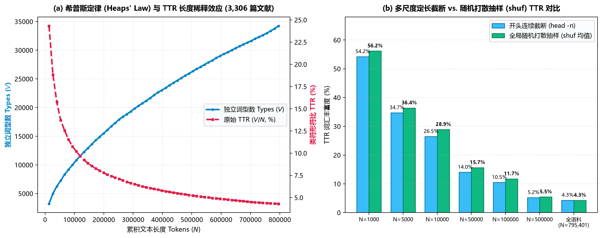
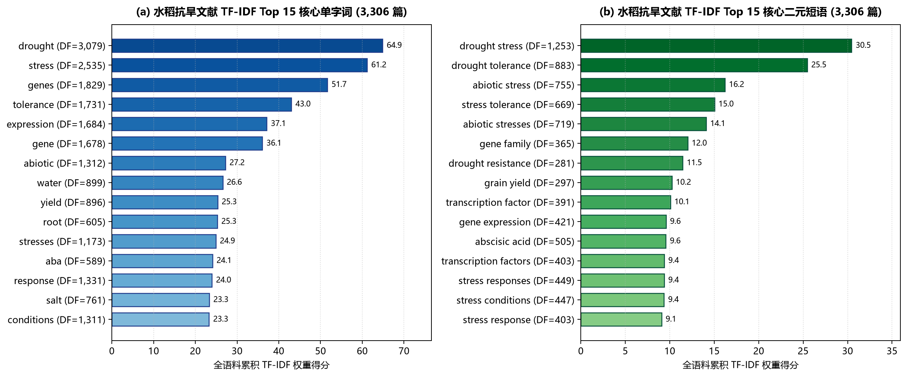
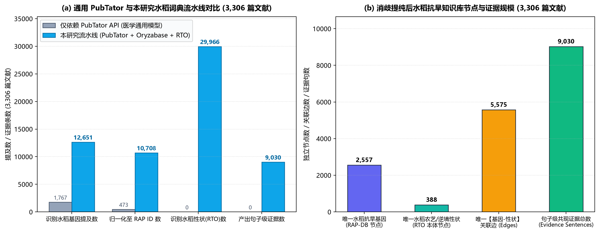
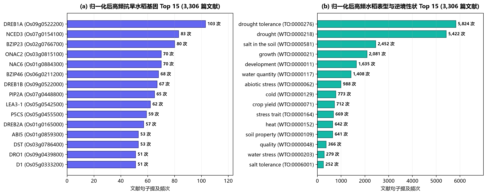

基于 PubMed 全量检索 (sleep 5.8s) + NLTK TTR/TF-IDF + Oryzabase (102,866 别名) + RTO 本体 (3,904 同义词)




| PMID | 句号 | 原文基因 | 归一化基因 & RAP ID | 原文性状 | 归一化性状 & RTO ID | 证据原句 (高亮对齐) |
|---|---|---|---|---|---|---|
| 42864607 | 1 | galactinol synthase | galactinol synthaseNCBIGene:548050 | drought | droughtWTO:0000218 | Genome-wide identification and characterization of the galactinol synthase (GmGolS) gene family and its expression under drought, heat, and combined stress in soybean. |
| 42864607 | 1 | galactinol synthase | galactinol synthaseNCBIGene:548050 | heat | heatWTO:0000152 | Genome-wide identification and characterization of the galactinol synthase (GmGolS) gene family and its expression under drought, heat, and combined stress in soybean. |
| 42864607 | 2 | Galactinol synthase | Galactinol synthaseNCBIGene:548050 | abiotic stress | abiotic stressWTO:0000062 | Galactinol synthase (GolS) catalyzes the first committed step in raffinose family oligosaccharide (RFO) biosynthesis and is implicated in plant adaptation to abiotic stress. |
| 42864607 | 5 | GmGolS | GmGolSNCBIGene:548050 | density | plant densityWTO:0000047 | The 25 GmGolS genes were distributed unevenly across 11 chromosomes, with chromosomes 3 and 19 showing the highest gene density. |
| 42829187 | 2 | OsDSR2 | DSR2Os01g0839200 | drought | droughtWTO:0000218 | We previously identified seven members of the domain of unknown function 966 (DUF966) family in rice and showed that OsDSR2 and OsDSR3 regulate tolerance to drought, salinity and alkali stresses. |
| 42829187 | 2 | OsDSR2 | DSR2Os01g0839200 | salinity | salt in the soilWTO:0000581 | We previously identified seven members of the domain of unknown function 966 (DUF966) family in rice and showed that OsDSR2 and OsDSR3 regulate tolerance to drought, salinity and alkali stresses. |
| 42829187 | 2 | OsDSR3 | OsDSR3Os01g0975000 | drought | droughtWTO:0000218 | We previously identified seven members of the domain of unknown function 966 (DUF966) family in rice and showed that OsDSR2 and OsDSR3 regulate tolerance to drought, salinity and alkali stresses. |
| 42829187 | 2 | OsDSR3 | OsDSR3Os01g0975000 | salinity | salt in the soilWTO:0000581 | We previously identified seven members of the domain of unknown function 966 (DUF966) family in rice and showed that OsDSR2 and OsDSR3 regulate tolerance to drought, salinity and alkali stresses. |
| 42829187 | 4 | OsDSR6 | OsDSR6Os08g0561600 | salinity | salt in the soilWTO:0000581 | In this study, we performed a systematic bioinformatic analysis of the structure and potential function of the rice DUF966 family and focused on the unidentified member OsDSR6 in salinity tolerance. |
| 42829187 | 12 | OsDSR6 | OsDSR6Os08g0561600 | salt | salt in the soilWTO:0000581 | Functional analysis showed that overexpression of OsDSR6 increases rice sensitivity to salt stress, and the transcript levels of stress-responsive genes, including Lea3, Rab16c, P5CS and OsNCED4, were decreased in OsDSR6-overexpressing plants. |
| 42829187 | 12 | Lea3 | LEA3-1Os05g0542500 | salt | salt in the soilWTO:0000581 | Functional analysis showed that overexpression of OsDSR6 increases rice sensitivity to salt stress, and the transcript levels of stress-responsive genes, including Lea3, Rab16c, P5CS and OsNCED4, were decreased in OsDSR6-overexpressing plants. |
| 42829187 | 12 | Rab16c | RAB16COs11g0454000 | salt | salt in the soilWTO:0000581 | Functional analysis showed that overexpression of OsDSR6 increases rice sensitivity to salt stress, and the transcript levels of stress-responsive genes, including Lea3, Rab16c, P5CS and OsNCED4, were decreased in OsDSR6-overexpressing plants. |
| 42829187 | 12 | P5CS | P5CSOs05g0455500 | salt | salt in the soilWTO:0000581 | Functional analysis showed that overexpression of OsDSR6 increases rice sensitivity to salt stress, and the transcript levels of stress-responsive genes, including Lea3, Rab16c, P5CS and OsNCED4, were decreased in OsDSR6-overexpressing plants. |
| 42829187 | 12 | OsNCED4 | NCED3Os07g0154100 | salt | salt in the soilWTO:0000581 | Functional analysis showed that overexpression of OsDSR6 increases rice sensitivity to salt stress, and the transcript levels of stress-responsive genes, including Lea3, Rab16c, P5CS and OsNCED4, were decreased in OsDSR6-overexpressing plants. |
| 42820932 | 9 | OsAKR | OsAKROs04g0339400 | phenotype | phenotypeWTO:0000005 | Notably, MutMap+ analysis, supported by improved IR64 genome assembly, pinpointed the aldo-keto reductase OsAKR candidate gene on chromosome 4 as a major contributor to the drought-tolerant phenotype. |
| 42820932 | 10 | OsAKR | OsAKROs04g0339400 | drought stress | drought toleranceTO:0000276 | Elevated expression of OsAKR in the DD mutant was associated with enhanced detoxification of reactive carbonyl species, including methylglyoxal (MG) and malondialdehyde (MDA), under drought stress. |
| 42794769 | 4 | OsHSP20 | HSP18.0Os03g0267000 | photosynthetic rate | photosynthetic rateTO:0001015 | In this study, we generated knockout and overexpression lines for OsHSP20 which is encoding a member of the Hsp20/alpha crystallin family, LOC_Os10g30162.1 (It is also one of the four candidate genes discovered during our fine mapping of major QTLs for photosynthetic rate in rice. |
| 42794769 | 6 | OsHSP20 | HSP18.0Os03g0267000 | morphology | morphologyWTO:0000044 | Phenotypic analyses revealed that OsHSP20 deficiency resulted in compromised plant architecture, leaf morphology, tillering, and panicle development, leading to a significant reduction in grain setting rate. |
| 42794769 | 6 | OsHSP20 | HSP18.0Os03g0267000 | development | developmentWTO:0000011 | Phenotypic analyses revealed that OsHSP20 deficiency resulted in compromised plant architecture, leaf morphology, tillering, and panicle development, leading to a significant reduction in grain setting rate. |
| 42794769 | 7 | OsHSP20 | HSP18.0Os03g0267000 | drought tolerance | drought toleranceTO:0000276 | Conversely, OsHSP20 overexpression enhanced drought tolerance. |
| 42794769 | 8 | OsHSP20 | HSP18.0Os03g0267000 | drought stress | drought toleranceTO:0000276 | Mechanistically, transcriptomic and functional analyses demonstrated that OsHSP20 maintains protein homeostasis under drought stress via its chaperone activity; this function orchestrates a coordinated regulatory network involving lipid barrier formation, antioxidant defense, and carbon allocation. |
| 42794769 | 9 | OsHSP20 | HSP18.0Os03g0267000 | drought | droughtWTO:0000218 | Our findings establish OsHSP20 as a positive regulator of both yield and drought resilience, improving crop adaptability by balancing growth and stress responses. |
| 42794769 | 9 | OsHSP20 | HSP18.0Os03g0267000 | growth | growthWTO:0000021 | Our findings establish OsHSP20 as a positive regulator of both yield and drought resilience, improving crop adaptability by balancing growth and stress responses. |
| 42794769 | 10 | OsHSP20 | HSP18.0Os03g0267000 | photosynthetic rate | photosynthetic rateTO:0001015 | In addition, our previous research has shown that OsHSP20 is actually one of the important components of the main QTL for rice photosynthetic rate. |
| 42787373 | 2 | IMP | IMP1Os03g0587000 | growth | growthWTO:0000021 | Inositol monophosphatase (IMP) is a key enzyme in the inositol signaling pathway and ascorbic acid (AsA) biosynthesis, playing crucial roles in plant growth, development, and abiotic stress responses. |
| 42787373 | 2 | IMP | IMP1Os03g0587000 | development | developmentWTO:0000011 | Inositol monophosphatase (IMP) is a key enzyme in the inositol signaling pathway and ascorbic acid (AsA) biosynthesis, playing crucial roles in plant growth, development, and abiotic stress responses. |
| 42787373 | 2 | IMP | IMP1Os03g0587000 | abiotic stress | abiotic stressWTO:0000062 | Inositol monophosphatase (IMP) is a key enzyme in the inositol signaling pathway and ascorbic acid (AsA) biosynthesis, playing crucial roles in plant growth, development, and abiotic stress responses. |
| 42787373 | 3 | IMP | IMP1Os03g0587000 | drought | droughtWTO:0000218 | Sorghum (S. bicolor) is an important cereal crop with remarkable drought and salinity tolerance, yet a systematic analysis of the IMP gene family in sorghum has been lacking. |
| 42787373 | 3 | IMP | IMP1Os03g0587000 | salinity | salt in the soilWTO:0000581 | Sorghum (S. bicolor) is an important cereal crop with remarkable drought and salinity tolerance, yet a systematic analysis of the IMP gene family in sorghum has been lacking. |
| 42770828 | 4 | OsWRKY10 | WRKY10Os01g0186000 | BPH | brown planthopper resistanceTO:0000424 | Here, we identify the WRKY transcription factor OsWRKY10 as an early JA-responsive regulator that enhances rice resistance to brown planthopper (BPH). |
| 42770828 | 5 | OsWRKY10 | WRKY10Os01g0186000 | BPH | brown planthopper resistanceTO:0000424 | OsWRKY10 expression is rapidly induced by BPH infestation in a MYC2-dependent manner. |
| 42770828 | 6 | OsWRKY10 | WRKY10Os01g0186000 | BPH | brown planthopper resistanceTO:0000424 | Overexpression of OsWRKY10 suppresses BPH feeding and oviposition, whereas wrky10 mutants exhibit increased susceptibility. |
| 42770828 | 10 | dip1 | DHN1Os02g0669100 | BPH | brown planthopper resistanceTO:0000424 | Consistently, dip1 mutants show enhanced resistance to BPH. |
| 42768028 | 6 | OsbHLH148 | BHLH148Os03g0741100 | drought tolerance | drought toleranceTO:0000276 | The dual protective effects of NLR8-Hap2 arise from the enhanced association with and stabilization of OsbHLH148 and OsBIHD1, which regulate drought tolerance and blast defense, respectively. |
| 42768028 | 6 | OsBIHD1 | BIHD1Os03g0680800 | drought tolerance | drought toleranceTO:0000276 | The dual protective effects of NLR8-Hap2 arise from the enhanced association with and stabilization of OsbHLH148 and OsBIHD1, which regulate drought tolerance and blast defense, respectively. |
| 42747986 | 8 | OsICL | ICLOs07g0529000 | soil | soil propertyWTO:0000109 | OsICL was induced under soil water deficit and by ABA or ACC; in shoots, combined ABA + ACC treatment produced the highest mean transcript accumulation. |
| 42747986 | 8 | OsICL | ICLOs07g0529000 | water deficit | drought toleranceTO:0000276 | OsICL was induced under soil water deficit and by ABA or ACC; in shoots, combined ABA + ACC treatment produced the highest mean transcript accumulation. |
| 42747986 | 9 | OsICL | ICLOs07g0529000 | soil | soil propertyWTO:0000109 | OsICL overexpression and knockout lines showed altered organic-acid, sugar, and amino-acid profiles, particularly under soil water deficit, but several metabolites changed in the same direction in both line classes. |
| 42747986 | 9 | OsICL | ICLOs07g0529000 | water deficit | drought toleranceTO:0000276 | OsICL overexpression and knockout lines showed altered organic-acid, sugar, and amino-acid profiles, particularly under soil water deficit, but several metabolites changed in the same direction in both line classes. |
| 42739424 | 1 | OsEPF2 | EPF1Os04g0637300 | Disease Resistance | disease resistanceTO:0000112 | Comprehensive Profiling of the Rice OsEPF/EPFL Gene Family Under Biotic and Abiotic Stresses Reveals the Involvement of OsEPF2 in Disease Resistance. |
| 42739424 | 8 | OsEPF2 | EPF1Os04g0637300 | pathogen | pathogenWTO:0000245 | In terms of biotic stress responses, OsEPF2/5/7/10 were rapidly induced as early as 12 h post-infection (hpi) with the rice blast pathogen (Magnaporthe oryzae). |
| 42739424 | 8 | OsEPF2 | EPF1Os04g0637300 | Magnaporthe oryzae | Magnaporthe oryzaeWTO:0000408 | In terms of biotic stress responses, OsEPF2/5/7/10 were rapidly induced as early as 12 h post-infection (hpi) with the rice blast pathogen (Magnaporthe oryzae). |
| 42716227 | 11 | OsRFP1 | RFP1Os01g0719100 | stomatal opening | stomatal openingTO:0020097 | OsRFP1 is a RING-finger E3 ubiquitin ligase and promotes stomatal opening. |
| 42716227 | 13 | OsRFP1 | RFP1Os01g0719100 | drought | droughtWTO:0000218 | Moreover, knockout of OsRFP1 via the CRISPR-Cas9 technique led to decreased drought and osmotic tolerance of osrfp1 mutants, implying that OsRFP1 positively regulates drought and osmotic stress response. |
| 42710869 | 5 | osset37 | OsSET37Os09g0556700 | growth | growthWTO:0000021 | Phenotypic analysis showed that osset37 mutants displayed normal vegetative and reproductive growth, but exhibited delayed germination and enhanced sensitivity to salt, drought, and ABA stresses during seed germination relative to the wild type. |
| 42710869 | 5 | osset37 | OsSET37Os09g0556700 | salt | salt in the soilWTO:0000581 | Phenotypic analysis showed that osset37 mutants displayed normal vegetative and reproductive growth, but exhibited delayed germination and enhanced sensitivity to salt, drought, and ABA stresses during seed germination relative to the wild type. |
| 42710869 | 5 | osset37 | OsSET37Os09g0556700 | drought | droughtWTO:0000218 | Phenotypic analysis showed that osset37 mutants displayed normal vegetative and reproductive growth, but exhibited delayed germination and enhanced sensitivity to salt, drought, and ABA stresses during seed germination relative to the wild type. |
| 42698207 | 1 | OsGF14f | GF14FOs03g0710800 | drought tolerance | drought toleranceTO:0000276 | OsGF14f, OsbZIP23 and OsFLZ20 form a hierarchical positive regulatory module to enhance drought tolerance in rice. |
| 42698207 | 1 | OsbZIP23 | BZIP23Os02g0766700 | drought tolerance | drought toleranceTO:0000276 | OsGF14f, OsbZIP23 and OsFLZ20 form a hierarchical positive regulatory module to enhance drought tolerance in rice. |
| 42698207 | 1 | OsFLZ20 | FLZ20Os06g0223700 | drought tolerance | drought toleranceTO:0000276 | OsGF14f, OsbZIP23 and OsFLZ20 form a hierarchical positive regulatory module to enhance drought tolerance in rice. |
| 42698207 | 4 | OsFLZ20 | FLZ20Os06g0223700 | drought | droughtWTO:0000218 | OsFLZ20 transcription is rapidly and robustly induced by drought, and transgenic analyses show that it does not affect normal growth or yield but instead acts as a positive regulator of drought tolerance by increasing soluble sugar accumulation and alleviating oxidative damage. |
| 42698207 | 4 | OsFLZ20 | FLZ20Os06g0223700 | growth | growthWTO:0000021 | OsFLZ20 transcription is rapidly and robustly induced by drought, and transgenic analyses show that it does not affect normal growth or yield but instead acts as a positive regulator of drought tolerance by increasing soluble sugar accumulation and alleviating oxidative damage. |
| 42698207 | 4 | OsFLZ20 | FLZ20Os06g0223700 | drought tolerance | drought toleranceTO:0000276 | OsFLZ20 transcription is rapidly and robustly induced by drought, and transgenic analyses show that it does not affect normal growth or yield but instead acts as a positive regulator of drought tolerance by increasing soluble sugar accumulation and alleviating oxidative damage. |
| 42698207 | 7 | OsFLZ20 | FLZ20Os06g0223700 | drought stress | drought toleranceTO:0000276 | In parallel, the OsGF14f-OsbZIP23 module enhances the transcriptional activation of OsFLZ20 under drought stress. |
| 42698207 | 8 | OsFLZ20 | FLZ20Os06g0223700 | drought tolerance | drought toleranceTO:0000276 | Further genetic analyses reveal that full OsFLZ20 function in drought tolerance requires a functional OsGF14f, whereas loss of OsFLZ20 compromises the drought tolerance conferred by OsGF14f, indicating mutual interdependence of these two regulators within the drought response network. |
| 42698207 | 8 | OsFLZ20 | FLZ20Os06g0223700 | drought | droughtWTO:0000218 | Further genetic analyses reveal that full OsFLZ20 function in drought tolerance requires a functional OsGF14f, whereas loss of OsFLZ20 compromises the drought tolerance conferred by OsGF14f, indicating mutual interdependence of these two regulators within the drought response network. |
| 42698207 | 8 | OsGF14f | GF14FOs03g0710800 | drought tolerance | drought toleranceTO:0000276 | Further genetic analyses reveal that full OsFLZ20 function in drought tolerance requires a functional OsGF14f, whereas loss of OsFLZ20 compromises the drought tolerance conferred by OsGF14f, indicating mutual interdependence of these two regulators within the drought response network. |
| 42698207 | 8 | OsGF14f | GF14FOs03g0710800 | drought | droughtWTO:0000218 | Further genetic analyses reveal that full OsFLZ20 function in drought tolerance requires a functional OsGF14f, whereas loss of OsFLZ20 compromises the drought tolerance conferred by OsGF14f, indicating mutual interdependence of these two regulators within the drought response network. |
| 42693639 | 7 | D53 | D53Os11g0104300 | drought | droughtWTO:0000218 | SLs negatively regulate drought acclimation by promoting degradation of the repressor protein DWARF53 (D53). |
| 42693639 | 9 | ZFP36 | BSRD1Os03g0437200 | drought stress | drought toleranceTO:0000276 | ZFP36 encodes a zinc-finger transcription factor that promotes H2O2 scavenging to sustain reactive oxygen species (ROS) homeostasis during drought stress. |
| 42693639 | 12 | D17 | D17Os04g0550600 | drought resistance | drought toleranceTO:0000276 | The agronomic potential of tuning SL biosynthesis is further supported by the elite D17/HTD1 allele, which weakens SL biosynthesis and improves drought resistance and grain yield in Nekken 2 (NK2) under field conditions. |
| 42693639 | 12 | D17 | D17Os04g0550600 | grain yield | crop yieldWTO:0000071 | The agronomic potential of tuning SL biosynthesis is further supported by the elite D17/HTD1 allele, which weakens SL biosynthesis and improves drought resistance and grain yield in Nekken 2 (NK2) under field conditions. |
| 42693639 | 12 | NK2 | NK2Oryzabase:2153 | drought resistance | drought toleranceTO:0000276 | The agronomic potential of tuning SL biosynthesis is further supported by the elite D17/HTD1 allele, which weakens SL biosynthesis and improves drought resistance and grain yield in Nekken 2 (NK2) under field conditions. |
| 42693639 | 12 | NK2 | NK2Oryzabase:2153 | grain yield | crop yieldWTO:0000071 | The agronomic potential of tuning SL biosynthesis is further supported by the elite D17/HTD1 allele, which weakens SL biosynthesis and improves drought resistance and grain yield in Nekken 2 (NK2) under field conditions. |
| 42675667 | 7 | OsWRKY53 | WRKY53Os05g0343400 | disease resistance | disease resistanceTO:0000112 | Additionally, OsIMalpha1a interacts with OsWRKY53 (a positive regulator of disease resistance but a negative regulator of salt tolerance), thereby promoting the nuclear accumulation of OsWRKY53. |
| 42675667 | 7 | OsWRKY53 | WRKY53Os05g0343400 | salt tolerance | salt toleranceTO:0006001 | Additionally, OsIMalpha1a interacts with OsWRKY53 (a positive regulator of disease resistance but a negative regulator of salt tolerance), thereby promoting the nuclear accumulation of OsWRKY53. |
| 42675667 | 9 | OsDIP1 | DHN1Os02g0669100 | drought | droughtWTO:0000218 | Furthermore, OsSRLD interacts with and stabilizes OsDIP1 (a positive regulator of drought and salt tolerance) via an E3 ligase-independent pathway. |
| 42675667 | 9 | OsDIP1 | DHN1Os02g0669100 | salt tolerance | salt toleranceTO:0006001 | Furthermore, OsSRLD interacts with and stabilizes OsDIP1 (a positive regulator of drought and salt tolerance) via an E3 ligase-independent pathway. |
| 42659956 | 1 | ZmPIP1;6 | ZmPIP1;6NCBIGene:541887 | drought tolerance | drought toleranceTO:0000276 | ZmPIP1;6 confers drought tolerance in maize seedlings under the regulation of ZmIBH1-L1 and ZmPBL21. |
| 42659956 | 3 | ZmPIP1;6 | ZmPIP1;6NCBIGene:541887 | drought tolerance | drought toleranceTO:0000276 | In this study, we functionally characterized ZmPIP1;6, that encodes a maize plasma membrane intrinsic protein, and investigated its regulation pathway and allelic variation in relation to drought tolerance. |
| 42659956 | 4 | ZmPIP1;6 | ZmPIP1;6NCBIGene:541887 | drought stress | drought toleranceTO:0000276 | ZmPIP1;6 was predominantly expressed in seedling roots and was induced by drought stress. |
| 42659956 | 5 | ZmPIP1;6 | ZmPIP1;6NCBIGene:541887 | drought tolerance | drought toleranceTO:0000276 | Functional analyses indicated that ZmPIP1;6 positively regulates drought tolerance in maize seedlings. |
| 42659956 | 8 | ZmPIP1;6 | ZmPIP1;6NCBIGene:541887 | drought tolerance | drought toleranceTO:0000276 | Candidate gene association analysis identified a significant natural variation in ZmPIP1;6 associated with seedling drought tolerance, and a derived Cleaved Amplified Polymorphic Sequences marker was developed to target a key C/T polymorphism for marker-assisted selection. |
| 42659956 | 9 | ZmPIP1;6 | ZmPIP1;6NCBIGene:541887 | drought tolerance | drought toleranceTO:0000276 | These findings demonstrate that ZmPIP1;6 is an important positive regulator of maize drought tolerance and provide both mechanistic insight and molecular tools for drought-resistance breeding. |
| 42653123 | 7 | OsHKT1 | HKT7Os04g0607600 | heat | heatWTO:0000152 | Applying this scheme shows that the genes with genuine breeding traction in rice-SUB1A, OsHKT1;5, OsHMA3, OsNRAMP5, DRO1-rest on Tier B evidence from classical genetics and field testing, whereas the most cell-resolved rice evidence concentrates in root outer layers and barrier formation at Tier C, and heat and cold stress, despite dominating yield loss, lack rice cell-resolved data almost entirely. |
| 42653123 | 7 | OsHKT1 | HKT7Os04g0607600 | cold | coldWTO:0000129 | Applying this scheme shows that the genes with genuine breeding traction in rice-SUB1A, OsHKT1;5, OsHMA3, OsNRAMP5, DRO1-rest on Tier B evidence from classical genetics and field testing, whereas the most cell-resolved rice evidence concentrates in root outer layers and barrier formation at Tier C, and heat and cold stress, despite dominating yield loss, lack rice cell-resolved data almost entirely. |
| 42653123 | 7 | OsHMA3 | GCC7Os07g0232900 | heat | heatWTO:0000152 | Applying this scheme shows that the genes with genuine breeding traction in rice-SUB1A, OsHKT1;5, OsHMA3, OsNRAMP5, DRO1-rest on Tier B evidence from classical genetics and field testing, whereas the most cell-resolved rice evidence concentrates in root outer layers and barrier formation at Tier C, and heat and cold stress, despite dominating yield loss, lack rice cell-resolved data almost entirely. |
| 42653123 | 7 | OsHMA3 | GCC7Os07g0232900 | cold | coldWTO:0000129 | Applying this scheme shows that the genes with genuine breeding traction in rice-SUB1A, OsHKT1;5, OsHMA3, OsNRAMP5, DRO1-rest on Tier B evidence from classical genetics and field testing, whereas the most cell-resolved rice evidence concentrates in root outer layers and barrier formation at Tier C, and heat and cold stress, despite dominating yield loss, lack rice cell-resolved data almost entirely. |
| 42653123 | 7 | OsNRAMP5 | LCD1Os07g0257200 | heat | heatWTO:0000152 | Applying this scheme shows that the genes with genuine breeding traction in rice-SUB1A, OsHKT1;5, OsHMA3, OsNRAMP5, DRO1-rest on Tier B evidence from classical genetics and field testing, whereas the most cell-resolved rice evidence concentrates in root outer layers and barrier formation at Tier C, and heat and cold stress, despite dominating yield loss, lack rice cell-resolved data almost entirely. |
| 42653123 | 7 | OsNRAMP5 | LCD1Os07g0257200 | cold | coldWTO:0000129 | Applying this scheme shows that the genes with genuine breeding traction in rice-SUB1A, OsHKT1;5, OsHMA3, OsNRAMP5, DRO1-rest on Tier B evidence from classical genetics and field testing, whereas the most cell-resolved rice evidence concentrates in root outer layers and barrier formation at Tier C, and heat and cold stress, despite dominating yield loss, lack rice cell-resolved data almost entirely. |
| 42650093 | 10 | smart | FRETRO129Oryzabase:16233 | development | developmentWTO:0000011 | Wider adoption will require affordable technology platforms, standardized data systems, multi-environment validation, breeder capacity development, and collaborative data-sharing frameworks for smart and greener agriculture. |
| 42637953 | 3 | NAM | NAMNCBIGene:841721 | growth | growthWTO:0000021 | NAC (NAM, ATAF and CUC) plays an important role in plant growth and development and adaptation to a variety of abiotic stresses. |
| 42637953 | 3 | NAM | NAMNCBIGene:841721 | development | developmentWTO:0000011 | NAC (NAM, ATAF and CUC) plays an important role in plant growth and development and adaptation to a variety of abiotic stresses. |
| 42620305 | 9 | PSY | PSY3Os09g0555500 | growth | growthWTO:0000021 | Together, these findings identify OsPSY8 as an important regulator of the transition from growth to stress adaptation in rice and suggest that stress-induced repression of PSY signaling is required to disengage growth programs and activate adaptive responses during osmotic stress. |
| 42588862 | 4 | BZR1 | BZR1Os07g0580500 | growth | growthWTO:0000021 | The BRI1-EMS1 suppressor (BES1)/brassinazole-resistant 1 (BZR1) family is a kind of plant-specific transcription factor that regulates growth, development, and stress responses in plants. |
| 42588862 | 4 | BZR1 | BZR1Os07g0580500 | development | developmentWTO:0000011 | The BRI1-EMS1 suppressor (BES1)/brassinazole-resistant 1 (BZR1) family is a kind of plant-specific transcription factor that regulates growth, development, and stress responses in plants. |
| 42576611 | 1 | CYCB1 | CYCB1Os01g0281200 | drought tolerance | drought toleranceTO:0000276 | The transcription factor ZmMYB3R targets CYCB1;2 to modulate maize drought tolerance. |
| 42576611 | 7 | CYCB1 | CYCB1Os01g0281200 | drought | droughtWTO:0000218 | MYB3R binds the mitosis-specific activator (MSA) motif to directly transactivate the B-type cyclin gene CYCB1;2, and cycb1;2 mutants phenocopied the myb3r drought defects. |
| 42531617 | 7 | HKT1 | HKT7Os04g0607600 | salinity | salt in the soilWTO:0000581 | Under salinity, endophytes contribute to ion homeostasis through regulation of transporters such as HKT1;5, while under drought they enhance hydraulic conductivity via aquaporin regulation through plasma membrane intrinsic proteins (PIPs) and tonoplast intrinsic proteins (TIPs). |
| 42531617 | 7 | HKT1 | HKT7Os04g0607600 | drought | droughtWTO:0000218 | Under salinity, endophytes contribute to ion homeostasis through regulation of transporters such as HKT1;5, while under drought they enhance hydraulic conductivity via aquaporin regulation through plasma membrane intrinsic proteins (PIPs) and tonoplast intrinsic proteins (TIPs). |
| 42531617 | 7 | TIPs | TPIOs01g0147900 | salinity | salt in the soilWTO:0000581 | Under salinity, endophytes contribute to ion homeostasis through regulation of transporters such as HKT1;5, while under drought they enhance hydraulic conductivity via aquaporin regulation through plasma membrane intrinsic proteins (PIPs) and tonoplast intrinsic proteins (TIPs). |
| 42531617 | 7 | TIPs | TPIOs01g0147900 | drought | droughtWTO:0000218 | Under salinity, endophytes contribute to ion homeostasis through regulation of transporters such as HKT1;5, while under drought they enhance hydraulic conductivity via aquaporin regulation through plasma membrane intrinsic proteins (PIPs) and tonoplast intrinsic proteins (TIPs). |
| 42503271 | 1 | OsMBL1 | SALTOs01g0348900 | abiotic stress | abiotic stressWTO:0000062 | Multifunctional roles of the rice mannose-binding lectin OsMBL1 in biotic and abiotic stress responses. |
| 42503271 | 5 | OsMBL1 | SALTOs01g0348900 | salt | salt in the soilWTO:0000581 | Transcript expression analyses have demonstrated that OsMBL1 is significantly induced by salt, drought, cold, heat, phytohormones, and rice blast infection. |
| 42503271 | 5 | OsMBL1 | SALTOs01g0348900 | drought | droughtWTO:0000218 | Transcript expression analyses have demonstrated that OsMBL1 is significantly induced by salt, drought, cold, heat, phytohormones, and rice blast infection. |
| 42503271 | 5 | OsMBL1 | SALTOs01g0348900 | cold | coldWTO:0000129 | Transcript expression analyses have demonstrated that OsMBL1 is significantly induced by salt, drought, cold, heat, phytohormones, and rice blast infection. |
| 42503271 | 5 | OsMBL1 | SALTOs01g0348900 | heat | heatWTO:0000152 | Transcript expression analyses have demonstrated that OsMBL1 is significantly induced by salt, drought, cold, heat, phytohormones, and rice blast infection. |
| 42503271 | 7 | OsMBL1 | SALTOs01g0348900 | salt | salt in the soilWTO:0000581 | Reverse genetic assays have verified that OsMBL1 positively modulates rice tolerance to salt, drought, and rice blast, while negatively regulating cold tolerance, making it a candidate molecular indicator for salt and drought stress research in rice. |
| 42503271 | 7 | OsMBL1 | SALTOs01g0348900 | drought | droughtWTO:0000218 | Reverse genetic assays have verified that OsMBL1 positively modulates rice tolerance to salt, drought, and rice blast, while negatively regulating cold tolerance, making it a candidate molecular indicator for salt and drought stress research in rice. |
| 42503271 | 7 | OsMBL1 | SALTOs01g0348900 | cold tolerance | cold toleranceTO:0000303 | Reverse genetic assays have verified that OsMBL1 positively modulates rice tolerance to salt, drought, and rice blast, while negatively regulating cold tolerance, making it a candidate molecular indicator for salt and drought stress research in rice. |
| 42503271 | 7 | OsMBL1 | SALTOs01g0348900 | drought stress | drought toleranceTO:0000276 | Reverse genetic assays have verified that OsMBL1 positively modulates rice tolerance to salt, drought, and rice blast, while negatively regulating cold tolerance, making it a candidate molecular indicator for salt and drought stress research in rice. |
| 42501870 | 3 | OsCBL1 | CBL1Os10g0564800 | drought stress | drought toleranceTO:0000276 | However, the function of OsCBL1 in drought stress tolerance in rice remains unexplored. |
| 42501870 | 4 | OsCBL1 | CBL1Os10g0564800 | drought | droughtWTO:0000218 | In this study, we investigated the role of OsCBL1 in response to drought using WT and OsCBL1-knockdown (OsCBL1-KD) rice lines through phenotypic, physiological and transcriptomic analyses. |
| 42501870 | 5 | OsCBL1 | CBL1Os10g0564800 | drought stress | drought toleranceTO:0000276 | OsCBL1 was predominantly expressed in leaves and was strongly induced by drought stress. |
| 42501870 | 6 | OsCBL1 | CBL1Os10g0564800 | water | water quantityWTO:0000117 | Phenotypic analysis revealed that OsCBL1-KD lines exhibited significantly reduced survival rates and increased water loss rates compared with WT plants following drought stress, indicating that the rice response to drought stress is dependent on OsCBL1. |
| 42501870 | 6 | OsCBL1 | CBL1Os10g0564800 | drought stress | drought toleranceTO:0000276 | Phenotypic analysis revealed that OsCBL1-KD lines exhibited significantly reduced survival rates and increased water loss rates compared with WT plants following drought stress, indicating that the rice response to drought stress is dependent on OsCBL1. |
| 42501870 | 10 | OsCBL1 | CBL1Os10g0564800 | drought tolerance | drought toleranceTO:0000276 | Taken together, these results suggest that OsCBL1 acts as a key regulator of drought tolerance in rice by integrating MAPK cascades, hormone signaling, and redox homeostasis, providing new insights into CBL-mediated stress adaptation mechanisms. |
| 42492508 | 8 | protein phosphatase 2C | protein phosphatase 2CNCBIGene:100286089 | drought tolerance | drought toleranceTO:0000276 | ROAD1 also interacts with protein phosphatase 2C (PP2C) orthologs from maize, wheat, and Arabidopsis, and heterologous expression of ROAD1C enhances drought tolerance in Arabidopsis, rapeseed, maize, wheat, and poplar. |
| 42492508 | 8 | PP2C | PP2CNCBIGene:542176 | drought tolerance | drought toleranceTO:0000276 | ROAD1 also interacts with protein phosphatase 2C (PP2C) orthologs from maize, wheat, and Arabidopsis, and heterologous expression of ROAD1C enhances drought tolerance in Arabidopsis, rapeseed, maize, wheat, and poplar. |
| 42481044 | 1 | OsRRK1 | RLCK216Os06g0693200 | drought tolerance | drought toleranceTO:0000276 | Mutation in rice protein kinase OsRRK1 confers drought tolerance via non-phosphorylating fructose-1,6-bisphosphate aldolase 6. |
| 42481044 | 3 | OsRRK1 | RLCK216Os06g0693200 | drought tolerance | drought toleranceTO:0000276 | In this study, to identify the key genetic regulators of drought tolerance, we screened a gamma-irradiated population of 150 rice M10 core mutant lines and identified drought-insensitive TILLING line 5 (ditl5) carrying a frameshift mutation caused by a single-base guanine deletion in Rop-interacting receptor-like kinase 1 (OsRRK1). |
| 42481044 | 5 | OsRRK1 | RLCK216Os06g0693200 | drought | droughtWTO:0000218 | Transgenic plants, including CRISPR/Cas9-mediated knockout, overexpression, and complementation lines, were generated to evaluate the function of OsRRK1 under drought conditions. |
| 42481044 | 8 | OsRRK1 | RLCK216Os06g0693200 | drought tolerance | drought toleranceTO:0000276 | Collectively, our findings provide evidence to indicate that OsRRK1 negatively regulates drought tolerance by modulating OsFBA6-dependent glycolysis via phosphorylation. |
| 42469498 | 7 | ART1 | ZOS12-02Os12g0170400 | drought | droughtWTO:0000218 | Key applications include editing transcription factors (ART1, DRO1, OsDST) for drought and salinity tolerance, modifying transporter genes (OsHMA2, OsNramp5) for heavy metal detoxification, and disrupting susceptibility genes (MLO, OsERF922, CsLOB1) for broad-spectrum disease and pest resistance. |
| 42469498 | 7 | ART1 | ZOS12-02Os12g0170400 | salinity | salt in the soilWTO:0000581 | Key applications include editing transcription factors (ART1, DRO1, OsDST) for drought and salinity tolerance, modifying transporter genes (OsHMA2, OsNramp5) for heavy metal detoxification, and disrupting susceptibility genes (MLO, OsERF922, CsLOB1) for broad-spectrum disease and pest resistance. |
| 42469498 | 7 | ART1 | ZOS12-02Os12g0170400 | MLO | resistance to disease by mycoplasma-like organismTO:0000013 | Key applications include editing transcription factors (ART1, DRO1, OsDST) for drought and salinity tolerance, modifying transporter genes (OsHMA2, OsNramp5) for heavy metal detoxification, and disrupting susceptibility genes (MLO, OsERF922, CsLOB1) for broad-spectrum disease and pest resistance. |
| 42469498 | 7 | ART1 | ZOS12-02Os12g0170400 | disease | diseaseWTO:0000130 | Key applications include editing transcription factors (ART1, DRO1, OsDST) for drought and salinity tolerance, modifying transporter genes (OsHMA2, OsNramp5) for heavy metal detoxification, and disrupting susceptibility genes (MLO, OsERF922, CsLOB1) for broad-spectrum disease and pest resistance. |
| 42469498 | 7 | ART1 | ZOS12-02Os12g0170400 | pest resistance | animal damage resistanceTO:0000054 | Key applications include editing transcription factors (ART1, DRO1, OsDST) for drought and salinity tolerance, modifying transporter genes (OsHMA2, OsNramp5) for heavy metal detoxification, and disrupting susceptibility genes (MLO, OsERF922, CsLOB1) for broad-spectrum disease and pest resistance. |
| 42469498 | 7 | DRO1 | DRO1Os09g0439800 | drought | droughtWTO:0000218 | Key applications include editing transcription factors (ART1, DRO1, OsDST) for drought and salinity tolerance, modifying transporter genes (OsHMA2, OsNramp5) for heavy metal detoxification, and disrupting susceptibility genes (MLO, OsERF922, CsLOB1) for broad-spectrum disease and pest resistance. |
| 42469498 | 7 | DRO1 | DRO1Os09g0439800 | salinity | salt in the soilWTO:0000581 | Key applications include editing transcription factors (ART1, DRO1, OsDST) for drought and salinity tolerance, modifying transporter genes (OsHMA2, OsNramp5) for heavy metal detoxification, and disrupting susceptibility genes (MLO, OsERF922, CsLOB1) for broad-spectrum disease and pest resistance. |
| 42469498 | 7 | DRO1 | DRO1Os09g0439800 | MLO | resistance to disease by mycoplasma-like organismTO:0000013 | Key applications include editing transcription factors (ART1, DRO1, OsDST) for drought and salinity tolerance, modifying transporter genes (OsHMA2, OsNramp5) for heavy metal detoxification, and disrupting susceptibility genes (MLO, OsERF922, CsLOB1) for broad-spectrum disease and pest resistance. |
| 42469498 | 7 | DRO1 | DRO1Os09g0439800 | disease | diseaseWTO:0000130 | Key applications include editing transcription factors (ART1, DRO1, OsDST) for drought and salinity tolerance, modifying transporter genes (OsHMA2, OsNramp5) for heavy metal detoxification, and disrupting susceptibility genes (MLO, OsERF922, CsLOB1) for broad-spectrum disease and pest resistance. |
| 42469498 | 7 | DRO1 | DRO1Os09g0439800 | pest resistance | animal damage resistanceTO:0000054 | Key applications include editing transcription factors (ART1, DRO1, OsDST) for drought and salinity tolerance, modifying transporter genes (OsHMA2, OsNramp5) for heavy metal detoxification, and disrupting susceptibility genes (MLO, OsERF922, CsLOB1) for broad-spectrum disease and pest resistance. |
| 42469498 | 7 | OsDST | DSTOs03g0786400 | drought | droughtWTO:0000218 | Key applications include editing transcription factors (ART1, DRO1, OsDST) for drought and salinity tolerance, modifying transporter genes (OsHMA2, OsNramp5) for heavy metal detoxification, and disrupting susceptibility genes (MLO, OsERF922, CsLOB1) for broad-spectrum disease and pest resistance. |
| 42469498 | 7 | OsDST | DSTOs03g0786400 | salinity | salt in the soilWTO:0000581 | Key applications include editing transcription factors (ART1, DRO1, OsDST) for drought and salinity tolerance, modifying transporter genes (OsHMA2, OsNramp5) for heavy metal detoxification, and disrupting susceptibility genes (MLO, OsERF922, CsLOB1) for broad-spectrum disease and pest resistance. |
| 42469498 | 7 | OsDST | DSTOs03g0786400 | MLO | resistance to disease by mycoplasma-like organismTO:0000013 | Key applications include editing transcription factors (ART1, DRO1, OsDST) for drought and salinity tolerance, modifying transporter genes (OsHMA2, OsNramp5) for heavy metal detoxification, and disrupting susceptibility genes (MLO, OsERF922, CsLOB1) for broad-spectrum disease and pest resistance. |
| 42469498 | 7 | OsDST | DSTOs03g0786400 | disease | diseaseWTO:0000130 | Key applications include editing transcription factors (ART1, DRO1, OsDST) for drought and salinity tolerance, modifying transporter genes (OsHMA2, OsNramp5) for heavy metal detoxification, and disrupting susceptibility genes (MLO, OsERF922, CsLOB1) for broad-spectrum disease and pest resistance. |
| 42469498 | 7 | OsDST | DSTOs03g0786400 | pest resistance | animal damage resistanceTO:0000054 | Key applications include editing transcription factors (ART1, DRO1, OsDST) for drought and salinity tolerance, modifying transporter genes (OsHMA2, OsNramp5) for heavy metal detoxification, and disrupting susceptibility genes (MLO, OsERF922, CsLOB1) for broad-spectrum disease and pest resistance. |
| 42469498 | 7 | OsHMA2 | HMA2Os06g0700700 | drought | droughtWTO:0000218 | Key applications include editing transcription factors (ART1, DRO1, OsDST) for drought and salinity tolerance, modifying transporter genes (OsHMA2, OsNramp5) for heavy metal detoxification, and disrupting susceptibility genes (MLO, OsERF922, CsLOB1) for broad-spectrum disease and pest resistance. |
| 42469498 | 7 | OsHMA2 | HMA2Os06g0700700 | salinity | salt in the soilWTO:0000581 | Key applications include editing transcription factors (ART1, DRO1, OsDST) for drought and salinity tolerance, modifying transporter genes (OsHMA2, OsNramp5) for heavy metal detoxification, and disrupting susceptibility genes (MLO, OsERF922, CsLOB1) for broad-spectrum disease and pest resistance. |
| 42469498 | 7 | OsHMA2 | HMA2Os06g0700700 | MLO | resistance to disease by mycoplasma-like organismTO:0000013 | Key applications include editing transcription factors (ART1, DRO1, OsDST) for drought and salinity tolerance, modifying transporter genes (OsHMA2, OsNramp5) for heavy metal detoxification, and disrupting susceptibility genes (MLO, OsERF922, CsLOB1) for broad-spectrum disease and pest resistance. |
| 42469498 | 7 | OsHMA2 | HMA2Os06g0700700 | disease | diseaseWTO:0000130 | Key applications include editing transcription factors (ART1, DRO1, OsDST) for drought and salinity tolerance, modifying transporter genes (OsHMA2, OsNramp5) for heavy metal detoxification, and disrupting susceptibility genes (MLO, OsERF922, CsLOB1) for broad-spectrum disease and pest resistance. |
| 42469498 | 7 | OsHMA2 | HMA2Os06g0700700 | pest resistance | animal damage resistanceTO:0000054 | Key applications include editing transcription factors (ART1, DRO1, OsDST) for drought and salinity tolerance, modifying transporter genes (OsHMA2, OsNramp5) for heavy metal detoxification, and disrupting susceptibility genes (MLO, OsERF922, CsLOB1) for broad-spectrum disease and pest resistance. |
| 42469498 | 7 | OsNramp5 | LCD1Os07g0257200 | drought | droughtWTO:0000218 | Key applications include editing transcription factors (ART1, DRO1, OsDST) for drought and salinity tolerance, modifying transporter genes (OsHMA2, OsNramp5) for heavy metal detoxification, and disrupting susceptibility genes (MLO, OsERF922, CsLOB1) for broad-spectrum disease and pest resistance. |
| 42469498 | 7 | OsNramp5 | LCD1Os07g0257200 | salinity | salt in the soilWTO:0000581 | Key applications include editing transcription factors (ART1, DRO1, OsDST) for drought and salinity tolerance, modifying transporter genes (OsHMA2, OsNramp5) for heavy metal detoxification, and disrupting susceptibility genes (MLO, OsERF922, CsLOB1) for broad-spectrum disease and pest resistance. |
| 42469498 | 7 | OsNramp5 | LCD1Os07g0257200 | MLO | resistance to disease by mycoplasma-like organismTO:0000013 | Key applications include editing transcription factors (ART1, DRO1, OsDST) for drought and salinity tolerance, modifying transporter genes (OsHMA2, OsNramp5) for heavy metal detoxification, and disrupting susceptibility genes (MLO, OsERF922, CsLOB1) for broad-spectrum disease and pest resistance. |
| 42469498 | 7 | OsNramp5 | LCD1Os07g0257200 | disease | diseaseWTO:0000130 | Key applications include editing transcription factors (ART1, DRO1, OsDST) for drought and salinity tolerance, modifying transporter genes (OsHMA2, OsNramp5) for heavy metal detoxification, and disrupting susceptibility genes (MLO, OsERF922, CsLOB1) for broad-spectrum disease and pest resistance. |
| 42469498 | 7 | OsNramp5 | LCD1Os07g0257200 | pest resistance | animal damage resistanceTO:0000054 | Key applications include editing transcription factors (ART1, DRO1, OsDST) for drought and salinity tolerance, modifying transporter genes (OsHMA2, OsNramp5) for heavy metal detoxification, and disrupting susceptibility genes (MLO, OsERF922, CsLOB1) for broad-spectrum disease and pest resistance. |
| 42469498 | 7 | OsERF922 | ERF92Os01g0752500 | drought | droughtWTO:0000218 | Key applications include editing transcription factors (ART1, DRO1, OsDST) for drought and salinity tolerance, modifying transporter genes (OsHMA2, OsNramp5) for heavy metal detoxification, and disrupting susceptibility genes (MLO, OsERF922, CsLOB1) for broad-spectrum disease and pest resistance. |
| 42469498 | 7 | OsERF922 | ERF92Os01g0752500 | salinity | salt in the soilWTO:0000581 | Key applications include editing transcription factors (ART1, DRO1, OsDST) for drought and salinity tolerance, modifying transporter genes (OsHMA2, OsNramp5) for heavy metal detoxification, and disrupting susceptibility genes (MLO, OsERF922, CsLOB1) for broad-spectrum disease and pest resistance. |
| 42469498 | 7 | OsERF922 | ERF92Os01g0752500 | MLO | resistance to disease by mycoplasma-like organismTO:0000013 | Key applications include editing transcription factors (ART1, DRO1, OsDST) for drought and salinity tolerance, modifying transporter genes (OsHMA2, OsNramp5) for heavy metal detoxification, and disrupting susceptibility genes (MLO, OsERF922, CsLOB1) for broad-spectrum disease and pest resistance. |
| 42469498 | 7 | OsERF922 | ERF92Os01g0752500 | disease | diseaseWTO:0000130 | Key applications include editing transcription factors (ART1, DRO1, OsDST) for drought and salinity tolerance, modifying transporter genes (OsHMA2, OsNramp5) for heavy metal detoxification, and disrupting susceptibility genes (MLO, OsERF922, CsLOB1) for broad-spectrum disease and pest resistance. |
| 42469498 | 7 | OsERF922 | ERF92Os01g0752500 | pest resistance | animal damage resistanceTO:0000054 | Key applications include editing transcription factors (ART1, DRO1, OsDST) for drought and salinity tolerance, modifying transporter genes (OsHMA2, OsNramp5) for heavy metal detoxification, and disrupting susceptibility genes (MLO, OsERF922, CsLOB1) for broad-spectrum disease and pest resistance. |
| 42452146 | 10 | Akt1 | AKT1Os01g0648000 | seed size | seed sizeTO:0000391 | Multivariate analyses revealed significant population differentiation: Akt1 was the most distinct, whereas Alm1 exhibited superior seed size and mass. |
| 42452146 | 10 | Alm1 | SODBOs06g0143000 | seed size | seed sizeTO:0000391 | Multivariate analyses revealed significant population differentiation: Akt1 was the most distinct, whereas Alm1 exhibited superior seed size and mass. |
| 42419297 | 5 | osnac4 | NAC4Os01g0816100 | grain yield | crop yieldWTO:0000071 | Loss-of-function osnac4 mutants significantly reduce grain Cd accumulation by 30%-50% across diverse genetic backgrounds without compromising grain yield or agronomic traits. |
| 42419297 | 6 | OsSAPK2 | SAPK2Os07g0622000 | drought | droughtWTO:0000218 | Mechanistically, we reveal that the drought/abscisic acid (ABA)-activated kinase OsSAPK2 interacts with and phosphorylates OsNAC4, thereby stabilizing the protein and enhancing its transcriptional activation of the Cd transporter gene OsNRAMP1. |
| 42419297 | 6 | OsNAC4 | NAC4Os01g0816100 | drought | droughtWTO:0000218 | Mechanistically, we reveal that the drought/abscisic acid (ABA)-activated kinase OsSAPK2 interacts with and phosphorylates OsNAC4, thereby stabilizing the protein and enhancing its transcriptional activation of the Cd transporter gene OsNRAMP1. |
| 42419297 | 6 | OsNRAMP1 | NRAMP1Os07g0258400 | drought | droughtWTO:0000218 | Mechanistically, we reveal that the drought/abscisic acid (ABA)-activated kinase OsSAPK2 interacts with and phosphorylates OsNAC4, thereby stabilizing the protein and enhancing its transcriptional activation of the Cd transporter gene OsNRAMP1. |
| 42417561 | 1 | OseRF1 | ESP1Os07g0587400 | Drought | droughtWTO:0000218 | Targeted Modulation of Eukaryotic Release Factor 1 (OseRF1) by an RNA Aptamer Enhances Drought Adaptation in Rice. |
| 42417561 | 6 | OseRF1 | ESP1Os07g0587400 | drought stress | drought toleranceTO:0000276 | Under drought stress, RTAR co-localized with OseRF1 in rice protoplasts and accelerated its depletion, thereby reprogramming termination fidelity. |
| 42417561 | 12 | OseRF1 | ESP1Os07g0587400 | drought | droughtWTO:0000218 | Together, these results establish RTAR as a precise and reversible modulator of translation termination and identify OseRF1 as a promising target for engineering drought adaptation in crops. |
| 42406130 | 1 | CAMTA | CTB3Os01g0923600 | salt | salt in the soilWTO:0000581 | Identification of CAMTA transcription factors and functional analysis of OsCAMTA4 in rice blast and salt stress. |
| 42406130 | 2 | OsCAMTA4 | CTB3Os01g0923600 | salt | salt in the soilWTO:0000581 | MAIN CONCLUSION: The OsCAMTA4 gene regulates salt and blast resistance in rice without yield loss via calcium and ABA signaling. |
| 42406130 | 7 | OsCAMTA | CTB3Os01g0923600 | responses to drought | response to water deficiencyWTO:0000259 | The seven OsCAMTA genes show spatiotemporally specific responses to drought and cold stress. |
| 42406130 | 7 | OsCAMTA | CTB3Os01g0923600 | cold | coldWTO:0000129 | The seven OsCAMTA genes show spatiotemporally specific responses to drought and cold stress. |
| 42406130 | 8 | OsCAMTA4 | CTB3Os01g0923600 | salt | salt in the soilWTO:0000581 | RT-qPCR revealed that OsCAMTA4 expression specifically was downregulated under rice blast but upregulated under salt stress. |
| 42406130 | 9 | OsCAMTA4 | CTB3Os01g0923600 | salt tolerance | salt toleranceTO:0006001 | Overexpression of OsCAMTA4 enhanced salt tolerance by increasing seed germination rate, root length, proline content, and transcript levels of ABA signaling pathway genes, while decreasing malondialdehyde and hydrogen peroxide (H2O2) contents. |
| 42406130 | 9 | OsCAMTA4 | CTB3Os01g0923600 | germination rate | germination rateTO:0000430 | Overexpression of OsCAMTA4 enhanced salt tolerance by increasing seed germination rate, root length, proline content, and transcript levels of ABA signaling pathway genes, while decreasing malondialdehyde and hydrogen peroxide (H2O2) contents. |
| 42406130 | 9 | OsCAMTA4 | CTB3Os01g0923600 | root length | root lengthTO:0000227 | Overexpression of OsCAMTA4 enhanced salt tolerance by increasing seed germination rate, root length, proline content, and transcript levels of ABA signaling pathway genes, while decreasing malondialdehyde and hydrogen peroxide (H2O2) contents. |
| 42406130 | 9 | OsCAMTA4 | CTB3Os01g0923600 | proline content | proline contentTO:0006002 | Overexpression of OsCAMTA4 enhanced salt tolerance by increasing seed germination rate, root length, proline content, and transcript levels of ABA signaling pathway genes, while decreasing malondialdehyde and hydrogen peroxide (H2O2) contents. |
| 42406130 | 10 | OsCAMTA4 | CTB3Os01g0923600 | disease | diseaseWTO:0000130 | Additionally, OsCAMTA4 knockout improved rice blast resistance by increasing proline and H2O2 accumulation and expression of disease resistance-related genes. |
| 42406130 | 12 | OsCAMTA4 | CTB3Os01g0923600 | salt tolerance | salt toleranceTO:0006001 | Notably, the actual presence of the OsCAMTA4 gene has no significant effect on rice yield over wild type, supporting its potential for improving salt tolerance and disease resistance without yield loss. |
| 42406130 | 12 | OsCAMTA4 | CTB3Os01g0923600 | disease resistance | disease resistanceTO:0000112 | Notably, the actual presence of the OsCAMTA4 gene has no significant effect on rice yield over wild type, supporting its potential for improving salt tolerance and disease resistance without yield loss. |
| 42388050 | 1 | OsCDR1 | CDR1Os01g0178600 | Drought Tolerance | drought toleranceTO:0000276 | OsCDR1 Mediates ABA-BR Antagonism to Enhance Drought Tolerance in Rice. |
| 42388050 | 5 | OsCDR1 | CDR1Os01g0178600 | Drought tolerance | drought toleranceTO:0000276 | Drought tolerance assays confirm that the transcription factor cold and drought resistance 1 (OsCDR1) is essential for ABA-enhanced drought resistance via suppression of BR signaling. |
| 42388050 | 5 | OsCDR1 | CDR1Os01g0178600 | cold | coldWTO:0000129 | Drought tolerance assays confirm that the transcription factor cold and drought resistance 1 (OsCDR1) is essential for ABA-enhanced drought resistance via suppression of BR signaling. |
| 42371108 | 4 | WRKY | WRKYNCBIGene:100147737 | growth | growthWTO:0000021 | Key transcription factor families-NAC, WRKY, bZIP, DREB, ARF, and MYB-serve as the nexus between the early perception and adaptive outputs such as controlled root growth, suberization, aerenchyma formation, and metal sequestration. |
| 42371108 | 6 | Cas | CASOs04g0165700 | drought | droughtWTO:0000218 | We discuss how CRISPR/Cas editing, cis-element engineering, and root-specific promoters refine core regulators, and how quantitative trait loci (QTL)/genome-wide association study (GWAS) advance breeding for drought and metal tolerance. |
| 42361178 | 1 | OsCML27 | CML27Os03g0331700 | drought tolerance | drought toleranceTO:0000276 | A rice calmodulin-like protein OsCML27 participates in drought tolerance by fine-tuning OsRbohB-mediated ROS signaling. |
| 42361178 | 3 | OsCML27 | CML27Os03g0331700 | CML | stem lengthTO:0000576 | Here, we demonstrate that a calmodulin-like (CML) protein OsCML27 functions as a flexible brake of OsRbohB-mediated ROS production to regulate rice drought tolerance via an OsMRLK63-OsCML27-OsRbohB module. |
| 42361178 | 3 | OsCML27 | CML27Os03g0331700 | drought tolerance | drought toleranceTO:0000276 | Here, we demonstrate that a calmodulin-like (CML) protein OsCML27 functions as a flexible brake of OsRbohB-mediated ROS production to regulate rice drought tolerance via an OsMRLK63-OsCML27-OsRbohB module. |
| 42361178 | 4 | OsCML27 | CML27Os03g0331700 | drought tolerance | drought toleranceTO:0000276 | OsCML27 negatively regulates drought tolerance of rice where the overexpression lines showed a faster water loss rate and a lower survival rate under drought, while the oscml27 mutants exhibited a slower dehydration rate and a slightly lower survival rate as compared to wild type. |
| 42361178 | 4 | OsCML27 | CML27Os03g0331700 | drought | droughtWTO:0000218 | OsCML27 negatively regulates drought tolerance of rice where the overexpression lines showed a faster water loss rate and a lower survival rate under drought, while the oscml27 mutants exhibited a slower dehydration rate and a slightly lower survival rate as compared to wild type. |
| 42361178 | 5 | OsCML27 | CML27Os03g0331700 | drought | droughtWTO:0000218 | OsCML27 can interact with and be phosphorylated by a receptor-like kinase OsMRLK63 primarily at Ser11, and the phosphorylation level could be increased by drought. |
| 42361178 | 5 | OsMRLK63 | RPK3Os09g0358700 | drought | droughtWTO:0000218 | OsCML27 can interact with and be phosphorylated by a receptor-like kinase OsMRLK63 primarily at Ser11, and the phosphorylation level could be increased by drought. |
| 42361178 | 7 | OsCML27 | CML27Os03g0331700 | drought tolerance | drought toleranceTO:0000276 | All these results reveal that OsCML27 integrates phosphorylation and Ca2+ signals to regulate drought tolerance of rice by fine-tuning OsRbohB-mediated ROS signaling. |
| 42359475 | 1 | OsFLZ5 | FLZ5Os02g0592833 | Drought Tolerance | drought toleranceTO:0000276 | OsFLZ5 Enhances Drought Tolerance and ABA Sensitivity in Rice via Transcriptional Activation by OsbZIP23. |
| 42359475 | 1 | OsFLZ5 | FLZ5Os02g0592833 | ABA Sensitivity | abscisic acid sensitivityTO:0002667 | OsFLZ5 Enhances Drought Tolerance and ABA Sensitivity in Rice via Transcriptional Activation by OsbZIP23. |
| 42359475 | 1 | OsbZIP23 | BZIP23Os02g0766700 | Drought Tolerance | drought toleranceTO:0000276 | OsFLZ5 Enhances Drought Tolerance and ABA Sensitivity in Rice via Transcriptional Activation by OsbZIP23. |
| 42359475 | 1 | OsbZIP23 | BZIP23Os02g0766700 | ABA Sensitivity | abscisic acid sensitivityTO:0002667 | OsFLZ5 Enhances Drought Tolerance and ABA Sensitivity in Rice via Transcriptional Activation by OsbZIP23. |
| 42359475 | 4 | OsFLZ5 | FLZ5Os02g0592833 | drought | droughtWTO:0000218 | Here, we demonstrate that OsFLZ5, a drought- and abscisic acid (ABA)-induced gene, enhances drought tolerance and ABA sensitivity in rice (Oryza sativa L.), but does not exhibit obvious adverse effects on crucial agronomic traits including yield and plant height. |
| 42359475 | 4 | OsFLZ5 | FLZ5Os02g0592833 | drought tolerance | drought toleranceTO:0000276 | Here, we demonstrate that OsFLZ5, a drought- and abscisic acid (ABA)-induced gene, enhances drought tolerance and ABA sensitivity in rice (Oryza sativa L.), but does not exhibit obvious adverse effects on crucial agronomic traits including yield and plant height. |
| 42359475 | 4 | OsFLZ5 | FLZ5Os02g0592833 | ABA sensitivity | abscisic acid sensitivityTO:0002667 | Here, we demonstrate that OsFLZ5, a drought- and abscisic acid (ABA)-induced gene, enhances drought tolerance and ABA sensitivity in rice (Oryza sativa L.), but does not exhibit obvious adverse effects on crucial agronomic traits including yield and plant height. |
| 42359475 | 4 | OsFLZ5 | FLZ5Os02g0592833 | plant height | plant heightTO:0000207 | Here, we demonstrate that OsFLZ5, a drought- and abscisic acid (ABA)-induced gene, enhances drought tolerance and ABA sensitivity in rice (Oryza sativa L.), but does not exhibit obvious adverse effects on crucial agronomic traits including yield and plant height. |
| 42359475 | 5 | OsFLZ5 | FLZ5Os02g0592833 | survival rate | drought toleranceTO:0000276 | Overexpression (OE) of OsFLZ5 significantly improved survival rate, seedling growth, and biomass under both polyethylene glycol6000 (PEG6000)-simulated and soil-based drought conditions, whereas knockout (KO) lines exhibited impaired performance. |
| 42359475 | 5 | OsFLZ5 | FLZ5Os02g0592833 | growth | growthWTO:0000021 | Overexpression (OE) of OsFLZ5 significantly improved survival rate, seedling growth, and biomass under both polyethylene glycol6000 (PEG6000)-simulated and soil-based drought conditions, whereas knockout (KO) lines exhibited impaired performance. |
| 42359475 | 5 | OsFLZ5 | FLZ5Os02g0592833 | drought | droughtWTO:0000218 | Overexpression (OE) of OsFLZ5 significantly improved survival rate, seedling growth, and biomass under both polyethylene glycol6000 (PEG6000)-simulated and soil-based drought conditions, whereas knockout (KO) lines exhibited impaired performance. |
| 42359475 | 7 | OsFLZ5 | FLZ5Os02g0592833 | drought | droughtWTO:0000218 | OsFLZ5 promotes soluble sugar accumulation and reduces malondialdehyde and hydrogen peroxide levels after drought exposure. |
| 42359475 | 9 | OsbZIP23 | BZIP23Os02g0766700 | drought | droughtWTO:0000218 | Notably, we identified the bZIP transcription factor OsbZIP23 as a direct upstream regulator of OsFLZ5; it binds to the OsFLZ5 promoter and activates its expression, thereby contributing to enhanced drought resilience and ABA sensitivity. |
| 42359475 | 9 | OsbZIP23 | BZIP23Os02g0766700 | ABA sensitivity | abscisic acid sensitivityTO:0002667 | Notably, we identified the bZIP transcription factor OsbZIP23 as a direct upstream regulator of OsFLZ5; it binds to the OsFLZ5 promoter and activates its expression, thereby contributing to enhanced drought resilience and ABA sensitivity. |
| 42359475 | 9 | OsFLZ5 | FLZ5Os02g0592833 | drought | droughtWTO:0000218 | Notably, we identified the bZIP transcription factor OsbZIP23 as a direct upstream regulator of OsFLZ5; it binds to the OsFLZ5 promoter and activates its expression, thereby contributing to enhanced drought resilience and ABA sensitivity. |
| 42359475 | 9 | OsFLZ5 | FLZ5Os02g0592833 | ABA sensitivity | abscisic acid sensitivityTO:0002667 | Notably, we identified the bZIP transcription factor OsbZIP23 as a direct upstream regulator of OsFLZ5; it binds to the OsFLZ5 promoter and activates its expression, thereby contributing to enhanced drought resilience and ABA sensitivity. |
| 42357132 | 10 | abi3 | VP1Os01g0911700 | growth | growthWTO:0000021 | Compared with the wild-type, the ABA signaling mutant abi3 and the JA signaling mutant myc2 exhibited significantly attenuated improvement of plant growth by Si treatment. |
| 42357132 | 10 | myc2 | BHLH9Os10g0575000 | growth | growthWTO:0000021 | Compared with the wild-type, the ABA signaling mutant abi3 and the JA signaling mutant myc2 exhibited significantly attenuated improvement of plant growth by Si treatment. |
| 42353546 | 7 | 1-3 | HKT1Os06g0701700 | drought | droughtWTO:0000218 | Transcriptomic profiling further revealed distinct drought-inducible expression patterns of GRAS genes: PdeGRAS49 exhibited rapid upregulation at the early stage of drought exposure (1-3 h), whereas DELLA subfamily members PdeGRAS51 and PdeGRAS59 reached their expression peaks at 6-9 h, and PdeGRAS34 and PdeGRAS77 maintained sustained activation throughout 12-24 h. Moreover, the drought-inducible expression patterns of five DELLA genes were confirmed by qRT-PCR validation. |
| 42343960 | 7 | HKT1 | HKT7Os04g0607600 | salinity | salt in the soilWTO:0000581 | Key findings centre on stress-responsive genes, notably high-affinity potassium transporters (HKT1) and sodium/hydrogen exchangers (NHX1), which are strongly associated with salinity tolerance. |
| 42343960 | 7 | NHX1 | NHX1Os07g0666900 | salinity | salt in the soilWTO:0000581 | Key findings centre on stress-responsive genes, notably high-affinity potassium transporters (HKT1) and sodium/hydrogen exchangers (NHX1), which are strongly associated with salinity tolerance. |
| 42334519 | 5 | OsRR22 | EF1Os10g0463400 | salinity | salt in the soilWTO:0000581 | Researchers using CRISPR/Cas9 technology have made changes to both negative regulators (e.g., OsRR22 for salinity; OsDST for drought/salt) and positive (e.g., OsSAPK2 for drought) regulatory genes, producing transgene-free mutants displaying enhanced ion homeostasis and ROS scavenging as well as stomatal regulation and stability of yield under stress. |
| 42334519 | 5 | OsRR22 | EF1Os10g0463400 | drought | droughtWTO:0000218 | Researchers using CRISPR/Cas9 technology have made changes to both negative regulators (e.g., OsRR22 for salinity; OsDST for drought/salt) and positive (e.g., OsSAPK2 for drought) regulatory genes, producing transgene-free mutants displaying enhanced ion homeostasis and ROS scavenging as well as stomatal regulation and stability of yield under stress. |
| 42334519 | 5 | OsDST | DSTOs03g0786400 | salinity | salt in the soilWTO:0000581 | Researchers using CRISPR/Cas9 technology have made changes to both negative regulators (e.g., OsRR22 for salinity; OsDST for drought/salt) and positive (e.g., OsSAPK2 for drought) regulatory genes, producing transgene-free mutants displaying enhanced ion homeostasis and ROS scavenging as well as stomatal regulation and stability of yield under stress. |
| 42334519 | 5 | OsDST | DSTOs03g0786400 | drought | droughtWTO:0000218 | Researchers using CRISPR/Cas9 technology have made changes to both negative regulators (e.g., OsRR22 for salinity; OsDST for drought/salt) and positive (e.g., OsSAPK2 for drought) regulatory genes, producing transgene-free mutants displaying enhanced ion homeostasis and ROS scavenging as well as stomatal regulation and stability of yield under stress. |
| 42334519 | 5 | OsSAPK2 | SAPK2Os07g0622000 | salinity | salt in the soilWTO:0000581 | Researchers using CRISPR/Cas9 technology have made changes to both negative regulators (e.g., OsRR22 for salinity; OsDST for drought/salt) and positive (e.g., OsSAPK2 for drought) regulatory genes, producing transgene-free mutants displaying enhanced ion homeostasis and ROS scavenging as well as stomatal regulation and stability of yield under stress. |
| 42334519 | 5 | OsSAPK2 | SAPK2Os07g0622000 | drought | droughtWTO:0000218 | Researchers using CRISPR/Cas9 technology have made changes to both negative regulators (e.g., OsRR22 for salinity; OsDST for drought/salt) and positive (e.g., OsSAPK2 for drought) regulatory genes, producing transgene-free mutants displaying enhanced ion homeostasis and ROS scavenging as well as stomatal regulation and stability of yield under stress. |
| 42290323 | 1 | OsPIP2 | PIP2AOs07g0448800 | drought | droughtWTO:0000218 | OsPIP2;1 impacts root hydraulic conductance and is a candidate gene for a drought avoidance QTL on rice chromosome 7. |
| 42290323 | 13 | OsPIP2 | PIP2AOs07g0448800 | drought | droughtWTO:0000218 | These studies confirm the role of OsPIP2;1 in root hydraulic flow in rice, and highlight the presence of aus-specific allelic variation that appears to impact root hydraulic conductance and drought avoidance in rice. |
| 42280656 | 13 | OsSOG17 | NAC121Os10g0571600 | salt tolerance | salt toleranceTO:0006001 | Functional validation of a differentially expressed OsSOG17 gene confirmed its positive regulatory role in salt tolerance. |
| 42278243 | 5 | GA2ox | GA2OX1Os05g0158600 | abiotic stress tolerance | abiotic stress traitTO:0000168 | We characterized GhGA2ox15, a GA2ox gene from upland cotton that modulates endogenous bioactive GA levels and abiotic stress tolerance. |
| 42261789 | 4 | osdt2 | DT2Oryzabase:27733 | drought tolerance | drought toleranceTO:0000276 | Here, through a CRISPR/Cas9-based genetic screen of a rice mutant population, we identified a mutant with decreased drought tolerance, osdt2. |
| 42261789 | 5 | OsDT2 | DT2Oryzabase:27733 | drought resistance | drought toleranceTO:0000276 | OsDT2 encodes a CCCH-type zinc-finger protein and its overexpression confers strong drought resistance. |
| 42261789 | 6 | OsDT2 | DT2Oryzabase:27733 | drought tolerance | drought toleranceTO:0000276 | We demonstrate that OsDT2 physically interacts with the bZIP transcription factor OsbZIP66, and they synergistically activate drought-responsive genes, such as LATE EMBRYOGENESIS ABUNDANT 3 (OsLEA3), to enhance drought tolerance. |
| 42261789 | 6 | OsbZIP66 | TRAB1Os08g0472000 | drought tolerance | drought toleranceTO:0000276 | We demonstrate that OsDT2 physically interacts with the bZIP transcription factor OsbZIP66, and they synergistically activate drought-responsive genes, such as LATE EMBRYOGENESIS ABUNDANT 3 (OsLEA3), to enhance drought tolerance. |
| 42261789 | 6 | OsLEA3 | LEA3-1Os05g0542500 | drought tolerance | drought toleranceTO:0000276 | We demonstrate that OsDT2 physically interacts with the bZIP transcription factor OsbZIP66, and they synergistically activate drought-responsive genes, such as LATE EMBRYOGENESIS ABUNDANT 3 (OsLEA3), to enhance drought tolerance. |
| 42261789 | 8 | OsDT2 | DT2Oryzabase:27733 | drought | droughtWTO:0000218 | Remarkably, the OsDT2 function is conserved across cereals, including wheat and maize, and the tripartite DT2-bZIP66-NF-YC4 module is functionally conserved in mediating drought responses in both rice and Arabidopsis. |
| 42252420 | 3 | OsFKF1 | FKF1Os11g0547000 | soil | soil propertyWTO:0000109 | This study elucidates the effects of the Aerobic and water-controlled irrigation (AWCI) method on rhizosphere soil parameters, root biochemical responses, pollen viability, and temporal expression of the circadian-related flowering gene OsFKF1 during the heading and flowering stage, illuminating their integrated impact on rice productivity. |
| 42247189 | 10 | OsSPL6 | SPL6Os03g0833300 | drought stress | drought toleranceTO:0000276 | The CarSPL1 and CarSPL9 proteins shared a high degree of homology with the CaSBP13 and OsSPL6 of pepper and rice, respectively, which are known negative regulators of drought stress response in these crops. |
| 42228920 | 3 | CaM | CALAOs05g0491100 | abiotic stress tolerance | abiotic stress traitTO:0000168 | Here, we show that the rice calmodulin (CaM) protein OsCaM1.1 regulates multiple aspects of Ca2+ signals and modulates abiotic stress tolerance and growth in rice. |
| 42228920 | 3 | CaM | CALAOs05g0491100 | growth | growthWTO:0000021 | Here, we show that the rice calmodulin (CaM) protein OsCaM1.1 regulates multiple aspects of Ca2+ signals and modulates abiotic stress tolerance and growth in rice. |
| 42228920 | 4 | OsCaM1 | CALAOs05g0491100 | stress tolerance | stress traitTO:0000164 | OsCaM1.1 increases stress tolerance to heat, chilling, salt, and drought, as demonstrated by both its loss-of-function mutants and its overexpression lines. |
| 42228920 | 4 | OsCaM1 | CALAOs05g0491100 | heat | heatWTO:0000152 | OsCaM1.1 increases stress tolerance to heat, chilling, salt, and drought, as demonstrated by both its loss-of-function mutants and its overexpression lines. |
| 42228920 | 4 | OsCaM1 | CALAOs05g0491100 | salt | salt in the soilWTO:0000581 | OsCaM1.1 increases stress tolerance to heat, chilling, salt, and drought, as demonstrated by both its loss-of-function mutants and its overexpression lines. |
| 42228920 | 4 | OsCaM1 | CALAOs05g0491100 | drought | droughtWTO:0000218 | OsCaM1.1 increases stress tolerance to heat, chilling, salt, and drought, as demonstrated by both its loss-of-function mutants and its overexpression lines. |
| 42228920 | 6 | OsCaM1 | CALAOs05g0491100 | stress tolerance | stress traitTO:0000164 | OsCaM1.1 can physically interact with multiple Ca2+ channel cyclic nucleotide-gated channel (CNGC) proteins, and overexpression of OsCNGC16 rescued defects of both stress tolerance and stomatal closure in the OsCaM1.1 mutant, indicating that OsCaM1.1 regulates CNGC proteins for its stress tolerance function. |
| 42228920 | 6 | OsCaM1 | CALAOs05g0491100 | stomatal closure | stomatal resistanceTO:0000522 | OsCaM1.1 can physically interact with multiple Ca2+ channel cyclic nucleotide-gated channel (CNGC) proteins, and overexpression of OsCNGC16 rescued defects of both stress tolerance and stomatal closure in the OsCaM1.1 mutant, indicating that OsCaM1.1 regulates CNGC proteins for its stress tolerance function. |
| 42228920 | 6 | OsCNGC16 | CNGC9Os05g0502000 | stress tolerance | stress traitTO:0000164 | OsCaM1.1 can physically interact with multiple Ca2+ channel cyclic nucleotide-gated channel (CNGC) proteins, and overexpression of OsCNGC16 rescued defects of both stress tolerance and stomatal closure in the OsCaM1.1 mutant, indicating that OsCaM1.1 regulates CNGC proteins for its stress tolerance function. |
| 42228920 | 6 | OsCNGC16 | CNGC9Os05g0502000 | stomatal closure | stomatal resistanceTO:0000522 | OsCaM1.1 can physically interact with multiple Ca2+ channel cyclic nucleotide-gated channel (CNGC) proteins, and overexpression of OsCNGC16 rescued defects of both stress tolerance and stomatal closure in the OsCaM1.1 mutant, indicating that OsCaM1.1 regulates CNGC proteins for its stress tolerance function. |
| 42228920 | 10 | OsCaM1 | CALAOs05g0491100 | stress tolerance | stress traitTO:0000164 | OsCaM1.1 likely functions in stress tolerance and regulates transient Ca2+ signals through Ca2+ channel CNGC proteins. |
| 42225231 | 3 | NIGT1 | NIGT1Os02g0325600 | abiotic stress | abiotic stressWTO:0000062 | However, the functions of NIGT1/HHO proteins in hormone signaling and their involvement in biotic and abiotic stress responses remain incompletely characterized. |
| 42225231 | 4 | OsHHO3 | MYB59Os03g0764600 | disease resistance | disease resistanceTO:0000112 | OBJECTIVES: We aimed to elucidate how OsHHO3 integrates into brassinosteroid (BR) and abscisic acid (ABA) signaling pathways, thereby modulating disease resistance and drought tolerance in rice. |
| 42225231 | 4 | OsHHO3 | MYB59Os03g0764600 | drought tolerance | drought toleranceTO:0000276 | OBJECTIVES: We aimed to elucidate how OsHHO3 integrates into brassinosteroid (BR) and abscisic acid (ABA) signaling pathways, thereby modulating disease resistance and drought tolerance in rice. |
| 42225231 | 10 | OsHHO3 | MYB59Os03g0764600 | disease resistance | disease resistanceTO:0000112 | Furthermore, OsHHO3 negatively regulates disease resistance by directly repressing defense-related genes. |
| 42225231 | 11 | OsHHO3 | MYB59Os03g0764600 | bacteria | bacteriaWTO:0000297 | Knockout of OsHHO3 leads to enhanced resistance both to fungal blast and bacteria blight, without compromising rice growth. |
| 42225231 | 11 | OsHHO3 | MYB59Os03g0764600 | growth | growthWTO:0000021 | Knockout of OsHHO3 leads to enhanced resistance both to fungal blast and bacteria blight, without compromising rice growth. |
| 42225231 | 12 | OsHHO3 | MYB59Os03g0764600 | drought tolerance | drought toleranceTO:0000276 | In addition, OsHHO3 and GSK2 positively regulate drought tolerance, likely via the ABA signaling pathway. |
| 42225231 | 12 | GSK2 | BIN2Os05g0207500 | drought tolerance | drought toleranceTO:0000276 | In addition, OsHHO3 and GSK2 positively regulate drought tolerance, likely via the ABA signaling pathway. |
| 42225231 | 13 | OsHHO3 | MYB59Os03g0764600 | drought tolerance | drought toleranceTO:0000276 | Accordingly, OsHHO3 directly represses ABA-catabolic genes as well as other negative regulators of drought tolerance. |
| 42222735 | 9 | OsNF-YA1 | HAP2COs03g0174900 | drought | droughtWTO:0000218 | Meta-analysis revealed that NF-Y genes responded variably in different environmental stress consistent with the qRT-PCR experiments that were meticulously performed at seedling and tillering developmental stages, revealing significant upregulation of OsNF-YA1, A4, A7, C1 and C4 in response to drought and salinity across different time points in shoot and root tissues. |
| 42222735 | 9 | OsNF-YA1 | HAP2COs03g0174900 | salinity | salt in the soilWTO:0000581 | Meta-analysis revealed that NF-Y genes responded variably in different environmental stress consistent with the qRT-PCR experiments that were meticulously performed at seedling and tillering developmental stages, revealing significant upregulation of OsNF-YA1, A4, A7, C1 and C4 in response to drought and salinity across different time points in shoot and root tissues. |
| 42215866 | 3 | LOX | LOXOs10g0361000 | growth | growthWTO:0000021 | Lipoxygenase (LOX) is a key enzyme in plant fatty acid metabolism and stress response, playing a vital role in plant growth and development, regulation of secondary metabolism, and responses to biotic and abiotic stresses. |
| 42215866 | 3 | LOX | LOXOs10g0361000 | development | developmentWTO:0000011 | Lipoxygenase (LOX) is a key enzyme in plant fatty acid metabolism and stress response, playing a vital role in plant growth and development, regulation of secondary metabolism, and responses to biotic and abiotic stresses. |
| 42213291 | 7 | MDHAR | MDHAR3Os09g0567300 | total protein content | protein contentTO:0000598 | Although total protein content declined under drought stress, antioxidant enzyme activities (SOD, CAT, APX, GPX, GR, MDHAR, and DHAR) were significantly enhanced and further stimulated by KH90 inoculation. |
| 42213291 | 7 | MDHAR | MDHAR3Os09g0567300 | drought stress | drought toleranceTO:0000276 | Although total protein content declined under drought stress, antioxidant enzyme activities (SOD, CAT, APX, GPX, GR, MDHAR, and DHAR) were significantly enhanced and further stimulated by KH90 inoculation. |
| 42213291 | 7 | DHAR | DHAR1Os05g0116100 | total protein content | protein contentTO:0000598 | Although total protein content declined under drought stress, antioxidant enzyme activities (SOD, CAT, APX, GPX, GR, MDHAR, and DHAR) were significantly enhanced and further stimulated by KH90 inoculation. |
| 42213291 | 7 | DHAR | DHAR1Os05g0116100 | drought stress | drought toleranceTO:0000276 | Although total protein content declined under drought stress, antioxidant enzyme activities (SOD, CAT, APX, GPX, GR, MDHAR, and DHAR) were significantly enhanced and further stimulated by KH90 inoculation. |
| 42213291 | 8 | OsNIP1 | AM25Os06g0552700 | drought stress | drought toleranceTO:0000276 | The gene expression analysis revealed that drought stress caused downregulation of the aquaporin (OsNIP1;1) gene and only slight upregulation of AP2-EREBP, whereas KH90 treatment upregulated these genes along with key antioxidant genes (OsSOD-Cu/Zn, OsCATA, OsAPX1, and GR1), indicating coordinated molecular regulation of stress-responsive pathways. |
| 42213291 | 8 | OsSOD-Cu | CUOs04g0573200 | drought stress | drought toleranceTO:0000276 | The gene expression analysis revealed that drought stress caused downregulation of the aquaporin (OsNIP1;1) gene and only slight upregulation of AP2-EREBP, whereas KH90 treatment upregulated these genes along with key antioxidant genes (OsSOD-Cu/Zn, OsCATA, OsAPX1, and GR1), indicating coordinated molecular regulation of stress-responsive pathways. |
| 42213291 | 8 | OsCATA | CATAOs02g0115700 | drought stress | drought toleranceTO:0000276 | The gene expression analysis revealed that drought stress caused downregulation of the aquaporin (OsNIP1;1) gene and only slight upregulation of AP2-EREBP, whereas KH90 treatment upregulated these genes along with key antioxidant genes (OsSOD-Cu/Zn, OsCATA, OsAPX1, and GR1), indicating coordinated molecular regulation of stress-responsive pathways. |
| 42213291 | 8 | OsAPX1 | APX1Os03g0285700 | drought stress | drought toleranceTO:0000276 | The gene expression analysis revealed that drought stress caused downregulation of the aquaporin (OsNIP1;1) gene and only slight upregulation of AP2-EREBP, whereas KH90 treatment upregulated these genes along with key antioxidant genes (OsSOD-Cu/Zn, OsCATA, OsAPX1, and GR1), indicating coordinated molecular regulation of stress-responsive pathways. |
| 42213291 | 8 | GR1 | GR1Os03g0163300 | drought stress | drought toleranceTO:0000276 | The gene expression analysis revealed that drought stress caused downregulation of the aquaporin (OsNIP1;1) gene and only slight upregulation of AP2-EREBP, whereas KH90 treatment upregulated these genes along with key antioxidant genes (OsSOD-Cu/Zn, OsCATA, OsAPX1, and GR1), indicating coordinated molecular regulation of stress-responsive pathways. |
| 42204459 | 7 | RPI | OsRPIOs04g0306400 | Growth | growthWTO:0000021 | Growth data, relative performance index (RPI), and tolerance index (TOL) were recorded and analyzed using MultCompView, and ggplot2 packages in RStudio. |
| 42195034 | 3 | OsBADH1 | BAD1Os04g0464200 | abiotic stress | abiotic stressWTO:0000062 | However, the contribution of its paralog OsBADH1 to aroma-associated metabolism and GABA-linked abiotic stress responses remains unclear. |
| 42195034 | 4 | OsBADH1 | BAD1Os04g0464200 | stress tolerance | stress traitTO:0000164 | This study investigated whether simultaneous disruption of OsBADH1 and OsBADH2 further enhances 2-AP accumulation while affecting stress tolerance in rice. |
| 42195034 | 4 | OsBADH2 | SK2(SCLOs08g0424500 | stress tolerance | stress traitTO:0000164 | This study investigated whether simultaneous disruption of OsBADH1 and OsBADH2 further enhances 2-AP accumulation while affecting stress tolerance in rice. |
| 42195034 | 12 | OsBADH1 | BAD1Os04g0464200 | abiotic stress tolerance | abiotic stress traitTO:0000168 | CONCLUSIONS: Combined disruption of OsBADH1 and OsBADH2 enhanced aroma-associated metabolism but weakened GABA-linked abiotic stress tolerance, revealing a trade-off between increased fragrance and reduced stress resilience in rice. |
| 42195034 | 12 | OsBADH2 | SK2(SCLOs08g0424500 | abiotic stress tolerance | abiotic stress traitTO:0000168 | CONCLUSIONS: Combined disruption of OsBADH1 and OsBADH2 enhanced aroma-associated metabolism but weakened GABA-linked abiotic stress tolerance, revealing a trade-off between increased fragrance and reduced stress resilience in rice. |
| 42171763 | 2 | HSP17.4 | HSP17.4NCBIGene:823768 | drought | droughtWTO:0000218 | KEY MESSAGE: HSP17.4 improves tolerance of Arabidopsis to drought via interaction with GAPC2. |
| 42171763 | 2 | GAPC2 | GAPC2Os04g0486600 | drought | droughtWTO:0000218 | KEY MESSAGE: HSP17.4 improves tolerance of Arabidopsis to drought via interaction with GAPC2. |
| 42171763 | 6 | HSP17.4 | HSP17.4NCBIGene:823768 | drought tolerance | drought toleranceTO:0000276 | Overexpression of HSP17.4 in both Arabidopsis and Oryza sativa improved drought tolerance, accompanied by elevated glucose and abscisic acid (ABA) levels, enhanced superoxide dismutase (SOD) and peroxidase (POD) activities, and reduced malondialdehyde (MDA) and H2O2 accumulation. |
| 42171763 | 6 | peroxidase | peroxidaseNCBIGene:28721236 | drought tolerance | drought toleranceTO:0000276 | Overexpression of HSP17.4 in both Arabidopsis and Oryza sativa improved drought tolerance, accompanied by elevated glucose and abscisic acid (ABA) levels, enhanced superoxide dismutase (SOD) and peroxidase (POD) activities, and reduced malondialdehyde (MDA) and H2O2 accumulation. |
| 42171763 | 10 | GAPC2 | GAPC2Os04g0486600 | drought sensitivity | drought sensitivityTO:0000188 | Furthermore, reduced GAPC2 expression in A. thaliana led to enhanced drought sensitivity and impaired glucose uptake, while exogenous glucose application promoted ABA accumulation and drought tolerance. |
| 42171763 | 10 | GAPC2 | GAPC2Os04g0486600 | drought tolerance | drought toleranceTO:0000276 | Furthermore, reduced GAPC2 expression in A. thaliana led to enhanced drought sensitivity and impaired glucose uptake, while exogenous glucose application promoted ABA accumulation and drought tolerance. |
| 42171763 | 11 | HSP17.4 | HSP17.4NCBIGene:823768 | drought tolerance | drought toleranceTO:0000276 | These findings suggested that HSP17.4 acted as a molecular chaperone to stabilize GAPC2, thereby promoting drought tolerance in Arabidopsis. |
| 42171763 | 11 | GAPC2 | GAPC2Os04g0486600 | drought tolerance | drought toleranceTO:0000276 | These findings suggested that HSP17.4 acted as a molecular chaperone to stabilize GAPC2, thereby promoting drought tolerance in Arabidopsis. |
| 42136032 | 1 | OsSPL10 | SSTOs06g0659100 | grain yield | crop yieldWTO:0000071 | The SPL transcription factor OsSPL10 regulates rice tillering via the auxin signaling pathway to stabilize grain yield under drought stress. |
| 42136032 | 1 | OsSPL10 | SSTOs06g0659100 | drought stress | drought toleranceTO:0000276 | The SPL transcription factor OsSPL10 regulates rice tillering via the auxin signaling pathway to stabilize grain yield under drought stress. |
| 42136032 | 3 | OsSPL10 | SSTOs06g0659100 | grain yield | crop yieldWTO:0000071 | Here, we identified OsSPL10 as an SPL transcription factor that is crucial in the regulation of tillering and grain yield under both normal and drought stress conditions. |
| 42136032 | 3 | OsSPL10 | SSTOs06g0659100 | drought stress | drought toleranceTO:0000276 | Here, we identified OsSPL10 as an SPL transcription factor that is crucial in the regulation of tillering and grain yield under both normal and drought stress conditions. |
| 42136032 | 7 | OsSPL10 | SSTOs06g0659100 | grain yield | crop yieldWTO:0000071 | Genome editing of OsSPL10 in the Shennong265 background showed a 14.22% increase in grain yield in a field trial. |
| 42136032 | 8 | OsSPL10 | SSTOs06g0659100 | drought stress | drought toleranceTO:0000276 | The OsSPL10 genome-edited plants also showed increased effective tiller numbers and grain yields under drought stress conditions. |
| 42118510 | 3 | Sub1A-1 | SUB1AOryzabase:7115 | submergence tolerance | submergence sensitivityTO:0000286 | The Sub1A-1 allele within the Sub1 QTL on chromosome 9 confers submergence tolerance and has been successfully introduced into many elite varieties; however, a complete reference sequence of the Sub1 locus including its flanking regulatory regions has not been reported. |
| 42118510 | 3 | Sub1 | SUB1Os01g0279000 | submergence tolerance | submergence sensitivityTO:0000286 | The Sub1A-1 allele within the Sub1 QTL on chromosome 9 confers submergence tolerance and has been successfully introduced into many elite varieties; however, a complete reference sequence of the Sub1 locus including its flanking regulatory regions has not been reported. |
| 42118510 | 7 | Sub1 | SUB1Os01g0279000 | development | developmentWTO:0000011 | Together, these findings provide the first complete reference sequence of the Sub1 QTL and nominate the TE-associated regulatory sequences as plausible contributors to submergence-responsive transcription, establishing a genomic foundation for the development of flood-resilient rice varieties. |
| 42102490 | 1 | OsDJ-1C | OsDJ-1COs04g0671700 | salinity | salt in the soilWTO:0000581 | Cross-species expression of OsDJ-1C from rice enhances tolerance to salinity and drought stress in tomato. |
| 42102490 | 1 | OsDJ-1C | OsDJ-1COs04g0671700 | drought stress | drought toleranceTO:0000276 | Cross-species expression of OsDJ-1C from rice enhances tolerance to salinity and drought stress in tomato. |
| 42102490 | 10 | OsDJ-1C | OsDJ-1COs04g0671700 | abiotic stress tolerance | abiotic stress traitTO:0000168 | Overall, these findings reveal a conserved, cross-species function of OsDJ-1C in enhancing abiotic stress tolerance emphasizing its relevance for improving agricultural sustainability and food security under changing climatic conditions. |
| 42085182 | 4 | Nip | NIPOryzabase:16100 | growth | growthWTO:0000021 | Here, we perform high-throughput phenotyping of rice subspecies cultivars (Nip and 93-11), covering key growth stages under heat, drought, and salt stress. |
| 42085182 | 4 | Nip | NIPOryzabase:16100 | heat | heatWTO:0000152 | Here, we perform high-throughput phenotyping of rice subspecies cultivars (Nip and 93-11), covering key growth stages under heat, drought, and salt stress. |
| 42085182 | 4 | Nip | NIPOryzabase:16100 | drought | droughtWTO:0000218 | Here, we perform high-throughput phenotyping of rice subspecies cultivars (Nip and 93-11), covering key growth stages under heat, drought, and salt stress. |
| 42085182 | 4 | Nip | NIPOryzabase:16100 | salt | salt in the soilWTO:0000581 | Here, we perform high-throughput phenotyping of rice subspecies cultivars (Nip and 93-11), covering key growth stages under heat, drought, and salt stress. |
| 42085182 | 8 | OsCam3 | OsCaM3Os01g0279300 | heat | heatWTO:0000152 | Within this, OsCam3 emerges as a key regulator of heat stress responses in both Nip and 93-11. |
| 42085182 | 8 | Nip | NIPOryzabase:16100 | heat | heatWTO:0000152 | Within this, OsCam3 emerges as a key regulator of heat stress responses in both Nip and 93-11. |
| 42075407 | 3 | GA2ox3 | GA2OX3Os01g0757200 | growth | growthWTO:0000021 | GA2ox3, a GA 2-oxidase involved in gibberellin deactivation, has been previously linked to growth regulation. |
| 42075407 | 4 | GA2ox3 | GA2OX3Os01g0757200 | growth | growthWTO:0000021 | Here, we demonstrate that functional disruption of GA2ox3 enhances shoot growth but compromises drought tolerance in rice. |
| 42075407 | 4 | GA2ox3 | GA2OX3Os01g0757200 | drought tolerance | drought toleranceTO:0000276 | Here, we demonstrate that functional disruption of GA2ox3 enhances shoot growth but compromises drought tolerance in rice. |
| 42075407 | 5 | ga2ox3 | GA2OX3Os01g0757200 | plant height | plant heightTO:0000207 | CRISPR/Cas9 knockout lines (ga2ox3) showed increased plant height and reduced antioxidant capacity under 20%PEG-induced osmotic stress, evidenced by higher H2O2 and MDA accumulation and decreased POD activity. |
| 42075407 | 7 | Hap2 | GCS1Os05g0269500 | drought | droughtWTO:0000218 | Haplotype analysis based on 627 rice accessions identified two major alleles, Hap1 and Hap2, with Hap1 showing higher GA2ox3 expression and stronger drought resilience. |
| 42075407 | 7 | GA2ox3 | GA2OX3Os01g0757200 | drought | droughtWTO:0000218 | Haplotype analysis based on 627 rice accessions identified two major alleles, Hap1 and Hap2, with Hap1 showing higher GA2ox3 expression and stronger drought resilience. |
| 42075407 | 8 | GA2ox3 | GA2OX3Os01g0757200 | stress tolerance | stress traitTO:0000164 | These findings suggest that GA2ox3 positively regulates osmotic stress tolerance, and its natural variation represents promising genetic resources for improving drought adaptation in rice. |
| 42075407 | 8 | GA2ox3 | GA2OX3Os01g0757200 | drought | droughtWTO:0000218 | These findings suggest that GA2ox3 positively regulates osmotic stress tolerance, and its natural variation represents promising genetic resources for improving drought adaptation in rice. |
| 42075348 | 1 | FWL | FWL4Os03g0830400 | Abiotic Stress | abiotic stressWTO:0000062 | Genome-Wide Identification of the FWL Gene Family in Rice Reveals Critical Roles in Abiotic Stress Response. |
| 42075348 | 2 | FWL | FWL4Os03g0830400 | Fruit Weight | fruit weightTO:0002746 | The Fruit Weight 2.2-like (FWL) gene family, characterized by the conserved PLAC8 domain, plays important roles in plant organ development and metal ion homeostasis. |
| 42075348 | 2 | FWL | FWL4Os03g0830400 | development | developmentWTO:0000011 | The Fruit Weight 2.2-like (FWL) gene family, characterized by the conserved PLAC8 domain, plays important roles in plant organ development and metal ion homeostasis. |
| 42075348 | 3 | FWL | FWL4Os03g0830400 | abiotic stress | abiotic stressWTO:0000062 | However, the systematic characterization of FWL genes in rice (Oryza sativa) and their involvement in abiotic stress responses remain insufficiently understood. |
| 42075348 | 6 | OsFWL | FWL4Os03g0830400 | growth | growthWTO:0000021 | Structural and conserved motif analyses revealed that OsFWL proteins share similar domain architectures, while promoter analysis uncovered abundant cis-acting elements associated with stress responses, phytohormone signaling, and plant growth and development. |
| 42075348 | 6 | OsFWL | FWL4Os03g0830400 | development | developmentWTO:0000011 | Structural and conserved motif analyses revealed that OsFWL proteins share similar domain architectures, while promoter analysis uncovered abundant cis-acting elements associated with stress responses, phytohormone signaling, and plant growth and development. |
| 42075348 | 7 | OsFWL | FWL4Os03g0830400 | drought | droughtWTO:0000218 | Expression profiling demonstrated that most OsFWL genes were rapidly induced by drought, high temperature, salt, and arsenic stresses at the seedling stage, suggesting their broad involvement in abiotic stress adaptation. |
| 42075348 | 7 | OsFWL | FWL4Os03g0830400 | salt | salt in the soilWTO:0000581 | Expression profiling demonstrated that most OsFWL genes were rapidly induced by drought, high temperature, salt, and arsenic stresses at the seedling stage, suggesting their broad involvement in abiotic stress adaptation. |
| 42075348 | 7 | OsFWL | FWL4Os03g0830400 | abiotic stress | abiotic stressWTO:0000062 | Expression profiling demonstrated that most OsFWL genes were rapidly induced by drought, high temperature, salt, and arsenic stresses at the seedling stage, suggesting their broad involvement in abiotic stress adaptation. |
| 41992391 | 3 | smart | FRETRO129Oryzabase:16233 | drought | droughtWTO:0000218 | Herein, ferrosoferric oxide (Fe3O4) nanoparticles are modified with L-arginine (Arg) and grafted with cinnamaldehyde (Cin) to prepare smart Fe-Arg-Cin nanoparticles (NPs) for alleviating drought and disease stresses. |
| 41992391 | 3 | smart | FRETRO129Oryzabase:16233 | disease | diseaseWTO:0000130 | Herein, ferrosoferric oxide (Fe3O4) nanoparticles are modified with L-arginine (Arg) and grafted with cinnamaldehyde (Cin) to prepare smart Fe-Arg-Cin nanoparticles (NPs) for alleviating drought and disease stresses. |
| 41977758 | 1 | FLO1 | FLO1Oryzabase:678 | Development | developmentWTO:0000011 | FAD-Linked Oxidoreductase Protein 1 (FLO1) Coordinates Grain Development and Drought Tolerance in Rice. |
| 41977758 | 1 | FLO1 | FLO1Oryzabase:678 | Drought Tolerance | drought toleranceTO:0000276 | FAD-Linked Oxidoreductase Protein 1 (FLO1) Coordinates Grain Development and Drought Tolerance in Rice. |
| 41977758 | 4 | OsFLO1 | FLO1Oryzabase:28014 | development | developmentWTO:0000011 | Here, we characterize OsFLO1, a previously unreported FAD-linked oxidoreductase, as a dual regulator of grain development and drought stress tolerance in rice. |
| 41977758 | 4 | OsFLO1 | FLO1Oryzabase:28014 | drought stress | drought toleranceTO:0000276 | Here, we characterize OsFLO1, a previously unreported FAD-linked oxidoreductase, as a dual regulator of grain development and drought stress tolerance in rice. |
| 41977758 | 5 | OsFLO1 | FLO1Oryzabase:28014 | rainfall | rainfallWTO:0000183 | Genome-wide association studies (GWAS) revealed natural variation in OsFLO1, with haplotypes showing geographic adaptation to local rainfall. |
| 41977758 | 7 | OsFLO1 | FLO1Oryzabase:28014 | drought tolerance | drought toleranceTO:0000276 | Regarding drought tolerance, OX lines of OsFLO1 enhanced drought tolerance, as evidenced by increased root length and antioxidant activities, whereas knockout (CR) lines displayed impaired stress responses. |
| 41977758 | 7 | OsFLO1 | FLO1Oryzabase:28014 | root length | root lengthTO:0000227 | Regarding drought tolerance, OX lines of OsFLO1 enhanced drought tolerance, as evidenced by increased root length and antioxidant activities, whereas knockout (CR) lines displayed impaired stress responses. |
| 41977758 | 8 | OsWRKY53 | WRKY53Os05g0343400 | development | developmentWTO:0000011 | We further show that OsWRKY53 directly binds the OsFLO1 promoter, thereby activating its expression and coordinating both grain development and stress responses. |
| 41977758 | 8 | OsFLO1 | FLO1Oryzabase:28014 | development | developmentWTO:0000011 | We further show that OsWRKY53 directly binds the OsFLO1 promoter, thereby activating its expression and coordinating both grain development and stress responses. |
| 41977758 | 9 | OsFLO1 | FLO1Oryzabase:28014 | development | developmentWTO:0000011 | Together, these results suggest that OsFLO1 functions as a key regulator coordinating grain development and drought tolerance, making it a promising target for improving rice productivity. |
| 41977758 | 9 | OsFLO1 | FLO1Oryzabase:28014 | drought tolerance | drought toleranceTO:0000276 | Together, these results suggest that OsFLO1 functions as a key regulator coordinating grain development and drought tolerance, making it a promising target for improving rice productivity. |
| 41977721 | 4 | AHL | AHL15Os08g0159700 | stress resistance | stress traitTO:0000164 | The AT-hook motif nuclear localization protein (AHL) family is vital for plant stress resistance. |
| 41977716 | 1 | ZmSIG2A | ZmSIG2ANCBIGene:541716 | Development | developmentWTO:0000011 | ZmMed31-ZmSIG2A Coordinates ROS Homeostasis and LRR-RLK Signaling to Regulate Root Development. |
| 41977716 | 1 | RLK | RLKOs07g0130100 | Development | developmentWTO:0000011 | ZmMed31-ZmSIG2A Coordinates ROS Homeostasis and LRR-RLK Signaling to Regulate Root Development. |
| 41977716 | 3 | ZmSIG2A | ZmSIG2ANCBIGene:541716 | development | developmentWTO:0000011 | As a key regulator of chloroplast development and function, ZmSIG2A may also contribute to the coordination of plant growth and environmental adaptation; however, its roles in root development and stress responses remain largely unclear. |
| 41977716 | 3 | ZmSIG2A | ZmSIG2ANCBIGene:541716 | growth | growthWTO:0000021 | As a key regulator of chloroplast development and function, ZmSIG2A may also contribute to the coordination of plant growth and environmental adaptation; however, its roles in root development and stress responses remain largely unclear. |
| 41977716 | 6 | OsSIG2A | SIG2AOs11g0448400 | growth | growthWTO:0000021 | The zmsig2aVal480del transcript was upregulated in eal1-1, and the root-promoting effect of OsSIG2A in rice suggests a conserved role in monocot root growth. |
| 41977716 | 7 | ZmSIG2A | ZmSIG2ANCBIGene:541716 | development | developmentWTO:0000011 | DAP-seq indicated that zmsig2aVal480del targets are involved in metabolism, transport, signaling, and antioxidants, with Chr4 peak clustering near multiple LRR-RLKs, suggesting a ZmSIG2A-LRR-RLK module in root development and stress integration. |
| 41977716 | 7 | RLK | RLKOs07g0130100 | development | developmentWTO:0000011 | DAP-seq indicated that zmsig2aVal480del targets are involved in metabolism, transport, signaling, and antioxidants, with Chr4 peak clustering near multiple LRR-RLKs, suggesting a ZmSIG2A-LRR-RLK module in root development and stress integration. |
| 41977716 | 7 | Chr4 | RFSOs07g0497100 | development | developmentWTO:0000011 | DAP-seq indicated that zmsig2aVal480del targets are involved in metabolism, transport, signaling, and antioxidants, with Chr4 peak clustering near multiple LRR-RLKs, suggesting a ZmSIG2A-LRR-RLK module in root development and stress integration. |
| 41977716 | 11 | ZmSIG2A | ZmSIG2ANCBIGene:541716 | development | developmentWTO:0000011 | Collectively, we propose a stress-responsive ZmMed31-ZmSIG2A-LRR-RLK module that underpins maize root development and drought adaptation, offering mechanistic insight and potential targets for stress-resilient breeding. |
| 41977716 | 11 | ZmSIG2A | ZmSIG2ANCBIGene:541716 | drought | droughtWTO:0000218 | Collectively, we propose a stress-responsive ZmMed31-ZmSIG2A-LRR-RLK module that underpins maize root development and drought adaptation, offering mechanistic insight and potential targets for stress-resilient breeding. |
| 41977716 | 11 | RLK | RLKOs07g0130100 | development | developmentWTO:0000011 | Collectively, we propose a stress-responsive ZmMed31-ZmSIG2A-LRR-RLK module that underpins maize root development and drought adaptation, offering mechanistic insight and potential targets for stress-resilient breeding. |
| 41977716 | 11 | RLK | RLKOs07g0130100 | drought | droughtWTO:0000218 | Collectively, we propose a stress-responsive ZmMed31-ZmSIG2A-LRR-RLK module that underpins maize root development and drought adaptation, offering mechanistic insight and potential targets for stress-resilient breeding. |
| 41977274 | 5 | ALK | ALKOs06g0229800 | starch | starchinessTO:0000698 | We first delineate the genetic architecture, emphasizing key genes and quantitative trait loci (QTLs) such as Wx, ALK, Chalk5, and the GS3/GW families, which control starch composition, gelatinization temperature, chalkiness, and grain dimensions, forming the foundational blueprint for quality potential. |
| 41977274 | 5 | ALK | ALKOs06g0229800 | gelatinization temperature | gelatinization temperatureTO:0000462 | We first delineate the genetic architecture, emphasizing key genes and quantitative trait loci (QTLs) such as Wx, ALK, Chalk5, and the GS3/GW families, which control starch composition, gelatinization temperature, chalkiness, and grain dimensions, forming the foundational blueprint for quality potential. |
| 41977274 | 5 | ALK | ALKOs06g0229800 | quality | qualityWTO:0000048 | We first delineate the genetic architecture, emphasizing key genes and quantitative trait loci (QTLs) such as Wx, ALK, Chalk5, and the GS3/GW families, which control starch composition, gelatinization temperature, chalkiness, and grain dimensions, forming the foundational blueprint for quality potential. |
| 41977274 | 5 | Chalk5 | CHALK5Os05g0156900 | starch | starchinessTO:0000698 | We first delineate the genetic architecture, emphasizing key genes and quantitative trait loci (QTLs) such as Wx, ALK, Chalk5, and the GS3/GW families, which control starch composition, gelatinization temperature, chalkiness, and grain dimensions, forming the foundational blueprint for quality potential. |
| 41977274 | 5 | Chalk5 | CHALK5Os05g0156900 | gelatinization temperature | gelatinization temperatureTO:0000462 | We first delineate the genetic architecture, emphasizing key genes and quantitative trait loci (QTLs) such as Wx, ALK, Chalk5, and the GS3/GW families, which control starch composition, gelatinization temperature, chalkiness, and grain dimensions, forming the foundational blueprint for quality potential. |
| 41977274 | 5 | Chalk5 | CHALK5Os05g0156900 | quality | qualityWTO:0000048 | We first delineate the genetic architecture, emphasizing key genes and quantitative trait loci (QTLs) such as Wx, ALK, Chalk5, and the GS3/GW families, which control starch composition, gelatinization temperature, chalkiness, and grain dimensions, forming the foundational blueprint for quality potential. |
| 41977274 | 5 | GS3 | LK3Os03g0407400 | starch | starchinessTO:0000698 | We first delineate the genetic architecture, emphasizing key genes and quantitative trait loci (QTLs) such as Wx, ALK, Chalk5, and the GS3/GW families, which control starch composition, gelatinization temperature, chalkiness, and grain dimensions, forming the foundational blueprint for quality potential. |
| 41977274 | 5 | GS3 | LK3Os03g0407400 | gelatinization temperature | gelatinization temperatureTO:0000462 | We first delineate the genetic architecture, emphasizing key genes and quantitative trait loci (QTLs) such as Wx, ALK, Chalk5, and the GS3/GW families, which control starch composition, gelatinization temperature, chalkiness, and grain dimensions, forming the foundational blueprint for quality potential. |
| 41977274 | 5 | GS3 | LK3Os03g0407400 | quality | qualityWTO:0000048 | We first delineate the genetic architecture, emphasizing key genes and quantitative trait loci (QTLs) such as Wx, ALK, Chalk5, and the GS3/GW families, which control starch composition, gelatinization temperature, chalkiness, and grain dimensions, forming the foundational blueprint for quality potential. |
| 41968321 | 1 | RCN1 | RCN1Os11g0152500 | drought stress | drought toleranceTO:0000276 | RCN1 helps to alleviate the damage of drought stress to rice young spike differentiation. |
| 41968321 | 1 | spike | NAL1Os04g0615000 | drought stress | drought toleranceTO:0000276 | RCN1 helps to alleviate the damage of drought stress to rice young spike differentiation. |
| 41955960 | 5 | H2A | H2AOryzabase:15716 | drought | droughtWTO:0000218 | Similar coupling is observed in both rice and maize: drought reduces H2A.Z levels in seven clade A PP2Cs in maize and in four in rice, suggesting a conserved role for H2A.Z in regulating clade A PP2C genes in monocots. |
| 41955960 | 9 | H2A | H2AOryzabase:15716 | drought | droughtWTO:0000218 | SbGBF3 is a transcription factor inducible by drought, salt, and ABA, and physically interacts with the H2A.Z-evicting chromatin remodeler SbINO80. |
| 41955960 | 9 | H2A | H2AOryzabase:15716 | salt | salt in the soilWTO:0000581 | SbGBF3 is a transcription factor inducible by drought, salt, and ABA, and physically interacts with the H2A.Z-evicting chromatin remodeler SbINO80. |
| 41943442 | 1 | OsCATA | CATAOs02g0115700 | Abiotic Stress Tolerance | abiotic stress traitTO:0000168 | With No-Lysine Kinase 1 Regulates Biotic and Abiotic Stress Tolerance in Rice by Targeting OsCATA to Alter H2O2 Homeostasis. |
| 41943442 | 6 | OsWNK1 | WNK1Os07g0572800 | disease | diseaseWTO:0000130 | We identified OsWNK1 as an interacting partner of OsRLCK109 and characterised its inhibitory role in regulating rice blast disease, as well as drought and cold stress responses. |
| 41943442 | 6 | OsWNK1 | WNK1Os07g0572800 | drought | droughtWTO:0000218 | We identified OsWNK1 as an interacting partner of OsRLCK109 and characterised its inhibitory role in regulating rice blast disease, as well as drought and cold stress responses. |
| 41943442 | 6 | OsWNK1 | WNK1Os07g0572800 | cold | coldWTO:0000129 | We identified OsWNK1 as an interacting partner of OsRLCK109 and characterised its inhibitory role in regulating rice blast disease, as well as drought and cold stress responses. |
| 41943442 | 6 | OsRLCK109 | BBS1Os03g0364400 | disease | diseaseWTO:0000130 | We identified OsWNK1 as an interacting partner of OsRLCK109 and characterised its inhibitory role in regulating rice blast disease, as well as drought and cold stress responses. |
| 41943442 | 6 | OsRLCK109 | BBS1Os03g0364400 | drought | droughtWTO:0000218 | We identified OsWNK1 as an interacting partner of OsRLCK109 and characterised its inhibitory role in regulating rice blast disease, as well as drought and cold stress responses. |
| 41943442 | 6 | OsRLCK109 | BBS1Os03g0364400 | cold | coldWTO:0000129 | We identified OsWNK1 as an interacting partner of OsRLCK109 and characterised its inhibitory role in regulating rice blast disease, as well as drought and cold stress responses. |
| 41943442 | 7 | OsWNK1 | WNK1Os07g0572800 | enzymatic activity | enzyme activity traitTO:0000599 | OsWNK1 directly phosphorylates OsCATA, modulating its enzymatic activity and leading to elevated reactive oxygen species (ROS) levels during pathogen infection. |
| 41943442 | 7 | OsWNK1 | WNK1Os07g0572800 | pathogen | pathogenWTO:0000245 | OsWNK1 directly phosphorylates OsCATA, modulating its enzymatic activity and leading to elevated reactive oxygen species (ROS) levels during pathogen infection. |
| 41943442 | 7 | OsCATA | CATAOs02g0115700 | enzymatic activity | enzyme activity traitTO:0000599 | OsWNK1 directly phosphorylates OsCATA, modulating its enzymatic activity and leading to elevated reactive oxygen species (ROS) levels during pathogen infection. |
| 41943442 | 7 | OsCATA | CATAOs02g0115700 | pathogen | pathogenWTO:0000245 | OsWNK1 directly phosphorylates OsCATA, modulating its enzymatic activity and leading to elevated reactive oxygen species (ROS) levels during pathogen infection. |
| 41943442 | 9 | oswnk1 | WNK1Os07g0572800 | abiotic stress | abiotic stressWTO:0000062 | However, under abiotic stress conditions, reduced catalase activity in oswnk1 mutants impairs ROS scavenging, resulting in ROS toxicity and decreased stress tolerance. |
| 41943442 | 9 | oswnk1 | WNK1Os07g0572800 | stress tolerance | stress traitTO:0000164 | However, under abiotic stress conditions, reduced catalase activity in oswnk1 mutants impairs ROS scavenging, resulting in ROS toxicity and decreased stress tolerance. |
| 41912054 | 5 | WIN1 | WIN1Os03g0347700 | drought | droughtWTO:0000218 | In this review, we (1) provide an overview of the molecular and enzymatic pathways involved in the biosynthesis of cutin and wax; (2) analyze important regulatory networks that control the formation of cuticles, such as abscisic acid (ABA) mediated signaling and transcription factors (SHN1/WIN1, MYB, NAC); (3) synthesis functional evidence of cuticle contributions to drought resilience across species; (4) evaluate how cuticle-related mutants and transgenic lines of genes such as ECERIFERUM1, Fatty Acyl-CoA Reductase 1 and Lipid Transfer Protein GPI-Anchored 22 (e.g., CER1, FAR1, LTPG22) change the composition of lipids and impact drought phenotypes; and (5) present lipidomic as a targeted phenotyping method to measure changes in very-long-chain alkanes, primary alcohols, and cutin monomers under water deficit. |
| 41912054 | 5 | WIN1 | WIN1Os03g0347700 | water deficit | drought toleranceTO:0000276 | In this review, we (1) provide an overview of the molecular and enzymatic pathways involved in the biosynthesis of cutin and wax; (2) analyze important regulatory networks that control the formation of cuticles, such as abscisic acid (ABA) mediated signaling and transcription factors (SHN1/WIN1, MYB, NAC); (3) synthesis functional evidence of cuticle contributions to drought resilience across species; (4) evaluate how cuticle-related mutants and transgenic lines of genes such as ECERIFERUM1, Fatty Acyl-CoA Reductase 1 and Lipid Transfer Protein GPI-Anchored 22 (e.g., CER1, FAR1, LTPG22) change the composition of lipids and impact drought phenotypes; and (5) present lipidomic as a targeted phenotyping method to measure changes in very-long-chain alkanes, primary alcohols, and cutin monomers under water deficit. |
| 41912054 | 5 | CER1 | LTR1Os02g0621300 | drought | droughtWTO:0000218 | In this review, we (1) provide an overview of the molecular and enzymatic pathways involved in the biosynthesis of cutin and wax; (2) analyze important regulatory networks that control the formation of cuticles, such as abscisic acid (ABA) mediated signaling and transcription factors (SHN1/WIN1, MYB, NAC); (3) synthesis functional evidence of cuticle contributions to drought resilience across species; (4) evaluate how cuticle-related mutants and transgenic lines of genes such as ECERIFERUM1, Fatty Acyl-CoA Reductase 1 and Lipid Transfer Protein GPI-Anchored 22 (e.g., CER1, FAR1, LTPG22) change the composition of lipids and impact drought phenotypes; and (5) present lipidomic as a targeted phenotyping method to measure changes in very-long-chain alkanes, primary alcohols, and cutin monomers under water deficit. |
| 41912054 | 5 | CER1 | LTR1Os02g0621300 | water deficit | drought toleranceTO:0000276 | In this review, we (1) provide an overview of the molecular and enzymatic pathways involved in the biosynthesis of cutin and wax; (2) analyze important regulatory networks that control the formation of cuticles, such as abscisic acid (ABA) mediated signaling and transcription factors (SHN1/WIN1, MYB, NAC); (3) synthesis functional evidence of cuticle contributions to drought resilience across species; (4) evaluate how cuticle-related mutants and transgenic lines of genes such as ECERIFERUM1, Fatty Acyl-CoA Reductase 1 and Lipid Transfer Protein GPI-Anchored 22 (e.g., CER1, FAR1, LTPG22) change the composition of lipids and impact drought phenotypes; and (5) present lipidomic as a targeted phenotyping method to measure changes in very-long-chain alkanes, primary alcohols, and cutin monomers under water deficit. |
| 41912054 | 5 | FAR1 | FAR1Os09g0567500 | drought | droughtWTO:0000218 | In this review, we (1) provide an overview of the molecular and enzymatic pathways involved in the biosynthesis of cutin and wax; (2) analyze important regulatory networks that control the formation of cuticles, such as abscisic acid (ABA) mediated signaling and transcription factors (SHN1/WIN1, MYB, NAC); (3) synthesis functional evidence of cuticle contributions to drought resilience across species; (4) evaluate how cuticle-related mutants and transgenic lines of genes such as ECERIFERUM1, Fatty Acyl-CoA Reductase 1 and Lipid Transfer Protein GPI-Anchored 22 (e.g., CER1, FAR1, LTPG22) change the composition of lipids and impact drought phenotypes; and (5) present lipidomic as a targeted phenotyping method to measure changes in very-long-chain alkanes, primary alcohols, and cutin monomers under water deficit. |
| 41912054 | 5 | FAR1 | FAR1Os09g0567500 | water deficit | drought toleranceTO:0000276 | In this review, we (1) provide an overview of the molecular and enzymatic pathways involved in the biosynthesis of cutin and wax; (2) analyze important regulatory networks that control the formation of cuticles, such as abscisic acid (ABA) mediated signaling and transcription factors (SHN1/WIN1, MYB, NAC); (3) synthesis functional evidence of cuticle contributions to drought resilience across species; (4) evaluate how cuticle-related mutants and transgenic lines of genes such as ECERIFERUM1, Fatty Acyl-CoA Reductase 1 and Lipid Transfer Protein GPI-Anchored 22 (e.g., CER1, FAR1, LTPG22) change the composition of lipids and impact drought phenotypes; and (5) present lipidomic as a targeted phenotyping method to measure changes in very-long-chain alkanes, primary alcohols, and cutin monomers under water deficit. |
| 41898883 | 9 | smart | FRETRO129Oryzabase:16233 | aroma | grain aroma traitTO:0000087 | Moving forward, integrating multi-omics analyses with smart agriculture technologies will be essential to unravel the regulatory networks underlying aroma formation and to advance the breeding of high-yielding fragrant rice varieties with stable aroma traits under changing climate scenarios. |
| 41841138 | 9 | OsHMA2 | HMA2Os06g0700700 | drought stress | drought toleranceTO:0000276 | RNA isolation, cDNA synthesis, and gene expression analysis were conducted to examine the modulation of gene expression in response to Cd and/or drought stress, including OsHMA2, OsNramp5, OsMn-SOD, OsCu-Zn SOD, OsGPx 01, OsGPx02, and OsDREB2A. |
| 41841138 | 9 | OsNramp5 | LCD1Os07g0257200 | drought stress | drought toleranceTO:0000276 | RNA isolation, cDNA synthesis, and gene expression analysis were conducted to examine the modulation of gene expression in response to Cd and/or drought stress, including OsHMA2, OsNramp5, OsMn-SOD, OsCu-Zn SOD, OsGPx 01, OsGPx02, and OsDREB2A. |
| 41841138 | 9 | OsMn-SOD | SODA1Os05g0323900 | drought stress | drought toleranceTO:0000276 | RNA isolation, cDNA synthesis, and gene expression analysis were conducted to examine the modulation of gene expression in response to Cd and/or drought stress, including OsHMA2, OsNramp5, OsMn-SOD, OsCu-Zn SOD, OsGPx 01, OsGPx02, and OsDREB2A. |
| 41841138 | 9 | OsGPx02 | PHGPXOs03g0358100 | drought stress | drought toleranceTO:0000276 | RNA isolation, cDNA synthesis, and gene expression analysis were conducted to examine the modulation of gene expression in response to Cd and/or drought stress, including OsHMA2, OsNramp5, OsMn-SOD, OsCu-Zn SOD, OsGPx 01, OsGPx02, and OsDREB2A. |
| 41841138 | 9 | OsDREB2A | DREB2AOs01g0165000 | drought stress | drought toleranceTO:0000276 | RNA isolation, cDNA synthesis, and gene expression analysis were conducted to examine the modulation of gene expression in response to Cd and/or drought stress, including OsHMA2, OsNramp5, OsMn-SOD, OsCu-Zn SOD, OsGPx 01, OsGPx02, and OsDREB2A. |
| 41836164 | 12 | MADS1 | LHS1Os03g0215400 | drought stress | drought toleranceTO:0000276 | Furthermore, 12 of the 16 genes except AGL14, MADS1, MADS26, and MADS33 exhibited tissue-specific expression under drought stress, whereas AGL14, AGL66, MADS16, MADS26, MADS33, and MADS56 were significantly upregulated in all tissues under salt stress. |
| 41836164 | 12 | MADS1 | LHS1Os03g0215400 | salt | salt in the soilWTO:0000581 | Furthermore, 12 of the 16 genes except AGL14, MADS1, MADS26, and MADS33 exhibited tissue-specific expression under drought stress, whereas AGL14, AGL66, MADS16, MADS26, MADS33, and MADS56 were significantly upregulated in all tissues under salt stress. |
| 41836164 | 12 | MADS26 | MADS26Os08g0112700 | drought stress | drought toleranceTO:0000276 | Furthermore, 12 of the 16 genes except AGL14, MADS1, MADS26, and MADS33 exhibited tissue-specific expression under drought stress, whereas AGL14, AGL66, MADS16, MADS26, MADS33, and MADS56 were significantly upregulated in all tissues under salt stress. |
| 41836164 | 12 | MADS26 | MADS26Os08g0112700 | salt | salt in the soilWTO:0000581 | Furthermore, 12 of the 16 genes except AGL14, MADS1, MADS26, and MADS33 exhibited tissue-specific expression under drought stress, whereas AGL14, AGL66, MADS16, MADS26, MADS33, and MADS56 were significantly upregulated in all tissues under salt stress. |
| 41836164 | 12 | MADS33 | MADS33Os12g0206800 | drought stress | drought toleranceTO:0000276 | Furthermore, 12 of the 16 genes except AGL14, MADS1, MADS26, and MADS33 exhibited tissue-specific expression under drought stress, whereas AGL14, AGL66, MADS16, MADS26, MADS33, and MADS56 were significantly upregulated in all tissues under salt stress. |
| 41836164 | 12 | MADS33 | MADS33Os12g0206800 | salt | salt in the soilWTO:0000581 | Furthermore, 12 of the 16 genes except AGL14, MADS1, MADS26, and MADS33 exhibited tissue-specific expression under drought stress, whereas AGL14, AGL66, MADS16, MADS26, MADS33, and MADS56 were significantly upregulated in all tissues under salt stress. |
| 41836164 | 12 | MADS16 | SPW1Os06g0712700 | drought stress | drought toleranceTO:0000276 | Furthermore, 12 of the 16 genes except AGL14, MADS1, MADS26, and MADS33 exhibited tissue-specific expression under drought stress, whereas AGL14, AGL66, MADS16, MADS26, MADS33, and MADS56 were significantly upregulated in all tissues under salt stress. |
| 41836164 | 12 | MADS16 | SPW1Os06g0712700 | salt | salt in the soilWTO:0000581 | Furthermore, 12 of the 16 genes except AGL14, MADS1, MADS26, and MADS33 exhibited tissue-specific expression under drought stress, whereas AGL14, AGL66, MADS16, MADS26, MADS33, and MADS56 were significantly upregulated in all tissues under salt stress. |
| 41836164 | 12 | MADS56 | MADS56Os10g0536100 | drought stress | drought toleranceTO:0000276 | Furthermore, 12 of the 16 genes except AGL14, MADS1, MADS26, and MADS33 exhibited tissue-specific expression under drought stress, whereas AGL14, AGL66, MADS16, MADS26, MADS33, and MADS56 were significantly upregulated in all tissues under salt stress. |
| 41836164 | 12 | MADS56 | MADS56Os10g0536100 | salt | salt in the soilWTO:0000581 | Furthermore, 12 of the 16 genes except AGL14, MADS1, MADS26, and MADS33 exhibited tissue-specific expression under drought stress, whereas AGL14, AGL66, MADS16, MADS26, MADS33, and MADS56 were significantly upregulated in all tissues under salt stress. |
| 41829872 | 5 | OsNCED3 | NCED3Os07g0154100 | drought tolerance | drought toleranceTO:0000276 | In addition, Si at 4 mM upregulated the ABA biosynthesis gene OsNCED3, stress- and ABA-responsive genes OsDREB2A and OsLEA5, as well as the catalase gene OsCatB, while suppressing the drought-responsive negative regulator OsWRKY5, thereby enhancing drought tolerance through an ABA-dependent signaling pathway. |
| 41829872 | 5 | OsDREB2A | DREB2AOs01g0165000 | drought tolerance | drought toleranceTO:0000276 | In addition, Si at 4 mM upregulated the ABA biosynthesis gene OsNCED3, stress- and ABA-responsive genes OsDREB2A and OsLEA5, as well as the catalase gene OsCatB, while suppressing the drought-responsive negative regulator OsWRKY5, thereby enhancing drought tolerance through an ABA-dependent signaling pathway. |
| 41829872 | 5 | OsLEA5 | LEA14Os01g0225600 | drought tolerance | drought toleranceTO:0000276 | In addition, Si at 4 mM upregulated the ABA biosynthesis gene OsNCED3, stress- and ABA-responsive genes OsDREB2A and OsLEA5, as well as the catalase gene OsCatB, while suppressing the drought-responsive negative regulator OsWRKY5, thereby enhancing drought tolerance through an ABA-dependent signaling pathway. |
| 41829872 | 5 | OsCatB | CATBOs06g0727200 | drought tolerance | drought toleranceTO:0000276 | In addition, Si at 4 mM upregulated the ABA biosynthesis gene OsNCED3, stress- and ABA-responsive genes OsDREB2A and OsLEA5, as well as the catalase gene OsCatB, while suppressing the drought-responsive negative regulator OsWRKY5, thereby enhancing drought tolerance through an ABA-dependent signaling pathway. |
| 41829872 | 5 | OsWRKY5 | WRKY5Os05g0137500 | drought tolerance | drought toleranceTO:0000276 | In addition, Si at 4 mM upregulated the ABA biosynthesis gene OsNCED3, stress- and ABA-responsive genes OsDREB2A and OsLEA5, as well as the catalase gene OsCatB, while suppressing the drought-responsive negative regulator OsWRKY5, thereby enhancing drought tolerance through an ABA-dependent signaling pathway. |
| 41829829 | 1 | Isopentenyl Transferase | Isopentenyl TransferaseNCBIGene:547754 | Abiotic Stress | abiotic stressWTO:0000062 | Genome-Wide Identification and Abiotic Stress Response Analysis of the Isopentenyl Transferase (IPT) Gene Family in Soybean (Glycine max L.). |
| 41820799 | 13 | OsPYL5 | PYLOs05g0213500 | abiotic stress tolerance | abiotic stress traitTO:0000168 | Taken together, our findings not only identify key residues of OsPYL5 that enable ABA-independent receptor function, but also highlight the feasibility of engineering ABA receptors to improve abiotic stress tolerance. |
| 41794139 | 5 | OsGL1-11 | GL1-11Os11g0707600 | drought stress | drought toleranceTO:0000276 | Here, we reveal that OsGL1-11, a member of the GLOSSY1 (GL1) family involved in wax synthesis, is identified as a key regulator in the drought stress response. |
| 41794139 | 5 | GL1 | GL1Os05g0118700 | drought stress | drought toleranceTO:0000276 | Here, we reveal that OsGL1-11, a member of the GLOSSY1 (GL1) family involved in wax synthesis, is identified as a key regulator in the drought stress response. |
| 41794139 | 6 | osgl1-11 | GL1-11Os11g0707600 | phenotype | phenotypeWTO:0000005 | osgl1-11 mutants exhibit a pronounced drought-sensitive phenotype. |
| 41784822 | 1 | OsACX4 | ACX4Os05g0163700 | salt | salt in the soilWTO:0000581 | Peroxisomal acyl-CoA oxidase OsACX4 negatively regulates salt and drought stress tolerance by modulating cellular redox homeostasis in rice. |
| 41784822 | 1 | OsACX4 | ACX4Os05g0163700 | drought stress | drought toleranceTO:0000276 | Peroxisomal acyl-CoA oxidase OsACX4 negatively regulates salt and drought stress tolerance by modulating cellular redox homeostasis in rice. |
| 41784822 | 2 | OsACX4 | ACX4Os05g0163700 | oxidative stress | oxidative stressTO:0002657 | KEY MESSAGE: OsACX4 knockout reduces peroxisomal oxidative stress, enhancing rice drought and salt tolerance through metabolic-redox rebalancing for climate-resilient breeding. |
| 41784822 | 2 | OsACX4 | ACX4Os05g0163700 | drought | droughtWTO:0000218 | KEY MESSAGE: OsACX4 knockout reduces peroxisomal oxidative stress, enhancing rice drought and salt tolerance through metabolic-redox rebalancing for climate-resilient breeding. |
| 41784822 | 2 | OsACX4 | ACX4Os05g0163700 | salt tolerance | salt toleranceTO:0006001 | KEY MESSAGE: OsACX4 knockout reduces peroxisomal oxidative stress, enhancing rice drought and salt tolerance through metabolic-redox rebalancing for climate-resilient breeding. |
| 41784822 | 4 | OsACX4 | ACX4Os05g0163700 | drought | droughtWTO:0000218 | This study provides the first comprehensive functional characterization of the peroxisomal acyl-CoA oxidase OsACX4 in rice (Oryza sativa L.) drought and salinity tolerance, revealing its unexpected role as a negative regulator of stress tolerance through modulation of cellular redox homeostasis. |
| 41784822 | 4 | OsACX4 | ACX4Os05g0163700 | salinity | salt in the soilWTO:0000581 | This study provides the first comprehensive functional characterization of the peroxisomal acyl-CoA oxidase OsACX4 in rice (Oryza sativa L.) drought and salinity tolerance, revealing its unexpected role as a negative regulator of stress tolerance through modulation of cellular redox homeostasis. |
| 41784822 | 4 | OsACX4 | ACX4Os05g0163700 | stress tolerance | stress traitTO:0000164 | This study provides the first comprehensive functional characterization of the peroxisomal acyl-CoA oxidase OsACX4 in rice (Oryza sativa L.) drought and salinity tolerance, revealing its unexpected role as a negative regulator of stress tolerance through modulation of cellular redox homeostasis. |
| 41784822 | 5 | OsACX4 | ACX4Os05g0163700 | salt | salt in the soilWTO:0000581 | Through genome editing using CRISPR/Cas9-mediated knockout and overexpression approaches, we generated transgenic lines to investigate the function of OsACX4 under salt and drought stress. |
| 41784822 | 5 | OsACX4 | ACX4Os05g0163700 | drought stress | drought toleranceTO:0000276 | Through genome editing using CRISPR/Cas9-mediated knockout and overexpression approaches, we generated transgenic lines to investigate the function of OsACX4 under salt and drought stress. |
| 41781855 | 1 | OSCA | BETACA1Os01g0639900 | drought | droughtWTO:0000218 | Genome-wide identification of castor bean OSCA genes and analysis of expression patterns under drought and salt stress. |
| 41781855 | 1 | OSCA | BETACA1Os01g0639900 | salt | salt in the soilWTO:0000581 | Genome-wide identification of castor bean OSCA genes and analysis of expression patterns under drought and salt stress. |
| 41781855 | 3 | OSCAs | STR11Os02g0729400 | drought | droughtWTO:0000218 | OSCAs, which was located on the plasma membrane, function as osmosensors that enable plants to perceive hyperosmotic environments, such as drought and salt stress, and initiate downstream calcium ions signaling. |
| 41781855 | 3 | OSCAs | STR11Os02g0729400 | salt | salt in the soilWTO:0000581 | OSCAs, which was located on the plasma membrane, function as osmosensors that enable plants to perceive hyperosmotic environments, such as drought and salt stress, and initiate downstream calcium ions signaling. |
| 41781855 | 11 | OSCA | BETACA1Os01g0639900 | salt | salt in the soilWTO:0000581 | CONCLUSIONS: This study constitutes the first genome-wide identification of the OSCA gene family in castor bean and provides preliminary insights into its evolutionary features and, more importantly, the species- and tissue-specific expression dynamics under salt and drought stresses. |
| 41781855 | 11 | OSCA | BETACA1Os01g0639900 | drought | droughtWTO:0000218 | CONCLUSIONS: This study constitutes the first genome-wide identification of the OSCA gene family in castor bean and provides preliminary insights into its evolutionary features and, more importantly, the species- and tissue-specific expression dynamics under salt and drought stresses. |
| 41770465 | 1 | OsDi19-1 | DI19-1Os05g0562200 | Growth | growthWTO:0000021 | OsDi19-1 Acts Downstream of OsABI5 to Negatively Regulate ABA-Inhibited Seed Germination and Seedling Growth in Rice. |
| 41770465 | 1 | OsABI5 | ABI5Os01g0859300 | Growth | growthWTO:0000021 | OsDi19-1 Acts Downstream of OsABI5 to Negatively Regulate ABA-Inhibited Seed Germination and Seedling Growth in Rice. |
| 41770465 | 5 | osdi19-1 | DI19-1Os05g0562200 | ABA sensitivity | abscisic acid sensitivityTO:0002667 | Here, we found that the osdi19-1 mutant exhibits enhanced ABA sensitivity during seed germination and seedling growth compared to the wild type. |
| 41770465 | 5 | osdi19-1 | DI19-1Os05g0562200 | growth | growthWTO:0000021 | Here, we found that the osdi19-1 mutant exhibits enhanced ABA sensitivity during seed germination and seedling growth compared to the wild type. |
| 41770465 | 9 | OsDi19-1 | DI19-1Os05g0562200 | growth | growthWTO:0000021 | Taken together, our findings demonstrate that OsDi19-1 acts downstream of OsABI5 to negatively regulate ABA-inhibited seed germination and seedling growth, thereby establishing the molecular link between the core ABA signaling pathway and the Di19 family. |
| 41770465 | 9 | OsABI5 | ABI5Os01g0859300 | growth | growthWTO:0000021 | Taken together, our findings demonstrate that OsDi19-1 acts downstream of OsABI5 to negatively regulate ABA-inhibited seed germination and seedling growth, thereby establishing the molecular link between the core ABA signaling pathway and the Di19 family. |
| 41763554 | 1 | NCED4 | NCED3Os07g0154100 | drought tolerance | drought toleranceTO:0000276 | ZFP151 enhances drought tolerance in rice through direct activation of NCED4 expression. |
| 41763554 | 4 | C2H2 | ZOS2-10Os02g0562200 | drought tolerance | drought toleranceTO:0000276 | Here, we characterize a Cys2/His2 (C2H2)-type zinc finger protein, ZFP151, as a positive transcription factor of rice drought tolerance. |
| 41763554 | 7 | NCED4 | NCED3Os07g0154100 | drought | droughtWTO:0000218 | This allele correlates with higher NCED4 expression and elevated ABA levels under drought conditions. |
| 41756647 | 7 | OsHMA3 | GCC7Os07g0232900 | drought | droughtWTO:0000218 | Crop applications reveal the role of natural epialleles in promoting resilience: hypomethylation of OsHMA3 promoter confers cadmium tolerance in rice grains (>50% reduction), while DRO1 demethylation enhances drought adaptation over deeper rooting (15-22% yield protection). |
| 41756647 | 7 | DRO1 | DRO1Os09g0439800 | drought | droughtWTO:0000218 | Crop applications reveal the role of natural epialleles in promoting resilience: hypomethylation of OsHMA3 promoter confers cadmium tolerance in rice grains (>50% reduction), while DRO1 demethylation enhances drought adaptation over deeper rooting (15-22% yield protection). |
| 41744312 | 4 | OsbZIP62 | BZIP62Os07g0686100 | drought | droughtWTO:0000218 | This gene is highly homologous to the rice (Oryza sativa L.) gene OsbZIP62, exhibits tissue-specific expression patterns, and is significantly induced by drought, high salinity, and abscisic acid (ABA) treatments. |
| 41744312 | 4 | OsbZIP62 | BZIP62Os07g0686100 | salinity | salt in the soilWTO:0000581 | This gene is highly homologous to the rice (Oryza sativa L.) gene OsbZIP62, exhibits tissue-specific expression patterns, and is significantly induced by drought, high salinity, and abscisic acid (ABA) treatments. |
| 41696166 | 2 | Late | LateNCBIGene:834947 | abiotic stress | abiotic stressWTO:0000062 | Introduction: Late Embryogenesis Abundant (LEA) proteins are highly hydrophilic, glycine-rich proteins that accumulate during late seed ripening and play critical roles in abiotic stress responses. |
| 41696166 | 5 | late | lateNCBIGene:834947 | seed maturation | seed maturationTO:0002661 | Among the 24 JcLEA genes, most were predominantly expressed in seeds, with notably elevated transcript levels during the late seed maturation stage. |
| 41664415 | 1 | OsFKBP20-1b | FKBP20-1BOs01g0844300 | dehydration stress | drought toleranceTO:0000276 | OsFKBP20-1b stabilizes OsUPF1 and OsUPF2 to promote the degradation of aberrant mRNAs during dehydration stress. |
| 41664415 | 1 | OsUPF1 | UPF1Os07g0495900 | dehydration stress | drought toleranceTO:0000276 | OsFKBP20-1b stabilizes OsUPF1 and OsUPF2 to promote the degradation of aberrant mRNAs during dehydration stress. |
| 41664415 | 1 | OsUPF2 | UPF2Os02g0631500 | dehydration stress | drought toleranceTO:0000276 | OsFKBP20-1b stabilizes OsUPF1 and OsUPF2 to promote the degradation of aberrant mRNAs during dehydration stress. |
| 41664415 | 3 | OsFKBP20-1b | FKBP20-1BOs01g0844300 | dehydration stress | drought toleranceTO:0000276 | Here, we investigated the role of OsFKBP20-1b, a splicing factor, in dehydration stress response in rice (Oryza sativa). |
| 41664415 | 4 | OsFKBP20-1b | FKBP20-1BOs01g0844300 | dehydration stress | drought toleranceTO:0000276 | We show that OsFKBP20-1b associates with the core nonsense-mediated mRNA decay (NMD) components, UP-FRAMESHIFT1 (OsUPF1) and OsUPF2, enhances their stability, thereby supporting the efficient degradation of aberrant transcripts during dehydration stress. |
| 41664415 | 4 | OsUPF1 | UPF1Os07g0495900 | dehydration stress | drought toleranceTO:0000276 | We show that OsFKBP20-1b associates with the core nonsense-mediated mRNA decay (NMD) components, UP-FRAMESHIFT1 (OsUPF1) and OsUPF2, enhances their stability, thereby supporting the efficient degradation of aberrant transcripts during dehydration stress. |
| 41664415 | 4 | OsUPF2 | UPF2Os02g0631500 | dehydration stress | drought toleranceTO:0000276 | We show that OsFKBP20-1b associates with the core nonsense-mediated mRNA decay (NMD) components, UP-FRAMESHIFT1 (OsUPF1) and OsUPF2, enhances their stability, thereby supporting the efficient degradation of aberrant transcripts during dehydration stress. |
| 41664415 | 8 | osfkbp20-1b | FKBP20-1BOs01g0844300 | dehydration stress | drought toleranceTO:0000276 | Consistent with these molecular defects, osfkbp20-1b mutant plants exhibited heightened sensitivity to dehydration stress. |
| 41664415 | 9 | OsFKBP20-1b | FKBP20-1BOs01g0844300 | dehydration stress | drought toleranceTO:0000276 | Together, our findings identify OsFKBP20-1b as a key regulator linking pre-mRNA splicing with cytoplasmic RNA surveillance during dehydration stress, thereby providing mechanistic insight into post-transcriptional control of stress adaptation in rice. |
| 41660093 | 4 | OsHMA3 | GCC7Os07g0232900 | stress tolerance | stress traitTO:0000164 | Recent studies demonstrate that SiNPs modulate the expression of key transporter genes (OsHMA3, OsLsi1, OsABCC1) and activate transcription factors (DREB, NAC, WRKY) that regulate stress tolerance pathways. |
| 41660093 | 4 | OsLsi1 | LSI1Os02g0745100 | stress tolerance | stress traitTO:0000164 | Recent studies demonstrate that SiNPs modulate the expression of key transporter genes (OsHMA3, OsLsi1, OsABCC1) and activate transcription factors (DREB, NAC, WRKY) that regulate stress tolerance pathways. |
| 41660093 | 4 | OsABCC1 | MRP1Os04g0620000 | stress tolerance | stress traitTO:0000164 | Recent studies demonstrate that SiNPs modulate the expression of key transporter genes (OsHMA3, OsLsi1, OsABCC1) and activate transcription factors (DREB, NAC, WRKY) that regulate stress tolerance pathways. |
| 41653595 | 1 | OsPLDbeta1 | PLDbeta1Os10g0524400 | drought tolerance | drought toleranceTO:0000276 | CRISPR mediated inactivation of OsPLDbeta1 phospholipase enhances drought tolerance by upregulating stress-related genes and antioxidant enzymes in rice. |
| 41653595 | 4 | OsPLDbeta1 | PLDbeta1Os10g0524400 | drought | droughtWTO:0000218 | In this study, we used gene editing to disrupt the OsPLDbeta1 function in rice and evaluated its performance under drought conditions. |
| 41653595 | 5 | Ospldbeta1 | PLDbeta1Os10g0524400 | drought stress | drought toleranceTO:0000276 | The Ospldbeta1 mutants exhibited enhanced antioxidant enzyme activities, which led to reduced reactive oxygen species (ROS) accumulation, decreased seedling injury and mortality, and improved photosynthetic performance during drought stress. |
| 41653595 | 6 | Ospldbeta1 | PLDbeta1Os10g0524400 | drought stress | drought toleranceTO:0000276 | Additionally, the Ospldbeta1 mutants exhibited lower levels of drought stress indicators, including lipid peroxidation, electrolyte leakage, and chlorophyll loss. |
| 41653595 | 7 | Ospldbeta1 | PLDbeta1Os10g0524400 | development | developmentWTO:0000011 | The Ospldbeta1 mutants showed lower ROS accumulation and better germination, and root development compared to the wild-type plants upon exposed to methyl viologen and mannitol. |
| 41653595 | 8 | OsPLDalpha3 | PLDALPHA3Os06g0604400 | drought stress | drought toleranceTO:0000276 | The expression other PLD family member genes (OsPLDalpha,1 OsPLDalpha3, OsPLDdelta1, OsPLDdelta2, OsPLDdelta3) and stress responsive genes were upregulated in the Ospldbeta1 mutant lines during the drought stress condition. |
| 41653595 | 8 | OsPLDdelta1 | PLDdelta1Os09g0543100 | drought stress | drought toleranceTO:0000276 | The expression other PLD family member genes (OsPLDalpha,1 OsPLDalpha3, OsPLDdelta1, OsPLDdelta2, OsPLDdelta3) and stress responsive genes were upregulated in the Ospldbeta1 mutant lines during the drought stress condition. |
| 41653595 | 8 | OsPLDdelta2 | PLDdelta2Os03g0840800 | drought stress | drought toleranceTO:0000276 | The expression other PLD family member genes (OsPLDalpha,1 OsPLDalpha3, OsPLDdelta1, OsPLDdelta2, OsPLDdelta3) and stress responsive genes were upregulated in the Ospldbeta1 mutant lines during the drought stress condition. |
| 41653595 | 8 | OsPLDdelta3 | PLDdelta3Os07g0260400 | drought stress | drought toleranceTO:0000276 | The expression other PLD family member genes (OsPLDalpha,1 OsPLDalpha3, OsPLDdelta1, OsPLDdelta2, OsPLDdelta3) and stress responsive genes were upregulated in the Ospldbeta1 mutant lines during the drought stress condition. |
| 41653595 | 8 | Ospldbeta1 | PLDbeta1Os10g0524400 | drought stress | drought toleranceTO:0000276 | The expression other PLD family member genes (OsPLDalpha,1 OsPLDalpha3, OsPLDdelta1, OsPLDdelta2, OsPLDdelta3) and stress responsive genes were upregulated in the Ospldbeta1 mutant lines during the drought stress condition. |
| 41653595 | 9 | OsPLDbeta1 | PLDbeta1Os10g0524400 | drought tolerance | drought toleranceTO:0000276 | This study investigated the negative function of the OsPLDbeta1 gene in the drought tolerance mechanism. |
| 41653595 | 10 | Ospldbeta1 | PLDbeta1Os10g0524400 | development | developmentWTO:0000011 | Deploying the Ospldbeta1 allele in breeding programs may facilitate the development of climate-resilient crop cultivars to address the climate change situation. |
| 41649711 | 4 | SSB | TA1Os05g0509700 | BPH | brown planthopper resistanceTO:0000424 | In this study, we propose and validate a novel approach using plant electrophysiological parameters-capacitance, resistance, impedance, and reactance-as a rapid, non-invasive biomarker of rice responses to two major herbivorous pests: the brown planthopper (Nilaparvata lugens, BPH) and the striped stem borer (Chilo suppressalis, SSB). |
| 41644783 | 1 | OsbZIP35 | GNP5Os04g0181300 | Drought Tolerance | drought toleranceTO:0000276 | OsbZIP35 Mediates ABA-Dependent Drought Tolerance and Stress-Responsive Yield Maintenance in Rice. |
| 41628764 | 5 | OsNRT1 | NRT1Os03g0235900 | abiotic stress tolerance | abiotic stress traitTO:0000168 | It further explores the crosstalk between nitrogen utilization and abiotic stress tolerance, highlighting integrative signaling nodes such as the dual nitrate/ABA receptor OsNRT1.1B. |
| 41627446 | 13 | OsMADS6 | MFO1Os02g0682200 | awn | awnWTO:0000066 | Given that OsMADS6 represses DL in rice, ectopic expression of TaAGL6-B1 in lemmas could inhibit awn elongation by repressing TaDL. |
| 41611495 | 4 | ASR | ABA45Os12g0478200 | end | endosperm qualityTO:0000587 | To this end, this study aimed to systematically identify members of the sugarcane ASR gene family at the genome-wide level, elucidate their molecular characteristics and evolutionary relationships, and investigate their expression patterns during growth, development, and stress responses. |
| 41611495 | 4 | ASR | ABA45Os12g0478200 | growth | growthWTO:0000021 | To this end, this study aimed to systematically identify members of the sugarcane ASR gene family at the genome-wide level, elucidate their molecular characteristics and evolutionary relationships, and investigate their expression patterns during growth, development, and stress responses. |
| 41611495 | 4 | ASR | ABA45Os12g0478200 | development | developmentWTO:0000011 | To this end, this study aimed to systematically identify members of the sugarcane ASR gene family at the genome-wide level, elucidate their molecular characteristics and evolutionary relationships, and investigate their expression patterns during growth, development, and stress responses. |
| 41611495 | 12 | ASR | ABA45Os12g0478200 | smut | smutWTO:0000351 | Transcriptomic data revealed that most ASR genes were expressed in sugarcane leaf, leaf sheath, pith, skin, and bud samples and were responsive to smut pathogen infection and drought stress. |
| 41611495 | 12 | ASR | ABA45Os12g0478200 | pathogen | pathogenWTO:0000245 | Transcriptomic data revealed that most ASR genes were expressed in sugarcane leaf, leaf sheath, pith, skin, and bud samples and were responsive to smut pathogen infection and drought stress. |
| 41611495 | 12 | ASR | ABA45Os12g0478200 | drought stress | drought toleranceTO:0000276 | Transcriptomic data revealed that most ASR genes were expressed in sugarcane leaf, leaf sheath, pith, skin, and bud samples and were responsive to smut pathogen infection and drought stress. |
| 41596437 | 1 | OsMads26 | MADS26Os08g0112700 | Resistance to Pathogens | pathogen resistanceWTO:0000246 | Multiplex Editing of OsMads26, OsBsr-d1, OsELF3-2 and OsERF922 with CRISPR/Cas9 Confers Enhanced Resistance to Pathogens and Abiotic Stresses and Boosts Grain Yield in Rice (Oryza sativa). |
| 41596437 | 1 | OsMads26 | MADS26Os08g0112700 | Grain Yield | crop yieldWTO:0000071 | Multiplex Editing of OsMads26, OsBsr-d1, OsELF3-2 and OsERF922 with CRISPR/Cas9 Confers Enhanced Resistance to Pathogens and Abiotic Stresses and Boosts Grain Yield in Rice (Oryza sativa). |
| 41596437 | 1 | OsBsr-d1 | BSRD1Os03g0437200 | Resistance to Pathogens | pathogen resistanceWTO:0000246 | Multiplex Editing of OsMads26, OsBsr-d1, OsELF3-2 and OsERF922 with CRISPR/Cas9 Confers Enhanced Resistance to Pathogens and Abiotic Stresses and Boosts Grain Yield in Rice (Oryza sativa). |
| 41596437 | 1 | OsBsr-d1 | BSRD1Os03g0437200 | Grain Yield | crop yieldWTO:0000071 | Multiplex Editing of OsMads26, OsBsr-d1, OsELF3-2 and OsERF922 with CRISPR/Cas9 Confers Enhanced Resistance to Pathogens and Abiotic Stresses and Boosts Grain Yield in Rice (Oryza sativa). |
| 41596437 | 1 | OsELF3-2 | ELF3.2Os01g0566100 | Resistance to Pathogens | pathogen resistanceWTO:0000246 | Multiplex Editing of OsMads26, OsBsr-d1, OsELF3-2 and OsERF922 with CRISPR/Cas9 Confers Enhanced Resistance to Pathogens and Abiotic Stresses and Boosts Grain Yield in Rice (Oryza sativa). |
| 41596437 | 1 | OsELF3-2 | ELF3.2Os01g0566100 | Grain Yield | crop yieldWTO:0000071 | Multiplex Editing of OsMads26, OsBsr-d1, OsELF3-2 and OsERF922 with CRISPR/Cas9 Confers Enhanced Resistance to Pathogens and Abiotic Stresses and Boosts Grain Yield in Rice (Oryza sativa). |
| 41596437 | 1 | OsERF922 | ERF92Os01g0752500 | Resistance to Pathogens | pathogen resistanceWTO:0000246 | Multiplex Editing of OsMads26, OsBsr-d1, OsELF3-2 and OsERF922 with CRISPR/Cas9 Confers Enhanced Resistance to Pathogens and Abiotic Stresses and Boosts Grain Yield in Rice (Oryza sativa). |
| 41596437 | 1 | OsERF922 | ERF92Os01g0752500 | Grain Yield | crop yieldWTO:0000071 | Multiplex Editing of OsMads26, OsBsr-d1, OsELF3-2 and OsERF922 with CRISPR/Cas9 Confers Enhanced Resistance to Pathogens and Abiotic Stresses and Boosts Grain Yield in Rice (Oryza sativa). |
| 41589074 | 4 | OsPUB33 | PUB33Os02g0539200 | grain yield | crop yieldWTO:0000071 | Our recent studies have shown that U-box E3 ubiquitin ligase OsPUB33 reduces rice (Oryza sativa L.) grain yield via ubiquitination and degradation of the transcription factor OsNAC120, a positive regulator of grain size, whereas OsNAC120 compromises rice drought tolerance through transcriptionally repressing drought-responsive genes. |
| 41589074 | 4 | OsPUB33 | PUB33Os02g0539200 | grain size | grain sizeTO:0000397 | Our recent studies have shown that U-box E3 ubiquitin ligase OsPUB33 reduces rice (Oryza sativa L.) grain yield via ubiquitination and degradation of the transcription factor OsNAC120, a positive regulator of grain size, whereas OsNAC120 compromises rice drought tolerance through transcriptionally repressing drought-responsive genes. |
| 41589074 | 4 | OsPUB33 | PUB33Os02g0539200 | drought tolerance | drought toleranceTO:0000276 | Our recent studies have shown that U-box E3 ubiquitin ligase OsPUB33 reduces rice (Oryza sativa L.) grain yield via ubiquitination and degradation of the transcription factor OsNAC120, a positive regulator of grain size, whereas OsNAC120 compromises rice drought tolerance through transcriptionally repressing drought-responsive genes. |
| 41589074 | 4 | OsNAC120 | NAC120Os10g0477600 | grain yield | crop yieldWTO:0000071 | Our recent studies have shown that U-box E3 ubiquitin ligase OsPUB33 reduces rice (Oryza sativa L.) grain yield via ubiquitination and degradation of the transcription factor OsNAC120, a positive regulator of grain size, whereas OsNAC120 compromises rice drought tolerance through transcriptionally repressing drought-responsive genes. |
| 41589074 | 4 | OsNAC120 | NAC120Os10g0477600 | grain size | grain sizeTO:0000397 | Our recent studies have shown that U-box E3 ubiquitin ligase OsPUB33 reduces rice (Oryza sativa L.) grain yield via ubiquitination and degradation of the transcription factor OsNAC120, a positive regulator of grain size, whereas OsNAC120 compromises rice drought tolerance through transcriptionally repressing drought-responsive genes. |
| 41589074 | 4 | OsNAC120 | NAC120Os10g0477600 | drought tolerance | drought toleranceTO:0000276 | Our recent studies have shown that U-box E3 ubiquitin ligase OsPUB33 reduces rice (Oryza sativa L.) grain yield via ubiquitination and degradation of the transcription factor OsNAC120, a positive regulator of grain size, whereas OsNAC120 compromises rice drought tolerance through transcriptionally repressing drought-responsive genes. |
| 41589074 | 6 | OsPUB33 | PUB33Os02g0539200 | drought tolerance | drought toleranceTO:0000276 | OsPUB33 enhanced ABA-induced drought tolerance, and its protein abundance rapidly increased at the early stage of drought stress and returned to normal at the rehydration stage, whereas OsNAC120 acted oppositely. |
| 41589074 | 6 | OsNAC120 | NAC120Os10g0477600 | drought tolerance | drought toleranceTO:0000276 | OsPUB33 enhanced ABA-induced drought tolerance, and its protein abundance rapidly increased at the early stage of drought stress and returned to normal at the rehydration stage, whereas OsNAC120 acted oppositely. |
| 41589074 | 7 | OsPUB33 | PUB33Os02g0539200 | drought | droughtWTO:0000218 | Genetic evidence showed that OsPUB33 and OsNAC120 regulate rice drought response through a common pathway. |
| 41589074 | 7 | OsNAC120 | NAC120Os10g0477600 | drought | droughtWTO:0000218 | Genetic evidence showed that OsPUB33 and OsNAC120 regulate rice drought response through a common pathway. |
| 41589074 | 8 | OsNAC120 | NAC120Os10g0477600 | drought stress | drought toleranceTO:0000276 | Notably, OsNAC120 phosphorylation mediated by OsSAPK9, a key SnRK2 kinase in ABA signaling, enhanced its interaction with OsPUB33, thus promoting OsNAC120 ubiquitination for degradation under drought stress and increasing rice drought tolerance. |
| 41589074 | 8 | OsSAPK9 | SAPK9Os12g0586100 | drought stress | drought toleranceTO:0000276 | Notably, OsNAC120 phosphorylation mediated by OsSAPK9, a key SnRK2 kinase in ABA signaling, enhanced its interaction with OsPUB33, thus promoting OsNAC120 ubiquitination for degradation under drought stress and increasing rice drought tolerance. |
| 41589074 | 8 | SnRK2 | CHR715Os04g0629300 | drought stress | drought toleranceTO:0000276 | Notably, OsNAC120 phosphorylation mediated by OsSAPK9, a key SnRK2 kinase in ABA signaling, enhanced its interaction with OsPUB33, thus promoting OsNAC120 ubiquitination for degradation under drought stress and increasing rice drought tolerance. |
| 41589074 | 8 | OsPUB33 | PUB33Os02g0539200 | drought stress | drought toleranceTO:0000276 | Notably, OsNAC120 phosphorylation mediated by OsSAPK9, a key SnRK2 kinase in ABA signaling, enhanced its interaction with OsPUB33, thus promoting OsNAC120 ubiquitination for degradation under drought stress and increasing rice drought tolerance. |
| 41589074 | 9 | OsPUB33 | PUB33Os02g0539200 | drought stress | drought toleranceTO:0000276 | When drought stress was relieved, OsPUB33 abundance declined while OsNAC120 levels increased, consequently achieving growth recovery. |
| 41589074 | 9 | OsPUB33 | PUB33Os02g0539200 | growth | growthWTO:0000021 | When drought stress was relieved, OsPUB33 abundance declined while OsNAC120 levels increased, consequently achieving growth recovery. |
| 41589074 | 9 | OsNAC120 | NAC120Os10g0477600 | drought stress | drought toleranceTO:0000276 | When drought stress was relieved, OsPUB33 abundance declined while OsNAC120 levels increased, consequently achieving growth recovery. |
| 41589074 | 9 | OsNAC120 | NAC120Os10g0477600 | growth | growthWTO:0000021 | When drought stress was relieved, OsPUB33 abundance declined while OsNAC120 levels increased, consequently achieving growth recovery. |
| 41589074 | 10 | OsSAPK9 | SAPK9Os12g0586100 | drought | droughtWTO:0000218 | These findings indicate that the OsPUB33-OsNAC120 module, which is controlled by OsSAPK9, is a molecular switch between the drought response and growth recovery, revealing a key mechanism of plant growth regulation under drought stress in rice. |
| 41589074 | 10 | OsSAPK9 | SAPK9Os12g0586100 | growth | growthWTO:0000021 | These findings indicate that the OsPUB33-OsNAC120 module, which is controlled by OsSAPK9, is a molecular switch between the drought response and growth recovery, revealing a key mechanism of plant growth regulation under drought stress in rice. |
| 41589074 | 10 | OsSAPK9 | SAPK9Os12g0586100 | drought stress | drought toleranceTO:0000276 | These findings indicate that the OsPUB33-OsNAC120 module, which is controlled by OsSAPK9, is a molecular switch between the drought response and growth recovery, revealing a key mechanism of plant growth regulation under drought stress in rice. |
| 41579628 | 1 | OsERF74 | ERF74Os05g0497300 | drought resistance | drought toleranceTO:0000276 | The transcription factor OsERF74 positively regulates drought resistance by modulating abscisic acid catabolism in rice. |
| 41579628 | 3 | OsERF74 | ERF74Os05g0497300 | drought resistance | drought toleranceTO:0000276 | In this study, we identify the rice transcription factor OsERF74 as a key regulator of drought resistance. |
| 41579628 | 4 | OsERF74 | ERF74Os05g0497300 | drought tolerance | drought toleranceTO:0000276 | Overexpression of OsERF74 in Arabidopsis plants enhances drought tolerance, whereas rice knockout lines display increased drought sensitivity. |
| 41579628 | 4 | OsERF74 | ERF74Os05g0497300 | drought sensitivity | drought sensitivityTO:0000188 | Overexpression of OsERF74 in Arabidopsis plants enhances drought tolerance, whereas rice knockout lines display increased drought sensitivity. |
| 41579628 | 5 | OsERF74 | ERF74Os05g0497300 | drought stress | drought toleranceTO:0000276 | Transcriptomic analysis reveals that OsERF74 modulates multiple pathways under drought stress. |
| 41579628 | 6 | OsERF74 | ERF74Os05g0497300 | drought | droughtWTO:0000218 | Mechanistically, OsERF74 directly binds to the promoters of ABA catabolic genes OsABA8ox1&2 to regulate their expression, thereby modulating ABA homeostasis and drought responses. |
| 41579628 | 6 | OsABA8ox1 | ABA8OX1Os02g0703600 | drought | droughtWTO:0000218 | Mechanistically, OsERF74 directly binds to the promoters of ABA catabolic genes OsABA8ox1&2 to regulate their expression, thereby modulating ABA homeostasis and drought responses. |
| 41579628 | 7 | OsERF74 | ERF74Os05g0497300 | drought resistance | drought toleranceTO:0000276 | Our findings demonstrate that OsERF74 positively regulates drought resistance by directly controlling ABA degradation, as well as regulating multiple signaling pathways. |
| 41566784 | 4 | OsMYB2 | 2R_MYB36Os03g0315400 | lignin biosynthesis | lignin biosynthesis traitTO:0000733 | Strong evidence demonstrated that OsGH18, OsMYB2 and OsCAD3 were three functionally related genes for qPHDF11.2, qPHDF12 and qPHDF10 with OsMYB2 being a drought-induced TF gene regulating OsGH18 and OsCAD3 that act directly in the lignin biosynthesis pathway in rice. |
| 41566784 | 4 | OsCAD3 | CAD3Os10g0430200 | lignin biosynthesis | lignin biosynthesis traitTO:0000733 | Strong evidence demonstrated that OsGH18, OsMYB2 and OsCAD3 were three functionally related genes for qPHDF11.2, qPHDF12 and qPHDF10 with OsMYB2 being a drought-induced TF gene regulating OsGH18 and OsCAD3 that act directly in the lignin biosynthesis pathway in rice. |
| 41566784 | 6 | OsMYB2 | 2R_MYB36Os03g0315400 | lignin biosynthesis | lignin biosynthesis traitTO:0000733 | Comprehensive genetic analyses revealed strong epistatic interactions among alleles at the three loci, leading us to a generalized model, demonstrating how different allelic combinations at OsMYB2, OsGH18 and OsCAD3 functioned as a single module for enhanced lignin biosynthesis/accumulation in cell walls and improved DT traits in rice primarily through specific tri-genic epistatic interactions. |
| 41566784 | 6 | OsCAD3 | CAD3Os10g0430200 | lignin biosynthesis | lignin biosynthesis traitTO:0000733 | Comprehensive genetic analyses revealed strong epistatic interactions among alleles at the three loci, leading us to a generalized model, demonstrating how different allelic combinations at OsMYB2, OsGH18 and OsCAD3 functioned as a single module for enhanced lignin biosynthesis/accumulation in cell walls and improved DT traits in rice primarily through specific tri-genic epistatic interactions. |
| 41564472 | 4 | OsCML29 | CML29Os06g0691600 | CML | stem lengthTO:0000576 | PpCML29 is most similar to OsCML29 among all CML members in rice. |
| 41564472 | 11 | SOD2 | SOD2Os03g0219200 | drought | droughtWTO:0000218 | Consistently, relative expressions of SOD1, SOD2, CAT1, CAT2, APX1, APX2, P5CS1 and P5CS2 as well as drought responsive marker genes including OsDREB1A, OsDREB2A, OsDREB2B, OsNCED3, OsLEA3 and OsRAB16A were induced by osmotic stress, with higher levels in PpCML29-overexpressing lines than in WT under osmotic stress. |
| 41564472 | 11 | CAT1 | CATAOs02g0115700 | drought | droughtWTO:0000218 | Consistently, relative expressions of SOD1, SOD2, CAT1, CAT2, APX1, APX2, P5CS1 and P5CS2 as well as drought responsive marker genes including OsDREB1A, OsDREB2A, OsDREB2B, OsNCED3, OsLEA3 and OsRAB16A were induced by osmotic stress, with higher levels in PpCML29-overexpressing lines than in WT under osmotic stress. |
| 41564472 | 11 | CAT2 | CATBOs06g0727200 | drought | droughtWTO:0000218 | Consistently, relative expressions of SOD1, SOD2, CAT1, CAT2, APX1, APX2, P5CS1 and P5CS2 as well as drought responsive marker genes including OsDREB1A, OsDREB2A, OsDREB2B, OsNCED3, OsLEA3 and OsRAB16A were induced by osmotic stress, with higher levels in PpCML29-overexpressing lines than in WT under osmotic stress. |
| 41564472 | 11 | APX1 | APX1Os03g0285700 | drought | droughtWTO:0000218 | Consistently, relative expressions of SOD1, SOD2, CAT1, CAT2, APX1, APX2, P5CS1 and P5CS2 as well as drought responsive marker genes including OsDREB1A, OsDREB2A, OsDREB2B, OsNCED3, OsLEA3 and OsRAB16A were induced by osmotic stress, with higher levels in PpCML29-overexpressing lines than in WT under osmotic stress. |
| 41564472 | 11 | P5CS1 | P5CSOs05g0455500 | drought | droughtWTO:0000218 | Consistently, relative expressions of SOD1, SOD2, CAT1, CAT2, APX1, APX2, P5CS1 and P5CS2 as well as drought responsive marker genes including OsDREB1A, OsDREB2A, OsDREB2B, OsNCED3, OsLEA3 and OsRAB16A were induced by osmotic stress, with higher levels in PpCML29-overexpressing lines than in WT under osmotic stress. |
| 41564472 | 11 | P5CS2 | ALDH18B2Os01g0848200 | drought | droughtWTO:0000218 | Consistently, relative expressions of SOD1, SOD2, CAT1, CAT2, APX1, APX2, P5CS1 and P5CS2 as well as drought responsive marker genes including OsDREB1A, OsDREB2A, OsDREB2B, OsNCED3, OsLEA3 and OsRAB16A were induced by osmotic stress, with higher levels in PpCML29-overexpressing lines than in WT under osmotic stress. |
| 41564472 | 11 | OsDREB1A | DREB1AOs09g0522200 | drought | droughtWTO:0000218 | Consistently, relative expressions of SOD1, SOD2, CAT1, CAT2, APX1, APX2, P5CS1 and P5CS2 as well as drought responsive marker genes including OsDREB1A, OsDREB2A, OsDREB2B, OsNCED3, OsLEA3 and OsRAB16A were induced by osmotic stress, with higher levels in PpCML29-overexpressing lines than in WT under osmotic stress. |
| 41564472 | 11 | OsDREB2A | DREB2AOs01g0165000 | drought | droughtWTO:0000218 | Consistently, relative expressions of SOD1, SOD2, CAT1, CAT2, APX1, APX2, P5CS1 and P5CS2 as well as drought responsive marker genes including OsDREB1A, OsDREB2A, OsDREB2B, OsNCED3, OsLEA3 and OsRAB16A were induced by osmotic stress, with higher levels in PpCML29-overexpressing lines than in WT under osmotic stress. |
| 41564472 | 11 | OsDREB2B | ERF32Os02g0656600 | drought | droughtWTO:0000218 | Consistently, relative expressions of SOD1, SOD2, CAT1, CAT2, APX1, APX2, P5CS1 and P5CS2 as well as drought responsive marker genes including OsDREB1A, OsDREB2A, OsDREB2B, OsNCED3, OsLEA3 and OsRAB16A were induced by osmotic stress, with higher levels in PpCML29-overexpressing lines than in WT under osmotic stress. |
| 41564472 | 11 | OsNCED3 | NCED3Os07g0154100 | drought | droughtWTO:0000218 | Consistently, relative expressions of SOD1, SOD2, CAT1, CAT2, APX1, APX2, P5CS1 and P5CS2 as well as drought responsive marker genes including OsDREB1A, OsDREB2A, OsDREB2B, OsNCED3, OsLEA3 and OsRAB16A were induced by osmotic stress, with higher levels in PpCML29-overexpressing lines than in WT under osmotic stress. |
| 41564472 | 11 | OsLEA3 | LEA3-1Os05g0542500 | drought | droughtWTO:0000218 | Consistently, relative expressions of SOD1, SOD2, CAT1, CAT2, APX1, APX2, P5CS1 and P5CS2 as well as drought responsive marker genes including OsDREB1A, OsDREB2A, OsDREB2B, OsNCED3, OsLEA3 and OsRAB16A were induced by osmotic stress, with higher levels in PpCML29-overexpressing lines than in WT under osmotic stress. |
| 41564472 | 11 | OsRAB16A | RAB16AOs11g0454300 | drought | droughtWTO:0000218 | Consistently, relative expressions of SOD1, SOD2, CAT1, CAT2, APX1, APX2, P5CS1 and P5CS2 as well as drought responsive marker genes including OsDREB1A, OsDREB2A, OsDREB2B, OsNCED3, OsLEA3 and OsRAB16A were induced by osmotic stress, with higher levels in PpCML29-overexpressing lines than in WT under osmotic stress. |
| 41515911 | 3 | MAX2 | D3Os06g0154200 | growth | growthWTO:0000021 | MAX2 is an F-box leucine-rich repeat (LRR) protein, which serves as a central component of strigolactone (SL) and karrikin (KAR) signaling pathways, involved in multiple growth and developmental processes as well as stress response. |
| 41515911 | 3 | KAR | KAROs12g0242700 | growth | growthWTO:0000021 | MAX2 is an F-box leucine-rich repeat (LRR) protein, which serves as a central component of strigolactone (SL) and karrikin (KAR) signaling pathways, involved in multiple growth and developmental processes as well as stress response. |
| 41515911 | 6 | MAX2 | D3Os06g0154200 | morphology | morphologyWTO:0000044 | Overexpression of LpMAX2 in the Arabidopsis max2-3 mutant partially rescued leaf morphology, hypocotyl elongation, and branching phenotypes, while fully restoring drought tolerance, highlighting the evolutionarily conserved roles of MAX2 in plant growth and drought resistance. |
| 41515911 | 6 | MAX2 | D3Os06g0154200 | drought tolerance | drought toleranceTO:0000276 | Overexpression of LpMAX2 in the Arabidopsis max2-3 mutant partially rescued leaf morphology, hypocotyl elongation, and branching phenotypes, while fully restoring drought tolerance, highlighting the evolutionarily conserved roles of MAX2 in plant growth and drought resistance. |
| 41515911 | 6 | MAX2 | D3Os06g0154200 | growth | growthWTO:0000021 | Overexpression of LpMAX2 in the Arabidopsis max2-3 mutant partially rescued leaf morphology, hypocotyl elongation, and branching phenotypes, while fully restoring drought tolerance, highlighting the evolutionarily conserved roles of MAX2 in plant growth and drought resistance. |
| 41515911 | 7 | KAR | KAROs12g0242700 | drought | droughtWTO:0000218 | In conclusion, LpMAX2 is evolutionarily conserved in SL/KAR signaling pathways, highlighting its potential function in drought adaptation. |
| 41501524 | 1 | RPI | OsRPIOs04g0306400 | drought | droughtWTO:0000218 | Runoff Potential Index (RPI): 3D modelling of surface-driven hydrological dynamics for drought resilience. |
| 41501524 | 9 | RPI | OsRPIOs04g0306400 | water | water quantityWTO:0000117 | The framework combines: (1) RPI terrain analysis using satellite-derived elevation data for upland-lowland differentiation based on water redistribution patterns, and (2) CERES-Rice dynamic crop modeling driven entirely by Earth observation data to evaluate drought stress across varying crop growth cycles. |
| 41501524 | 9 | RPI | OsRPIOs04g0306400 | drought stress | drought toleranceTO:0000276 | The framework combines: (1) RPI terrain analysis using satellite-derived elevation data for upland-lowland differentiation based on water redistribution patterns, and (2) CERES-Rice dynamic crop modeling driven entirely by Earth observation data to evaluate drought stress across varying crop growth cycles. |
| 41501524 | 9 | RPI | OsRPIOs04g0306400 | growth | growthWTO:0000021 | The framework combines: (1) RPI terrain analysis using satellite-derived elevation data for upland-lowland differentiation based on water redistribution patterns, and (2) CERES-Rice dynamic crop modeling driven entirely by Earth observation data to evaluate drought stress across varying crop growth cycles. |
| 41501524 | 10 | RPI | OsRPIOs04g0306400 | water | water quantityWTO:0000117 | The RPI maintained analytical sensitivity across subtle elevation gradients (0.7-1.8 m variations) where TWI becomes unstable, successfully detecting centimeter-scale microtopographic variations critical for water retention. |
| 41501524 | 14 | SDG | SDGOryzabase:665 | drought | droughtWTO:0000218 | The approach provides field-specific sowing recommendations preventing 45-73% yield losses and satellite-based drought risk assessment accessible to smallholder farmers, directly supporting SDG 13.1 and 13.3. |
| 41494255 | 4 | RRM | RRM1-174Os09g0298700 | drought tolerance | drought toleranceTO:0000276 | GB primarily enhanced drought tolerance and quality by regulating key protein expression: upregulated RRM domain proteins potentially directly regulated starch and protein synthesis; increased disease resistance proteins activated immune priming, establishing a dual "drought tolerance-immunity" protective system; SNF2 chromatin remodeling proteins participated in epigenetic reprogramming; and amino acid transporters optimized nitrogen allocation. |
| 41494255 | 4 | RRM | RRM1-174Os09g0298700 | quality | qualityWTO:0000048 | GB primarily enhanced drought tolerance and quality by regulating key protein expression: upregulated RRM domain proteins potentially directly regulated starch and protein synthesis; increased disease resistance proteins activated immune priming, establishing a dual "drought tolerance-immunity" protective system; SNF2 chromatin remodeling proteins participated in epigenetic reprogramming; and amino acid transporters optimized nitrogen allocation. |
| 41494255 | 4 | RRM | RRM1-174Os09g0298700 | starch | starchinessTO:0000698 | GB primarily enhanced drought tolerance and quality by regulating key protein expression: upregulated RRM domain proteins potentially directly regulated starch and protein synthesis; increased disease resistance proteins activated immune priming, establishing a dual "drought tolerance-immunity" protective system; SNF2 chromatin remodeling proteins participated in epigenetic reprogramming; and amino acid transporters optimized nitrogen allocation. |
| 41494255 | 4 | RRM | RRM1-174Os09g0298700 | disease resistance | disease resistanceTO:0000112 | GB primarily enhanced drought tolerance and quality by regulating key protein expression: upregulated RRM domain proteins potentially directly regulated starch and protein synthesis; increased disease resistance proteins activated immune priming, establishing a dual "drought tolerance-immunity" protective system; SNF2 chromatin remodeling proteins participated in epigenetic reprogramming; and amino acid transporters optimized nitrogen allocation. |
| 41494255 | 4 | RRM | RRM1-174Os09g0298700 | drought | droughtWTO:0000218 | GB primarily enhanced drought tolerance and quality by regulating key protein expression: upregulated RRM domain proteins potentially directly regulated starch and protein synthesis; increased disease resistance proteins activated immune priming, establishing a dual "drought tolerance-immunity" protective system; SNF2 chromatin remodeling proteins participated in epigenetic reprogramming; and amino acid transporters optimized nitrogen allocation. |
| 41446671 | 11 | OsPLC4 | PLC4Os05g0127200 | stem elongation | stem elongationTO:0006036 | and to OsPLC4 of Oryza sativa L. RT-qPCR indicated that SiPLC1 is predominantly expressed in roots during early stem elongation and is significantly upregulated under salt stress. |
| 41446671 | 11 | OsPLC4 | PLC4Os05g0127200 | salt | salt in the soilWTO:0000581 | and to OsPLC4 of Oryza sativa L. RT-qPCR indicated that SiPLC1 is predominantly expressed in roots during early stem elongation and is significantly upregulated under salt stress. |
| 41437219 | 8 | GIF1 | GIF1Os04g0413500 | development | developmentWTO:0000011 | It enhances yield by upregulating GIF1 to promote panicle development, increase grains per panicle, and elevate thousand-grain weight. |
| 41437219 | 9 | GBSS1 | WX1Os06g0133000 | quality | qualityWTO:0000048 | However, it impairs grain quality (reduced amylose, abnormal starch granules, higher chalkiness) via repressing GBSS1/AGPS2, and compromises cold tolerance by disrupting redox homeostasis, inhibiting superoxide dismutase - SOD; peroxidase - POD; proline - Pro, and downregulating genes related to starch synthesis/energy metabolism. |
| 41437219 | 9 | GBSS1 | WX1Os06g0133000 | starch | starchinessTO:0000698 | However, it impairs grain quality (reduced amylose, abnormal starch granules, higher chalkiness) via repressing GBSS1/AGPS2, and compromises cold tolerance by disrupting redox homeostasis, inhibiting superoxide dismutase - SOD; peroxidase - POD; proline - Pro, and downregulating genes related to starch synthesis/energy metabolism. |
| 41437219 | 9 | GBSS1 | WX1Os06g0133000 | cold tolerance | cold toleranceTO:0000303 | However, it impairs grain quality (reduced amylose, abnormal starch granules, higher chalkiness) via repressing GBSS1/AGPS2, and compromises cold tolerance by disrupting redox homeostasis, inhibiting superoxide dismutase - SOD; peroxidase - POD; proline - Pro, and downregulating genes related to starch synthesis/energy metabolism. |
| 41412368 | 4 | HDS | HDSOs02g0603800 | spikelet fertility | spikelet fertilityTO:0000180 | The current research assessed the impact of various metabolites in flag-leaves, stamens, and pistils of contrasting rice genotypes from EIGP in determining spikelet fertility under HDS stress. |
| 41412368 | 7 | HDS | HDSOs02g0603800 | spikelet fertility | spikelet fertilityTO:0000180 | Sahbhagi Dhan also showed increased accumulations of osmolytes and secondary metabolites following HDS, which contributed to preservation of pollen viability and spikelet fertility. |
| 41412368 | 8 | HDS | HDSOs02g0603800 | spikelet sterility | spikelet sterilityTO:0000436 | Transcriptomic analysis revealed the downregulation of sucrose transporter (SUT) gene expressions in the stamen and pistil of IR64 under HDS, indicating impaired photoassimilate distribution and source-to-sink translocation, eventually contributing to spikelet sterility. |
| 41405128 | 5 | OsFeSOD3 | SODA1Os05g0323900 | development | developmentWTO:0000011 | In this study, we demonstrate that chloroplastic ROS metabolism plays a pivotal role in modulating chloroplast development in response to abiotic stress, and we identify OsFeSOD3, which encodes a chloroplast-localised iron superoxide dismutase, as a key regulator of this process. |
| 41405128 | 5 | OsFeSOD3 | SODA1Os05g0323900 | abiotic stress | abiotic stressWTO:0000062 | In this study, we demonstrate that chloroplastic ROS metabolism plays a pivotal role in modulating chloroplast development in response to abiotic stress, and we identify OsFeSOD3, which encodes a chloroplast-localised iron superoxide dismutase, as a key regulator of this process. |
| 41405128 | 6 | OsFeSOD3 | SODA1Os05g0323900 | stress tolerance | stress traitTO:0000164 | Time-lapse visualisation of cellular ROS dynamics and characterisation of OsFeSOD3-overexpressing rice showed that OsFeSOD3-mediated chloroplastic ROS metabolism is tightly associated with cytoplasmic ROS accumulation under stress conditions, and that overexpression of OsFeSOD3 is sufficient to enhance rice stress tolerance by reducing cellular ROS accumulation. |
| 41405128 | 7 | OsFeSOD3 | SODA1Os05g0323900 | grain yield | crop yieldWTO:0000071 | Furthermore, agronomic trait analyses over 2 years of cultivation revealed that OsFeSOD3-overexpressing rice exhibits a 33%-42% increase in grain yield under drought conditions compared with wild-type plants, highlighting OsFeSOD3 as a promising genetic target for developing stress-tolerant, high-yielding crops. |
| 41405128 | 7 | OsFeSOD3 | SODA1Os05g0323900 | drought | droughtWTO:0000218 | Furthermore, agronomic trait analyses over 2 years of cultivation revealed that OsFeSOD3-overexpressing rice exhibits a 33%-42% increase in grain yield under drought conditions compared with wild-type plants, highlighting OsFeSOD3 as a promising genetic target for developing stress-tolerant, high-yielding crops. |
| 41386835 | 2 | OsMADS56 | MADS56Os10g0536100 | drought tolerance | drought toleranceTO:0000276 | Nipponbare overexpressing OsMADS56 gene in drought tolerance, plant height, and yield components. |
| 41386835 | 2 | OsMADS56 | MADS56Os10g0536100 | plant height | plant heightTO:0000207 | Nipponbare overexpressing OsMADS56 gene in drought tolerance, plant height, and yield components. |
| 41386835 | 12 | OsMADS56 | MADS56Os10g0536100 | drought stress | drought toleranceTO:0000276 | CONCLUSION: The findings suggest that OsMADS56 was implicated in the rice response to PEG-induced drought stress, rice plant height, and yield components. |
| 41386835 | 12 | OsMADS56 | MADS56Os10g0536100 | plant height | plant heightTO:0000207 | CONCLUSION: The findings suggest that OsMADS56 was implicated in the rice response to PEG-induced drought stress, rice plant height, and yield components. |
| 41386835 | 13 | OsMADS56 | MADS56Os10g0536100 | abiotic stress | abiotic stressWTO:0000062 | The OsMADS56 gene and the characterized line can be utilized in further studies on rice adaptation against abiotic stress and its productivity. |
| 41375383 | 1 | OsNAC113 | NAC104Os08g0200600 | Salt | salt in the soilWTO:0000581 | Knockout of the OsNAC113 Transcription Factor Causes High Salt Resistance in Rice. |
| 41375383 | 4 | OsNAC113 | NAC104Os08g0200600 | drought | droughtWTO:0000218 | qRT-PCR results showed that under laboratory-simulated drought, high salt, temperature stress, and hormone treatments, such as abscisic acid (ABA) and gibberellic acid (GA3), the expression level of OsNAC113 significantly changed, indicating that OsNAC113 responds to various stress conditions. |
| 41375383 | 4 | OsNAC113 | NAC104Os08g0200600 | salt | salt in the soilWTO:0000581 | qRT-PCR results showed that under laboratory-simulated drought, high salt, temperature stress, and hormone treatments, such as abscisic acid (ABA) and gibberellic acid (GA3), the expression level of OsNAC113 significantly changed, indicating that OsNAC113 responds to various stress conditions. |
| 41375383 | 6 | OsNAC113 | NAC104Os08g0200600 | salt | salt in the soilWTO:0000581 | japonica) OsNAC113 (LOC_os08g10080.1) mutant based on the CRISPR-Cas9 genome editing strategy revealed its response to salt stress (200 mM). |
| 41375383 | 9 | OsNAC113 | NAC104Os08g0200600 | salt | salt in the soilWTO:0000581 | The malondialdehyde content in the mutant was lower, and the activities of superoxide dismutase, peroxidase, and catalase were higher than those in the wild type, indicating that the mutant with functional loss caused by knocking out OsNAC113 had a significantly enhanced tolerance to salt treatment. |
| 41375383 | 11 | OsNAC113 | NAC104Os08g0200600 | salt | salt in the soilWTO:0000581 | OsNAC113 may be involved in the response to salt stress by regulating these signaling pathways. |
| 41375354 | 9 | Os07g0141400 | PSBPOs07g0141400 | drought tolerance | drought toleranceTO:0000276 | Following further prioritization, LOC_Os04g35340 and Os07g0141400 were established as core candidate genes (CGs) for dissecting the genetic and biochemical basis of drought tolerance in rice. |
| 41370796 | 3 | OsCDR1 | CDR1Os01g0178600 | Cold | coldWTO:0000129 | In this study, we systematically characterized Cold and Drought Resistance 1 (OsCDR1), a nucleus-localized transcription activator belonging to the bZIP transcription factor family. |
| 41370796 | 3 | OsCDR1 | CDR1Os01g0178600 | Drought Resistance | drought toleranceTO:0000276 | In this study, we systematically characterized Cold and Drought Resistance 1 (OsCDR1), a nucleus-localized transcription activator belonging to the bZIP transcription factor family. |
| 41370796 | 4 | OsCDR1 | CDR1Os01g0178600 | cold | coldWTO:0000129 | OsCDR1 overexpression enhances rice tolerance to cold and drought stress, whereas knockout mutants of OsCDR1 exhibit reduced resistance to low temperatures and drought conditions. |
| 41370796 | 4 | OsCDR1 | CDR1Os01g0178600 | drought stress | drought toleranceTO:0000276 | OsCDR1 overexpression enhances rice tolerance to cold and drought stress, whereas knockout mutants of OsCDR1 exhibit reduced resistance to low temperatures and drought conditions. |
| 41370796 | 4 | OsCDR1 | CDR1Os01g0178600 | drought | droughtWTO:0000218 | OsCDR1 overexpression enhances rice tolerance to cold and drought stress, whereas knockout mutants of OsCDR1 exhibit reduced resistance to low temperatures and drought conditions. |
| 41370796 | 5 | OsCDR1 | CDR1Os01g0178600 | drought tolerance | drought toleranceTO:0000276 | Furthermore, OsCDR1 positively regulates abscisic acid (ABA) signaling in rice, and mediates ABA-regulated drought tolerance responses in rice. |
| 41370796 | 7 | OsCDR1 | CDR1Os01g0178600 | abiotic stress | abiotic stressWTO:0000062 | OsCDR1 specifically binds to the G-box cis-element in the promoters of PIP2;2 and DREB1J, thereby activating their transcription and regulating the abiotic stress responses in rice. |
| 41370796 | 7 | PIP2 | PIP2AOs07g0448800 | abiotic stress | abiotic stressWTO:0000062 | OsCDR1 specifically binds to the G-box cis-element in the promoters of PIP2;2 and DREB1J, thereby activating their transcription and regulating the abiotic stress responses in rice. |
| 41370796 | 7 | DREB1J | ERF28Os08g0545400 | abiotic stress | abiotic stressWTO:0000062 | OsCDR1 specifically binds to the G-box cis-element in the promoters of PIP2;2 and DREB1J, thereby activating their transcription and regulating the abiotic stress responses in rice. |
| 41370796 | 9 | OsMPK9 | MPK9Os05g0582400 | cold | coldWTO:0000129 | Overexpression of OsMPK9 inhibits ABA responses in rice and reduces cold and drought tolerance. |
| 41370796 | 9 | OsMPK9 | MPK9Os05g0582400 | drought tolerance | drought toleranceTO:0000276 | Overexpression of OsMPK9 inhibits ABA responses in rice and reduces cold and drought tolerance. |
| 41365121 | 1 | OsVDE | RVDE1Os04g0379700 | spikelet fertility | spikelet fertilityTO:0000180 | Pleiotropic effects of violaxanthin de-epoxidase (OsVDE) haplotypes in regulation of spikelet fertility and drought response in rice. |
| 41365121 | 1 | OsVDE | RVDE1Os04g0379700 | drought | droughtWTO:0000218 | Pleiotropic effects of violaxanthin de-epoxidase (OsVDE) haplotypes in regulation of spikelet fertility and drought response in rice. |
| 41365121 | 4 | OsBTZ1 | BTZ1Os01g0595100 | spikelet fertility | spikelet fertilityTO:0000180 | Favorable haplotypes of six candidate genes showed a significant difference: OsBTZ1 and OsMGT for number of unfilled grains per panicle, OsVDE and Rf6 for spikelet fertility, OsARGOS for hundred seed weight and OsMIR for tiller number. |
| 41365121 | 4 | OsBTZ1 | BTZ1Os01g0595100 | hundred seed weight | 100-grain weightTO:0000269 | Favorable haplotypes of six candidate genes showed a significant difference: OsBTZ1 and OsMGT for number of unfilled grains per panicle, OsVDE and Rf6 for spikelet fertility, OsARGOS for hundred seed weight and OsMIR for tiller number. |
| 41365121 | 4 | OsBTZ1 | BTZ1Os01g0595100 | tiller number | tiller numberTO:0000346 | Favorable haplotypes of six candidate genes showed a significant difference: OsBTZ1 and OsMGT for number of unfilled grains per panicle, OsVDE and Rf6 for spikelet fertility, OsARGOS for hundred seed weight and OsMIR for tiller number. |
| 41365121 | 4 | OsMGT | MRS2-1Os06g0650800 | spikelet fertility | spikelet fertilityTO:0000180 | Favorable haplotypes of six candidate genes showed a significant difference: OsBTZ1 and OsMGT for number of unfilled grains per panicle, OsVDE and Rf6 for spikelet fertility, OsARGOS for hundred seed weight and OsMIR for tiller number. |
| 41365121 | 4 | OsMGT | MRS2-1Os06g0650800 | hundred seed weight | 100-grain weightTO:0000269 | Favorable haplotypes of six candidate genes showed a significant difference: OsBTZ1 and OsMGT for number of unfilled grains per panicle, OsVDE and Rf6 for spikelet fertility, OsARGOS for hundred seed weight and OsMIR for tiller number. |
| 41365121 | 4 | OsMGT | MRS2-1Os06g0650800 | tiller number | tiller numberTO:0000346 | Favorable haplotypes of six candidate genes showed a significant difference: OsBTZ1 and OsMGT for number of unfilled grains per panicle, OsVDE and Rf6 for spikelet fertility, OsARGOS for hundred seed weight and OsMIR for tiller number. |
| 41365121 | 4 | OsVDE | RVDE1Os04g0379700 | spikelet fertility | spikelet fertilityTO:0000180 | Favorable haplotypes of six candidate genes showed a significant difference: OsBTZ1 and OsMGT for number of unfilled grains per panicle, OsVDE and Rf6 for spikelet fertility, OsARGOS for hundred seed weight and OsMIR for tiller number. |
| 41365121 | 4 | OsVDE | RVDE1Os04g0379700 | hundred seed weight | 100-grain weightTO:0000269 | Favorable haplotypes of six candidate genes showed a significant difference: OsBTZ1 and OsMGT for number of unfilled grains per panicle, OsVDE and Rf6 for spikelet fertility, OsARGOS for hundred seed weight and OsMIR for tiller number. |
| 41365121 | 4 | OsVDE | RVDE1Os04g0379700 | tiller number | tiller numberTO:0000346 | Favorable haplotypes of six candidate genes showed a significant difference: OsBTZ1 and OsMGT for number of unfilled grains per panicle, OsVDE and Rf6 for spikelet fertility, OsARGOS for hundred seed weight and OsMIR for tiller number. |
| 41365121 | 4 | Rf6 | Rf6Os08g0110200 | spikelet fertility | spikelet fertilityTO:0000180 | Favorable haplotypes of six candidate genes showed a significant difference: OsBTZ1 and OsMGT for number of unfilled grains per panicle, OsVDE and Rf6 for spikelet fertility, OsARGOS for hundred seed weight and OsMIR for tiller number. |
| 41365121 | 4 | Rf6 | Rf6Os08g0110200 | hundred seed weight | 100-grain weightTO:0000269 | Favorable haplotypes of six candidate genes showed a significant difference: OsBTZ1 and OsMGT for number of unfilled grains per panicle, OsVDE and Rf6 for spikelet fertility, OsARGOS for hundred seed weight and OsMIR for tiller number. |
| 41365121 | 4 | Rf6 | Rf6Os08g0110200 | tiller number | tiller numberTO:0000346 | Favorable haplotypes of six candidate genes showed a significant difference: OsBTZ1 and OsMGT for number of unfilled grains per panicle, OsVDE and Rf6 for spikelet fertility, OsARGOS for hundred seed weight and OsMIR for tiller number. |
| 41365121 | 4 | OsARGOS | OsARGOSOs04g0444300 | spikelet fertility | spikelet fertilityTO:0000180 | Favorable haplotypes of six candidate genes showed a significant difference: OsBTZ1 and OsMGT for number of unfilled grains per panicle, OsVDE and Rf6 for spikelet fertility, OsARGOS for hundred seed weight and OsMIR for tiller number. |
| 41365121 | 4 | OsARGOS | OsARGOSOs04g0444300 | hundred seed weight | 100-grain weightTO:0000269 | Favorable haplotypes of six candidate genes showed a significant difference: OsBTZ1 and OsMGT for number of unfilled grains per panicle, OsVDE and Rf6 for spikelet fertility, OsARGOS for hundred seed weight and OsMIR for tiller number. |
| 41365121 | 4 | OsARGOS | OsARGOSOs04g0444300 | tiller number | tiller numberTO:0000346 | Favorable haplotypes of six candidate genes showed a significant difference: OsBTZ1 and OsMGT for number of unfilled grains per panicle, OsVDE and Rf6 for spikelet fertility, OsARGOS for hundred seed weight and OsMIR for tiller number. |
| 41365121 | 4 | OsMIR | MIROs12g0282000 | spikelet fertility | spikelet fertilityTO:0000180 | Favorable haplotypes of six candidate genes showed a significant difference: OsBTZ1 and OsMGT for number of unfilled grains per panicle, OsVDE and Rf6 for spikelet fertility, OsARGOS for hundred seed weight and OsMIR for tiller number. |
| 41365121 | 4 | OsMIR | MIROs12g0282000 | hundred seed weight | 100-grain weightTO:0000269 | Favorable haplotypes of six candidate genes showed a significant difference: OsBTZ1 and OsMGT for number of unfilled grains per panicle, OsVDE and Rf6 for spikelet fertility, OsARGOS for hundred seed weight and OsMIR for tiller number. |
| 41365121 | 4 | OsMIR | MIROs12g0282000 | tiller number | tiller numberTO:0000346 | Favorable haplotypes of six candidate genes showed a significant difference: OsBTZ1 and OsMGT for number of unfilled grains per panicle, OsVDE and Rf6 for spikelet fertility, OsARGOS for hundred seed weight and OsMIR for tiller number. |
| 41365121 | 5 | OsVDE | RVDE1Os04g0379700 | spikelet fertility | spikelet fertilityTO:0000180 | Specifically, OsVDE (Violoxanthin de-epoxidase) regulating spikelet fertility showed subpopulation specific Tajima's D values (-2.37 - 3.45) and potential signatures of balancing selection. |
| 41365121 | 8 | VDE | RVDE1Os04g0379700 | water deficit | drought toleranceTO:0000276 | As VDE are involved in nonphotochemical quenching, the evolutionary diversity and pleiotropic effects of OsVDE might be related to adaptation under fluctuating light in well watered conditions and water deficit ecologies. |
| 41312104 | 1 | OsRGLG6 | RING89Os08g0494300 | grain number | grain numberTO:0002759 | The RING-domain E3 ubiquitin ligase OsRGLG6 regulates rice grain number and yield via ubiquitination-mediated degradation of OsOTUB1. |
| 41312104 | 1 | OsOTUB1 | WTG1Os08g0537800 | grain number | grain numberTO:0002759 | The RING-domain E3 ubiquitin ligase OsRGLG6 regulates rice grain number and yield via ubiquitination-mediated degradation of OsOTUB1. |
| 41312104 | 4 | OsRGLG6 | RING89Os08g0494300 | development | developmentWTO:0000011 | A yeast two-hybrid screen revealed that OsRGLG6 interacts with OsOTUB1, an ovarian tumor domain-containing ubiquitin-specific protease involved in panicle development. |
| 41312104 | 4 | OsOTUB1 | WTG1Os08g0537800 | development | developmentWTO:0000011 | A yeast two-hybrid screen revealed that OsRGLG6 interacts with OsOTUB1, an ovarian tumor domain-containing ubiquitin-specific protease involved in panicle development. |
| 41312104 | 8 | osrglg6 | RING89Os08g0494300 | grain number | grain numberTO:0002759 | CRISPR/Cas9-generated osrglg6 mutants exhibited significant reductions in GPP, indicating a crucial role for OsRGLG6 in the regulation of grain number. |
| 41312104 | 9 | OsRGLG6 | RING89Os08g0494300 | drought | droughtWTO:0000218 | Transcriptome analysis revealed that OsRGLG6 regulates multiple downstream genes involved in plant hormone signaling, nitrogen utilization, and stress response, and the OsRGLG6-OsOTUB1 module specifically mediated drought-stress responses in a simulated drought experiment. |
| 41310486 | 5 | Pi9 | PI9Os06g0146100 | BPH | brown planthopper resistanceTO:0000424 | RESULTS: Three major resistance genes Pi9 (blast), Xa23 (BB) and Bph6 (BPH) were successfully pyramided into Hanhui3 via marker-assisted backcross breeding. |
| 41310486 | 5 | Xa23 | XA23Os11g0586701 | BPH | brown planthopper resistanceTO:0000424 | RESULTS: Three major resistance genes Pi9 (blast), Xa23 (BB) and Bph6 (BPH) were successfully pyramided into Hanhui3 via marker-assisted backcross breeding. |
| 41310486 | 5 | Bph6 | BPH6Os04g0431700 | BPH | brown planthopper resistanceTO:0000424 | RESULTS: Three major resistance genes Pi9 (blast), Xa23 (BB) and Bph6 (BPH) were successfully pyramided into Hanhui3 via marker-assisted backcross breeding. |
| 41309976 | 5 | S34 | S34Oryzabase:8642 | drought stress | drought toleranceTO:0000276 | The present study was conducted to observe the effect of bacterial inoculants on drought stress tolerance of Zea mays L. The maize seeds (DH line and composite) were treated with 2 bacterial inoculants (LZn-4 and S34) which were characterized as plant growth-promoting microorganisms and were able to tolerate water potential of - 1.5 MPa. |
| 41309976 | 5 | S34 | S34Oryzabase:8642 | water | water quantityWTO:0000117 | The present study was conducted to observe the effect of bacterial inoculants on drought stress tolerance of Zea mays L. The maize seeds (DH line and composite) were treated with 2 bacterial inoculants (LZn-4 and S34) which were characterized as plant growth-promoting microorganisms and were able to tolerate water potential of - 1.5 MPa. |
| 41305982 | 1 | OsJAZ9 | TIFY11AOs03g0180800 | drought | droughtWTO:0000218 | Modulation of JA-GA signaling and drought response by a truncated OsJAZ9 protein in rice. |
| 41305982 | 7 | OsbHLH148 | BHLH148Os03g0741100 | growth | growthWTO:0000021 | At the transcriptional level, OsbHLH148 and OsMYC2 (JA-associated) and OsWRKY71 (ABA/stress-associated), and the GA-related transcription factors OsPIL14 and OsPIL15 were all upregulated, indicating that OsJAZ9NZ influences a broad set of hormone-responsive pathways that coordinate growth and stress responses.These findings indicate that structural modification of OsJAZ9 alters JA-GA signaling balance and is associated with transcriptional reprogramming that affects both growth and drought tolerance. |
| 41305982 | 7 | OsbHLH148 | BHLH148Os03g0741100 | drought tolerance | drought toleranceTO:0000276 | At the transcriptional level, OsbHLH148 and OsMYC2 (JA-associated) and OsWRKY71 (ABA/stress-associated), and the GA-related transcription factors OsPIL14 and OsPIL15 were all upregulated, indicating that OsJAZ9NZ influences a broad set of hormone-responsive pathways that coordinate growth and stress responses.These findings indicate that structural modification of OsJAZ9 alters JA-GA signaling balance and is associated with transcriptional reprogramming that affects both growth and drought tolerance. |
| 41305982 | 7 | OsMYC2 | BHLH9Os10g0575000 | growth | growthWTO:0000021 | At the transcriptional level, OsbHLH148 and OsMYC2 (JA-associated) and OsWRKY71 (ABA/stress-associated), and the GA-related transcription factors OsPIL14 and OsPIL15 were all upregulated, indicating that OsJAZ9NZ influences a broad set of hormone-responsive pathways that coordinate growth and stress responses.These findings indicate that structural modification of OsJAZ9 alters JA-GA signaling balance and is associated with transcriptional reprogramming that affects both growth and drought tolerance. |
| 41305982 | 7 | OsMYC2 | BHLH9Os10g0575000 | drought tolerance | drought toleranceTO:0000276 | At the transcriptional level, OsbHLH148 and OsMYC2 (JA-associated) and OsWRKY71 (ABA/stress-associated), and the GA-related transcription factors OsPIL14 and OsPIL15 were all upregulated, indicating that OsJAZ9NZ influences a broad set of hormone-responsive pathways that coordinate growth and stress responses.These findings indicate that structural modification of OsJAZ9 alters JA-GA signaling balance and is associated with transcriptional reprogramming that affects both growth and drought tolerance. |
| 41305982 | 7 | OsWRKY71 | WRKY71Os02g0181300 | growth | growthWTO:0000021 | At the transcriptional level, OsbHLH148 and OsMYC2 (JA-associated) and OsWRKY71 (ABA/stress-associated), and the GA-related transcription factors OsPIL14 and OsPIL15 were all upregulated, indicating that OsJAZ9NZ influences a broad set of hormone-responsive pathways that coordinate growth and stress responses.These findings indicate that structural modification of OsJAZ9 alters JA-GA signaling balance and is associated with transcriptional reprogramming that affects both growth and drought tolerance. |
| 41305982 | 7 | OsWRKY71 | WRKY71Os02g0181300 | drought tolerance | drought toleranceTO:0000276 | At the transcriptional level, OsbHLH148 and OsMYC2 (JA-associated) and OsWRKY71 (ABA/stress-associated), and the GA-related transcription factors OsPIL14 and OsPIL15 were all upregulated, indicating that OsJAZ9NZ influences a broad set of hormone-responsive pathways that coordinate growth and stress responses.These findings indicate that structural modification of OsJAZ9 alters JA-GA signaling balance and is associated with transcriptional reprogramming that affects both growth and drought tolerance. |
| 41305982 | 7 | OsPIL14 | PIL14Os07g0143200 | growth | growthWTO:0000021 | At the transcriptional level, OsbHLH148 and OsMYC2 (JA-associated) and OsWRKY71 (ABA/stress-associated), and the GA-related transcription factors OsPIL14 and OsPIL15 were all upregulated, indicating that OsJAZ9NZ influences a broad set of hormone-responsive pathways that coordinate growth and stress responses.These findings indicate that structural modification of OsJAZ9 alters JA-GA signaling balance and is associated with transcriptional reprogramming that affects both growth and drought tolerance. |
| 41305982 | 7 | OsPIL14 | PIL14Os07g0143200 | drought tolerance | drought toleranceTO:0000276 | At the transcriptional level, OsbHLH148 and OsMYC2 (JA-associated) and OsWRKY71 (ABA/stress-associated), and the GA-related transcription factors OsPIL14 and OsPIL15 were all upregulated, indicating that OsJAZ9NZ influences a broad set of hormone-responsive pathways that coordinate growth and stress responses.These findings indicate that structural modification of OsJAZ9 alters JA-GA signaling balance and is associated with transcriptional reprogramming that affects both growth and drought tolerance. |
| 41305982 | 7 | OsPIL15 | PIL15Os01g0286100 | growth | growthWTO:0000021 | At the transcriptional level, OsbHLH148 and OsMYC2 (JA-associated) and OsWRKY71 (ABA/stress-associated), and the GA-related transcription factors OsPIL14 and OsPIL15 were all upregulated, indicating that OsJAZ9NZ influences a broad set of hormone-responsive pathways that coordinate growth and stress responses.These findings indicate that structural modification of OsJAZ9 alters JA-GA signaling balance and is associated with transcriptional reprogramming that affects both growth and drought tolerance. |
| 41305982 | 7 | OsPIL15 | PIL15Os01g0286100 | drought tolerance | drought toleranceTO:0000276 | At the transcriptional level, OsbHLH148 and OsMYC2 (JA-associated) and OsWRKY71 (ABA/stress-associated), and the GA-related transcription factors OsPIL14 and OsPIL15 were all upregulated, indicating that OsJAZ9NZ influences a broad set of hormone-responsive pathways that coordinate growth and stress responses.These findings indicate that structural modification of OsJAZ9 alters JA-GA signaling balance and is associated with transcriptional reprogramming that affects both growth and drought tolerance. |
| 41305982 | 7 | OsJAZ9NZ | TIFY6AOs08g0428400 | growth | growthWTO:0000021 | At the transcriptional level, OsbHLH148 and OsMYC2 (JA-associated) and OsWRKY71 (ABA/stress-associated), and the GA-related transcription factors OsPIL14 and OsPIL15 were all upregulated, indicating that OsJAZ9NZ influences a broad set of hormone-responsive pathways that coordinate growth and stress responses.These findings indicate that structural modification of OsJAZ9 alters JA-GA signaling balance and is associated with transcriptional reprogramming that affects both growth and drought tolerance. |
| 41305982 | 7 | OsJAZ9NZ | TIFY6AOs08g0428400 | drought tolerance | drought toleranceTO:0000276 | At the transcriptional level, OsbHLH148 and OsMYC2 (JA-associated) and OsWRKY71 (ABA/stress-associated), and the GA-related transcription factors OsPIL14 and OsPIL15 were all upregulated, indicating that OsJAZ9NZ influences a broad set of hormone-responsive pathways that coordinate growth and stress responses.These findings indicate that structural modification of OsJAZ9 alters JA-GA signaling balance and is associated with transcriptional reprogramming that affects both growth and drought tolerance. |
| 41305982 | 7 | OsJAZ9 | TIFY11AOs03g0180800 | growth | growthWTO:0000021 | At the transcriptional level, OsbHLH148 and OsMYC2 (JA-associated) and OsWRKY71 (ABA/stress-associated), and the GA-related transcription factors OsPIL14 and OsPIL15 were all upregulated, indicating that OsJAZ9NZ influences a broad set of hormone-responsive pathways that coordinate growth and stress responses.These findings indicate that structural modification of OsJAZ9 alters JA-GA signaling balance and is associated with transcriptional reprogramming that affects both growth and drought tolerance. |
| 41305982 | 7 | OsJAZ9 | TIFY11AOs03g0180800 | drought tolerance | drought toleranceTO:0000276 | At the transcriptional level, OsbHLH148 and OsMYC2 (JA-associated) and OsWRKY71 (ABA/stress-associated), and the GA-related transcription factors OsPIL14 and OsPIL15 were all upregulated, indicating that OsJAZ9NZ influences a broad set of hormone-responsive pathways that coordinate growth and stress responses.These findings indicate that structural modification of OsJAZ9 alters JA-GA signaling balance and is associated with transcriptional reprogramming that affects both growth and drought tolerance. |
| 41299134 | 5 | OsNTL2 | NAC37Os08g0157900 | salt | salt in the soilWTO:0000581 | Here, we report that rice NAC WITH TRANS-MEMBRANE MOTIF1- LIKE 2 (OsNTL2) is required for tolerance to salt and osmotic stresses. |
| 41299134 | 11 | OsNTL2 | NAC37Os08g0157900 | stress tolerance | stress traitTO:0000164 | Together, these findings identify OsNTL2 as a key transcriptional regulator that coordinates the ASC-GSH redox cycle and cell wall biosynthesis to confer osmotic stress tolerance in rice. |
| 41291404 | 3 | DREB1A | DREB1AOs09g0522200 | drought tolerant | drought toleranceTO:0000276 | In an effort to produce drought tolerant tobacco, an expression cassette comprising the Arabidopsis DREB1A cDNA under the Figwort Mosaic Virus (FMV) and Rice SalT promoters were transformed into tobacco via Agrobacterium mediated transformation. |
| 41291404 | 3 | DREB1A | DREB1AOs09g0522200 | Virus | virusWTO:0000362 | In an effort to produce drought tolerant tobacco, an expression cassette comprising the Arabidopsis DREB1A cDNA under the Figwort Mosaic Virus (FMV) and Rice SalT promoters were transformed into tobacco via Agrobacterium mediated transformation. |
| 41291404 | 3 | DREB1A | DREB1AOs09g0522200 | SalT | salt in the soilWTO:0000581 | In an effort to produce drought tolerant tobacco, an expression cassette comprising the Arabidopsis DREB1A cDNA under the Figwort Mosaic Virus (FMV) and Rice SalT promoters were transformed into tobacco via Agrobacterium mediated transformation. |
| 41290541 | 1 | OsHDA710 | HDAC2Os02g0215200 | drought | droughtWTO:0000218 | A microbiome-epigenome axis: SRB-derived H2S suppresses OsHDA710 to activate drought responses in rice. |
| 41290541 | 2 | OsHDA710 | HDAC2Os02g0215200 | drought resistance | drought toleranceTO:0000276 | This commentary highlights the recent identification of exogenous application of sodium butyrate, as a histone deacetylase inhibitor that improves rice drought resistance via enriching sulfate-reducing bacteria to elevate rhizosphere-derived H2S production, which in turn represses OsHDA710 expression and activity to activate drought responses. |
| 41290541 | 2 | OsHDA710 | HDAC2Os02g0215200 | bacteria | bacteriaWTO:0000297 | This commentary highlights the recent identification of exogenous application of sodium butyrate, as a histone deacetylase inhibitor that improves rice drought resistance via enriching sulfate-reducing bacteria to elevate rhizosphere-derived H2S production, which in turn represses OsHDA710 expression and activity to activate drought responses. |
| 41290541 | 2 | OsHDA710 | HDAC2Os02g0215200 | drought | droughtWTO:0000218 | This commentary highlights the recent identification of exogenous application of sodium butyrate, as a histone deacetylase inhibitor that improves rice drought resistance via enriching sulfate-reducing bacteria to elevate rhizosphere-derived H2S production, which in turn represses OsHDA710 expression and activity to activate drought responses. |
| 41286613 | 1 | DTD | EAT1Os04g0599300 | Drought Tolerance | drought toleranceTO:0000276 | Assessment of Drought Tolerance Degree (DTD) method as a reliable tool for early-stage screening for drought tolerance in indica rice. |
| 41286613 | 4 | DTD | EAT1Os04g0599300 | Drought Tolerance | drought toleranceTO:0000276 | The objective of the study was to assess and validate the efficacy of the Drought Tolerance Degree (DTD) method for early-stage drought tolerance screening in a diverse population of 118 doubled haploid (DH) indica rice lines and their parents. |
| 41286613 | 5 | DTD | EAT1Os04g0599300 | drought stress | drought toleranceTO:0000276 | Plants were subjected to controlled severe drought stress under pot culture in a net house environment, and drought responses were assessed using DTD method alongside key physiological traits including relative water content (RWC), chlorophyll content index, leaf rolling and drying scores, leaf canopy temperature, leaf area, tiller and leaf numbers, and plant height. |
| 41286613 | 5 | DTD | EAT1Os04g0599300 | drought | droughtWTO:0000218 | Plants were subjected to controlled severe drought stress under pot culture in a net house environment, and drought responses were assessed using DTD method alongside key physiological traits including relative water content (RWC), chlorophyll content index, leaf rolling and drying scores, leaf canopy temperature, leaf area, tiller and leaf numbers, and plant height. |
| 41286613 | 5 | DTD | EAT1Os04g0599300 | relative water content | leaf relative water contentTO:0000136 | Plants were subjected to controlled severe drought stress under pot culture in a net house environment, and drought responses were assessed using DTD method alongside key physiological traits including relative water content (RWC), chlorophyll content index, leaf rolling and drying scores, leaf canopy temperature, leaf area, tiller and leaf numbers, and plant height. |
| 41286613 | 5 | DTD | EAT1Os04g0599300 | chlorophyll content | chlorophyll contentTO:0000495 | Plants were subjected to controlled severe drought stress under pot culture in a net house environment, and drought responses were assessed using DTD method alongside key physiological traits including relative water content (RWC), chlorophyll content index, leaf rolling and drying scores, leaf canopy temperature, leaf area, tiller and leaf numbers, and plant height. |
| 41286613 | 5 | DTD | EAT1Os04g0599300 | leaf rolling | leaf rollingTO:0000085 | Plants were subjected to controlled severe drought stress under pot culture in a net house environment, and drought responses were assessed using DTD method alongside key physiological traits including relative water content (RWC), chlorophyll content index, leaf rolling and drying scores, leaf canopy temperature, leaf area, tiller and leaf numbers, and plant height. |
| 41286613 | 5 | DTD | EAT1Os04g0599300 | canopy temperature | canopy temperatureTO:0000157 | Plants were subjected to controlled severe drought stress under pot culture in a net house environment, and drought responses were assessed using DTD method alongside key physiological traits including relative water content (RWC), chlorophyll content index, leaf rolling and drying scores, leaf canopy temperature, leaf area, tiller and leaf numbers, and plant height. |
| 41286613 | 5 | DTD | EAT1Os04g0599300 | plant height | plant heightTO:0000207 | Plants were subjected to controlled severe drought stress under pot culture in a net house environment, and drought responses were assessed using DTD method alongside key physiological traits including relative water content (RWC), chlorophyll content index, leaf rolling and drying scores, leaf canopy temperature, leaf area, tiller and leaf numbers, and plant height. |
| 41286613 | 6 | DTD | EAT1Os04g0599300 | chlorophyll content | chlorophyll contentTO:0000495 | The DTD values exhibited strong positive correlations with RWC (r = 0.771) and chlorophyll content (r = 0.526), and strong negative correlations with leaf rolling (r = -0.850), leaf drying scores (r = -0.778), canopy temperature, and tiller number. |
| 41286613 | 6 | DTD | EAT1Os04g0599300 | leaf rolling | leaf rollingTO:0000085 | The DTD values exhibited strong positive correlations with RWC (r = 0.771) and chlorophyll content (r = 0.526), and strong negative correlations with leaf rolling (r = -0.850), leaf drying scores (r = -0.778), canopy temperature, and tiller number. |
| 41286613 | 6 | DTD | EAT1Os04g0599300 | leaf drying | leaf dryingTO:0000446 | The DTD values exhibited strong positive correlations with RWC (r = 0.771) and chlorophyll content (r = 0.526), and strong negative correlations with leaf rolling (r = -0.850), leaf drying scores (r = -0.778), canopy temperature, and tiller number. |
| 41286613 | 6 | DTD | EAT1Os04g0599300 | canopy temperature | canopy temperatureTO:0000157 | The DTD values exhibited strong positive correlations with RWC (r = 0.771) and chlorophyll content (r = 0.526), and strong negative correlations with leaf rolling (r = -0.850), leaf drying scores (r = -0.778), canopy temperature, and tiller number. |
| 41286613 | 6 | DTD | EAT1Os04g0599300 | tiller number | tiller numberTO:0000346 | The DTD values exhibited strong positive correlations with RWC (r = 0.771) and chlorophyll content (r = 0.526), and strong negative correlations with leaf rolling (r = -0.850), leaf drying scores (r = -0.778), canopy temperature, and tiller number. |
| 41286613 | 7 | DTD | EAT1Os04g0599300 | drought | droughtWTO:0000218 | Principal component and hierarchical clustering analyses further confirmed the association of DTD with drought tolerance-related traits and effectively discriminated tolerant and susceptible genotypes. |
| 41286613 | 10 | DTD | EAT1Os04g0599300 | drought tolerance | drought toleranceTO:0000276 | Overall, this work demonstrates the reliability and efficiency of the DTD method in assessing drought tolerance in indica rice, offering a valuable phenotyping tool to facilitate the selection of drought-resilient cultivars in breeding pipelines. |
| 41286468 | 6 | DST | DSTOs03g0786400 | DROUGHT | droughtWTO:0000218 | It was previously named DROUGHT AND SALT TOLERANCE (DST) or WIDE LEAF 1 (WL1), involved in stress response, leaf and panicle development. |
| 41286468 | 6 | DST | DSTOs03g0786400 | SALT TOLERANCE | salt toleranceTO:0006001 | It was previously named DROUGHT AND SALT TOLERANCE (DST) or WIDE LEAF 1 (WL1), involved in stress response, leaf and panicle development. |
| 41286468 | 6 | DST | DSTOs03g0786400 | development | developmentWTO:0000011 | It was previously named DROUGHT AND SALT TOLERANCE (DST) or WIDE LEAF 1 (WL1), involved in stress response, leaf and panicle development. |
| 41254580 | 1 | HSP70 | HSP70-12Os03g0277300 | drought resistance | drought toleranceTO:0000276 | Identification of HSP70 family and screening of drought resistance genes in sugar beet. |
| 41249292 | 6 | WX1 | WX1Os06g0133000 | amylose content | amylose contentTO:0000196 | A variant in the WX1 gene, associated with higher amylose content, was found in both the Basmati group and Mediterranean varieties. |
| 41249292 | 7 | OsbHLH148 | BHLH148Os03g0741100 | drought tolerance | drought toleranceTO:0000276 | Additionally, a SNP that could disrupt the drought tolerance gene OsbHLH148 was identified in five European varieties, while a variant affecting splicing of OsPol lambda, related to drought response, was present in four of those. |
| 41249292 | 7 | OsbHLH148 | BHLH148Os03g0741100 | drought | droughtWTO:0000218 | Additionally, a SNP that could disrupt the drought tolerance gene OsbHLH148 was identified in five European varieties, while a variant affecting splicing of OsPol lambda, related to drought response, was present in four of those. |
| 41249292 | 7 | OsPol lambda | POLLAMDAOs06g0237200 | drought tolerance | drought toleranceTO:0000276 | Additionally, a SNP that could disrupt the drought tolerance gene OsbHLH148 was identified in five European varieties, while a variant affecting splicing of OsPol lambda, related to drought response, was present in four of those. |
| 41249292 | 7 | OsPol lambda | POLLAMDAOs06g0237200 | drought | droughtWTO:0000218 | Additionally, a SNP that could disrupt the drought tolerance gene OsbHLH148 was identified in five European varieties, while a variant affecting splicing of OsPol lambda, related to drought response, was present in four of those. |
| 41243191 | 7 | SCT1 | SCT1Os03g0191000 | drought stress | drought toleranceTO:0000276 | Under drought stress, the interaction of drought-induced proteins SCT1 and SCT2 with calmodulin OsCML4 and OsCML31 further activates Copia2 expression, enhancing its sensitivity to Ca2+ signaling. |
| 41243191 | 7 | SCT2 | CAMTA3Os10g0375600 | drought stress | drought toleranceTO:0000276 | Under drought stress, the interaction of drought-induced proteins SCT1 and SCT2 with calmodulin OsCML4 and OsCML31 further activates Copia2 expression, enhancing its sensitivity to Ca2+ signaling. |
| 41243191 | 7 | OsCML4 | CML4Os03g0743500 | drought stress | drought toleranceTO:0000276 | Under drought stress, the interaction of drought-induced proteins SCT1 and SCT2 with calmodulin OsCML4 and OsCML31 further activates Copia2 expression, enhancing its sensitivity to Ca2+ signaling. |
| 41243191 | 7 | OsCML31 | CML31Os01g0955100 | drought stress | drought toleranceTO:0000276 | Under drought stress, the interaction of drought-induced proteins SCT1 and SCT2 with calmodulin OsCML4 and OsCML31 further activates Copia2 expression, enhancing its sensitivity to Ca2+ signaling. |
| 41243191 | 8 | SCT1 | SCT1Os03g0191000 | drought | droughtWTO:0000218 | Additionally, decreased DNA methylation of Copia2 under drought conditions, regulated by Ca2+ signaling, facilitates the binding of SCT1 and SCT2 to the LTR. |
| 41243191 | 8 | SCT2 | CAMTA3Os10g0375600 | drought | droughtWTO:0000218 | Additionally, decreased DNA methylation of Copia2 under drought conditions, regulated by Ca2+ signaling, facilitates the binding of SCT1 and SCT2 to the LTR. |
| 41230829 | 5 | NIT1 | NIT1Os02g0635200 | growth | growthWTO:0000021 | The NIT1 (NIT1-3) subfamily detoxifying nitriles is specific to the Brassicaceae and catalyze the conversion of indole-3-acetonitrile (IAN), derived from indole glucosinolates (IGs) or indole-3-acetaldoxime (IAOx), into indole-3-acetic acid (IAA), the principal auxin, which provides an evolutionary advantage since it's a growth hormone. |
| 41230829 | 5 | NIT1-3 | NIT1-3NCBIGene:542573 | growth | growthWTO:0000021 | The NIT1 (NIT1-3) subfamily detoxifying nitriles is specific to the Brassicaceae and catalyze the conversion of indole-3-acetonitrile (IAN), derived from indole glucosinolates (IGs) or indole-3-acetaldoxime (IAOx), into indole-3-acetic acid (IAA), the principal auxin, which provides an evolutionary advantage since it's a growth hormone. |
| 41230829 | 5 | s a | SAOryzabase:320 | growth | growthWTO:0000021 | The NIT1 (NIT1-3) subfamily detoxifying nitriles is specific to the Brassicaceae and catalyze the conversion of indole-3-acetonitrile (IAN), derived from indole glucosinolates (IGs) or indole-3-acetaldoxime (IAOx), into indole-3-acetic acid (IAA), the principal auxin, which provides an evolutionary advantage since it's a growth hormone. |
| 41230829 | 10 | NIT1 | NIT1Os02g0635200 | development | developmentWTO:0000011 | This review mainly focuses on the NIT1 subfamily, which plays a role in root and flower development. |
| 41220079 | 1 | OsDIS1 | DIS1Os03g0356414 | Drought | droughtWTO:0000218 | Inactivation of E3 Ubiquitin Ligase Encoding OsDIS1 Improves Drought Resilience by Orchestrating Stomatal Density and Root System in Rice. |
| 41220079 | 1 | OsDIS1 | DIS1Os03g0356414 | Density | plant densityWTO:0000047 | Inactivation of E3 Ubiquitin Ligase Encoding OsDIS1 Improves Drought Resilience by Orchestrating Stomatal Density and Root System in Rice. |
| 41220079 | 4 | OsDIS1 | DIS1Os03g0356414 | drought | droughtWTO:0000218 | OsDIS1, a C3HC4 RING finger E3 ligase, has been identified as a negative regulator of drought signalling in rice. |
| 41220079 | 7 | Osdis1 | DIS1Os03g0356414 | drought tolerance | drought toleranceTO:0000276 | Osdis1 mutant exhibited enhanced drought tolerance and better post-stress recovery, supported by reduced stomatal density, lower transpiration rates and maintenance of canopy temperature and CO2 assimilation. |
| 41220079 | 7 | Osdis1 | DIS1Os03g0356414 | density | plant densityWTO:0000047 | Osdis1 mutant exhibited enhanced drought tolerance and better post-stress recovery, supported by reduced stomatal density, lower transpiration rates and maintenance of canopy temperature and CO2 assimilation. |
| 41220079 | 7 | Osdis1 | DIS1Os03g0356414 | canopy temperature | canopy temperatureTO:0000157 | Osdis1 mutant exhibited enhanced drought tolerance and better post-stress recovery, supported by reduced stomatal density, lower transpiration rates and maintenance of canopy temperature and CO2 assimilation. |
| 41220079 | 10 | OsDIS1 | DIS1Os03g0356414 | water | water quantityWTO:0000117 | In addition, OsDIS1 inactivation shifted resource allocation toward roots, increasing the root-to-shoot ratio and promoting traits such as thinner roots, fewer xylem vessels, longer roots with increased surface area, thereby enhancing water foraging and drought plasticity. |
| 41220079 | 10 | OsDIS1 | DIS1Os03g0356414 | drought | droughtWTO:0000218 | In addition, OsDIS1 inactivation shifted resource allocation toward roots, increasing the root-to-shoot ratio and promoting traits such as thinner roots, fewer xylem vessels, longer roots with increased surface area, thereby enhancing water foraging and drought plasticity. |
| 41220079 | 11 | Osdis1 | DIS1Os03g0356414 | drought | droughtWTO:0000218 | Comprehensively, our findings provide an inhibitory role of the mutant Osdis1 allele in drought resilience and unveil the potential for future implications in breeding drought-tolerant rice cultivars. |
| 41172761 | 1 | OsRAV9 | AP2Os01g0141000 | drought tolerance | drought toleranceTO:0000276 | OsRAV9 positively regulates seed germination and negatively modulates the drought tolerance. |
| 41172761 | 7 | OsRAV9 | AP2Os01g0141000 | drought | droughtWTO:0000218 | In addition, OsRAV9 mutant seedlings were more resistant to drought. |
| 41172761 | 8 | OsRAV9 | AP2Os01g0141000 | drought stress | drought toleranceTO:0000276 | After drought stress, the survival rates of two OsRAV9 mutant lines, osrav9-1 and osrav9-2 seedlings, were 86.47 +- 2.30 % and 48.17 +- 4.86 %, respectively, which were much higher than that of the control 9.51 +- 2.98 %. |
| 41172761 | 9 | OsRAV9 | AP2Os01g0141000 | drought tolerance | drought toleranceTO:0000276 | In contrast, transgenic plants over-expressing OsRAV9 were more sensitive to PEG treatment, implying that OsRAV9 negatively regulates drought tolerance. |
| 41172761 | 10 | OsRAV9 | AP2Os01g0141000 | drought tolerance | drought toleranceTO:0000276 | To elucidate the mechanism underlying this modulation of drought tolerance, OsRAV9 mutant and wild-type seedlings treated by drought were collected for RNA-sequencing. |
| 41172761 | 10 | OsRAV9 | AP2Os01g0141000 | drought | droughtWTO:0000218 | To elucidate the mechanism underlying this modulation of drought tolerance, OsRAV9 mutant and wild-type seedlings treated by drought were collected for RNA-sequencing. |
| 41172761 | 13 | OsRAV9 | AP2Os01g0141000 | drought tolerance | drought toleranceTO:0000276 | Furthermore, the results of electrophoretic mobility shift assay (EMSA) and yeast one hybrid (Y1H) assays showed that OsRAV9 directly repressed the expression of OsbZIP23, which is a positive regulator of drought tolerance. |
| 41172761 | 13 | OsbZIP23 | BZIP23Os02g0766700 | drought tolerance | drought toleranceTO:0000276 | Furthermore, the results of electrophoretic mobility shift assay (EMSA) and yeast one hybrid (Y1H) assays showed that OsRAV9 directly repressed the expression of OsbZIP23, which is a positive regulator of drought tolerance. |
| 41172761 | 14 | osbZIP23 | BZIP23Os02g0766700 | drought tolerance | drought toleranceTO:0000276 | Further analysis showed that mutations in osbZIP23 weakened the drought tolerance of osrav9 seedlings, suggesting that OsbZIP23 is a key downstream gene of OsRAV9 in response to drought stress. |
| 41172761 | 14 | osrav9 | AP2Os01g0141000 | drought tolerance | drought toleranceTO:0000276 | Further analysis showed that mutations in osbZIP23 weakened the drought tolerance of osrav9 seedlings, suggesting that OsbZIP23 is a key downstream gene of OsRAV9 in response to drought stress. |
| 41163437 | 2 | GCs | OsGCSOryzabase:13482 | water | water quantityWTO:0000117 | Guard cells (GCs) regulate gas exchange and water loss in plants and have been extensively studied in Arabidopsis thaliana. |
| 41155209 | 5 | OsbHLH004 | BHLH4Os10g0544200 | grain size | grain sizeTO:0000397 | We comprehensively summarize their documented functions, highlighting specific regulators such as TaPGS1 for grain size, rice ILI subfamily for leaf angle, OsbHLH004 for seed dormancy and maize "Ms23-Ms32-bHLH122-bHLH51" cascade for the anther development. |
| 41155209 | 5 | OsbHLH004 | BHLH4Os10g0544200 | leaf angle | leaf angleTO:0000206 | We comprehensively summarize their documented functions, highlighting specific regulators such as TaPGS1 for grain size, rice ILI subfamily for leaf angle, OsbHLH004 for seed dormancy and maize "Ms23-Ms32-bHLH122-bHLH51" cascade for the anther development. |
| 41155209 | 5 | OsbHLH004 | BHLH4Os10g0544200 | seed dormancy | seed dormancyTO:0000253 | We comprehensively summarize their documented functions, highlighting specific regulators such as TaPGS1 for grain size, rice ILI subfamily for leaf angle, OsbHLH004 for seed dormancy and maize "Ms23-Ms32-bHLH122-bHLH51" cascade for the anther development. |
| 41155209 | 5 | OsbHLH004 | BHLH4Os10g0544200 | development | developmentWTO:0000011 | We comprehensively summarize their documented functions, highlighting specific regulators such as TaPGS1 for grain size, rice ILI subfamily for leaf angle, OsbHLH004 for seed dormancy and maize "Ms23-Ms32-bHLH122-bHLH51" cascade for the anther development. |
| 41155209 | 6 | IRO2 | IRO2Os01g0952800 | responses to drought | response to water deficiencyWTO:0000259 | Their conserved and species-specific functions in iron homeostasis (e.g., IRO2) and in responses to drought, cold, salinity, and pathogens are also detailed. |
| 41155209 | 6 | IRO2 | IRO2Os01g0952800 | cold | coldWTO:0000129 | Their conserved and species-specific functions in iron homeostasis (e.g., IRO2) and in responses to drought, cold, salinity, and pathogens are also detailed. |
| 41155209 | 6 | IRO2 | IRO2Os01g0952800 | salinity | salt in the soilWTO:0000581 | Their conserved and species-specific functions in iron homeostasis (e.g., IRO2) and in responses to drought, cold, salinity, and pathogens are also detailed. |
| 41154762 | 3 | OsUSP | USP30Os07g0551400 | abiotic stress | abiotic stressWTO:0000062 | This study aimed to conduct a genome-wide identification and characterization of the OsUSP gene family to elucidate its role in abiotic stress responses using integrated bioinformatics approaches. |
| 41148514 | 5 | OsMADS18 | MADS18Os07g0605200 | panicle number | panicle numberTO:0000152 | In rice, targeted editing of OsMADS18 using CRISPR/Cas9 generated a substantial quantitative variation in tiller and panicle number, demonstrating the direct contribution of MADS-box gene function to biomass and yield performance. |
| 41131928 | 6 | NCED2 | NCED2Os12g0617400 | density | plant densityWTO:0000047 | As a result, elevated expression of NCED2 increases endogenous ABA levels, which reduces stomatal density and enhances drought tolerance in rice. |
| 41131928 | 6 | NCED2 | NCED2Os12g0617400 | drought tolerance | drought toleranceTO:0000276 | As a result, elevated expression of NCED2 increases endogenous ABA levels, which reduces stomatal density and enhances drought tolerance in rice. |
| 41106053 | 11 | CCR17 | CCR17Os09g0127300 | Lignin biosynthesis | lignin biosynthesis traitTO:0000733 | Lignin biosynthesis was also regulated by PpbZIP23 through upregulating Cinnamoyl-CoA Reductase 17 (CCR17), class III Peroxidases (PRX16) and PRX72 and downregulating p-Hydroxycinnamoyl Transferase 1, CCR13, PRX1, PRX62, and PRX95 expressions. |
| 41106053 | 11 | PRX16 | PRX16Os01g0327400 | Lignin biosynthesis | lignin biosynthesis traitTO:0000733 | Lignin biosynthesis was also regulated by PpbZIP23 through upregulating Cinnamoyl-CoA Reductase 17 (CCR17), class III Peroxidases (PRX16) and PRX72 and downregulating p-Hydroxycinnamoyl Transferase 1, CCR13, PRX1, PRX62, and PRX95 expressions. |
| 41106053 | 11 | PRX72 | PRX72Os05g0162000 | Lignin biosynthesis | lignin biosynthesis traitTO:0000733 | Lignin biosynthesis was also regulated by PpbZIP23 through upregulating Cinnamoyl-CoA Reductase 17 (CCR17), class III Peroxidases (PRX16) and PRX72 and downregulating p-Hydroxycinnamoyl Transferase 1, CCR13, PRX1, PRX62, and PRX95 expressions. |
| 41106053 | 11 | CCR13 | CCR13Os02g0811600 | Lignin biosynthesis | lignin biosynthesis traitTO:0000733 | Lignin biosynthesis was also regulated by PpbZIP23 through upregulating Cinnamoyl-CoA Reductase 17 (CCR17), class III Peroxidases (PRX16) and PRX72 and downregulating p-Hydroxycinnamoyl Transferase 1, CCR13, PRX1, PRX62, and PRX95 expressions. |
| 41106053 | 11 | PRX1 | prx1Oryzabase:14531 | Lignin biosynthesis | lignin biosynthesis traitTO:0000733 | Lignin biosynthesis was also regulated by PpbZIP23 through upregulating Cinnamoyl-CoA Reductase 17 (CCR17), class III Peroxidases (PRX16) and PRX72 and downregulating p-Hydroxycinnamoyl Transferase 1, CCR13, PRX1, PRX62, and PRX95 expressions. |
| 41106053 | 11 | PRX62 | PRX62Os04g0688500 | Lignin biosynthesis | lignin biosynthesis traitTO:0000733 | Lignin biosynthesis was also regulated by PpbZIP23 through upregulating Cinnamoyl-CoA Reductase 17 (CCR17), class III Peroxidases (PRX16) and PRX72 and downregulating p-Hydroxycinnamoyl Transferase 1, CCR13, PRX1, PRX62, and PRX95 expressions. |
| 41106053 | 11 | PRX95 | PRX95Os07g0104500 | Lignin biosynthesis | lignin biosynthesis traitTO:0000733 | Lignin biosynthesis was also regulated by PpbZIP23 through upregulating Cinnamoyl-CoA Reductase 17 (CCR17), class III Peroxidases (PRX16) and PRX72 and downregulating p-Hydroxycinnamoyl Transferase 1, CCR13, PRX1, PRX62, and PRX95 expressions. |
| 41044543 | 9 | OsGGPPS1 | GGPPS1Os07g0580900 | drought | droughtWTO:0000218 | RESULTS: Our findings showed that 13 structural Genes and 17 transcription factors, including OsGGPPS1, isochorismatase hydrolase, aminotransferase, OsVTE3, shikimate kinase, and the families of bHLH, WRKY, bZIP, and C2H2 transcription factors, are all involved in vitamin E biosynthesis under drought, cold, and heat stresses in rice. |
| 41044543 | 9 | OsGGPPS1 | GGPPS1Os07g0580900 | cold | coldWTO:0000129 | RESULTS: Our findings showed that 13 structural Genes and 17 transcription factors, including OsGGPPS1, isochorismatase hydrolase, aminotransferase, OsVTE3, shikimate kinase, and the families of bHLH, WRKY, bZIP, and C2H2 transcription factors, are all involved in vitamin E biosynthesis under drought, cold, and heat stresses in rice. |
| 41044543 | 9 | OsGGPPS1 | GGPPS1Os07g0580900 | heat | heatWTO:0000152 | RESULTS: Our findings showed that 13 structural Genes and 17 transcription factors, including OsGGPPS1, isochorismatase hydrolase, aminotransferase, OsVTE3, shikimate kinase, and the families of bHLH, WRKY, bZIP, and C2H2 transcription factors, are all involved in vitamin E biosynthesis under drought, cold, and heat stresses in rice. |
| 41044543 | 9 | OsVTE3 | VTE3Os07g0179300 | drought | droughtWTO:0000218 | RESULTS: Our findings showed that 13 structural Genes and 17 transcription factors, including OsGGPPS1, isochorismatase hydrolase, aminotransferase, OsVTE3, shikimate kinase, and the families of bHLH, WRKY, bZIP, and C2H2 transcription factors, are all involved in vitamin E biosynthesis under drought, cold, and heat stresses in rice. |
| 41044543 | 9 | OsVTE3 | VTE3Os07g0179300 | cold | coldWTO:0000129 | RESULTS: Our findings showed that 13 structural Genes and 17 transcription factors, including OsGGPPS1, isochorismatase hydrolase, aminotransferase, OsVTE3, shikimate kinase, and the families of bHLH, WRKY, bZIP, and C2H2 transcription factors, are all involved in vitamin E biosynthesis under drought, cold, and heat stresses in rice. |
| 41044543 | 9 | OsVTE3 | VTE3Os07g0179300 | heat | heatWTO:0000152 | RESULTS: Our findings showed that 13 structural Genes and 17 transcription factors, including OsGGPPS1, isochorismatase hydrolase, aminotransferase, OsVTE3, shikimate kinase, and the families of bHLH, WRKY, bZIP, and C2H2 transcription factors, are all involved in vitamin E biosynthesis under drought, cold, and heat stresses in rice. |
| 41044543 | 9 | C2H2 | ZOS2-10Os02g0562200 | drought | droughtWTO:0000218 | RESULTS: Our findings showed that 13 structural Genes and 17 transcription factors, including OsGGPPS1, isochorismatase hydrolase, aminotransferase, OsVTE3, shikimate kinase, and the families of bHLH, WRKY, bZIP, and C2H2 transcription factors, are all involved in vitamin E biosynthesis under drought, cold, and heat stresses in rice. |
| 41044543 | 9 | C2H2 | ZOS2-10Os02g0562200 | cold | coldWTO:0000129 | RESULTS: Our findings showed that 13 structural Genes and 17 transcription factors, including OsGGPPS1, isochorismatase hydrolase, aminotransferase, OsVTE3, shikimate kinase, and the families of bHLH, WRKY, bZIP, and C2H2 transcription factors, are all involved in vitamin E biosynthesis under drought, cold, and heat stresses in rice. |
| 41044543 | 9 | C2H2 | ZOS2-10Os02g0562200 | heat | heatWTO:0000152 | RESULTS: Our findings showed that 13 structural Genes and 17 transcription factors, including OsGGPPS1, isochorismatase hydrolase, aminotransferase, OsVTE3, shikimate kinase, and the families of bHLH, WRKY, bZIP, and C2H2 transcription factors, are all involved in vitamin E biosynthesis under drought, cold, and heat stresses in rice. |
| 41044543 | 10 | OsWRKY77 | WRKY77Os01g0584900 | cold | coldWTO:0000129 | OsWRKY77 was commonly expressed in both cold and heat-sensitive genotypes, and in aminotransferase between drought and cold in tolerant genotypes. |
| 41044543 | 10 | OsWRKY77 | WRKY77Os01g0584900 | drought | droughtWTO:0000218 | OsWRKY77 was commonly expressed in both cold and heat-sensitive genotypes, and in aminotransferase between drought and cold in tolerant genotypes. |
| 41034703 | 1 | OsFLN2 | HSA1Os03g0602600 | water | water quantityWTO:0000117 | OsFLN2 gene knockout reduces leaf water status and photosynthetic performance of rice plants under water deficit. |
| 41034703 | 1 | OsFLN2 | HSA1Os03g0602600 | water deficit | drought toleranceTO:0000276 | OsFLN2 gene knockout reduces leaf water status and photosynthetic performance of rice plants under water deficit. |
| 41034703 | 4 | OsFLN2 | HSA1Os03g0602600 | development | developmentWTO:0000011 | The OsFLN2 gene has been identified as a key player in chloroplast development and response to heat and salinity stress. |
| 41034703 | 4 | OsFLN2 | HSA1Os03g0602600 | heat | heatWTO:0000152 | The OsFLN2 gene has been identified as a key player in chloroplast development and response to heat and salinity stress. |
| 41034703 | 4 | OsFLN2 | HSA1Os03g0602600 | salinity stress | salt in the soilWTO:0000581 | The OsFLN2 gene has been identified as a key player in chloroplast development and response to heat and salinity stress. |
| 41034703 | 5 | OsFLN2 | HSA1Os03g0602600 | drought tolerance | drought toleranceTO:0000276 | However, the physiological effects of OsFLN2 gene knockout and its impact on drought tolerance remain elusive. |
| 41034703 | 6 | OsFLN2 | HSA1Os03g0602600 | water deficit | drought toleranceTO:0000276 | In this study, we explored the function of OsFLN2 in rice plants under water deficit conditions using a non-transgenic CRISPR knockout mutant. |
| 41034703 | 7 | RbcL | RBCLOryzabase:6795 | water deficit | drought toleranceTO:0000276 | Our findings demonstrate that Osfln2 mutant plants exhibit higher sensitivity to water deficit, characterized by reduced photosynthetic activity and reduced transcriptional responsiveness of plastid genes, such as RbcL and PsaA. |
| 41034703 | 7 | PsaA. | PsaA.NCBIGene:29141363 | water deficit | drought toleranceTO:0000276 | Our findings demonstrate that Osfln2 mutant plants exhibit higher sensitivity to water deficit, characterized by reduced photosynthetic activity and reduced transcriptional responsiveness of plastid genes, such as RbcL and PsaA. |
| 41034703 | 7 | Osfln2 | HSA1Os03g0602600 | water deficit | drought toleranceTO:0000276 | Our findings demonstrate that Osfln2 mutant plants exhibit higher sensitivity to water deficit, characterized by reduced photosynthetic activity and reduced transcriptional responsiveness of plastid genes, such as RbcL and PsaA. |
| 41014642 | 9 | OsGA20ox5 | 2ODD22Os03g0618300 | drought tolerance | drought toleranceTO:0000276 | Among these, Gibberellin 20-oxidase 5 (OsGA20ox5) was identified as a key negative regulator of drought tolerance. |
| 41014642 | 10 | OsGA20ox5 | 2ODD22Os03g0618300 | drought tolerance | drought toleranceTO:0000276 | Furthermore, the transcription factor zinc finger protein 252 (OsZFP252) directly binds to the OsGA20ox5 promoter, repressing its expression and enhancing ABA biosynthesis, thereby improving drought tolerance by increasing stomatal closure and expanding vascular bundle water transport capacity. |
| 41014642 | 10 | OsGA20ox5 | 2ODD22Os03g0618300 | stomatal closure | stomatal resistanceTO:0000522 | Furthermore, the transcription factor zinc finger protein 252 (OsZFP252) directly binds to the OsGA20ox5 promoter, repressing its expression and enhancing ABA biosynthesis, thereby improving drought tolerance by increasing stomatal closure and expanding vascular bundle water transport capacity. |
| 41014642 | 10 | OsGA20ox5 | 2ODD22Os03g0618300 | water | water quantityWTO:0000117 | Furthermore, the transcription factor zinc finger protein 252 (OsZFP252) directly binds to the OsGA20ox5 promoter, repressing its expression and enhancing ABA biosynthesis, thereby improving drought tolerance by increasing stomatal closure and expanding vascular bundle water transport capacity. |
| 41011970 | 11 | LDH | ALDH7Os09g0440300 | cold | coldWTO:0000129 | TtEM1 and TtEM4 purified proteins act as molecular chaperones and protect LDH activity against desiccation, cold, and heat treatments. |
| 41011970 | 11 | LDH | ALDH7Os09g0440300 | heat | heatWTO:0000152 | TtEM1 and TtEM4 purified proteins act as molecular chaperones and protect LDH activity against desiccation, cold, and heat treatments. |
| 40972926 | 1 | OsRAV11 | AP2Os01g0693400 | drought tolerance | drought toleranceTO:0000276 | Machine learning and functional validation identify OsRAV11/12 as negative regulators of drought tolerance and early flowering in rice. |
| 40972926 | 1 | OsRAV11 | AP2Os01g0693400 | early flowering | early floweringWTO:0000016 | Machine learning and functional validation identify OsRAV11/12 as negative regulators of drought tolerance and early flowering in rice. |
| 40972926 | 5 | OsCCA1 | CCA1Os08g0157600 | drought | droughtWTO:0000218 | ML predicted both known drought tolerance-related genes (e.g., OsCCA1, OsPYL1, and OsNAC22, etc.) |
| 40972926 | 5 | OsPYL1 | PYLOs01g0827800 | drought | droughtWTO:0000218 | ML predicted both known drought tolerance-related genes (e.g., OsCCA1, OsPYL1, and OsNAC22, etc.) |
| 40972926 | 5 | OsNAC22 | NAC22Os03g0133000 | drought | droughtWTO:0000218 | ML predicted both known drought tolerance-related genes (e.g., OsCCA1, OsPYL1, and OsNAC22, etc.) |
| 40972926 | 7 | OsLTRPK1 | HBD2Os02g0622100 | drought | droughtWTO:0000218 | ), with OsLTRPK1 and OsCYC emerging as the most influential predictors of drought response. |
| 40972926 | 8 | OsRAV11 | AP2Os01g0693400 | drought tolerance | drought toleranceTO:0000276 | Notably, OsRAV11 exhibited a strong inverse association with drought tolerance, suggesting its role as a negative regulator. |
| 40972926 | 9 | OsRAV11 | AP2Os01g0693400 | drought tolerance | drought toleranceTO:0000276 | Functional validation through CRISPR/Cas9-mediated knockout (KO) and overexpression (OX) confirmed that OsRAV11/12 negatively regulates drought tolerance. |
| 40972926 | 14 | OsRAV11 | AP2Os01g0693400 | drought tolerance | drought toleranceTO:0000276 | Our findings establish OsRAV11/12 as negative regulators of drought tolerance in rice and demonstrate the power of ML in accelerating gene discovery for complex traits. |
| 40953751 | 1 | OsPP2C03 | ABI2Os01g0513100 | drought stress | drought toleranceTO:0000276 | OsPP2C03 positively regulates rice drought stress resistance through a non-canonical ABA pathway. |
| 40953751 | 5 | OsPP2C03 | ABI2Os01g0513100 | drought tolerance | drought toleranceTO:0000276 | Phenotypic characterization reveals that disruption of OsPP2C03 significantly attenuated drought tolerance in rice. |
| 40953751 | 6 | OsPP2C03 | ABI2Os01g0513100 | stomatal aperture | stomatal resistanceTO:0000522 | Mechanistic investigations demonstrate that OsPP2C03 modulates abscisic acid (ABA)-mediated signaling pathways by influencing stomatal aperture regulation. |
| 40953751 | 9 | OsPP2C03 | ABI2Os01g0513100 | salt | salt in the soilWTO:0000581 | Given that it has established the role of OsORR2 in salt stress adaptation, we propose that OsPP2C03 is also involved in osmotic stress-related signaling networks. |
| 40943302 | 7 | OsTMM | TMMOs01g0623000 | development | developmentWTO:0000011 | Moreover, RT-qPCR analysis revealed that the significant up-regulation of stomatal development genes (OsTMM and OsbetaCA1) and cell wall biosynthesis genes (OsF8H and OsLRX2) was associated with RB-induced 1O2 production. |
| 40943302 | 7 | OsbetaCA1 | BETACA1Os01g0639900 | development | developmentWTO:0000011 | Moreover, RT-qPCR analysis revealed that the significant up-regulation of stomatal development genes (OsTMM and OsbetaCA1) and cell wall biosynthesis genes (OsF8H and OsLRX2) was associated with RB-induced 1O2 production. |
| 40943302 | 7 | OsF8H | F8HOs03g0107900 | development | developmentWTO:0000011 | Moreover, RT-qPCR analysis revealed that the significant up-regulation of stomatal development genes (OsTMM and OsbetaCA1) and cell wall biosynthesis genes (OsF8H and OsLRX2) was associated with RB-induced 1O2 production. |
| 40943302 | 7 | OsLRX2 | LRX2Os06g0704500 | development | developmentWTO:0000011 | Moreover, RT-qPCR analysis revealed that the significant up-regulation of stomatal development genes (OsTMM and OsbetaCA1) and cell wall biosynthesis genes (OsF8H and OsLRX2) was associated with RB-induced 1O2 production. |
| 40939319 | 6 | osppa3 | OsPPa3Os04g0687100 | drought stress | drought toleranceTO:0000276 | Under drought stress, osppa3 mutants displayed heightened sensitivity, including accelerated leaf wilting, water loss, reduced proline, chlorophyll levels, elevated MDA (malondialdehyde) content, and impaired SOD (superoxide dismutase) and CAT (catalase) activities. |
| 40939319 | 6 | osppa3 | OsPPa3Os04g0687100 | wilting | leaf rollingTO:0000085 | Under drought stress, osppa3 mutants displayed heightened sensitivity, including accelerated leaf wilting, water loss, reduced proline, chlorophyll levels, elevated MDA (malondialdehyde) content, and impaired SOD (superoxide dismutase) and CAT (catalase) activities. |
| 40939319 | 6 | osppa3 | OsPPa3Os04g0687100 | water | water quantityWTO:0000117 | Under drought stress, osppa3 mutants displayed heightened sensitivity, including accelerated leaf wilting, water loss, reduced proline, chlorophyll levels, elevated MDA (malondialdehyde) content, and impaired SOD (superoxide dismutase) and CAT (catalase) activities. |
| 40939319 | 9 | OsWRKY50 | WRKY50Os11g0117600 | drought stress | drought toleranceTO:0000276 | Furthermore, the downregulation of OsWRKY50 in the osppa3 mutants under drought stress also correlated with reduced expression of peroxidase (OsPrxs) genes, thereby contributing to impaired ROS scavenging capacity. |
| 40939319 | 9 | osppa3 | OsPPa3Os04g0687100 | drought stress | drought toleranceTO:0000276 | Furthermore, the downregulation of OsWRKY50 in the osppa3 mutants under drought stress also correlated with reduced expression of peroxidase (OsPrxs) genes, thereby contributing to impaired ROS scavenging capacity. |
| 40939319 | 10 | OsPPa3 | OsPPa3Os04g0687100 | drought resistance | drought toleranceTO:0000276 | These findings reveal a novel mechanism by which OsPPa3 enhances rice drought resistance via coordinated mitochondrial energy homeostasis, OsLhca/OsLhcb regulation, and OsWRKY50-dependent transcription, identifying a potential target for the development of stress-resistant crops. |
| 40939319 | 10 | OsPPa3 | OsPPa3Os04g0687100 | development | developmentWTO:0000011 | These findings reveal a novel mechanism by which OsPPa3 enhances rice drought resistance via coordinated mitochondrial energy homeostasis, OsLhca/OsLhcb regulation, and OsWRKY50-dependent transcription, identifying a potential target for the development of stress-resistant crops. |
| 40932049 | 5 | SiR | SIROs05g0503300 | bacteria | bacteriaWTO:0000297 | We found that NaB increased sulfate-reducing bacteria (SRB) abundance in the rhizosphere soil, resulting in higher expression of sulfite reductase (SiR), and consequently increased H2S production. |
| 40932049 | 5 | SiR | SIROs05g0503300 | soil | soil propertyWTO:0000109 | We found that NaB increased sulfate-reducing bacteria (SRB) abundance in the rhizosphere soil, resulting in higher expression of sulfite reductase (SiR), and consequently increased H2S production. |
| 40932049 | 7 | OsHDA710 | HDAC2Os02g0215200 | drought tolerance | drought toleranceTO:0000276 | Loss-of-function mutants of OsHDA710 exhibited enhanced drought tolerance compared to wild-type (WT) plants, while OsHDA710 overexpression plants showed drought hypersensitivity. |
| 40932049 | 7 | OsHDA710 | HDAC2Os02g0215200 | drought | droughtWTO:0000218 | Loss-of-function mutants of OsHDA710 exhibited enhanced drought tolerance compared to wild-type (WT) plants, while OsHDA710 overexpression plants showed drought hypersensitivity. |
| 40918304 | 3 | Cas | CASOs04g0165700 | stress tolerance | stress traitTO:0000164 | CRISPR/Cas has revolutionized rice (Oryza sativa L.) breeding by enabling precise, transgene-free edits to improve yield, nutrition, and stress tolerance. |
| 40915024 | 1 | OsRAV2 | AP2Os01g0141000 | drought stress | drought toleranceTO:0000276 | Identification of RAV transcription factors (B3-domain-containing) and functional analysis of OsRAV2 in rice blast and drought stress. |
| 40915024 | 7 | OsRAV2 | AP2Os01g0141000 | drought resistance | drought toleranceTO:0000276 | The overexpression of OsRAV2 enhanced drought resistance through the regulation of Pro, MDA and H2O2 levels, and the transcription levels of ABA signaling pathway genes. |
| 40915024 | 8 | OsRAV2 | AP2Os01g0141000 | disease | diseaseWTO:0000130 | Additionally, the overexpression of OsRAV2 enhanced rice resistance to blast disease by increasing the accumulation of Pro and H2O2, along with the expression of disease resistance-related genes. |
| 40915024 | 10 | OsRAV2 | AP2Os01g0141000 | drought | droughtWTO:0000218 | This study reveals the positive role of OsRAV2 in enhancing drought and blast resistance of rice, and nuclear localization and interaction with OsLHCB5 revealed that OsRAV2 responds to stress by integrating light signals, which provides a new target for breeding rice varieties with broad-spectrum stress resistance. |
| 40915024 | 10 | OsRAV2 | AP2Os01g0141000 | stress resistance | stress traitTO:0000164 | This study reveals the positive role of OsRAV2 in enhancing drought and blast resistance of rice, and nuclear localization and interaction with OsLHCB5 revealed that OsRAV2 responds to stress by integrating light signals, which provides a new target for breeding rice varieties with broad-spectrum stress resistance. |
| 40915024 | 10 | OsLHCB5 | CP26Os11g0242800 | drought | droughtWTO:0000218 | This study reveals the positive role of OsRAV2 in enhancing drought and blast resistance of rice, and nuclear localization and interaction with OsLHCB5 revealed that OsRAV2 responds to stress by integrating light signals, which provides a new target for breeding rice varieties with broad-spectrum stress resistance. |
| 40915024 | 10 | OsLHCB5 | CP26Os11g0242800 | stress resistance | stress traitTO:0000164 | This study reveals the positive role of OsRAV2 in enhancing drought and blast resistance of rice, and nuclear localization and interaction with OsLHCB5 revealed that OsRAV2 responds to stress by integrating light signals, which provides a new target for breeding rice varieties with broad-spectrum stress resistance. |
| 40911381 | 8 | ccx2 | CDT1Os03g0656500 | water | water quantityWTO:0000117 | Further studies revealed that hyperosmotic stress-triggered influxes of sodium (Na+), potassium (K+), and chloride (Cl-) ions were significantly reduced in ccx2 mutants, resulting in a significantly smaller range of osmotic pressure and water potentials (Psiw) adjustment. |
| 40911381 | 9 | ccx2 | CDT1Os03g0656500 | water | water quantityWTO:0000117 | In addition, the stomatal response was impaired, with a faster water loss in ccx2 in response to hyperosmotic stress. |
| 40911381 | 13 | OsCCX2 | CDT1Os03g0656500 | water | water quantityWTO:0000117 | To sum up, our findings provide evidence that OsCCX2, as a CaSC regulator, is involved in cell osmotic adjustment, water homeostasis and osmotic stress tolerance in rice, which offers new insight into potential applications in drought-resistant crop improvement. |
| 40911381 | 13 | OsCCX2 | CDT1Os03g0656500 | stress tolerance | stress traitTO:0000164 | To sum up, our findings provide evidence that OsCCX2, as a CaSC regulator, is involved in cell osmotic adjustment, water homeostasis and osmotic stress tolerance in rice, which offers new insight into potential applications in drought-resistant crop improvement. |
| 40897653 | 2 | RGA1 | D1Os05g0333200 | drought resistance | drought toleranceTO:0000276 | The Galpha subunit RGA1, a crucial component of heterotrimeric G proteins, has been well-documented to enhance drought resistance in rice seedlings. |
| 40897653 | 4 | RGA1 | D1Os05g0333200 | development | developmentWTO:0000011 | This study aimed to investigate the function of RGA1 in mitigating drought-induced defects in anther and pollen development during pollen mother cell meiosis with Zhonghua 11 (WT), a Galpha-deficient mutant (d1), and an RGA1-overexpressing line (OE-1). |
| 40897653 | 9 | RGA1 | D1Os05g0333200 | drought stress | drought toleranceTO:0000276 | These results demonstrate that the deficiency of RGA1 enhances carbohydrate and energy metabolism, as well as the IAA levels, in anther tissues under drought stress. |
| 40897653 | 11 | RGA1 | D1Os05g0333200 | drought | droughtWTO:0000218 | Findings of this study indicate that RGA1 modulates drought resilience by coordinating hormones, sugars, and energy metabolism. |
| 40890573 | 5 | rel1-D | REL1Os01g0863500 | drought stress | drought toleranceTO:0000276 | In a previous study, we isolated a dominant rice mutant generated by T-DNA insertion and christened it rolled and erect leaf 1 (hereafter rel1-D), initially identified for its enhanced tolerance to drought stress and its involvement in the regulation of leaf rolling and erectness. |
| 40890573 | 5 | rel1-D | REL1Os01g0863500 | leaf rolling | leaf rollingTO:0000085 | In a previous study, we isolated a dominant rice mutant generated by T-DNA insertion and christened it rolled and erect leaf 1 (hereafter rel1-D), initially identified for its enhanced tolerance to drought stress and its involvement in the regulation of leaf rolling and erectness. |
| 40890573 | 15 | REL1 | REL1Os01g0863500 | heat tolerance | heat toleranceTO:0000259 | REL1 may affect the accumulation of flavonoid metabolites by regulating the expression of key genes in the flavonoid biosynthesis pathway to influence the heat tolerance of rice. |
| 40872051 | 10 | smart | FRETRO129Oryzabase:16233 | salinity | salt in the soilWTO:0000581 | Combining the findings of this study and the results we reported earlier on determining the occurrence of salinity, drought, and heat in rice plants using microRNA biosensors can be useful to develop smart biosensing platforms for efficient plant health monitoring systems. |
| 40872051 | 10 | smart | FRETRO129Oryzabase:16233 | drought | droughtWTO:0000218 | Combining the findings of this study and the results we reported earlier on determining the occurrence of salinity, drought, and heat in rice plants using microRNA biosensors can be useful to develop smart biosensing platforms for efficient plant health monitoring systems. |
| 40872051 | 10 | smart | FRETRO129Oryzabase:16233 | heat | heatWTO:0000152 | Combining the findings of this study and the results we reported earlier on determining the occurrence of salinity, drought, and heat in rice plants using microRNA biosensors can be useful to develop smart biosensing platforms for efficient plant health monitoring systems. |
| 40859143 | 11 | ATG18a | ATG18AOs02g0791800 | drought stress | drought toleranceTO:0000276 | ZmATG18a plays a positive role in drought stress since the stop-of-gain EMS mutant of ZmATG18a was more sensitive to drought stress whereas the Mutator mutant which showed higher ATG18a expression was less sensitive to drought stress. |
| 40859024 | 1 | PIL13 | PIL13Os03g0782500 | water use efficiency | water use efficiencyTO:0001017 | The phytochrome-interacting factor PIL13 enhances water use efficiency under fluctuating light and drought resilience in rice and soybean. |
| 40859024 | 1 | PIL13 | PIL13Os03g0782500 | drought | droughtWTO:0000218 | The phytochrome-interacting factor PIL13 enhances water use efficiency under fluctuating light and drought resilience in rice and soybean. |
| 40844568 | 4 | OsGLP12-3 | GLP12-3Os12g0154900 | drought | droughtWTO:0000218 | OBJECTIVE: This study analyzed the expression behavior of rice germin-like protein genes, OsGLP12-3, OsGLP8-12, and OsGLP9-3, in response to abscisic acid and drought stresses using in vitro and silico tools, highlighting their mechanisms in plant defense. |
| 40844568 | 4 | OsGLP8-12 | GLP8-12Os08g0231400 | drought | droughtWTO:0000218 | OBJECTIVE: This study analyzed the expression behavior of rice germin-like protein genes, OsGLP12-3, OsGLP8-12, and OsGLP9-3, in response to abscisic acid and drought stresses using in vitro and silico tools, highlighting their mechanisms in plant defense. |
| 40844568 | 4 | OsGLP9-3 | GLP9-3Os09g0568700 | drought | droughtWTO:0000218 | OBJECTIVE: This study analyzed the expression behavior of rice germin-like protein genes, OsGLP12-3, OsGLP8-12, and OsGLP9-3, in response to abscisic acid and drought stresses using in vitro and silico tools, highlighting their mechanisms in plant defense. |
| 40796145 | 10 | ADT | MTR1Os07g0694600 | growth | growthWTO:0000021 | A greenhouse study reproduced the contrasting growth of two selected lines, with 'ADT 12' shoot and root growth being strongly impaired by drought, while 'ARC 18202' growth was not suppressed. |
| 40796145 | 10 | ADT | MTR1Os07g0694600 | drought | droughtWTO:0000218 | A greenhouse study reproduced the contrasting growth of two selected lines, with 'ADT 12' shoot and root growth being strongly impaired by drought, while 'ARC 18202' growth was not suppressed. |
| 40796145 | 10 | ARC | ARCOs01g0821800 | growth | growthWTO:0000021 | A greenhouse study reproduced the contrasting growth of two selected lines, with 'ADT 12' shoot and root growth being strongly impaired by drought, while 'ARC 18202' growth was not suppressed. |
| 40796145 | 10 | ARC | ARCOs01g0821800 | drought | droughtWTO:0000218 | A greenhouse study reproduced the contrasting growth of two selected lines, with 'ADT 12' shoot and root growth being strongly impaired by drought, while 'ARC 18202' growth was not suppressed. |
| 40796145 | 11 | ADT | MTR1Os07g0694600 | Drought | droughtWTO:0000218 | Drought caused a significant decrease in S-type lateral root production in both lines, while a significant increase in L-type lateral root proportion was only found for 'ADT 12'. |
| 40783687 | 1 | pyrroline-5-carboxylate synthetase | pyrroline-5-carboxylate synthetaseNCBIGene:544281 | drought stress | drought toleranceTO:0000276 | Genome-wide identification, characterization and evolutionary analysis of the pyrroline-5-carboxylate synthetase (P5CS), succinic semialdehyde dehydrogenase (SSADH), and dehydrin (DHN) genes in Solanum lycopersicum under drought stress. |
| 40783687 | 1 | P5CS | P5CSOs05g0455500 | drought stress | drought toleranceTO:0000276 | Genome-wide identification, characterization and evolutionary analysis of the pyrroline-5-carboxylate synthetase (P5CS), succinic semialdehyde dehydrogenase (SSADH), and dehydrin (DHN) genes in Solanum lycopersicum under drought stress. |
| 40783687 | 1 | succinic semialdehyde dehydrogenase | succinic semialdehyde dehydrogenaseNCBIGene:100147726 | drought stress | drought toleranceTO:0000276 | Genome-wide identification, characterization and evolutionary analysis of the pyrroline-5-carboxylate synthetase (P5CS), succinic semialdehyde dehydrogenase (SSADH), and dehydrin (DHN) genes in Solanum lycopersicum under drought stress. |
| 40783687 | 1 | SSADH | ALDH5F1Os02g0173900 | drought stress | drought toleranceTO:0000276 | Genome-wide identification, characterization and evolutionary analysis of the pyrroline-5-carboxylate synthetase (P5CS), succinic semialdehyde dehydrogenase (SSADH), and dehydrin (DHN) genes in Solanum lycopersicum under drought stress. |
| 40783687 | 1 | dehydrin | dehydrinNCBIGene:101253585 | drought stress | drought toleranceTO:0000276 | Genome-wide identification, characterization and evolutionary analysis of the pyrroline-5-carboxylate synthetase (P5CS), succinic semialdehyde dehydrogenase (SSADH), and dehydrin (DHN) genes in Solanum lycopersicum under drought stress. |
| 40783687 | 2 | pyrroline-5-carboxylate synthetase | pyrroline-5-carboxylate synthetaseNCBIGene:544281 | drought | droughtWTO:0000218 | BACKGROUND: The pyrroline-5-carboxylate synthetase (P5CS), succinic semialdehyde dehydrogenase (SSADH), and dehydrin (DHN) genes are involved in plant drought response. |
| 40783687 | 2 | P5CS | P5CSOs05g0455500 | drought | droughtWTO:0000218 | BACKGROUND: The pyrroline-5-carboxylate synthetase (P5CS), succinic semialdehyde dehydrogenase (SSADH), and dehydrin (DHN) genes are involved in plant drought response. |
| 40783687 | 2 | succinic semialdehyde dehydrogenase | succinic semialdehyde dehydrogenaseNCBIGene:100147726 | drought | droughtWTO:0000218 | BACKGROUND: The pyrroline-5-carboxylate synthetase (P5CS), succinic semialdehyde dehydrogenase (SSADH), and dehydrin (DHN) genes are involved in plant drought response. |
| 40783687 | 2 | SSADH | ALDH5F1Os02g0173900 | drought | droughtWTO:0000218 | BACKGROUND: The pyrroline-5-carboxylate synthetase (P5CS), succinic semialdehyde dehydrogenase (SSADH), and dehydrin (DHN) genes are involved in plant drought response. |
| 40783687 | 2 | dehydrin | dehydrinNCBIGene:101253585 | drought | droughtWTO:0000218 | BACKGROUND: The pyrroline-5-carboxylate synthetase (P5CS), succinic semialdehyde dehydrogenase (SSADH), and dehydrin (DHN) genes are involved in plant drought response. |
| 40783687 | 4 | P5CS | P5CSOs05g0455500 | drought stress | drought toleranceTO:0000276 | RESULTS: This is the first study to identify the P5CS, SSADH and DHN genes in Solanum lycopersicum via genome-wide analysis under drought stress. |
| 40783687 | 4 | SSADH | ALDH5F1Os02g0173900 | drought stress | drought toleranceTO:0000276 | RESULTS: This is the first study to identify the P5CS, SSADH and DHN genes in Solanum lycopersicum via genome-wide analysis under drought stress. |
| 40783687 | 4 | DHN | DHNNCBIGene:101253585 | drought stress | drought toleranceTO:0000276 | RESULTS: This is the first study to identify the P5CS, SSADH and DHN genes in Solanum lycopersicum via genome-wide analysis under drought stress. |
| 40769566 | 5 | rsl1 | OsbHLH125Os01g0111500 | rust | rustWTO:0000347 | In this study, we screened an ethyl methane sulfonate-treated population of the japonica cultivar 'Taipei 309' for a mutant with rust-like spots on leaves at the early tillering stage and brown-red spots at maturity and named it rsl1 (rust spotted leaf 1). |
| 40769566 | 6 | rsl1 | OsbHLH125Os01g0111500 | plant height | plant heightTO:0000207 | Compared with the wild type, rsl1 showed decreases in plant height, panicle length, primary branch number, secondary branch number, filled grains per panicle, seed-setting rate, and 1 000-grain weight, and an increase in number of effective panicles. |
| 40769566 | 6 | rsl1 | OsbHLH125Os01g0111500 | panicle length | panicle lengthTO:0000040 | Compared with the wild type, rsl1 showed decreases in plant height, panicle length, primary branch number, secondary branch number, filled grains per panicle, seed-setting rate, and 1 000-grain weight, and an increase in number of effective panicles. |
| 40769566 | 6 | rsl1 | OsbHLH125Os01g0111500 | primary branch number | primary branch numberTO:0000547 | Compared with the wild type, rsl1 showed decreases in plant height, panicle length, primary branch number, secondary branch number, filled grains per panicle, seed-setting rate, and 1 000-grain weight, and an increase in number of effective panicles. |
| 40769566 | 6 | rsl1 | OsbHLH125Os01g0111500 | secondary branch number | secondary branch numberTO:0000557 | Compared with the wild type, rsl1 showed decreases in plant height, panicle length, primary branch number, secondary branch number, filled grains per panicle, seed-setting rate, and 1 000-grain weight, and an increase in number of effective panicles. |
| 40769566 | 11 | rsl1 | OsbHLH125Os01g0111500 | survival rate | drought toleranceTO:0000276 | In addition, the survival rate of rsl1 was lower than that of the wild type under salt, alkali, drought, and high temperature stresses, and it was higher than that of the wild type under cold stress. |
| 40769566 | 11 | rsl1 | OsbHLH125Os01g0111500 | salt | salt in the soilWTO:0000581 | In addition, the survival rate of rsl1 was lower than that of the wild type under salt, alkali, drought, and high temperature stresses, and it was higher than that of the wild type under cold stress. |
| 40769566 | 11 | rsl1 | OsbHLH125Os01g0111500 | drought | droughtWTO:0000218 | In addition, the survival rate of rsl1 was lower than that of the wild type under salt, alkali, drought, and high temperature stresses, and it was higher than that of the wild type under cold stress. |
| 40769566 | 11 | rsl1 | OsbHLH125Os01g0111500 | cold | coldWTO:0000129 | In addition, the survival rate of rsl1 was lower than that of the wild type under salt, alkali, drought, and high temperature stresses, and it was higher than that of the wild type under cold stress. |
| 40769566 | 13 | RSL1 | OsbHLH125Os01g0111500 | growth | growthWTO:0000021 | The present study showed that the RSL1 mutation led to the appearance of lesion mimics and affected the growth, development, and stress resistance of rsl1 under abiotic stresses. |
| 40769566 | 13 | RSL1 | OsbHLH125Os01g0111500 | development | developmentWTO:0000011 | The present study showed that the RSL1 mutation led to the appearance of lesion mimics and affected the growth, development, and stress resistance of rsl1 under abiotic stresses. |
| 40769566 | 13 | RSL1 | OsbHLH125Os01g0111500 | stress resistance | stress traitTO:0000164 | The present study showed that the RSL1 mutation led to the appearance of lesion mimics and affected the growth, development, and stress resistance of rsl1 under abiotic stresses. |
| 40752683 | 1 | bZIP16 | BZIP16Os02g0191600 | drought | droughtWTO:0000218 | Rice glycosyltransferase DUGT2 enhances drought and salt tolerances through glycosylating a broad-spectrum of flavonoids under bZIP16 regulation. |
| 40752683 | 1 | bZIP16 | BZIP16Os02g0191600 | salt | salt in the soilWTO:0000581 | Rice glycosyltransferase DUGT2 enhances drought and salt tolerances through glycosylating a broad-spectrum of flavonoids under bZIP16 regulation. |
| 40752683 | 11 | bZIP16 | BZIP16Os02g0191600 | abiotic stress tolerance | abiotic stress traitTO:0000168 | Overall, this work reveals that DUGT2 could enhance abiotic stress tolerance by the glycosylation-promoted flavonoid metabolism under the regulation of bZIP16. |
| 40750053 | 1 | PYL2 | PYLOs02g0226801 | drought | droughtWTO:0000218 | PYL2 regulates drought and blast (Magnaporthe oryzae) resistance in rice. |
| 40750053 | 1 | PYL2 | PYLOs02g0226801 | Magnaporthe oryzae | Magnaporthe oryzaeWTO:0000408 | PYL2 regulates drought and blast (Magnaporthe oryzae) resistance in rice. |
| 40750053 | 3 | OsPYL2 | PYLOs02g0226801 | drought | droughtWTO:0000218 | However, the role of OsPYL2 in rice drought and blast tolerance remains largely unexplored. |
| 40750053 | 4 | OsPYL2 | PYLOs02g0226801 | drought | droughtWTO:0000218 | In this study, we investigated the function of OsPYL2 in drought and rice blast. |
| 40750053 | 5 | OsPYL2 | PYLOs02g0226801 | drought tolerance | drought toleranceTO:0000276 | Overexpression of OsPYL2 resulted in stronger drought tolerance by increasing photosynthetic pigment content, water-holding capacity in rice leaves, while significantly decreasing MDA content. |
| 40750053 | 10 | OsPYL2 | PYLOs02g0226801 | stress tolerance | stress traitTO:0000164 | These results illustrated that OsPYL2 can integrate dual stress tolerance responses by synergistically regulating ABA and JA signaling pathways. |
| 40745529 | 8 | OsGBSSI | WX1Os06g0133000 | starch | starchinessTO:0000698 | The major starch synthesis genes, OsAGPS2b, OsAGPLII, OsGBSSI, OsGBSSII, OsSS3A, OsPHO, OsISA1, OsBE1 and BE2b, were down-regulated following the onset of stress conditions in developing grains, resulting in reduced starch content. |
| 40745529 | 8 | OsGBSSI | WX1Os06g0133000 | starch content | starch contentTO:0000696 | The major starch synthesis genes, OsAGPS2b, OsAGPLII, OsGBSSI, OsGBSSII, OsSS3A, OsPHO, OsISA1, OsBE1 and BE2b, were down-regulated following the onset of stress conditions in developing grains, resulting in reduced starch content. |
| 40745529 | 8 | OsGBSSII | GBSSIIOs07g0412100 | starch | starchinessTO:0000698 | The major starch synthesis genes, OsAGPS2b, OsAGPLII, OsGBSSI, OsGBSSII, OsSS3A, OsPHO, OsISA1, OsBE1 and BE2b, were down-regulated following the onset of stress conditions in developing grains, resulting in reduced starch content. |
| 40745529 | 8 | OsGBSSII | GBSSIIOs07g0412100 | starch content | starch contentTO:0000696 | The major starch synthesis genes, OsAGPS2b, OsAGPLII, OsGBSSI, OsGBSSII, OsSS3A, OsPHO, OsISA1, OsBE1 and BE2b, were down-regulated following the onset of stress conditions in developing grains, resulting in reduced starch content. |
| 40745529 | 8 | OsSS3A | FLO5Os08g0191433 | starch | starchinessTO:0000698 | The major starch synthesis genes, OsAGPS2b, OsAGPLII, OsGBSSI, OsGBSSII, OsSS3A, OsPHO, OsISA1, OsBE1 and BE2b, were down-regulated following the onset of stress conditions in developing grains, resulting in reduced starch content. |
| 40745529 | 8 | OsSS3A | FLO5Os08g0191433 | starch content | starch contentTO:0000696 | The major starch synthesis genes, OsAGPS2b, OsAGPLII, OsGBSSI, OsGBSSII, OsSS3A, OsPHO, OsISA1, OsBE1 and BE2b, were down-regulated following the onset of stress conditions in developing grains, resulting in reduced starch content. |
| 40745529 | 8 | OsISA1 | PHS8Os08g0520900 | starch | starchinessTO:0000698 | The major starch synthesis genes, OsAGPS2b, OsAGPLII, OsGBSSI, OsGBSSII, OsSS3A, OsPHO, OsISA1, OsBE1 and BE2b, were down-regulated following the onset of stress conditions in developing grains, resulting in reduced starch content. |
| 40745529 | 8 | OsISA1 | PHS8Os08g0520900 | starch content | starch contentTO:0000696 | The major starch synthesis genes, OsAGPS2b, OsAGPLII, OsGBSSI, OsGBSSII, OsSS3A, OsPHO, OsISA1, OsBE1 and BE2b, were down-regulated following the onset of stress conditions in developing grains, resulting in reduced starch content. |
| 40745529 | 8 | OsBE1 | SMG4Os03g0839200 | starch | starchinessTO:0000698 | The major starch synthesis genes, OsAGPS2b, OsAGPLII, OsGBSSI, OsGBSSII, OsSS3A, OsPHO, OsISA1, OsBE1 and BE2b, were down-regulated following the onset of stress conditions in developing grains, resulting in reduced starch content. |
| 40745529 | 8 | OsBE1 | SMG4Os03g0839200 | starch content | starch contentTO:0000696 | The major starch synthesis genes, OsAGPS2b, OsAGPLII, OsGBSSI, OsGBSSII, OsSS3A, OsPHO, OsISA1, OsBE1 and BE2b, were down-regulated following the onset of stress conditions in developing grains, resulting in reduced starch content. |
| 40745529 | 8 | BE2b | SBE3Os02g0528200 | starch | starchinessTO:0000698 | The major starch synthesis genes, OsAGPS2b, OsAGPLII, OsGBSSI, OsGBSSII, OsSS3A, OsPHO, OsISA1, OsBE1 and BE2b, were down-regulated following the onset of stress conditions in developing grains, resulting in reduced starch content. |
| 40745529 | 8 | BE2b | SBE3Os02g0528200 | starch content | starch contentTO:0000696 | The major starch synthesis genes, OsAGPS2b, OsAGPLII, OsGBSSI, OsGBSSII, OsSS3A, OsPHO, OsISA1, OsBE1 and BE2b, were down-regulated following the onset of stress conditions in developing grains, resulting in reduced starch content. |
| 40733410 | 1 | OsCATC | CATAOs02g0115700 | Drought Stress | drought toleranceTO:0000276 | The OsAP4-OsCATA/OsCATC Regulatory Module Orchestrates Drought Stress Adaptation in Rice Seedlings Through ROS Scavenging. |
| 40733410 | 4 | OsAP4 | AP4Os01g0140100 | drought stress | drought toleranceTO:0000276 | Here, we demonstrate that rice (Oryza sativa) OsAP4 critically regulates drought stress tolerance at the seedling stage. |
| 40733410 | 7 | OsAP4 | AP4Os01g0140100 | drought stress | drought toleranceTO:0000276 | Importantly, OsAP4 modulates ROS production under drought stress treatment conditions. |
| 40733410 | 8 | OsCATC | CATAOs02g0115700 | drought stress | drought toleranceTO:0000276 | Together, these findings reveal a novel OsAP4-OsCATA/OsCATC regulatory module governing rice drought stress responses. |
| 40733399 | 7 | GAD | GAD4Os03g0720300 | drought | droughtWTO:0000218 | Notably, increasing GAD expression through genetic engineering has been shown to enhance tolerance to stresses, such as drought, saline-alkali, cold, and heat, in various plants, including tomato, rice, and creeping bentgrass. |
| 40733399 | 7 | GAD | GAD4Os03g0720300 | cold | coldWTO:0000129 | Notably, increasing GAD expression through genetic engineering has been shown to enhance tolerance to stresses, such as drought, saline-alkali, cold, and heat, in various plants, including tomato, rice, and creeping bentgrass. |
| 40733399 | 7 | GAD | GAD4Os03g0720300 | heat | heatWTO:0000152 | Notably, increasing GAD expression through genetic engineering has been shown to enhance tolerance to stresses, such as drought, saline-alkali, cold, and heat, in various plants, including tomato, rice, and creeping bentgrass. |
| 40725413 | 1 | Casein Kinase I-like | Casein Kinase I-likeNCBIGene:101263221 | Abiotic Stress | abiotic stressWTO:0000062 | Identification of Solanum lycopersicum L. Casein Kinase I-like Gene Family and Analysis of Abiotic Stress Response. |
| 40725413 | 3 | CKL | CKLNCBIGene:101263221 | abiotic stress | abiotic stressWTO:0000062 | OBJECTIVES: This study aims to systematically identify the CKL gene family in the tomato genome and investigate its responsiveness to abiotic stress. |
| 40725413 | 11 | CKL | CKLNCBIGene:101263221 | abiotic stress | abiotic stressWTO:0000062 | CONCLUSIONS: This study represents the first systematic identification of the tomato SlCKL gene family, elucidating its evolutionary relationships, structural characteristics, tissue-specific expression patterns, and differential responsiveness to abiotic stress, thereby providing a critical foundation for further investigation into the molecular mechanisms underlying CKL-mediated abiotic stress adaptation in tomatoes. |
| 40725165 | 6 | OsPXG9 | PXG9Os06g0254700 | drought | droughtWTO:0000218 | Overexpression of OsPXG9 reduces ROS (reactive oxygen species) abundance and reduces drought- and salt-stress-induced apoptotic cell death. |
| 40725165 | 7 | OsPXG9 | PXG9Os06g0254700 | drought | droughtWTO:0000218 | The high expression level of OsPXG9 also stimulates drought- and salt-induced but not basal expression of antioxidant enzymes/pathways in plants, thereby increasing cellular resistance to drought. |
| 40725165 | 8 | OsPXG9 | PXG9Os06g0254700 | abiotic stress | abiotic stressWTO:0000062 | These results suggest that OsPXG9 decreases ROS abundance and is essential to increase resilience in rice plants exposed to exogenous or endogenous abiotic stress. |
| 40721639 | 4 | AKR | OsAKROs04g0339400 | growth | growthWTO:0000021 | The aldo/keto reductase (AKR) superfamily governs key physiological processes in plants, including substance metabolism, growth regulation, and stress adaptation etc. |
| 40721639 | 7 | AKR | OsAKROs04g0339400 | salt | salt in the soilWTO:0000581 | RT-qPCR results showed that rice AKR gene OsKOB1 was highly expressed in rice embryos, young roots, and flowers under normal conditions, and was significantly up-regulated under salt and drought stress. |
| 40721639 | 7 | AKR | OsAKROs04g0339400 | drought stress | drought toleranceTO:0000276 | RT-qPCR results showed that rice AKR gene OsKOB1 was highly expressed in rice embryos, young roots, and flowers under normal conditions, and was significantly up-regulated under salt and drought stress. |
| 40721639 | 7 | OsKOB1 | KOB1Os02g0817500 | salt | salt in the soilWTO:0000581 | RT-qPCR results showed that rice AKR gene OsKOB1 was highly expressed in rice embryos, young roots, and flowers under normal conditions, and was significantly up-regulated under salt and drought stress. |
| 40721639 | 7 | OsKOB1 | KOB1Os02g0817500 | drought stress | drought toleranceTO:0000276 | RT-qPCR results showed that rice AKR gene OsKOB1 was highly expressed in rice embryos, young roots, and flowers under normal conditions, and was significantly up-regulated under salt and drought stress. |
| 40721639 | 8 | OsKOB1 | KOB1Os02g0817500 | salt | salt in the soilWTO:0000581 | The promoter region of OsKOB1 contains elements that respond to abscisic acid (ABA), salt, and drought stress, such as ABRE, ARE, W-box, DPBF, and ACGTATERD1 cis-elements. |
| 40721639 | 8 | OsKOB1 | KOB1Os02g0817500 | drought stress | drought toleranceTO:0000276 | The promoter region of OsKOB1 contains elements that respond to abscisic acid (ABA), salt, and drought stress, such as ABRE, ARE, W-box, DPBF, and ACGTATERD1 cis-elements. |
| 40721639 | 9 | OsKOB1 | KOB1Os02g0817500 | salt | salt in the soilWTO:0000581 | Phenotypic comparisons demonstrated that OsKOB1 mutant seeds exhibited compromised tolerance to salt and drought, delayed germination, elevated ABA and malondialdehyde (MDA) levels, and reduced proline accumulation and antioxidant enzyme activity compared to wild-type (WT) and OsKOB1-overexpressing lines. |
| 40721639 | 9 | OsKOB1 | KOB1Os02g0817500 | drought | droughtWTO:0000218 | Phenotypic comparisons demonstrated that OsKOB1 mutant seeds exhibited compromised tolerance to salt and drought, delayed germination, elevated ABA and malondialdehyde (MDA) levels, and reduced proline accumulation and antioxidant enzyme activity compared to wild-type (WT) and OsKOB1-overexpressing lines. |
| 40703858 | 8 | OsCBL5 | CBL5Os01g0598200 | heat | heatWTO:0000152 | Expression profiling revealed that OsCBL5 and OsCBL9 were specifically induced by heat but repressed by cold. |
| 40703858 | 8 | OsCBL5 | CBL5Os01g0598200 | cold | coldWTO:0000129 | Expression profiling revealed that OsCBL5 and OsCBL9 were specifically induced by heat but repressed by cold. |
| 40703858 | 8 | OsCBL9 | CBL9Os01g0579600 | heat | heatWTO:0000152 | Expression profiling revealed that OsCBL5 and OsCBL9 were specifically induced by heat but repressed by cold. |
| 40703858 | 8 | OsCBL9 | CBL9Os01g0579600 | cold | coldWTO:0000129 | Expression profiling revealed that OsCBL5 and OsCBL9 were specifically induced by heat but repressed by cold. |
| 40703858 | 9 | OsCBL3 | CBL3Os03g0626800 | salt | salt in the soilWTO:0000581 | In contrast, OsCBL3 responded to various stresses, including salt and temperature. |
| 40700476 | 1 | DT2 | DT2Oryzabase:27733 | drought stress | drought toleranceTO:0000276 | Losing is the new winning: Loss of histone demethylase DT2 enhances drought stress tolerance in rice. |
| 40686304 | 3 | PibH8 | PIBH8Os08g0539700 | drought resistance | drought toleranceTO:0000276 | Here, using a genome-wide association study combined with function analyses, PibH8, a homologous of the blast resistance gene Pib encoding a nucleotide-binding leucine-rich repeat receptor (NLR) is identified, which plays a crucial role in rice drought resistance. |
| 40686304 | 3 | Pib | PIBOryzabase:500 | drought resistance | drought toleranceTO:0000276 | Here, using a genome-wide association study combined with function analyses, PibH8, a homologous of the blast resistance gene Pib encoding a nucleotide-binding leucine-rich repeat receptor (NLR) is identified, which plays a crucial role in rice drought resistance. |
| 40686304 | 7 | PibH8 | PIBH8Os08g0539700 | drought resistance | drought toleranceTO:0000276 | Genetic evidence indicates that PibH8 acts upstream of OsPAL1 in conferring drought resistance. |
| 40686304 | 7 | OsPAL1 | PAL1Os02g0626100 | drought resistance | drought toleranceTO:0000276 | Genetic evidence indicates that PibH8 acts upstream of OsPAL1 in conferring drought resistance. |
| 40686304 | 8 | PibH8 | PIBH8Os08g0539700 | drought resistance | drought toleranceTO:0000276 | Furthermore, a causal variation in the PibH8 promoter that is associated with drought resistance is identified. |
| 40686304 | 9 | PibH8 | PIBH8Os08g0539700 | drought | droughtWTO:0000218 | Introgression of a superior haplotype, which exhibits high PibH8 expression, into the elite rice variety Kongyu131 significantly improved drought and blast resistance. |
| 40686304 | 10 | PibH8 | PIBH8Os08g0539700 | drought resistance | drought toleranceTO:0000276 | This research not only elucidates a regulatory mechanism of NLR protein in drought resistance, but also highlights a promising breeding value of PibH8 for simultaneously improving drought and blast resistance. |
| 40686304 | 10 | PibH8 | PIBH8Os08g0539700 | drought | droughtWTO:0000218 | This research not only elucidates a regulatory mechanism of NLR protein in drought resistance, but also highlights a promising breeding value of PibH8 for simultaneously improving drought and blast resistance. |
| 40676839 | 1 | OsbZIP66 | TRAB1Os08g0472000 | drought resistance | drought toleranceTO:0000276 | A novel OsCRK14-OsRLCK57-MAPK signaling module activates OsbZIP66 to confer drought resistance in rice. |
| 40676839 | 5 | OsRLCK57 | RLCK57Os01g0973500 | drought stress | drought toleranceTO:0000276 | We demonstrate that plasma membrane-localized OsCRK14 phosphorylates the receptor-like cytoplasmic kinase OsRLCK57 under drought stress, initiating a MAPK cascade (OsMKKK10-OsMKK4-OsMPK6). |
| 40667336 | 8 | OsTGA5 | BZIP3Os01g0279900 | growth | growthWTO:0000021 | We further uncovered specific genes underlying canalization, with genetic mapping and functional genetic experiments showing that the bZIP transcription factor-encoding gene OsTGA5 / rTGA2.3 , which is part of a module that balances stress response and plant growth, regulates canalization of several traits in an environment-dependent manner. |
| 40667336 | 15 | OsTGA5 | BZIP3Os01g0279900 | growth | growthWTO:0000021 | We identified the gene OsTGA5 , part of a regulatory module shaping trade-offs between growth and stress responses, as impacting trait canalization. |
| 40663171 | 1 | SDG | SDGOryzabase:665 | drought | droughtWTO:0000218 | Assessing land degradation and drought vulnerability in the Trans-Gangetic Plains using Google Earth Engine and remote sensing for SDG 15.3.1 monitoring. |
| 40663171 | 5 | SDG | SDGOryzabase:665 | soil | soil propertyWTO:0000109 | Addressing this gap, the present study utilizes Google Earth Engine and remote sensing-based SDG 15.3.1 indicators to evaluate land productivity, soil organic carbon loss, land cover change, and drought susceptibility across the TGP. |
| 40663171 | 5 | SDG | SDGOryzabase:665 | drought susceptibility | drought sensitivityTO:0000188 | Addressing this gap, the present study utilizes Google Earth Engine and remote sensing-based SDG 15.3.1 indicators to evaluate land productivity, soil organic carbon loss, land cover change, and drought susceptibility across the TGP. |
| 40661867 | 4 | Cas | CASOs04g0165700 | abiotic stress | abiotic stressWTO:0000062 | Gene editing through CRISPR/Cas is a key tool for addressing critical challenges in agriculture by improving resilience to biotic and abiotic stress, increasing yield and enhancing the nutritional value of the crops. |
| 40659747 | 5 | DRO1 | DRO1Os09g0439800 | phosphorus uptake | phosphorus uptakeTO:0000511 | In this current investigation, two QTL (DRO1 and DRO3) for deeper rooting and one QTL for phosphorus uptake (Pup1) were introgressed into a popular variety, 'Maudamani' through marker-assisted backcross breeding. |
| 40659747 | 5 | Pup1 | PUP1Os05g0187000 | phosphorus uptake | phosphorus uptakeTO:0000511 | In this current investigation, two QTL (DRO1 and DRO3) for deeper rooting and one QTL for phosphorus uptake (Pup1) were introgressed into a popular variety, 'Maudamani' through marker-assisted backcross breeding. |
| 40650756 | 2 | OsWRKY70 | WRKY70Os05g0474800 | cold | coldWTO:0000129 | KEY MESSAGE: OsWRKY70 modulates ROS levels in rice to enhance tolerance to cold and salt stress. |
| 40650756 | 2 | OsWRKY70 | WRKY70Os05g0474800 | salt | salt in the soilWTO:0000581 | KEY MESSAGE: OsWRKY70 modulates ROS levels in rice to enhance tolerance to cold and salt stress. |
| 40650756 | 3 | OsWRKY70 | WRKY70Os05g0474800 | cold | coldWTO:0000129 | OsWRKY70HapI reduces ROS and improves cold and salt tolerance, while OsWRKY70HapII regulates ROS to increase salt tolerance and cold sensitivity, making OsWRKY70 a key target for improving rice stress resilience. |
| 40650756 | 3 | OsWRKY70 | WRKY70Os05g0474800 | salt tolerance | salt toleranceTO:0006001 | OsWRKY70HapI reduces ROS and improves cold and salt tolerance, while OsWRKY70HapII regulates ROS to increase salt tolerance and cold sensitivity, making OsWRKY70 a key target for improving rice stress resilience. |
| 40650756 | 5 | OsWRKY70 | WRKY70Os05g0474800 | stress tolerance | stress traitTO:0000164 | In rice, the transcription factor OsWRKY70 plays a pivotal role in regulating ROS levels to enhance stress tolerance. |
| 40650756 | 6 | OsWRKY70 | WRKY70Os05g0474800 | cold | coldWTO:0000129 | This study examines two haplotypes of OsWRKY70, OsWRKY70HapI and OsWRKY70HapII, and their effects on rice resilience to cold and salt stress. |
| 40650756 | 6 | OsWRKY70 | WRKY70Os05g0474800 | salt | salt in the soilWTO:0000581 | This study examines two haplotypes of OsWRKY70, OsWRKY70HapI and OsWRKY70HapII, and their effects on rice resilience to cold and salt stress. |
| 40650756 | 7 | OsMYB4 | OsMYB4Os04g0517100 | cold tolerance | cold toleranceTO:0000303 | Overexpression of OsWRKY70HapI resulted in lower ROS accumulation, significantly improving cold tolerance by upregulating the antioxidant gene OsMYB4 and maintaining ion balance through OsMYB21 and OsAMTR1. |
| 40650756 | 7 | OsMYB21 | SH11Os11g0684000 | cold tolerance | cold toleranceTO:0000303 | Overexpression of OsWRKY70HapI resulted in lower ROS accumulation, significantly improving cold tolerance by upregulating the antioxidant gene OsMYB4 and maintaining ion balance through OsMYB21 and OsAMTR1. |
| 40650756 | 7 | OsAMTR1 | AMTR1Os05g0475400 | cold tolerance | cold toleranceTO:0000303 | Overexpression of OsWRKY70HapI resulted in lower ROS accumulation, significantly improving cold tolerance by upregulating the antioxidant gene OsMYB4 and maintaining ion balance through OsMYB21 and OsAMTR1. |
| 40650756 | 8 | OsABA8ox1 | ABA8OX1Os02g0703600 | cold | coldWTO:0000129 | In contrast, OsABA8ox1 led to higher ROS levels in OsWRKY70HapII and increased sensitivity to cold stress, while still enhancing salt tolerance similar to OsWRKY70HapI by regulating OsMYB21 and OsAMTR1. |
| 40650756 | 8 | OsABA8ox1 | ABA8OX1Os02g0703600 | salt tolerance | salt toleranceTO:0006001 | In contrast, OsABA8ox1 led to higher ROS levels in OsWRKY70HapII and increased sensitivity to cold stress, while still enhancing salt tolerance similar to OsWRKY70HapI by regulating OsMYB21 and OsAMTR1. |
| 40650756 | 8 | OsMYB21 | SH11Os11g0684000 | cold | coldWTO:0000129 | In contrast, OsABA8ox1 led to higher ROS levels in OsWRKY70HapII and increased sensitivity to cold stress, while still enhancing salt tolerance similar to OsWRKY70HapI by regulating OsMYB21 and OsAMTR1. |
| 40650756 | 8 | OsMYB21 | SH11Os11g0684000 | salt tolerance | salt toleranceTO:0006001 | In contrast, OsABA8ox1 led to higher ROS levels in OsWRKY70HapII and increased sensitivity to cold stress, while still enhancing salt tolerance similar to OsWRKY70HapI by regulating OsMYB21 and OsAMTR1. |
| 40650756 | 8 | OsAMTR1 | AMTR1Os05g0475400 | cold | coldWTO:0000129 | In contrast, OsABA8ox1 led to higher ROS levels in OsWRKY70HapII and increased sensitivity to cold stress, while still enhancing salt tolerance similar to OsWRKY70HapI by regulating OsMYB21 and OsAMTR1. |
| 40650756 | 8 | OsAMTR1 | AMTR1Os05g0475400 | salt tolerance | salt toleranceTO:0006001 | In contrast, OsABA8ox1 led to higher ROS levels in OsWRKY70HapII and increased sensitivity to cold stress, while still enhancing salt tolerance similar to OsWRKY70HapI by regulating OsMYB21 and OsAMTR1. |
| 40648068 | 11 | OsDST | DSTOs03g0786400 | DROUGHT | droughtWTO:0000218 | Additionally, the transient expression of a gene editing CRISPR-Cas9 construct targeting the DROUGHT AND SALT TOLERANCE (OsDST) gene confirmed genome editing capability. |
| 40648068 | 11 | OsDST | DSTOs03g0786400 | SALT TOLERANCE | salt toleranceTO:0006001 | Additionally, the transient expression of a gene editing CRISPR-Cas9 construct targeting the DROUGHT AND SALT TOLERANCE (OsDST) gene confirmed genome editing capability. |
| 40637386 | 5 | PSD | PSDOs07g0613300 | drought | droughtWTO:0000218 | Here, we performed time-course transcriptomic profiling to dissect the molecular basis of their differential stress responses under varying severity levels (mild, moderate, and severe) of high temperature (HT), drought (D), submergence (S), combined heat and drought stress (HTD), and post-submergence drought (PSD). |
| 40637386 | 5 | PSD | PSDOs07g0613300 | heat | heatWTO:0000152 | Here, we performed time-course transcriptomic profiling to dissect the molecular basis of their differential stress responses under varying severity levels (mild, moderate, and severe) of high temperature (HT), drought (D), submergence (S), combined heat and drought stress (HTD), and post-submergence drought (PSD). |
| 40637386 | 5 | PSD | PSDOs07g0613300 | drought stress | drought toleranceTO:0000276 | Here, we performed time-course transcriptomic profiling to dissect the molecular basis of their differential stress responses under varying severity levels (mild, moderate, and severe) of high temperature (HT), drought (D), submergence (S), combined heat and drought stress (HTD), and post-submergence drought (PSD). |
| 40624271 | 1 | NAC | NACNCBIGene:102682064 | stress tolerance | stress traitTO:0000164 | Comprehensive genome-wide characterization of NAC transcription factors in Barley influence insights into stress tolerance and evolutionary dynamics. |
| 40597593 | 11 | LOC103723396 | LOC103723396NCBIGene:103723396 | drought | droughtWTO:0000218 | Notably PdWRKYs genes such as LOC103723396 (WRKY35) and LOC103718774 (WRKY1) showed significantly higher while LOC103713231(WRKY28), LOC103721327(WRKY72, LOC103721580 (WRKY50), LOC120110335 (WRKY70), and LOC103707788 (WRKY71) showed significantly lower expression under drought and heat stress conditions compared to control plants, indicating their vital role in adaptation and tolerance mechanisms against these environmental stresses. |
| 40597593 | 11 | LOC103723396 | LOC103723396NCBIGene:103723396 | heat | heatWTO:0000152 | Notably PdWRKYs genes such as LOC103723396 (WRKY35) and LOC103718774 (WRKY1) showed significantly higher while LOC103713231(WRKY28), LOC103721327(WRKY72, LOC103721580 (WRKY50), LOC120110335 (WRKY70), and LOC103707788 (WRKY71) showed significantly lower expression under drought and heat stress conditions compared to control plants, indicating their vital role in adaptation and tolerance mechanisms against these environmental stresses. |
| 40597593 | 11 | LOC103718774 | LOC103718774NCBIGene:103718774 | drought | droughtWTO:0000218 | Notably PdWRKYs genes such as LOC103723396 (WRKY35) and LOC103718774 (WRKY1) showed significantly higher while LOC103713231(WRKY28), LOC103721327(WRKY72, LOC103721580 (WRKY50), LOC120110335 (WRKY70), and LOC103707788 (WRKY71) showed significantly lower expression under drought and heat stress conditions compared to control plants, indicating their vital role in adaptation and tolerance mechanisms against these environmental stresses. |
| 40597593 | 11 | LOC103718774 | LOC103718774NCBIGene:103718774 | heat | heatWTO:0000152 | Notably PdWRKYs genes such as LOC103723396 (WRKY35) and LOC103718774 (WRKY1) showed significantly higher while LOC103713231(WRKY28), LOC103721327(WRKY72, LOC103721580 (WRKY50), LOC120110335 (WRKY70), and LOC103707788 (WRKY71) showed significantly lower expression under drought and heat stress conditions compared to control plants, indicating their vital role in adaptation and tolerance mechanisms against these environmental stresses. |
| 40597593 | 11 | LOC103713231 | LOC103713231NCBIGene:103713231 | drought | droughtWTO:0000218 | Notably PdWRKYs genes such as LOC103723396 (WRKY35) and LOC103718774 (WRKY1) showed significantly higher while LOC103713231(WRKY28), LOC103721327(WRKY72, LOC103721580 (WRKY50), LOC120110335 (WRKY70), and LOC103707788 (WRKY71) showed significantly lower expression under drought and heat stress conditions compared to control plants, indicating their vital role in adaptation and tolerance mechanisms against these environmental stresses. |
| 40597593 | 11 | LOC103713231 | LOC103713231NCBIGene:103713231 | heat | heatWTO:0000152 | Notably PdWRKYs genes such as LOC103723396 (WRKY35) and LOC103718774 (WRKY1) showed significantly higher while LOC103713231(WRKY28), LOC103721327(WRKY72, LOC103721580 (WRKY50), LOC120110335 (WRKY70), and LOC103707788 (WRKY71) showed significantly lower expression under drought and heat stress conditions compared to control plants, indicating their vital role in adaptation and tolerance mechanisms against these environmental stresses. |
| 40597593 | 11 | LOC103721327 | LOC103721327NCBIGene:103721327 | drought | droughtWTO:0000218 | Notably PdWRKYs genes such as LOC103723396 (WRKY35) and LOC103718774 (WRKY1) showed significantly higher while LOC103713231(WRKY28), LOC103721327(WRKY72, LOC103721580 (WRKY50), LOC120110335 (WRKY70), and LOC103707788 (WRKY71) showed significantly lower expression under drought and heat stress conditions compared to control plants, indicating their vital role in adaptation and tolerance mechanisms against these environmental stresses. |
| 40597593 | 11 | LOC103721327 | LOC103721327NCBIGene:103721327 | heat | heatWTO:0000152 | Notably PdWRKYs genes such as LOC103723396 (WRKY35) and LOC103718774 (WRKY1) showed significantly higher while LOC103713231(WRKY28), LOC103721327(WRKY72, LOC103721580 (WRKY50), LOC120110335 (WRKY70), and LOC103707788 (WRKY71) showed significantly lower expression under drought and heat stress conditions compared to control plants, indicating their vital role in adaptation and tolerance mechanisms against these environmental stresses. |
| 40597593 | 11 | LOC103721580 | LOC103721580NCBIGene:103721580 | drought | droughtWTO:0000218 | Notably PdWRKYs genes such as LOC103723396 (WRKY35) and LOC103718774 (WRKY1) showed significantly higher while LOC103713231(WRKY28), LOC103721327(WRKY72, LOC103721580 (WRKY50), LOC120110335 (WRKY70), and LOC103707788 (WRKY71) showed significantly lower expression under drought and heat stress conditions compared to control plants, indicating their vital role in adaptation and tolerance mechanisms against these environmental stresses. |
| 40597593 | 11 | LOC103721580 | LOC103721580NCBIGene:103721580 | heat | heatWTO:0000152 | Notably PdWRKYs genes such as LOC103723396 (WRKY35) and LOC103718774 (WRKY1) showed significantly higher while LOC103713231(WRKY28), LOC103721327(WRKY72, LOC103721580 (WRKY50), LOC120110335 (WRKY70), and LOC103707788 (WRKY71) showed significantly lower expression under drought and heat stress conditions compared to control plants, indicating their vital role in adaptation and tolerance mechanisms against these environmental stresses. |
| 40597593 | 11 | LOC103707788 | LOC103707788NCBIGene:103707788 | drought | droughtWTO:0000218 | Notably PdWRKYs genes such as LOC103723396 (WRKY35) and LOC103718774 (WRKY1) showed significantly higher while LOC103713231(WRKY28), LOC103721327(WRKY72, LOC103721580 (WRKY50), LOC120110335 (WRKY70), and LOC103707788 (WRKY71) showed significantly lower expression under drought and heat stress conditions compared to control plants, indicating their vital role in adaptation and tolerance mechanisms against these environmental stresses. |
| 40597593 | 11 | LOC103707788 | LOC103707788NCBIGene:103707788 | heat | heatWTO:0000152 | Notably PdWRKYs genes such as LOC103723396 (WRKY35) and LOC103718774 (WRKY1) showed significantly higher while LOC103713231(WRKY28), LOC103721327(WRKY72, LOC103721580 (WRKY50), LOC120110335 (WRKY70), and LOC103707788 (WRKY71) showed significantly lower expression under drought and heat stress conditions compared to control plants, indicating their vital role in adaptation and tolerance mechanisms against these environmental stresses. |
| 40597593 | 11 | WRKY35 | WRKY35Os04g0471700 | drought | droughtWTO:0000218 | Notably PdWRKYs genes such as LOC103723396 (WRKY35) and LOC103718774 (WRKY1) showed significantly higher while LOC103713231(WRKY28), LOC103721327(WRKY72, LOC103721580 (WRKY50), LOC120110335 (WRKY70), and LOC103707788 (WRKY71) showed significantly lower expression under drought and heat stress conditions compared to control plants, indicating their vital role in adaptation and tolerance mechanisms against these environmental stresses. |
| 40597593 | 11 | WRKY35 | WRKY35Os04g0471700 | heat | heatWTO:0000152 | Notably PdWRKYs genes such as LOC103723396 (WRKY35) and LOC103718774 (WRKY1) showed significantly higher while LOC103713231(WRKY28), LOC103721327(WRKY72, LOC103721580 (WRKY50), LOC120110335 (WRKY70), and LOC103707788 (WRKY71) showed significantly lower expression under drought and heat stress conditions compared to control plants, indicating their vital role in adaptation and tolerance mechanisms against these environmental stresses. |
| 40597593 | 11 | WRKY1 | WRKY1Os01g0246700 | drought | droughtWTO:0000218 | Notably PdWRKYs genes such as LOC103723396 (WRKY35) and LOC103718774 (WRKY1) showed significantly higher while LOC103713231(WRKY28), LOC103721327(WRKY72, LOC103721580 (WRKY50), LOC120110335 (WRKY70), and LOC103707788 (WRKY71) showed significantly lower expression under drought and heat stress conditions compared to control plants, indicating their vital role in adaptation and tolerance mechanisms against these environmental stresses. |
| 40597593 | 11 | WRKY1 | WRKY1Os01g0246700 | heat | heatWTO:0000152 | Notably PdWRKYs genes such as LOC103723396 (WRKY35) and LOC103718774 (WRKY1) showed significantly higher while LOC103713231(WRKY28), LOC103721327(WRKY72, LOC103721580 (WRKY50), LOC120110335 (WRKY70), and LOC103707788 (WRKY71) showed significantly lower expression under drought and heat stress conditions compared to control plants, indicating their vital role in adaptation and tolerance mechanisms against these environmental stresses. |
| 40597593 | 11 | WRKY28 | WRKY28Os06g0649000 | drought | droughtWTO:0000218 | Notably PdWRKYs genes such as LOC103723396 (WRKY35) and LOC103718774 (WRKY1) showed significantly higher while LOC103713231(WRKY28), LOC103721327(WRKY72, LOC103721580 (WRKY50), LOC120110335 (WRKY70), and LOC103707788 (WRKY71) showed significantly lower expression under drought and heat stress conditions compared to control plants, indicating their vital role in adaptation and tolerance mechanisms against these environmental stresses. |
| 40597593 | 11 | WRKY28 | WRKY28Os06g0649000 | heat | heatWTO:0000152 | Notably PdWRKYs genes such as LOC103723396 (WRKY35) and LOC103718774 (WRKY1) showed significantly higher while LOC103713231(WRKY28), LOC103721327(WRKY72, LOC103721580 (WRKY50), LOC120110335 (WRKY70), and LOC103707788 (WRKY71) showed significantly lower expression under drought and heat stress conditions compared to control plants, indicating their vital role in adaptation and tolerance mechanisms against these environmental stresses. |
| 40597593 | 11 | WRKY72 | WRKY72Os11g0490900 | drought | droughtWTO:0000218 | Notably PdWRKYs genes such as LOC103723396 (WRKY35) and LOC103718774 (WRKY1) showed significantly higher while LOC103713231(WRKY28), LOC103721327(WRKY72, LOC103721580 (WRKY50), LOC120110335 (WRKY70), and LOC103707788 (WRKY71) showed significantly lower expression under drought and heat stress conditions compared to control plants, indicating their vital role in adaptation and tolerance mechanisms against these environmental stresses. |
| 40597593 | 11 | WRKY72 | WRKY72Os11g0490900 | heat | heatWTO:0000152 | Notably PdWRKYs genes such as LOC103723396 (WRKY35) and LOC103718774 (WRKY1) showed significantly higher while LOC103713231(WRKY28), LOC103721327(WRKY72, LOC103721580 (WRKY50), LOC120110335 (WRKY70), and LOC103707788 (WRKY71) showed significantly lower expression under drought and heat stress conditions compared to control plants, indicating their vital role in adaptation and tolerance mechanisms against these environmental stresses. |
| 40597593 | 11 | WRKY50 | WRKY50Os11g0117600 | drought | droughtWTO:0000218 | Notably PdWRKYs genes such as LOC103723396 (WRKY35) and LOC103718774 (WRKY1) showed significantly higher while LOC103713231(WRKY28), LOC103721327(WRKY72, LOC103721580 (WRKY50), LOC120110335 (WRKY70), and LOC103707788 (WRKY71) showed significantly lower expression under drought and heat stress conditions compared to control plants, indicating their vital role in adaptation and tolerance mechanisms against these environmental stresses. |
| 40597593 | 11 | WRKY50 | WRKY50Os11g0117600 | heat | heatWTO:0000152 | Notably PdWRKYs genes such as LOC103723396 (WRKY35) and LOC103718774 (WRKY1) showed significantly higher while LOC103713231(WRKY28), LOC103721327(WRKY72, LOC103721580 (WRKY50), LOC120110335 (WRKY70), and LOC103707788 (WRKY71) showed significantly lower expression under drought and heat stress conditions compared to control plants, indicating their vital role in adaptation and tolerance mechanisms against these environmental stresses. |
| 40597593 | 11 | WRKY70 | WRKY70Os05g0474800 | drought | droughtWTO:0000218 | Notably PdWRKYs genes such as LOC103723396 (WRKY35) and LOC103718774 (WRKY1) showed significantly higher while LOC103713231(WRKY28), LOC103721327(WRKY72, LOC103721580 (WRKY50), LOC120110335 (WRKY70), and LOC103707788 (WRKY71) showed significantly lower expression under drought and heat stress conditions compared to control plants, indicating their vital role in adaptation and tolerance mechanisms against these environmental stresses. |
| 40597593 | 11 | WRKY70 | WRKY70Os05g0474800 | heat | heatWTO:0000152 | Notably PdWRKYs genes such as LOC103723396 (WRKY35) and LOC103718774 (WRKY1) showed significantly higher while LOC103713231(WRKY28), LOC103721327(WRKY72, LOC103721580 (WRKY50), LOC120110335 (WRKY70), and LOC103707788 (WRKY71) showed significantly lower expression under drought and heat stress conditions compared to control plants, indicating their vital role in adaptation and tolerance mechanisms against these environmental stresses. |
| 40597593 | 11 | WRKY71 | WRKY71Os02g0181300 | drought | droughtWTO:0000218 | Notably PdWRKYs genes such as LOC103723396 (WRKY35) and LOC103718774 (WRKY1) showed significantly higher while LOC103713231(WRKY28), LOC103721327(WRKY72, LOC103721580 (WRKY50), LOC120110335 (WRKY70), and LOC103707788 (WRKY71) showed significantly lower expression under drought and heat stress conditions compared to control plants, indicating their vital role in adaptation and tolerance mechanisms against these environmental stresses. |
| 40597593 | 11 | WRKY71 | WRKY71Os02g0181300 | heat | heatWTO:0000152 | Notably PdWRKYs genes such as LOC103723396 (WRKY35) and LOC103718774 (WRKY1) showed significantly higher while LOC103713231(WRKY28), LOC103721327(WRKY72, LOC103721580 (WRKY50), LOC120110335 (WRKY70), and LOC103707788 (WRKY71) showed significantly lower expression under drought and heat stress conditions compared to control plants, indicating their vital role in adaptation and tolerance mechanisms against these environmental stresses. |
| 40588031 | 12 | OsFT | FTL4Os09g0513500 | drought stress | drought toleranceTO:0000276 | In addition, overexpression of OsFT enhances plant adaptability to drought stress and increases plant yield. |
| 40579370 | 5 | MAP | MAPOs08g0518100 | cold tolerance | cold toleranceTO:0000303 | For cold tolerance, the regulatory framework is conserved, but MAP Kinase signaling promotes degradation of the INDUCER OF DREB1 EXPRESSION (ICE) transcription factor in Arabidopsis but inhibits it in rice. |
| 40579370 | 7 | PHYTOCHROME B | PHYTOCHROME BNCBIGene:816394 | shade | shadeWTO:0000106 | For light signaling, overexpression of PHYTOCHROME B reduces shade avoidance, improving yield under dense planting in potato, soybean, and maize. |
| 40570152 | 1 | DT2 | DT2Oryzabase:27733 | drought tolerance | drought toleranceTO:0000276 | An H3K9me2 demethylase encoded by Jumonji C domain-containing DT2 regulates drought tolerance in rice. |
| 40570152 | 3 | DT2 | DT2Oryzabase:27733 | DROUGHT TOLERANCE | drought toleranceTO:0000276 | Here, we identified a Jumonji C (JmjC) domain-containing gene, DROUGHT TOLERANCE 2 (DT2), which encodes an H3K9me2 demethylase that regulates drought tolerance in rice. |
| 40570152 | 8 | NCED2 | NCED2Os12g0617400 | drought tolerance | drought toleranceTO:0000276 | The suppression of NCED2 reduces endogenous ABA levels, resulting in weak drought tolerance in rice. |
| 40570152 | 9 | DT2 | DT2Oryzabase:27733 | drought tolerance | drought toleranceTO:0000276 | In addition to identifying DT2 as a negative regulator of drought tolerance, our study highlights the role of this JmjC domain-containing protein in drought tolerance and its potential for breeding drought-tolerant rice cultivars. |
| 40568475 | 11 | SS-I | SSIOs06g0160700 | starch | starchinessTO:0000698 | Gene expression analyses revealed upregulation of SS-I, SS-IIa, and Pull-2 genes in primed samples, indicating enhanced starch biosynthesis. |
| 40568475 | 11 | SS-IIa | ALKOs06g0229800 | starch | starchinessTO:0000698 | Gene expression analyses revealed upregulation of SS-I, SS-IIa, and Pull-2 genes in primed samples, indicating enhanced starch biosynthesis. |
| 40536725 | 5 | WOX11 | WOX11Os07g0684900 | development | developmentWTO:0000011 | WOX11, as a master regulator of crown root (CR) development in rice, also governs root redox metabolism. |
| 40536725 | 6 | WOX11 | WOX11Os07g0684900 | drought stress | drought toleranceTO:0000276 | However, it remains unknown whether WOX11 modulates ROS homeostasis in roots to facilitate adaptation to drought stress. |
| 40536725 | 7 | WOX11 | WOX11Os07g0684900 | drought tolerance | drought toleranceTO:0000276 | In this study, we found that WOX11 directly binds to the promoter of the peroxidase gene OsPRX130, thereby enhancing drought tolerance by regulating CR growth. |
| 40536725 | 7 | WOX11 | WOX11Os07g0684900 | growth | growthWTO:0000021 | In this study, we found that WOX11 directly binds to the promoter of the peroxidase gene OsPRX130, thereby enhancing drought tolerance by regulating CR growth. |
| 40536725 | 7 | OsPRX130 | PRX130Os11g0112400 | drought tolerance | drought toleranceTO:0000276 | In this study, we found that WOX11 directly binds to the promoter of the peroxidase gene OsPRX130, thereby enhancing drought tolerance by regulating CR growth. |
| 40536725 | 7 | OsPRX130 | PRX130Os11g0112400 | growth | growthWTO:0000021 | In this study, we found that WOX11 directly binds to the promoter of the peroxidase gene OsPRX130, thereby enhancing drought tolerance by regulating CR growth. |
| 40536725 | 8 | OsPRX130 | PRX130Os11g0112400 | drought stress | drought toleranceTO:0000276 | Notably, OsPRX130 is predominantly expressed in rice roots and its expression is induced by drought stress. |
| 40536725 | 9 | OsPRX130 | PRX130Os11g0112400 | growth | growthWTO:0000021 | Knockout of OsPRX130 inhibited CR growth by reducing ROS levels, ultimately compromising the drought tolerance in rice. |
| 40536725 | 9 | OsPRX130 | PRX130Os11g0112400 | drought tolerance | drought toleranceTO:0000276 | Knockout of OsPRX130 inhibited CR growth by reducing ROS levels, ultimately compromising the drought tolerance in rice. |
| 40536725 | 10 | WOX11 | WOX11Os07g0684900 | development | developmentWTO:0000011 | Taken together, our findings shed light on the mechanism by which WOX11 mediates ROS accumulation through modulating the class III peroxidase gene OsPRX130 during rice CR development. |
| 40536725 | 10 | OsPRX130 | PRX130Os11g0112400 | development | developmentWTO:0000011 | Taken together, our findings shed light on the mechanism by which WOX11 mediates ROS accumulation through modulating the class III peroxidase gene OsPRX130 during rice CR development. |
| 40536725 | 12 | WOX11 | WOX11Os07g0684900 | development | developmentWTO:0000011 | More importantly, our results deepen our understanding of how WOX11 regulates root development to enhance drought tolerance in rice and provide an alternative breeding strategy using WOX11 to control root system architecture for developing crop varieties with high drought adaptability. |
| 40536725 | 12 | WOX11 | WOX11Os07g0684900 | drought tolerance | drought toleranceTO:0000276 | More importantly, our results deepen our understanding of how WOX11 regulates root development to enhance drought tolerance in rice and provide an alternative breeding strategy using WOX11 to control root system architecture for developing crop varieties with high drought adaptability. |
| 40493252 | 5 | R2R3-MYB | MYB19Os01g0850400 | virus | virusWTO:0000362 | Here, through genome-wide association study (GWAS), virus induced gene silencing (VIGS) experiment and haplotype analysis, we identified a key R2R3-MYB gene, SbC1, that specifically regulates anthocyanin accumulation in sorghum coleoptiles but not in grain. |
| 40493252 | 10 | Osc1 | COs06g0205100 | drought resistance | drought toleranceTO:0000276 | Addationnaly, overexpression of SbC1 in the rice Osc1 mutant complete rescue the anthocyanin accumulation defection and enhanced drought resistance compared with the control. |
| 40482964 | 1 | OsCATC | CATAOs02g0115700 | drought tolerance | drought toleranceTO:0000276 | OsCPK9-mediated Thr105 phosphorylation activates OsCATC to enhance drought tolerance in rice. |
| 40482964 | 10 | OsCPK9 | CDPK9Os03g0688300 | drought tolerance | drought toleranceTO:0000276 | RESULTS: OsCPK9 overexpressing plants enhanced drought tolerance in rice, accompanied by lower H2O2 content and higher catalase activity than wild-type (WT) plants. |
| 40482964 | 10 | OsCPK9 | CDPK9Os03g0688300 | H2O2 content | hydrogen peroxide contentTO:0000605 | RESULTS: OsCPK9 overexpressing plants enhanced drought tolerance in rice, accompanied by lower H2O2 content and higher catalase activity than wild-type (WT) plants. |
| 40482964 | 11 | OsCPK9 | CDPK9Os03g0688300 | drought stress | drought toleranceTO:0000276 | Conversely, OsCPK9 knockout plants exhibited sensitive to drought stress compared with WT plants. |
| 40482964 | 12 | OsCPK9 | CDPK9Os03g0688300 | drought tolerance | drought toleranceTO:0000276 | Myristoylation and palmitoylation contributed to plasma membrane localization of OsCPK9, which is required for drought tolerance. |
| 40482964 | 15 | OsCATC | CATAOs02g0115700 | drought tolerance | drought toleranceTO:0000276 | OsCATC overexpressing plants showed higher catalase activity and improved drought tolerance compared to WT plants. |
| 40482964 | 17 | OsCPK9 | CDPK9Os03g0688300 | drought tolerance | drought toleranceTO:0000276 | CONCLUSION: This study reveals that myristoylation and palmitoylation of OsCPK9 contribute to its plasma membrane localization and drought tolerance. |
| 40482964 | 18 | OsCPK9 | CDPK9Os03g0688300 | grain yield | crop yieldWTO:0000071 | The post-translational regulatory mechanism mediated by OsCPK9 enhances environmental adaptability and provides a promising strategy to improve rice grain yield under drought stress conditions. |
| 40482964 | 18 | OsCPK9 | CDPK9Os03g0688300 | drought stress | drought toleranceTO:0000276 | The post-translational regulatory mechanism mediated by OsCPK9 enhances environmental adaptability and provides a promising strategy to improve rice grain yield under drought stress conditions. |
| 40439778 | 14 | OsWAK15 | WAK15Os02g0632900 | stress tolerance | stress traitTO:0000164 | Candidate genes (OsWAK15, OsNIN8, OsHCT2, Os02 g0612900, Os02 g0613100, and Os02 g0612700) showed a similar expression pattern under N-stress in both N use- efficient and inefficient genotypes, which can be potential targets for modulating gene expression for N stress tolerance. |
| 40439778 | 14 | OsNIN8 | NIN8Os02g0550600 | stress tolerance | stress traitTO:0000164 | Candidate genes (OsWAK15, OsNIN8, OsHCT2, Os02 g0612900, Os02 g0613100, and Os02 g0612700) showed a similar expression pattern under N-stress in both N use- efficient and inefficient genotypes, which can be potential targets for modulating gene expression for N stress tolerance. |
| 40439778 | 14 | OsHCT2 | HCT2Os02g0611800 | stress tolerance | stress traitTO:0000164 | Candidate genes (OsWAK15, OsNIN8, OsHCT2, Os02 g0612900, Os02 g0613100, and Os02 g0612700) showed a similar expression pattern under N-stress in both N use- efficient and inefficient genotypes, which can be potential targets for modulating gene expression for N stress tolerance. |
| 40431125 | 1 | OsDi19-3 | DI19-3Os01g0672400 | Drought Stress | drought toleranceTO:0000276 | Drought-Induced Zinc Finger Transcription Factor OsDi19-3 Positively Regulates Drought Stress Acclimatization in Rice (Oryza sativa L.). |
| 40431125 | 5 | OsDi19-3 | DI19-3Os01g0672400 | Water | water quantityWTO:0000117 | Water deprivation experiments showed that transgenic plants exhibited higher drought tolerance than wild-type (WT) plants, indicating that OsDi19-3 positively regulates drought stress acclimatization. |
| 40431125 | 5 | OsDi19-3 | DI19-3Os01g0672400 | drought tolerance | drought toleranceTO:0000276 | Water deprivation experiments showed that transgenic plants exhibited higher drought tolerance than wild-type (WT) plants, indicating that OsDi19-3 positively regulates drought stress acclimatization. |
| 40431125 | 9 | OsDi19-3 | DI19-3Os01g0672400 | sub | submergence sensitivityTO:0000286 | A transcriptome analysis of OsDi19-3 transgenic plants revealed 224 upregulated and 167 downregulated genes (log<sub>2sub>(OE/WT) > 1, p-value < 0.05), including multiple stress-responsive genes. |
| 40431125 | 11 | OsDi19-3 | DI19-3Os01g0672400 | drought | droughtWTO:0000218 | This study provides insights into the role of OsDi19-3 in drought acclimatization and its regulatory network in rice. |
| 40430093 | 1 | OsNAC25 | NAC25Os11g0512000 | Drought Tolerance | drought toleranceTO:0000276 | The OsNAC25 Transcription Factor Enhances Drought Tolerance in Rice. |
| 40430093 | 3 | OsNAC25 | NAC25Os11g0512000 | drought tolerance | drought toleranceTO:0000276 | In this paper, we characterized the functional role of OsNAC25, a member of the NAC transcription factor family, in drought tolerance. |
| 40430093 | 4 | OsNAC25 | NAC25Os11g0512000 | drought | droughtWTO:0000218 | OsNAC25 was predominantly localized in both the cytoplasm and nucleus, with its expression being markedly induced under drought conditions. |
| 40430093 | 5 | OsNAC25 | NAC25Os11g0512000 | drought stress | drought toleranceTO:0000276 | Under severe drought stress, the overexpression of OsNAC25 rice exhibited decreased malondialdehyde (MDA) levels, attenuated oxidative damage, and improved survival rate during the vegetative growth stage. |
| 40430093 | 5 | OsNAC25 | NAC25Os11g0512000 | growth | growthWTO:0000021 | Under severe drought stress, the overexpression of OsNAC25 rice exhibited decreased malondialdehyde (MDA) levels, attenuated oxidative damage, and improved survival rate during the vegetative growth stage. |
| 40430093 | 6 | OsNAC25 | NAC25Os11g0512000 | drought | droughtWTO:0000218 | The transcriptome analysis revealed that OsNAC25 coordinates drought response through key pathways associated with phenylpropanoid biosynthesis, plant hormone signal transduction, and diterpenoid biosynthesis. |
| 40430093 | 7 | OsNAC25 | NAC25Os11g0512000 | drought resistance | drought toleranceTO:0000276 | Collectively, our findings highlight OsNAC25 as a pivotal transcriptional regulator governing drought resistance in rice. |
| 40407840 | 5 | CEP3 | CEP6Os01g0730400 | Salt | salt in the soilWTO:0000581 | Salt stress induces the expression of CAPE1 and CEP3, which are involved in ion homeostasis and osmoregulation, thereby contributing to salt tolerance in plants. |
| 40407840 | 5 | CEP3 | CEP6Os01g0730400 | salt tolerance | salt toleranceTO:0006001 | Salt stress induces the expression of CAPE1 and CEP3, which are involved in ion homeostasis and osmoregulation, thereby contributing to salt tolerance in plants. |
| 40403620 | 12 | AtAPX1 | AtAPX1NCBIGene:837304 | drought | droughtWTO:0000218 | In addition, for the genes related to abiotic stresses, the expression of AtSnRK2.6, AtNCEB3, AtCAT2, and AtAPX1 in the OE-LcSAUR1-Col lines, and OsLEA3-2, OsABF1, OsCAT2, and OsAPX2 in the OE-LcSAUR1-NIP lines were all lower than their WT under alkali and drought stresses, suggesting that LcSAUR1 regulates alkali and drought tolerances might through those abiotic-related genes. |
| 40403620 | 12 | OsLEA3-2 | LEA17Os03g0322900 | drought | droughtWTO:0000218 | In addition, for the genes related to abiotic stresses, the expression of AtSnRK2.6, AtNCEB3, AtCAT2, and AtAPX1 in the OE-LcSAUR1-Col lines, and OsLEA3-2, OsABF1, OsCAT2, and OsAPX2 in the OE-LcSAUR1-NIP lines were all lower than their WT under alkali and drought stresses, suggesting that LcSAUR1 regulates alkali and drought tolerances might through those abiotic-related genes. |
| 40403620 | 12 | OsABF1 | ABI5Os01g0859300 | drought | droughtWTO:0000218 | In addition, for the genes related to abiotic stresses, the expression of AtSnRK2.6, AtNCEB3, AtCAT2, and AtAPX1 in the OE-LcSAUR1-Col lines, and OsLEA3-2, OsABF1, OsCAT2, and OsAPX2 in the OE-LcSAUR1-NIP lines were all lower than their WT under alkali and drought stresses, suggesting that LcSAUR1 regulates alkali and drought tolerances might through those abiotic-related genes. |
| 40403620 | 12 | OsCAT2 | CATBOs06g0727200 | drought | droughtWTO:0000218 | In addition, for the genes related to abiotic stresses, the expression of AtSnRK2.6, AtNCEB3, AtCAT2, and AtAPX1 in the OE-LcSAUR1-Col lines, and OsLEA3-2, OsABF1, OsCAT2, and OsAPX2 in the OE-LcSAUR1-NIP lines were all lower than their WT under alkali and drought stresses, suggesting that LcSAUR1 regulates alkali and drought tolerances might through those abiotic-related genes. |
| 40403620 | 12 | OsAPX2 | APX2Os07g0694700 | drought | droughtWTO:0000218 | In addition, for the genes related to abiotic stresses, the expression of AtSnRK2.6, AtNCEB3, AtCAT2, and AtAPX1 in the OE-LcSAUR1-Col lines, and OsLEA3-2, OsABF1, OsCAT2, and OsAPX2 in the OE-LcSAUR1-NIP lines were all lower than their WT under alkali and drought stresses, suggesting that LcSAUR1 regulates alkali and drought tolerances might through those abiotic-related genes. |
| 40401129 | 6 | SPA | SPAOryzabase:3014 | soluble protein content | soluble protein contentTO:0000325 | Biochemical analyses, including total soluble protein content, specific peroxidase activity (SPA), chlorophyll content, and proline content, were conducted. |
| 40401129 | 6 | SPA | SPAOryzabase:3014 | chlorophyll content | chlorophyll contentTO:0000495 | Biochemical analyses, including total soluble protein content, specific peroxidase activity (SPA), chlorophyll content, and proline content, were conducted. |
| 40401129 | 6 | SPA | SPAOryzabase:3014 | proline content | proline contentTO:0006002 | Biochemical analyses, including total soluble protein content, specific peroxidase activity (SPA), chlorophyll content, and proline content, were conducted. |
| 40401129 | 8 | SPA | SPAOryzabase:3014 | soluble protein content | soluble protein contentTO:0000325 | RESULTS: ML 82-2 exhibited the highest SPA, which was significantly different from that of MR220 and IS21, as well as significantly different total soluble protein content. |
| 40401129 | 10 | Os01g0124401 | RBBI3-3Os01g0124401 | Drought | droughtWTO:0000218 | Drought stress-responsive genes Os01g0124401, Os08g0473900, and Os08g0518800 were identified in ML 82-2. |
| 40401129 | 10 | Os08g0473900 | AMY3DOs08g0473900 | Drought | droughtWTO:0000218 | Drought stress-responsive genes Os01g0124401, Os08g0473900, and Os08g0518800 were identified in ML 82-2. |
| 40401129 | 10 | Os08g0518800 | OsGHOs08g0518800 | Drought | droughtWTO:0000218 | Drought stress-responsive genes Os01g0124401, Os08g0473900, and Os08g0518800 were identified in ML 82-2. |
| 40401129 | 11 | SPA | SPAOryzabase:3014 | soluble protein content | soluble protein contentTO:0000325 | Conversely, ML 125-2 displayed total soluble protein content and SPA similar to IS21, while chlorophyll and proline content were not significantly different from those of MR220. |
| 40401129 | 11 | SPA | SPAOryzabase:3014 | proline content | proline contentTO:0006002 | Conversely, ML 125-2 displayed total soluble protein content and SPA similar to IS21, while chlorophyll and proline content were not significantly different from those of MR220. |
| 40401129 | 12 | Os10g0471100 | WDA1Os10g0471100 | Drought | droughtWTO:0000218 | Drought stress-responsive genes Os10g0471100, Os01g0197100, and Os11g0701400 were identified in ML 125-2. |
| 40401129 | 12 | Os01g0197100 | D2Os01g0197100 | Drought | droughtWTO:0000218 | Drought stress-responsive genes Os10g0471100, Os01g0197100, and Os11g0701400 were identified in ML 125-2. |
| 40401129 | 12 | Os11g0701400 | Os11g0701400Os11g0701400 | Drought | droughtWTO:0000218 | Drought stress-responsive genes Os10g0471100, Os01g0197100, and Os11g0701400 were identified in ML 125-2. |
| 40401129 | 13 | SPA | SPAOryzabase:3014 | soluble protein content | soluble protein contentTO:0000325 | CONCLUSIONS: ML 82-2 demonstrated improved SPA, whereas ML 125-2 exhibited enhanced total soluble protein content. |
| 40388855 | 6 | RCA | RCAOs11g0707000 | responses to drought | response to water deficiencyWTO:0000259 | This review explores rice roots' anatomical, physiological, and biochemical responses to drought, emphasizing important traits such as root architecture, xylem vessel modifications, root cortical aerenchyma (RCA), and water transport mechanisms. |
| 40388855 | 6 | RCA | RCAOs11g0707000 | water | water quantityWTO:0000117 | This review explores rice roots' anatomical, physiological, and biochemical responses to drought, emphasizing important traits such as root architecture, xylem vessel modifications, root cortical aerenchyma (RCA), and water transport mechanisms. |
| 40381363 | 7 | OsP5CS1 | P5CSOs05g0455500 | drought | droughtWTO:0000218 | Under drought conditions, OsNAC29a over-expression significantly up-regulates stress-related genes such as OsP5CS1, OsSRO1c, OsPOD1, OsLEA3, and OsRab16C. |
| 40381363 | 7 | OsSRO1c | BOC1Os03g0230300 | drought | droughtWTO:0000218 | Under drought conditions, OsNAC29a over-expression significantly up-regulates stress-related genes such as OsP5CS1, OsSRO1c, OsPOD1, OsLEA3, and OsRab16C. |
| 40381363 | 7 | OsPOD1 | PRX16Os01g0327400 | drought | droughtWTO:0000218 | Under drought conditions, OsNAC29a over-expression significantly up-regulates stress-related genes such as OsP5CS1, OsSRO1c, OsPOD1, OsLEA3, and OsRab16C. |
| 40381363 | 7 | OsLEA3 | LEA3-1Os05g0542500 | drought | droughtWTO:0000218 | Under drought conditions, OsNAC29a over-expression significantly up-regulates stress-related genes such as OsP5CS1, OsSRO1c, OsPOD1, OsLEA3, and OsRab16C. |
| 40381363 | 7 | OsRab16C | RAB16COs11g0454000 | drought | droughtWTO:0000218 | Under drought conditions, OsNAC29a over-expression significantly up-regulates stress-related genes such as OsP5CS1, OsSRO1c, OsPOD1, OsLEA3, and OsRab16C. |
| 40381363 | 8 | OsPOD1 | PRX16Os01g0327400 | drought stress | drought toleranceTO:0000276 | Interestingly, OsPOD1 gene expression increases in OsNAC29a over-expression rice under both normal and drought stress conditions, leading to significantly enhanced peroxidase activity. |
| 40381152 | 1 | FKBP12 | FKBP12Os02g0760300 | Drought Tolerance | drought toleranceTO:0000276 | Exploring FKBP12's Role in Enhancing Drought Tolerance in Rice. |
| 40381152 | 3 | FKBP12 | FKBP12Os02g0760300 | drought tolerance | drought toleranceTO:0000276 | In this study, we explore the critical role of FKBP12, a molecular chaperone protein, in modulating drought tolerance in rice. |
| 40381152 | 4 | fkbp12 | FKBP12Os02g0760300 | drought | droughtWTO:0000218 | Utilizing a T-DNA insertional mutant (fkbp12) and FKBP12-overexpressing lines, we investigated the gene's influence on rice under various drought conditions. |
| 40381152 | 5 | fkbp12 | FKBP12Os02g0760300 | drought tolerance | drought toleranceTO:0000276 | Our results revealed that the fkbp12 mutant exhibited significantly enhanced drought tolerance compared to the wild type, evidenced by improved water retention, reduced cellular damage, and an upregulated expression of key drought-responsive genes such as OsNCED3, OsSNAC1, and OsDREB2A. |
| 40381152 | 5 | fkbp12 | FKBP12Os02g0760300 | water | water quantityWTO:0000117 | Our results revealed that the fkbp12 mutant exhibited significantly enhanced drought tolerance compared to the wild type, evidenced by improved water retention, reduced cellular damage, and an upregulated expression of key drought-responsive genes such as OsNCED3, OsSNAC1, and OsDREB2A. |
| 40381152 | 5 | OsNCED3 | NCED3Os07g0154100 | drought tolerance | drought toleranceTO:0000276 | Our results revealed that the fkbp12 mutant exhibited significantly enhanced drought tolerance compared to the wild type, evidenced by improved water retention, reduced cellular damage, and an upregulated expression of key drought-responsive genes such as OsNCED3, OsSNAC1, and OsDREB2A. |
| 40381152 | 5 | OsNCED3 | NCED3Os07g0154100 | water | water quantityWTO:0000117 | Our results revealed that the fkbp12 mutant exhibited significantly enhanced drought tolerance compared to the wild type, evidenced by improved water retention, reduced cellular damage, and an upregulated expression of key drought-responsive genes such as OsNCED3, OsSNAC1, and OsDREB2A. |
| 40381152 | 5 | OsSNAC1 | ONAC2Os03g0815100 | drought tolerance | drought toleranceTO:0000276 | Our results revealed that the fkbp12 mutant exhibited significantly enhanced drought tolerance compared to the wild type, evidenced by improved water retention, reduced cellular damage, and an upregulated expression of key drought-responsive genes such as OsNCED3, OsSNAC1, and OsDREB2A. |
| 40381152 | 5 | OsSNAC1 | ONAC2Os03g0815100 | water | water quantityWTO:0000117 | Our results revealed that the fkbp12 mutant exhibited significantly enhanced drought tolerance compared to the wild type, evidenced by improved water retention, reduced cellular damage, and an upregulated expression of key drought-responsive genes such as OsNCED3, OsSNAC1, and OsDREB2A. |
| 40381152 | 5 | OsDREB2A | DREB2AOs01g0165000 | drought tolerance | drought toleranceTO:0000276 | Our results revealed that the fkbp12 mutant exhibited significantly enhanced drought tolerance compared to the wild type, evidenced by improved water retention, reduced cellular damage, and an upregulated expression of key drought-responsive genes such as OsNCED3, OsSNAC1, and OsDREB2A. |
| 40381152 | 5 | OsDREB2A | DREB2AOs01g0165000 | water | water quantityWTO:0000117 | Our results revealed that the fkbp12 mutant exhibited significantly enhanced drought tolerance compared to the wild type, evidenced by improved water retention, reduced cellular damage, and an upregulated expression of key drought-responsive genes such as OsNCED3, OsSNAC1, and OsDREB2A. |
| 40381152 | 7 | FKBP12 | FKBP12Os02g0760300 | drought | droughtWTO:0000218 | Conversely, overexpression of FKBP12 resulted in increased sensitivity to drought, likely due to disruption in stress signaling and reactive oxygen species (ROS) scavenging mechanisms. |
| 40381152 | 8 | fkbp12 | FKBP12Os02g0760300 | development | developmentWTO:0000011 | Additionally, we observed an impact on seed development, where the fkbp12 mutant presented smaller seed sizes, indicating a potential trade-off between growth and stress tolerance. |
| 40381152 | 8 | fkbp12 | FKBP12Os02g0760300 | growth | growthWTO:0000021 | Additionally, we observed an impact on seed development, where the fkbp12 mutant presented smaller seed sizes, indicating a potential trade-off between growth and stress tolerance. |
| 40381152 | 8 | fkbp12 | FKBP12Os02g0760300 | stress tolerance | stress traitTO:0000164 | Additionally, we observed an impact on seed development, where the fkbp12 mutant presented smaller seed sizes, indicating a potential trade-off between growth and stress tolerance. |
| 40381152 | 9 | FKBP12 | FKBP12Os02g0760300 | drought stress | drought toleranceTO:0000276 | This comprehensive analysis not only highlights the diverse roles of FKBP12 in drought stress response but also its implications for rice yield and seed development, providing valuable insights for breeding more resilient rice varieties in the face of escalating climate challenges. |
| 40381152 | 9 | FKBP12 | FKBP12Os02g0760300 | development | developmentWTO:0000011 | This comprehensive analysis not only highlights the diverse roles of FKBP12 in drought stress response but also its implications for rice yield and seed development, providing valuable insights for breeding more resilient rice varieties in the face of escalating climate challenges. |
| 40372090 | 1 | OsNAT9 | NAT9Os03g0694500 | drought tolerance | drought toleranceTO:0000276 | Nucleobase-ascorbate transporter OsNAT9 regulates seed vigor and drought tolerance by modulating ascorbic acid homeostasis in rice. |
| 40372090 | 3 | OsNAT9 | NAT9Os03g0694500 | drought tolerance | drought toleranceTO:0000276 | Here, we identified the rice protein OsNAT9, a nucleobase-ascorbate transporter, as being crucial for seed vigor and drought tolerance. |
| 40372090 | 4 | OsNAT9 | NAT9Os03g0694500 | seed dormancy | seed dormancyTO:0000253 | Knockout of OsNAT9 resulted in a significant reduction in seed vigor; however, the application of exogenous ascorbic acid (AsA) and the breaking of seed dormancy restored this phenotype, suggesting that OsNAT9 regulates seed vigor by modulating seed dormancy. |
| 40372090 | 4 | OsNAT9 | NAT9Os03g0694500 | phenotype | phenotypeWTO:0000005 | Knockout of OsNAT9 resulted in a significant reduction in seed vigor; however, the application of exogenous ascorbic acid (AsA) and the breaking of seed dormancy restored this phenotype, suggesting that OsNAT9 regulates seed vigor by modulating seed dormancy. |
| 40372090 | 5 | Osnat9 | NAT9Os03g0694500 | starch | starchinessTO:0000698 | Furthermore, the Osnat9 mutants exhibited decreased AsA concentration in the endosperm, impairing the scavenging of reactive oxygen species (ROS) in aged seeds, which disrupted starch structure and seed vigor. |
| 40372090 | 7 | Osnat9 | NAT9Os03g0694500 | drought tolerance | drought toleranceTO:0000276 | In addition, the Osnat9 mutants displayed reduced drought tolerance, accompanied by decreased AsA concentration and increased ROS accumulation, whereas OsNAT9-overexpressed lines showed the opposite phenotypes. |
| 40372090 | 10 | OsNAT9 | NAT9Os03g0694500 | drought tolerance | drought toleranceTO:0000276 | This study highlights the dual role of OsNAT9 in regulating seed vigor and drought tolerance by maintaining the homeostasis of AsA pools and reducing ROS accumulation. |
| 40372090 | 12 | OsNAT9 | NAT9Os03g0694500 | stress tolerance | stress traitTO:0000164 | Furthermore, this study identifies OsNAT9 as a potential target for enhancing crop stress tolerance and seed longevity. |
| 40372090 | 12 | OsNAT9 | NAT9Os03g0694500 | seed longevity | seed longevityTO:0000435 | Furthermore, this study identifies OsNAT9 as a potential target for enhancing crop stress tolerance and seed longevity. |
| 40369976 | 4 | OsATG9a | ATG9AOs03g0248000 | development | developmentWTO:0000011 | In this study, we explored the roles of autophagy-related gene 9 OsATG9a and OsATG9b in rice development and drought stress responses. |
| 40369976 | 4 | OsATG9a | ATG9AOs03g0248000 | drought stress | drought toleranceTO:0000276 | In this study, we explored the roles of autophagy-related gene 9 OsATG9a and OsATG9b in rice development and drought stress responses. |
| 40369976 | 4 | OsATG9b | ATG9BOs10g0163100 | development | developmentWTO:0000011 | In this study, we explored the roles of autophagy-related gene 9 OsATG9a and OsATG9b in rice development and drought stress responses. |
| 40369976 | 4 | OsATG9b | ATG9BOs10g0163100 | drought stress | drought toleranceTO:0000276 | In this study, we explored the roles of autophagy-related gene 9 OsATG9a and OsATG9b in rice development and drought stress responses. |
| 40369976 | 6 | OsATG9a | ATG9AOs03g0248000 | grain size | grain sizeTO:0000397 | We found both OsATG9a and OsATG9b involved in autophagy, with functional redundancy affecting traits like grain size, plant height, tiller number, primary branch number, and panicle length. |
| 40369976 | 6 | OsATG9a | ATG9AOs03g0248000 | plant height | plant heightTO:0000207 | We found both OsATG9a and OsATG9b involved in autophagy, with functional redundancy affecting traits like grain size, plant height, tiller number, primary branch number, and panicle length. |
| 40369976 | 6 | OsATG9a | ATG9AOs03g0248000 | tiller number | tiller numberTO:0000346 | We found both OsATG9a and OsATG9b involved in autophagy, with functional redundancy affecting traits like grain size, plant height, tiller number, primary branch number, and panicle length. |
| 40369976 | 6 | OsATG9a | ATG9AOs03g0248000 | primary branch number | primary branch numberTO:0000547 | We found both OsATG9a and OsATG9b involved in autophagy, with functional redundancy affecting traits like grain size, plant height, tiller number, primary branch number, and panicle length. |
| 40369976 | 6 | OsATG9a | ATG9AOs03g0248000 | panicle length | panicle lengthTO:0000040 | We found both OsATG9a and OsATG9b involved in autophagy, with functional redundancy affecting traits like grain size, plant height, tiller number, primary branch number, and panicle length. |
| 40369976 | 6 | OsATG9b | ATG9BOs10g0163100 | grain size | grain sizeTO:0000397 | We found both OsATG9a and OsATG9b involved in autophagy, with functional redundancy affecting traits like grain size, plant height, tiller number, primary branch number, and panicle length. |
| 40369976 | 6 | OsATG9b | ATG9BOs10g0163100 | plant height | plant heightTO:0000207 | We found both OsATG9a and OsATG9b involved in autophagy, with functional redundancy affecting traits like grain size, plant height, tiller number, primary branch number, and panicle length. |
| 40369976 | 6 | OsATG9b | ATG9BOs10g0163100 | tiller number | tiller numberTO:0000346 | We found both OsATG9a and OsATG9b involved in autophagy, with functional redundancy affecting traits like grain size, plant height, tiller number, primary branch number, and panicle length. |
| 40369976 | 6 | OsATG9b | ATG9BOs10g0163100 | primary branch number | primary branch numberTO:0000547 | We found both OsATG9a and OsATG9b involved in autophagy, with functional redundancy affecting traits like grain size, plant height, tiller number, primary branch number, and panicle length. |
| 40369976 | 6 | OsATG9b | ATG9BOs10g0163100 | panicle length | panicle lengthTO:0000040 | We found both OsATG9a and OsATG9b involved in autophagy, with functional redundancy affecting traits like grain size, plant height, tiller number, primary branch number, and panicle length. |
| 40369976 | 7 | OsATG9b | ATG9BOs10g0163100 | drought stress | drought toleranceTO:0000276 | Notably, OsATG9b exhibited a distinct response to drought stress. |
| 40369976 | 8 | osatg9a | ATG9AOs03g0248000 | survival rate | drought toleranceTO:0000276 | The osatg9a mutant displayed a lower survival rate than wild type (WT) after drought stress, similar to other osatg mutants, while the osatg9b mutant showed the opposite. |
| 40369976 | 8 | osatg9b | ATG9BOs10g0163100 | survival rate | drought toleranceTO:0000276 | The osatg9a mutant displayed a lower survival rate than wild type (WT) after drought stress, similar to other osatg mutants, while the osatg9b mutant showed the opposite. |
| 40369976 | 10 | OsATG9b | ATG9BOs10g0163100 | drought stress | drought toleranceTO:0000276 | Overexpression of OsATG9b resulted in lower survival rates and reduced autophagy induction under drought stress. |
| 40369976 | 12 | OsATG9a | ATG9AOs03g0248000 | drought stress | drought toleranceTO:0000276 | These suggest that OsATG9a promotes autophagy during drought stress, while OsATG9b negatively impacts it, representing a newly evolved function in rice by differently regulating ABA pathway. |
| 40369976 | 12 | OsATG9b | ATG9BOs10g0163100 | drought stress | drought toleranceTO:0000276 | These suggest that OsATG9a promotes autophagy during drought stress, while OsATG9b negatively impacts it, representing a newly evolved function in rice by differently regulating ABA pathway. |
| 40364355 | 7 | OsEXPA7 | EXPA7Os03g0822000 | salt | salt in the soilWTO:0000581 | In Oryza sativa, OsEXPA7 was linked to cation exchange and auxin signalling under salt stress conditions. |
| 40362188 | 2 | LBD | OsLBDOs05g0123000 | growth | growthWTO:0000021 | In this study, the LBD (Lateral Organ Boundaries Domain) gene family, a group of plant-specific transcription factors critical for plant growth and development as well as metabolic regulation, was comprehensively characterized in rice. |
| 40362188 | 2 | LBD | OsLBDOs05g0123000 | development | developmentWTO:0000011 | In this study, the LBD (Lateral Organ Boundaries Domain) gene family, a group of plant-specific transcription factors critical for plant growth and development as well as metabolic regulation, was comprehensively characterized in rice. |
| 40362188 | 12 | LBD | OsLBDOs05g0123000 | drought | droughtWTO:0000218 | Moreover, this study provides a foundation for targeting LBD genes to enhance stress resilience (e.g., drought/cold tolerance) and root architecture optimization. |
| 40362188 | 12 | LBD | OsLBDOs05g0123000 | cold tolerance | cold toleranceTO:0000303 | Moreover, this study provides a foundation for targeting LBD genes to enhance stress resilience (e.g., drought/cold tolerance) and root architecture optimization. |
| 40362188 | 13 | LBD | OsLBDOs05g0123000 | stress resistance | stress traitTO:0000164 | The LBD gene family possesses dual values in both stress resistance regulation and developmental optimization. |
| 40340753 | 2 | GRX | GRXOs04g0508300 | development | developmentWTO:0000011 | BACKGROUND: Glutaredoxins (GRX) are key oxidoreductases that modulate protein redox states during plant development and stress responses. |
| 40331370 | 1 | PPR767 | PPR767Os05g0307200 | drought resistance | drought toleranceTO:0000276 | The pentatricopeptide repeat protein PPR767 modulates plant architecture and drought resistance in rice. |
| 40331370 | 3 | PPR | PPROs01g0589900 | development | developmentWTO:0000011 | Pentatricopeptide repeat (PPR) proteins, a large subset of RBPs, are essential for plant development and reproduction by participating in organellar RNA processing. |
| 40331370 | 3 | PPR | PPROs01g0589900 | reproduction | reproductionWTO:0000049 | Pentatricopeptide repeat (PPR) proteins, a large subset of RBPs, are essential for plant development and reproduction by participating in organellar RNA processing. |
| 40331370 | 5 | PPR767 | PPR767Os05g0307200 | plant height | plant heightTO:0000207 | Knocking out PPR767 resulted in decreased plant height, thinner stems, shorter and narrower blades, and consequently affected yield traits compared to those of the wild-type. |
| 40331370 | 9 | PPR767 | PPR767Os05g0307200 | drought tolerance | drought toleranceTO:0000276 | Furthermore, mutation of PPR767 influenced rice drought tolerance and the expression levels of genes involved in reactive oxygen species (ROS) accumulation. |
| 40331370 | 10 | PPR767 | PPR767Os05g0307200 | drought tolerance | drought toleranceTO:0000276 | Therefore, PPR767 is essential for complex I activity by properly regulating the RNA editing efficiency of mitochondrial genes and affects drought tolerance by modulating ROS content in rice. |
| 40330127 | 10 | NRX2 | NRX2Os01g0794400 | Drought stress | drought toleranceTO:0000276 | Drought stress triggered rapid OsNRX upregulation (20-53-fold within 3-6h), with tolerant varieties showing earlier NRX2 activation than sensitive counterparts. |
| 40298759 | 10 | medium | GLCOryzabase:122 | soil | soil propertyWTO:0000109 | In general, it can be concluded that in different irrigation conditions, according to the soil quality of the fields, the effect of zinc nano-fertilizer at medium concentration levels can have a favorable effect on increasing the quality of quantitative and qualitative traits of this plant, and low concentration levels of nano-fertilizer Iron can have a positive effect on increasing the quality of the product in the condition of lack of humidity. |
| 40298759 | 10 | medium | GLCOryzabase:122 | quality | qualityWTO:0000048 | In general, it can be concluded that in different irrigation conditions, according to the soil quality of the fields, the effect of zinc nano-fertilizer at medium concentration levels can have a favorable effect on increasing the quality of quantitative and qualitative traits of this plant, and low concentration levels of nano-fertilizer Iron can have a positive effect on increasing the quality of the product in the condition of lack of humidity. |
| 40295936 | 12 | AN1 | AN1Os04g0350700 | salt | salt in the soilWTO:0000581 | We next focused our analysis on the zinc-finger A20/AN1 gene family, a member of which (AlSAP) was previously shown to confer increased tolerance to osmotic and salt stresses when it was over-expressed in tobacco, wheat, and rice. |
| 40282389 | 10 | OsC3H36 | C3H33Os05g0128200 | drought | droughtWTO:0000218 | OsC3H36 was highly expressed under drought, ABA, and MeJA treatments. |
| 40282389 | 14 | OsC3H36 | C3H33Os05g0128200 | grain width | grain widthTO:0000975 | Additionally, we validated that OsC3H36 is associated with rice grain width and 1000-grain weight. |
| 40282389 | 14 | OsC3H36 | C3H33Os05g0128200 | 1000-grain weight | 1000-grain weightTO:0000382 | Additionally, we validated that OsC3H36 is associated with rice grain width and 1000-grain weight. |
| 40259234 | 10 | SlTPS1 | SlTPS1NCBIGene:100135703 | salt tolerance | salt toleranceTO:0006001 | Moreover, the relative expression levels of salt tolerance genes in tomato SlAAO3, SlABCG22, SlABF3, SlALDH22A1, SlAPX2, SlAVP1, SlCYP175A, SlNHO1, SlP5CS, SlPIP1, SlTPS1 and SlUGE-1, were investigated in both tomato genotypes under various concentrations from salt tolerance in comparison with the wild-type plants. |
| 40256280 | 6 | OsCYP72A32 | CYP72A32Os01g0602400 | leaf rolling | leaf rollingTO:0000085 | Additionally, haplotypes for six candidate genes were identified: OsCYP72A32 for leaf rolling, OsNCX5.2 for relative water content, OsSPX2 for plant height, OsSTA104 for tiller number, OsRING313 for leaf number and Os3BGlu6 for leaf area. |
| 40256280 | 6 | OsCYP72A32 | CYP72A32Os01g0602400 | relative water content | leaf relative water contentTO:0000136 | Additionally, haplotypes for six candidate genes were identified: OsCYP72A32 for leaf rolling, OsNCX5.2 for relative water content, OsSPX2 for plant height, OsSTA104 for tiller number, OsRING313 for leaf number and Os3BGlu6 for leaf area. |
| 40256280 | 6 | OsCYP72A32 | CYP72A32Os01g0602400 | plant height | plant heightTO:0000207 | Additionally, haplotypes for six candidate genes were identified: OsCYP72A32 for leaf rolling, OsNCX5.2 for relative water content, OsSPX2 for plant height, OsSTA104 for tiller number, OsRING313 for leaf number and Os3BGlu6 for leaf area. |
| 40256280 | 6 | OsCYP72A32 | CYP72A32Os01g0602400 | tiller number | tiller numberTO:0000346 | Additionally, haplotypes for six candidate genes were identified: OsCYP72A32 for leaf rolling, OsNCX5.2 for relative water content, OsSPX2 for plant height, OsSTA104 for tiller number, OsRING313 for leaf number and Os3BGlu6 for leaf area. |
| 40256280 | 6 | OsCYP72A32 | CYP72A32Os01g0602400 | leaf number | leaf numberTO:0000241 | Additionally, haplotypes for six candidate genes were identified: OsCYP72A32 for leaf rolling, OsNCX5.2 for relative water content, OsSPX2 for plant height, OsSTA104 for tiller number, OsRING313 for leaf number and Os3BGlu6 for leaf area. |
| 40256280 | 6 | OsNCX5 | CAX1COs02g0314300 | leaf rolling | leaf rollingTO:0000085 | Additionally, haplotypes for six candidate genes were identified: OsCYP72A32 for leaf rolling, OsNCX5.2 for relative water content, OsSPX2 for plant height, OsSTA104 for tiller number, OsRING313 for leaf number and Os3BGlu6 for leaf area. |
| 40256280 | 6 | OsNCX5 | CAX1COs02g0314300 | relative water content | leaf relative water contentTO:0000136 | Additionally, haplotypes for six candidate genes were identified: OsCYP72A32 for leaf rolling, OsNCX5.2 for relative water content, OsSPX2 for plant height, OsSTA104 for tiller number, OsRING313 for leaf number and Os3BGlu6 for leaf area. |
| 40256280 | 6 | OsNCX5 | CAX1COs02g0314300 | plant height | plant heightTO:0000207 | Additionally, haplotypes for six candidate genes were identified: OsCYP72A32 for leaf rolling, OsNCX5.2 for relative water content, OsSPX2 for plant height, OsSTA104 for tiller number, OsRING313 for leaf number and Os3BGlu6 for leaf area. |
| 40256280 | 6 | OsNCX5 | CAX1COs02g0314300 | tiller number | tiller numberTO:0000346 | Additionally, haplotypes for six candidate genes were identified: OsCYP72A32 for leaf rolling, OsNCX5.2 for relative water content, OsSPX2 for plant height, OsSTA104 for tiller number, OsRING313 for leaf number and Os3BGlu6 for leaf area. |
| 40256280 | 6 | OsNCX5 | CAX1COs02g0314300 | leaf number | leaf numberTO:0000241 | Additionally, haplotypes for six candidate genes were identified: OsCYP72A32 for leaf rolling, OsNCX5.2 for relative water content, OsSPX2 for plant height, OsSTA104 for tiller number, OsRING313 for leaf number and Os3BGlu6 for leaf area. |
| 40256280 | 6 | OsSPX2 | SPX2Os02g0202200 | leaf rolling | leaf rollingTO:0000085 | Additionally, haplotypes for six candidate genes were identified: OsCYP72A32 for leaf rolling, OsNCX5.2 for relative water content, OsSPX2 for plant height, OsSTA104 for tiller number, OsRING313 for leaf number and Os3BGlu6 for leaf area. |
| 40256280 | 6 | OsSPX2 | SPX2Os02g0202200 | relative water content | leaf relative water contentTO:0000136 | Additionally, haplotypes for six candidate genes were identified: OsCYP72A32 for leaf rolling, OsNCX5.2 for relative water content, OsSPX2 for plant height, OsSTA104 for tiller number, OsRING313 for leaf number and Os3BGlu6 for leaf area. |
| 40256280 | 6 | OsSPX2 | SPX2Os02g0202200 | plant height | plant heightTO:0000207 | Additionally, haplotypes for six candidate genes were identified: OsCYP72A32 for leaf rolling, OsNCX5.2 for relative water content, OsSPX2 for plant height, OsSTA104 for tiller number, OsRING313 for leaf number and Os3BGlu6 for leaf area. |
| 40256280 | 6 | OsSPX2 | SPX2Os02g0202200 | tiller number | tiller numberTO:0000346 | Additionally, haplotypes for six candidate genes were identified: OsCYP72A32 for leaf rolling, OsNCX5.2 for relative water content, OsSPX2 for plant height, OsSTA104 for tiller number, OsRING313 for leaf number and Os3BGlu6 for leaf area. |
| 40256280 | 6 | OsSPX2 | SPX2Os02g0202200 | leaf number | leaf numberTO:0000241 | Additionally, haplotypes for six candidate genes were identified: OsCYP72A32 for leaf rolling, OsNCX5.2 for relative water content, OsSPX2 for plant height, OsSTA104 for tiller number, OsRING313 for leaf number and Os3BGlu6 for leaf area. |
| 40256280 | 6 | OsSTA104 | LBD27Os03g0612400 | leaf rolling | leaf rollingTO:0000085 | Additionally, haplotypes for six candidate genes were identified: OsCYP72A32 for leaf rolling, OsNCX5.2 for relative water content, OsSPX2 for plant height, OsSTA104 for tiller number, OsRING313 for leaf number and Os3BGlu6 for leaf area. |
| 40256280 | 6 | OsSTA104 | LBD27Os03g0612400 | relative water content | leaf relative water contentTO:0000136 | Additionally, haplotypes for six candidate genes were identified: OsCYP72A32 for leaf rolling, OsNCX5.2 for relative water content, OsSPX2 for plant height, OsSTA104 for tiller number, OsRING313 for leaf number and Os3BGlu6 for leaf area. |
| 40256280 | 6 | OsSTA104 | LBD27Os03g0612400 | plant height | plant heightTO:0000207 | Additionally, haplotypes for six candidate genes were identified: OsCYP72A32 for leaf rolling, OsNCX5.2 for relative water content, OsSPX2 for plant height, OsSTA104 for tiller number, OsRING313 for leaf number and Os3BGlu6 for leaf area. |
| 40256280 | 6 | OsSTA104 | LBD27Os03g0612400 | tiller number | tiller numberTO:0000346 | Additionally, haplotypes for six candidate genes were identified: OsCYP72A32 for leaf rolling, OsNCX5.2 for relative water content, OsSPX2 for plant height, OsSTA104 for tiller number, OsRING313 for leaf number and Os3BGlu6 for leaf area. |
| 40256280 | 6 | OsSTA104 | LBD27Os03g0612400 | leaf number | leaf numberTO:0000241 | Additionally, haplotypes for six candidate genes were identified: OsCYP72A32 for leaf rolling, OsNCX5.2 for relative water content, OsSPX2 for plant height, OsSTA104 for tiller number, OsRING313 for leaf number and Os3BGlu6 for leaf area. |
| 40256280 | 6 | OsRING313 | RING313Os08g0436200 | leaf rolling | leaf rollingTO:0000085 | Additionally, haplotypes for six candidate genes were identified: OsCYP72A32 for leaf rolling, OsNCX5.2 for relative water content, OsSPX2 for plant height, OsSTA104 for tiller number, OsRING313 for leaf number and Os3BGlu6 for leaf area. |
| 40256280 | 6 | OsRING313 | RING313Os08g0436200 | relative water content | leaf relative water contentTO:0000136 | Additionally, haplotypes for six candidate genes were identified: OsCYP72A32 for leaf rolling, OsNCX5.2 for relative water content, OsSPX2 for plant height, OsSTA104 for tiller number, OsRING313 for leaf number and Os3BGlu6 for leaf area. |
| 40256280 | 6 | OsRING313 | RING313Os08g0436200 | plant height | plant heightTO:0000207 | Additionally, haplotypes for six candidate genes were identified: OsCYP72A32 for leaf rolling, OsNCX5.2 for relative water content, OsSPX2 for plant height, OsSTA104 for tiller number, OsRING313 for leaf number and Os3BGlu6 for leaf area. |
| 40256280 | 6 | OsRING313 | RING313Os08g0436200 | tiller number | tiller numberTO:0000346 | Additionally, haplotypes for six candidate genes were identified: OsCYP72A32 for leaf rolling, OsNCX5.2 for relative water content, OsSPX2 for plant height, OsSTA104 for tiller number, OsRING313 for leaf number and Os3BGlu6 for leaf area. |
| 40256280 | 6 | OsRING313 | RING313Os08g0436200 | leaf number | leaf numberTO:0000241 | Additionally, haplotypes for six candidate genes were identified: OsCYP72A32 for leaf rolling, OsNCX5.2 for relative water content, OsSPX2 for plant height, OsSTA104 for tiller number, OsRING313 for leaf number and Os3BGlu6 for leaf area. |
| 40256280 | 6 | Os3BGlu6 | BGLU6Os03g0212800 | leaf rolling | leaf rollingTO:0000085 | Additionally, haplotypes for six candidate genes were identified: OsCYP72A32 for leaf rolling, OsNCX5.2 for relative water content, OsSPX2 for plant height, OsSTA104 for tiller number, OsRING313 for leaf number and Os3BGlu6 for leaf area. |
| 40256280 | 6 | Os3BGlu6 | BGLU6Os03g0212800 | relative water content | leaf relative water contentTO:0000136 | Additionally, haplotypes for six candidate genes were identified: OsCYP72A32 for leaf rolling, OsNCX5.2 for relative water content, OsSPX2 for plant height, OsSTA104 for tiller number, OsRING313 for leaf number and Os3BGlu6 for leaf area. |
| 40256280 | 6 | Os3BGlu6 | BGLU6Os03g0212800 | plant height | plant heightTO:0000207 | Additionally, haplotypes for six candidate genes were identified: OsCYP72A32 for leaf rolling, OsNCX5.2 for relative water content, OsSPX2 for plant height, OsSTA104 for tiller number, OsRING313 for leaf number and Os3BGlu6 for leaf area. |
| 40256280 | 6 | Os3BGlu6 | BGLU6Os03g0212800 | tiller number | tiller numberTO:0000346 | Additionally, haplotypes for six candidate genes were identified: OsCYP72A32 for leaf rolling, OsNCX5.2 for relative water content, OsSPX2 for plant height, OsSTA104 for tiller number, OsRING313 for leaf number and Os3BGlu6 for leaf area. |
| 40256280 | 6 | Os3BGlu6 | BGLU6Os03g0212800 | leaf number | leaf numberTO:0000241 | Additionally, haplotypes for six candidate genes were identified: OsCYP72A32 for leaf rolling, OsNCX5.2 for relative water content, OsSPX2 for plant height, OsSTA104 for tiller number, OsRING313 for leaf number and Os3BGlu6 for leaf area. |
| 40244412 | 1 | OsTHION15 | THI12Os06g0517700 | Drought Stress | drought toleranceTO:0000276 | Genome-Wide Identification and Expression Analysis of Thionin Family in Rice (Oryza sativa) and Functional Characterization of OsTHION15 in Drought Stress and ABA Stress. |
| 40244412 | 9 | OsTHION15 | THI12Os06g0517700 | drought stress | drought toleranceTO:0000276 | Notably, OsTHION15 was markedly upregulated under drought stress, and the Osthion15 mutant displayed heightened sensitivity to drought and ABA stress, confirming its pivotal role in stress resistance. |
| 40244412 | 9 | OsTHION15 | THI12Os06g0517700 | drought | droughtWTO:0000218 | Notably, OsTHION15 was markedly upregulated under drought stress, and the Osthion15 mutant displayed heightened sensitivity to drought and ABA stress, confirming its pivotal role in stress resistance. |
| 40244412 | 9 | OsTHION15 | THI12Os06g0517700 | stress resistance | stress traitTO:0000164 | Notably, OsTHION15 was markedly upregulated under drought stress, and the Osthion15 mutant displayed heightened sensitivity to drought and ABA stress, confirming its pivotal role in stress resistance. |
| 40244086 | 6 | GS3 | LK3Os03g0407400 | grain yield | crop yieldWTO:0000071 | High-impact SNPs variants and numerous well-known functional genes were identified, such as OsAAP6, GS3, Sd1, Rf1, BADH2, BPh14, Rymv1, OsFRO1, NRT1.1B, SKC1, OsNCED2, and qUVR-10, which are likely linked to traits including plant architecture, grain yield, grain quality, and resistance to various biotic and abiotic stresses (e.g., disease, cold, drought, salt, high iron, and high UV radiation). |
| 40244086 | 6 | GS3 | LK3Os03g0407400 | quality | qualityWTO:0000048 | High-impact SNPs variants and numerous well-known functional genes were identified, such as OsAAP6, GS3, Sd1, Rf1, BADH2, BPh14, Rymv1, OsFRO1, NRT1.1B, SKC1, OsNCED2, and qUVR-10, which are likely linked to traits including plant architecture, grain yield, grain quality, and resistance to various biotic and abiotic stresses (e.g., disease, cold, drought, salt, high iron, and high UV radiation). |
| 40244086 | 6 | GS3 | LK3Os03g0407400 | disease | diseaseWTO:0000130 | High-impact SNPs variants and numerous well-known functional genes were identified, such as OsAAP6, GS3, Sd1, Rf1, BADH2, BPh14, Rymv1, OsFRO1, NRT1.1B, SKC1, OsNCED2, and qUVR-10, which are likely linked to traits including plant architecture, grain yield, grain quality, and resistance to various biotic and abiotic stresses (e.g., disease, cold, drought, salt, high iron, and high UV radiation). |
| 40244086 | 6 | GS3 | LK3Os03g0407400 | cold | coldWTO:0000129 | High-impact SNPs variants and numerous well-known functional genes were identified, such as OsAAP6, GS3, Sd1, Rf1, BADH2, BPh14, Rymv1, OsFRO1, NRT1.1B, SKC1, OsNCED2, and qUVR-10, which are likely linked to traits including plant architecture, grain yield, grain quality, and resistance to various biotic and abiotic stresses (e.g., disease, cold, drought, salt, high iron, and high UV radiation). |
| 40244086 | 6 | GS3 | LK3Os03g0407400 | drought | droughtWTO:0000218 | High-impact SNPs variants and numerous well-known functional genes were identified, such as OsAAP6, GS3, Sd1, Rf1, BADH2, BPh14, Rymv1, OsFRO1, NRT1.1B, SKC1, OsNCED2, and qUVR-10, which are likely linked to traits including plant architecture, grain yield, grain quality, and resistance to various biotic and abiotic stresses (e.g., disease, cold, drought, salt, high iron, and high UV radiation). |
| 40244086 | 6 | GS3 | LK3Os03g0407400 | salt | salt in the soilWTO:0000581 | High-impact SNPs variants and numerous well-known functional genes were identified, such as OsAAP6, GS3, Sd1, Rf1, BADH2, BPh14, Rymv1, OsFRO1, NRT1.1B, SKC1, OsNCED2, and qUVR-10, which are likely linked to traits including plant architecture, grain yield, grain quality, and resistance to various biotic and abiotic stresses (e.g., disease, cold, drought, salt, high iron, and high UV radiation). |
| 40244086 | 6 | Sd1 | SD1Os01g0883800 | grain yield | crop yieldWTO:0000071 | High-impact SNPs variants and numerous well-known functional genes were identified, such as OsAAP6, GS3, Sd1, Rf1, BADH2, BPh14, Rymv1, OsFRO1, NRT1.1B, SKC1, OsNCED2, and qUVR-10, which are likely linked to traits including plant architecture, grain yield, grain quality, and resistance to various biotic and abiotic stresses (e.g., disease, cold, drought, salt, high iron, and high UV radiation). |
| 40244086 | 6 | Sd1 | SD1Os01g0883800 | quality | qualityWTO:0000048 | High-impact SNPs variants and numerous well-known functional genes were identified, such as OsAAP6, GS3, Sd1, Rf1, BADH2, BPh14, Rymv1, OsFRO1, NRT1.1B, SKC1, OsNCED2, and qUVR-10, which are likely linked to traits including plant architecture, grain yield, grain quality, and resistance to various biotic and abiotic stresses (e.g., disease, cold, drought, salt, high iron, and high UV radiation). |
| 40244086 | 6 | Sd1 | SD1Os01g0883800 | disease | diseaseWTO:0000130 | High-impact SNPs variants and numerous well-known functional genes were identified, such as OsAAP6, GS3, Sd1, Rf1, BADH2, BPh14, Rymv1, OsFRO1, NRT1.1B, SKC1, OsNCED2, and qUVR-10, which are likely linked to traits including plant architecture, grain yield, grain quality, and resistance to various biotic and abiotic stresses (e.g., disease, cold, drought, salt, high iron, and high UV radiation). |
| 40244086 | 6 | Sd1 | SD1Os01g0883800 | cold | coldWTO:0000129 | High-impact SNPs variants and numerous well-known functional genes were identified, such as OsAAP6, GS3, Sd1, Rf1, BADH2, BPh14, Rymv1, OsFRO1, NRT1.1B, SKC1, OsNCED2, and qUVR-10, which are likely linked to traits including plant architecture, grain yield, grain quality, and resistance to various biotic and abiotic stresses (e.g., disease, cold, drought, salt, high iron, and high UV radiation). |
| 40244086 | 6 | Sd1 | SD1Os01g0883800 | drought | droughtWTO:0000218 | High-impact SNPs variants and numerous well-known functional genes were identified, such as OsAAP6, GS3, Sd1, Rf1, BADH2, BPh14, Rymv1, OsFRO1, NRT1.1B, SKC1, OsNCED2, and qUVR-10, which are likely linked to traits including plant architecture, grain yield, grain quality, and resistance to various biotic and abiotic stresses (e.g., disease, cold, drought, salt, high iron, and high UV radiation). |
| 40244086 | 6 | Sd1 | SD1Os01g0883800 | salt | salt in the soilWTO:0000581 | High-impact SNPs variants and numerous well-known functional genes were identified, such as OsAAP6, GS3, Sd1, Rf1, BADH2, BPh14, Rymv1, OsFRO1, NRT1.1B, SKC1, OsNCED2, and qUVR-10, which are likely linked to traits including plant architecture, grain yield, grain quality, and resistance to various biotic and abiotic stresses (e.g., disease, cold, drought, salt, high iron, and high UV radiation). |
| 40244086 | 6 | Rf1 | RF1Os10g0497432 | grain yield | crop yieldWTO:0000071 | High-impact SNPs variants and numerous well-known functional genes were identified, such as OsAAP6, GS3, Sd1, Rf1, BADH2, BPh14, Rymv1, OsFRO1, NRT1.1B, SKC1, OsNCED2, and qUVR-10, which are likely linked to traits including plant architecture, grain yield, grain quality, and resistance to various biotic and abiotic stresses (e.g., disease, cold, drought, salt, high iron, and high UV radiation). |
| 40244086 | 6 | Rf1 | RF1Os10g0497432 | quality | qualityWTO:0000048 | High-impact SNPs variants and numerous well-known functional genes were identified, such as OsAAP6, GS3, Sd1, Rf1, BADH2, BPh14, Rymv1, OsFRO1, NRT1.1B, SKC1, OsNCED2, and qUVR-10, which are likely linked to traits including plant architecture, grain yield, grain quality, and resistance to various biotic and abiotic stresses (e.g., disease, cold, drought, salt, high iron, and high UV radiation). |
| 40244086 | 6 | Rf1 | RF1Os10g0497432 | disease | diseaseWTO:0000130 | High-impact SNPs variants and numerous well-known functional genes were identified, such as OsAAP6, GS3, Sd1, Rf1, BADH2, BPh14, Rymv1, OsFRO1, NRT1.1B, SKC1, OsNCED2, and qUVR-10, which are likely linked to traits including plant architecture, grain yield, grain quality, and resistance to various biotic and abiotic stresses (e.g., disease, cold, drought, salt, high iron, and high UV radiation). |
| 40244086 | 6 | Rf1 | RF1Os10g0497432 | cold | coldWTO:0000129 | High-impact SNPs variants and numerous well-known functional genes were identified, such as OsAAP6, GS3, Sd1, Rf1, BADH2, BPh14, Rymv1, OsFRO1, NRT1.1B, SKC1, OsNCED2, and qUVR-10, which are likely linked to traits including plant architecture, grain yield, grain quality, and resistance to various biotic and abiotic stresses (e.g., disease, cold, drought, salt, high iron, and high UV radiation). |
| 40244086 | 6 | Rf1 | RF1Os10g0497432 | drought | droughtWTO:0000218 | High-impact SNPs variants and numerous well-known functional genes were identified, such as OsAAP6, GS3, Sd1, Rf1, BADH2, BPh14, Rymv1, OsFRO1, NRT1.1B, SKC1, OsNCED2, and qUVR-10, which are likely linked to traits including plant architecture, grain yield, grain quality, and resistance to various biotic and abiotic stresses (e.g., disease, cold, drought, salt, high iron, and high UV radiation). |
| 40244086 | 6 | Rf1 | RF1Os10g0497432 | salt | salt in the soilWTO:0000581 | High-impact SNPs variants and numerous well-known functional genes were identified, such as OsAAP6, GS3, Sd1, Rf1, BADH2, BPh14, Rymv1, OsFRO1, NRT1.1B, SKC1, OsNCED2, and qUVR-10, which are likely linked to traits including plant architecture, grain yield, grain quality, and resistance to various biotic and abiotic stresses (e.g., disease, cold, drought, salt, high iron, and high UV radiation). |
| 40244086 | 6 | BADH2 | SK2(SCLOs08g0424500 | grain yield | crop yieldWTO:0000071 | High-impact SNPs variants and numerous well-known functional genes were identified, such as OsAAP6, GS3, Sd1, Rf1, BADH2, BPh14, Rymv1, OsFRO1, NRT1.1B, SKC1, OsNCED2, and qUVR-10, which are likely linked to traits including plant architecture, grain yield, grain quality, and resistance to various biotic and abiotic stresses (e.g., disease, cold, drought, salt, high iron, and high UV radiation). |
| 40244086 | 6 | BADH2 | SK2(SCLOs08g0424500 | quality | qualityWTO:0000048 | High-impact SNPs variants and numerous well-known functional genes were identified, such as OsAAP6, GS3, Sd1, Rf1, BADH2, BPh14, Rymv1, OsFRO1, NRT1.1B, SKC1, OsNCED2, and qUVR-10, which are likely linked to traits including plant architecture, grain yield, grain quality, and resistance to various biotic and abiotic stresses (e.g., disease, cold, drought, salt, high iron, and high UV radiation). |
| 40244086 | 6 | BADH2 | SK2(SCLOs08g0424500 | disease | diseaseWTO:0000130 | High-impact SNPs variants and numerous well-known functional genes were identified, such as OsAAP6, GS3, Sd1, Rf1, BADH2, BPh14, Rymv1, OsFRO1, NRT1.1B, SKC1, OsNCED2, and qUVR-10, which are likely linked to traits including plant architecture, grain yield, grain quality, and resistance to various biotic and abiotic stresses (e.g., disease, cold, drought, salt, high iron, and high UV radiation). |
| 40244086 | 6 | BADH2 | SK2(SCLOs08g0424500 | cold | coldWTO:0000129 | High-impact SNPs variants and numerous well-known functional genes were identified, such as OsAAP6, GS3, Sd1, Rf1, BADH2, BPh14, Rymv1, OsFRO1, NRT1.1B, SKC1, OsNCED2, and qUVR-10, which are likely linked to traits including plant architecture, grain yield, grain quality, and resistance to various biotic and abiotic stresses (e.g., disease, cold, drought, salt, high iron, and high UV radiation). |
| 40244086 | 6 | BADH2 | SK2(SCLOs08g0424500 | drought | droughtWTO:0000218 | High-impact SNPs variants and numerous well-known functional genes were identified, such as OsAAP6, GS3, Sd1, Rf1, BADH2, BPh14, Rymv1, OsFRO1, NRT1.1B, SKC1, OsNCED2, and qUVR-10, which are likely linked to traits including plant architecture, grain yield, grain quality, and resistance to various biotic and abiotic stresses (e.g., disease, cold, drought, salt, high iron, and high UV radiation). |
| 40244086 | 6 | BADH2 | SK2(SCLOs08g0424500 | salt | salt in the soilWTO:0000581 | High-impact SNPs variants and numerous well-known functional genes were identified, such as OsAAP6, GS3, Sd1, Rf1, BADH2, BPh14, Rymv1, OsFRO1, NRT1.1B, SKC1, OsNCED2, and qUVR-10, which are likely linked to traits including plant architecture, grain yield, grain quality, and resistance to various biotic and abiotic stresses (e.g., disease, cold, drought, salt, high iron, and high UV radiation). |
| 40244086 | 6 | Rymv1 | RYMV1Os04g0499300 | grain yield | crop yieldWTO:0000071 | High-impact SNPs variants and numerous well-known functional genes were identified, such as OsAAP6, GS3, Sd1, Rf1, BADH2, BPh14, Rymv1, OsFRO1, NRT1.1B, SKC1, OsNCED2, and qUVR-10, which are likely linked to traits including plant architecture, grain yield, grain quality, and resistance to various biotic and abiotic stresses (e.g., disease, cold, drought, salt, high iron, and high UV radiation). |
| 40244086 | 6 | Rymv1 | RYMV1Os04g0499300 | quality | qualityWTO:0000048 | High-impact SNPs variants and numerous well-known functional genes were identified, such as OsAAP6, GS3, Sd1, Rf1, BADH2, BPh14, Rymv1, OsFRO1, NRT1.1B, SKC1, OsNCED2, and qUVR-10, which are likely linked to traits including plant architecture, grain yield, grain quality, and resistance to various biotic and abiotic stresses (e.g., disease, cold, drought, salt, high iron, and high UV radiation). |
| 40244086 | 6 | Rymv1 | RYMV1Os04g0499300 | disease | diseaseWTO:0000130 | High-impact SNPs variants and numerous well-known functional genes were identified, such as OsAAP6, GS3, Sd1, Rf1, BADH2, BPh14, Rymv1, OsFRO1, NRT1.1B, SKC1, OsNCED2, and qUVR-10, which are likely linked to traits including plant architecture, grain yield, grain quality, and resistance to various biotic and abiotic stresses (e.g., disease, cold, drought, salt, high iron, and high UV radiation). |
| 40244086 | 6 | Rymv1 | RYMV1Os04g0499300 | cold | coldWTO:0000129 | High-impact SNPs variants and numerous well-known functional genes were identified, such as OsAAP6, GS3, Sd1, Rf1, BADH2, BPh14, Rymv1, OsFRO1, NRT1.1B, SKC1, OsNCED2, and qUVR-10, which are likely linked to traits including plant architecture, grain yield, grain quality, and resistance to various biotic and abiotic stresses (e.g., disease, cold, drought, salt, high iron, and high UV radiation). |
| 40244086 | 6 | Rymv1 | RYMV1Os04g0499300 | drought | droughtWTO:0000218 | High-impact SNPs variants and numerous well-known functional genes were identified, such as OsAAP6, GS3, Sd1, Rf1, BADH2, BPh14, Rymv1, OsFRO1, NRT1.1B, SKC1, OsNCED2, and qUVR-10, which are likely linked to traits including plant architecture, grain yield, grain quality, and resistance to various biotic and abiotic stresses (e.g., disease, cold, drought, salt, high iron, and high UV radiation). |
| 40244086 | 6 | Rymv1 | RYMV1Os04g0499300 | salt | salt in the soilWTO:0000581 | High-impact SNPs variants and numerous well-known functional genes were identified, such as OsAAP6, GS3, Sd1, Rf1, BADH2, BPh14, Rymv1, OsFRO1, NRT1.1B, SKC1, OsNCED2, and qUVR-10, which are likely linked to traits including plant architecture, grain yield, grain quality, and resistance to various biotic and abiotic stresses (e.g., disease, cold, drought, salt, high iron, and high UV radiation). |
| 40244086 | 6 | SKC1 | SKC1Os01g0307500 | grain yield | crop yieldWTO:0000071 | High-impact SNPs variants and numerous well-known functional genes were identified, such as OsAAP6, GS3, Sd1, Rf1, BADH2, BPh14, Rymv1, OsFRO1, NRT1.1B, SKC1, OsNCED2, and qUVR-10, which are likely linked to traits including plant architecture, grain yield, grain quality, and resistance to various biotic and abiotic stresses (e.g., disease, cold, drought, salt, high iron, and high UV radiation). |
| 40244086 | 6 | SKC1 | SKC1Os01g0307500 | quality | qualityWTO:0000048 | High-impact SNPs variants and numerous well-known functional genes were identified, such as OsAAP6, GS3, Sd1, Rf1, BADH2, BPh14, Rymv1, OsFRO1, NRT1.1B, SKC1, OsNCED2, and qUVR-10, which are likely linked to traits including plant architecture, grain yield, grain quality, and resistance to various biotic and abiotic stresses (e.g., disease, cold, drought, salt, high iron, and high UV radiation). |
| 40244086 | 6 | SKC1 | SKC1Os01g0307500 | disease | diseaseWTO:0000130 | High-impact SNPs variants and numerous well-known functional genes were identified, such as OsAAP6, GS3, Sd1, Rf1, BADH2, BPh14, Rymv1, OsFRO1, NRT1.1B, SKC1, OsNCED2, and qUVR-10, which are likely linked to traits including plant architecture, grain yield, grain quality, and resistance to various biotic and abiotic stresses (e.g., disease, cold, drought, salt, high iron, and high UV radiation). |
| 40244086 | 6 | SKC1 | SKC1Os01g0307500 | cold | coldWTO:0000129 | High-impact SNPs variants and numerous well-known functional genes were identified, such as OsAAP6, GS3, Sd1, Rf1, BADH2, BPh14, Rymv1, OsFRO1, NRT1.1B, SKC1, OsNCED2, and qUVR-10, which are likely linked to traits including plant architecture, grain yield, grain quality, and resistance to various biotic and abiotic stresses (e.g., disease, cold, drought, salt, high iron, and high UV radiation). |
| 40244086 | 6 | SKC1 | SKC1Os01g0307500 | drought | droughtWTO:0000218 | High-impact SNPs variants and numerous well-known functional genes were identified, such as OsAAP6, GS3, Sd1, Rf1, BADH2, BPh14, Rymv1, OsFRO1, NRT1.1B, SKC1, OsNCED2, and qUVR-10, which are likely linked to traits including plant architecture, grain yield, grain quality, and resistance to various biotic and abiotic stresses (e.g., disease, cold, drought, salt, high iron, and high UV radiation). |
| 40244086 | 6 | SKC1 | SKC1Os01g0307500 | salt | salt in the soilWTO:0000581 | High-impact SNPs variants and numerous well-known functional genes were identified, such as OsAAP6, GS3, Sd1, Rf1, BADH2, BPh14, Rymv1, OsFRO1, NRT1.1B, SKC1, OsNCED2, and qUVR-10, which are likely linked to traits including plant architecture, grain yield, grain quality, and resistance to various biotic and abiotic stresses (e.g., disease, cold, drought, salt, high iron, and high UV radiation). |
| 40244086 | 6 | OsAAP6 | AAP10DOs01g0878700 | grain yield | crop yieldWTO:0000071 | High-impact SNPs variants and numerous well-known functional genes were identified, such as OsAAP6, GS3, Sd1, Rf1, BADH2, BPh14, Rymv1, OsFRO1, NRT1.1B, SKC1, OsNCED2, and qUVR-10, which are likely linked to traits including plant architecture, grain yield, grain quality, and resistance to various biotic and abiotic stresses (e.g., disease, cold, drought, salt, high iron, and high UV radiation). |
| 40244086 | 6 | OsAAP6 | AAP10DOs01g0878700 | quality | qualityWTO:0000048 | High-impact SNPs variants and numerous well-known functional genes were identified, such as OsAAP6, GS3, Sd1, Rf1, BADH2, BPh14, Rymv1, OsFRO1, NRT1.1B, SKC1, OsNCED2, and qUVR-10, which are likely linked to traits including plant architecture, grain yield, grain quality, and resistance to various biotic and abiotic stresses (e.g., disease, cold, drought, salt, high iron, and high UV radiation). |
| 40244086 | 6 | OsAAP6 | AAP10DOs01g0878700 | disease | diseaseWTO:0000130 | High-impact SNPs variants and numerous well-known functional genes were identified, such as OsAAP6, GS3, Sd1, Rf1, BADH2, BPh14, Rymv1, OsFRO1, NRT1.1B, SKC1, OsNCED2, and qUVR-10, which are likely linked to traits including plant architecture, grain yield, grain quality, and resistance to various biotic and abiotic stresses (e.g., disease, cold, drought, salt, high iron, and high UV radiation). |
| 40244086 | 6 | OsAAP6 | AAP10DOs01g0878700 | cold | coldWTO:0000129 | High-impact SNPs variants and numerous well-known functional genes were identified, such as OsAAP6, GS3, Sd1, Rf1, BADH2, BPh14, Rymv1, OsFRO1, NRT1.1B, SKC1, OsNCED2, and qUVR-10, which are likely linked to traits including plant architecture, grain yield, grain quality, and resistance to various biotic and abiotic stresses (e.g., disease, cold, drought, salt, high iron, and high UV radiation). |
| 40244086 | 6 | OsAAP6 | AAP10DOs01g0878700 | drought | droughtWTO:0000218 | High-impact SNPs variants and numerous well-known functional genes were identified, such as OsAAP6, GS3, Sd1, Rf1, BADH2, BPh14, Rymv1, OsFRO1, NRT1.1B, SKC1, OsNCED2, and qUVR-10, which are likely linked to traits including plant architecture, grain yield, grain quality, and resistance to various biotic and abiotic stresses (e.g., disease, cold, drought, salt, high iron, and high UV radiation). |
| 40244086 | 6 | OsAAP6 | AAP10DOs01g0878700 | salt | salt in the soilWTO:0000581 | High-impact SNPs variants and numerous well-known functional genes were identified, such as OsAAP6, GS3, Sd1, Rf1, BADH2, BPh14, Rymv1, OsFRO1, NRT1.1B, SKC1, OsNCED2, and qUVR-10, which are likely linked to traits including plant architecture, grain yield, grain quality, and resistance to various biotic and abiotic stresses (e.g., disease, cold, drought, salt, high iron, and high UV radiation). |
| 40244086 | 6 | BPh14 | BPH14Os03g0848700 | grain yield | crop yieldWTO:0000071 | High-impact SNPs variants and numerous well-known functional genes were identified, such as OsAAP6, GS3, Sd1, Rf1, BADH2, BPh14, Rymv1, OsFRO1, NRT1.1B, SKC1, OsNCED2, and qUVR-10, which are likely linked to traits including plant architecture, grain yield, grain quality, and resistance to various biotic and abiotic stresses (e.g., disease, cold, drought, salt, high iron, and high UV radiation). |
| 40244086 | 6 | BPh14 | BPH14Os03g0848700 | quality | qualityWTO:0000048 | High-impact SNPs variants and numerous well-known functional genes were identified, such as OsAAP6, GS3, Sd1, Rf1, BADH2, BPh14, Rymv1, OsFRO1, NRT1.1B, SKC1, OsNCED2, and qUVR-10, which are likely linked to traits including plant architecture, grain yield, grain quality, and resistance to various biotic and abiotic stresses (e.g., disease, cold, drought, salt, high iron, and high UV radiation). |
| 40244086 | 6 | BPh14 | BPH14Os03g0848700 | disease | diseaseWTO:0000130 | High-impact SNPs variants and numerous well-known functional genes were identified, such as OsAAP6, GS3, Sd1, Rf1, BADH2, BPh14, Rymv1, OsFRO1, NRT1.1B, SKC1, OsNCED2, and qUVR-10, which are likely linked to traits including plant architecture, grain yield, grain quality, and resistance to various biotic and abiotic stresses (e.g., disease, cold, drought, salt, high iron, and high UV radiation). |
| 40244086 | 6 | BPh14 | BPH14Os03g0848700 | cold | coldWTO:0000129 | High-impact SNPs variants and numerous well-known functional genes were identified, such as OsAAP6, GS3, Sd1, Rf1, BADH2, BPh14, Rymv1, OsFRO1, NRT1.1B, SKC1, OsNCED2, and qUVR-10, which are likely linked to traits including plant architecture, grain yield, grain quality, and resistance to various biotic and abiotic stresses (e.g., disease, cold, drought, salt, high iron, and high UV radiation). |
| 40244086 | 6 | BPh14 | BPH14Os03g0848700 | drought | droughtWTO:0000218 | High-impact SNPs variants and numerous well-known functional genes were identified, such as OsAAP6, GS3, Sd1, Rf1, BADH2, BPh14, Rymv1, OsFRO1, NRT1.1B, SKC1, OsNCED2, and qUVR-10, which are likely linked to traits including plant architecture, grain yield, grain quality, and resistance to various biotic and abiotic stresses (e.g., disease, cold, drought, salt, high iron, and high UV radiation). |
| 40244086 | 6 | BPh14 | BPH14Os03g0848700 | salt | salt in the soilWTO:0000581 | High-impact SNPs variants and numerous well-known functional genes were identified, such as OsAAP6, GS3, Sd1, Rf1, BADH2, BPh14, Rymv1, OsFRO1, NRT1.1B, SKC1, OsNCED2, and qUVR-10, which are likely linked to traits including plant architecture, grain yield, grain quality, and resistance to various biotic and abiotic stresses (e.g., disease, cold, drought, salt, high iron, and high UV radiation). |
| 40244086 | 6 | OsFRO1 | FRO2Os04g0578600 | grain yield | crop yieldWTO:0000071 | High-impact SNPs variants and numerous well-known functional genes were identified, such as OsAAP6, GS3, Sd1, Rf1, BADH2, BPh14, Rymv1, OsFRO1, NRT1.1B, SKC1, OsNCED2, and qUVR-10, which are likely linked to traits including plant architecture, grain yield, grain quality, and resistance to various biotic and abiotic stresses (e.g., disease, cold, drought, salt, high iron, and high UV radiation). |
| 40244086 | 6 | OsFRO1 | FRO2Os04g0578600 | quality | qualityWTO:0000048 | High-impact SNPs variants and numerous well-known functional genes were identified, such as OsAAP6, GS3, Sd1, Rf1, BADH2, BPh14, Rymv1, OsFRO1, NRT1.1B, SKC1, OsNCED2, and qUVR-10, which are likely linked to traits including plant architecture, grain yield, grain quality, and resistance to various biotic and abiotic stresses (e.g., disease, cold, drought, salt, high iron, and high UV radiation). |
| 40244086 | 6 | OsFRO1 | FRO2Os04g0578600 | disease | diseaseWTO:0000130 | High-impact SNPs variants and numerous well-known functional genes were identified, such as OsAAP6, GS3, Sd1, Rf1, BADH2, BPh14, Rymv1, OsFRO1, NRT1.1B, SKC1, OsNCED2, and qUVR-10, which are likely linked to traits including plant architecture, grain yield, grain quality, and resistance to various biotic and abiotic stresses (e.g., disease, cold, drought, salt, high iron, and high UV radiation). |
| 40244086 | 6 | OsFRO1 | FRO2Os04g0578600 | cold | coldWTO:0000129 | High-impact SNPs variants and numerous well-known functional genes were identified, such as OsAAP6, GS3, Sd1, Rf1, BADH2, BPh14, Rymv1, OsFRO1, NRT1.1B, SKC1, OsNCED2, and qUVR-10, which are likely linked to traits including plant architecture, grain yield, grain quality, and resistance to various biotic and abiotic stresses (e.g., disease, cold, drought, salt, high iron, and high UV radiation). |
| 40244086 | 6 | OsFRO1 | FRO2Os04g0578600 | drought | droughtWTO:0000218 | High-impact SNPs variants and numerous well-known functional genes were identified, such as OsAAP6, GS3, Sd1, Rf1, BADH2, BPh14, Rymv1, OsFRO1, NRT1.1B, SKC1, OsNCED2, and qUVR-10, which are likely linked to traits including plant architecture, grain yield, grain quality, and resistance to various biotic and abiotic stresses (e.g., disease, cold, drought, salt, high iron, and high UV radiation). |
| 40244086 | 6 | OsFRO1 | FRO2Os04g0578600 | salt | salt in the soilWTO:0000581 | High-impact SNPs variants and numerous well-known functional genes were identified, such as OsAAP6, GS3, Sd1, Rf1, BADH2, BPh14, Rymv1, OsFRO1, NRT1.1B, SKC1, OsNCED2, and qUVR-10, which are likely linked to traits including plant architecture, grain yield, grain quality, and resistance to various biotic and abiotic stresses (e.g., disease, cold, drought, salt, high iron, and high UV radiation). |
| 40244086 | 6 | NRT1 | NRT1Os03g0235900 | grain yield | crop yieldWTO:0000071 | High-impact SNPs variants and numerous well-known functional genes were identified, such as OsAAP6, GS3, Sd1, Rf1, BADH2, BPh14, Rymv1, OsFRO1, NRT1.1B, SKC1, OsNCED2, and qUVR-10, which are likely linked to traits including plant architecture, grain yield, grain quality, and resistance to various biotic and abiotic stresses (e.g., disease, cold, drought, salt, high iron, and high UV radiation). |
| 40244086 | 6 | NRT1 | NRT1Os03g0235900 | quality | qualityWTO:0000048 | High-impact SNPs variants and numerous well-known functional genes were identified, such as OsAAP6, GS3, Sd1, Rf1, BADH2, BPh14, Rymv1, OsFRO1, NRT1.1B, SKC1, OsNCED2, and qUVR-10, which are likely linked to traits including plant architecture, grain yield, grain quality, and resistance to various biotic and abiotic stresses (e.g., disease, cold, drought, salt, high iron, and high UV radiation). |
| 40244086 | 6 | NRT1 | NRT1Os03g0235900 | disease | diseaseWTO:0000130 | High-impact SNPs variants and numerous well-known functional genes were identified, such as OsAAP6, GS3, Sd1, Rf1, BADH2, BPh14, Rymv1, OsFRO1, NRT1.1B, SKC1, OsNCED2, and qUVR-10, which are likely linked to traits including plant architecture, grain yield, grain quality, and resistance to various biotic and abiotic stresses (e.g., disease, cold, drought, salt, high iron, and high UV radiation). |
| 40244086 | 6 | NRT1 | NRT1Os03g0235900 | cold | coldWTO:0000129 | High-impact SNPs variants and numerous well-known functional genes were identified, such as OsAAP6, GS3, Sd1, Rf1, BADH2, BPh14, Rymv1, OsFRO1, NRT1.1B, SKC1, OsNCED2, and qUVR-10, which are likely linked to traits including plant architecture, grain yield, grain quality, and resistance to various biotic and abiotic stresses (e.g., disease, cold, drought, salt, high iron, and high UV radiation). |
| 40244086 | 6 | NRT1 | NRT1Os03g0235900 | drought | droughtWTO:0000218 | High-impact SNPs variants and numerous well-known functional genes were identified, such as OsAAP6, GS3, Sd1, Rf1, BADH2, BPh14, Rymv1, OsFRO1, NRT1.1B, SKC1, OsNCED2, and qUVR-10, which are likely linked to traits including plant architecture, grain yield, grain quality, and resistance to various biotic and abiotic stresses (e.g., disease, cold, drought, salt, high iron, and high UV radiation). |
| 40244086 | 6 | NRT1 | NRT1Os03g0235900 | salt | salt in the soilWTO:0000581 | High-impact SNPs variants and numerous well-known functional genes were identified, such as OsAAP6, GS3, Sd1, Rf1, BADH2, BPh14, Rymv1, OsFRO1, NRT1.1B, SKC1, OsNCED2, and qUVR-10, which are likely linked to traits including plant architecture, grain yield, grain quality, and resistance to various biotic and abiotic stresses (e.g., disease, cold, drought, salt, high iron, and high UV radiation). |
| 40244086 | 6 | OsNCED2 | NCED2Os12g0617400 | grain yield | crop yieldWTO:0000071 | High-impact SNPs variants and numerous well-known functional genes were identified, such as OsAAP6, GS3, Sd1, Rf1, BADH2, BPh14, Rymv1, OsFRO1, NRT1.1B, SKC1, OsNCED2, and qUVR-10, which are likely linked to traits including plant architecture, grain yield, grain quality, and resistance to various biotic and abiotic stresses (e.g., disease, cold, drought, salt, high iron, and high UV radiation). |
| 40244086 | 6 | OsNCED2 | NCED2Os12g0617400 | quality | qualityWTO:0000048 | High-impact SNPs variants and numerous well-known functional genes were identified, such as OsAAP6, GS3, Sd1, Rf1, BADH2, BPh14, Rymv1, OsFRO1, NRT1.1B, SKC1, OsNCED2, and qUVR-10, which are likely linked to traits including plant architecture, grain yield, grain quality, and resistance to various biotic and abiotic stresses (e.g., disease, cold, drought, salt, high iron, and high UV radiation). |
| 40244086 | 6 | OsNCED2 | NCED2Os12g0617400 | disease | diseaseWTO:0000130 | High-impact SNPs variants and numerous well-known functional genes were identified, such as OsAAP6, GS3, Sd1, Rf1, BADH2, BPh14, Rymv1, OsFRO1, NRT1.1B, SKC1, OsNCED2, and qUVR-10, which are likely linked to traits including plant architecture, grain yield, grain quality, and resistance to various biotic and abiotic stresses (e.g., disease, cold, drought, salt, high iron, and high UV radiation). |
| 40244086 | 6 | OsNCED2 | NCED2Os12g0617400 | cold | coldWTO:0000129 | High-impact SNPs variants and numerous well-known functional genes were identified, such as OsAAP6, GS3, Sd1, Rf1, BADH2, BPh14, Rymv1, OsFRO1, NRT1.1B, SKC1, OsNCED2, and qUVR-10, which are likely linked to traits including plant architecture, grain yield, grain quality, and resistance to various biotic and abiotic stresses (e.g., disease, cold, drought, salt, high iron, and high UV radiation). |
| 40244086 | 6 | OsNCED2 | NCED2Os12g0617400 | drought | droughtWTO:0000218 | High-impact SNPs variants and numerous well-known functional genes were identified, such as OsAAP6, GS3, Sd1, Rf1, BADH2, BPh14, Rymv1, OsFRO1, NRT1.1B, SKC1, OsNCED2, and qUVR-10, which are likely linked to traits including plant architecture, grain yield, grain quality, and resistance to various biotic and abiotic stresses (e.g., disease, cold, drought, salt, high iron, and high UV radiation). |
| 40244086 | 6 | OsNCED2 | NCED2Os12g0617400 | salt | salt in the soilWTO:0000581 | High-impact SNPs variants and numerous well-known functional genes were identified, such as OsAAP6, GS3, Sd1, Rf1, BADH2, BPh14, Rymv1, OsFRO1, NRT1.1B, SKC1, OsNCED2, and qUVR-10, which are likely linked to traits including plant architecture, grain yield, grain quality, and resistance to various biotic and abiotic stresses (e.g., disease, cold, drought, salt, high iron, and high UV radiation). |
| 40244086 | 6 | qUVR-10 | CPDOs10g0167600 | grain yield | crop yieldWTO:0000071 | High-impact SNPs variants and numerous well-known functional genes were identified, such as OsAAP6, GS3, Sd1, Rf1, BADH2, BPh14, Rymv1, OsFRO1, NRT1.1B, SKC1, OsNCED2, and qUVR-10, which are likely linked to traits including plant architecture, grain yield, grain quality, and resistance to various biotic and abiotic stresses (e.g., disease, cold, drought, salt, high iron, and high UV radiation). |
| 40244086 | 6 | qUVR-10 | CPDOs10g0167600 | quality | qualityWTO:0000048 | High-impact SNPs variants and numerous well-known functional genes were identified, such as OsAAP6, GS3, Sd1, Rf1, BADH2, BPh14, Rymv1, OsFRO1, NRT1.1B, SKC1, OsNCED2, and qUVR-10, which are likely linked to traits including plant architecture, grain yield, grain quality, and resistance to various biotic and abiotic stresses (e.g., disease, cold, drought, salt, high iron, and high UV radiation). |
| 40244086 | 6 | qUVR-10 | CPDOs10g0167600 | disease | diseaseWTO:0000130 | High-impact SNPs variants and numerous well-known functional genes were identified, such as OsAAP6, GS3, Sd1, Rf1, BADH2, BPh14, Rymv1, OsFRO1, NRT1.1B, SKC1, OsNCED2, and qUVR-10, which are likely linked to traits including plant architecture, grain yield, grain quality, and resistance to various biotic and abiotic stresses (e.g., disease, cold, drought, salt, high iron, and high UV radiation). |
| 40244086 | 6 | qUVR-10 | CPDOs10g0167600 | cold | coldWTO:0000129 | High-impact SNPs variants and numerous well-known functional genes were identified, such as OsAAP6, GS3, Sd1, Rf1, BADH2, BPh14, Rymv1, OsFRO1, NRT1.1B, SKC1, OsNCED2, and qUVR-10, which are likely linked to traits including plant architecture, grain yield, grain quality, and resistance to various biotic and abiotic stresses (e.g., disease, cold, drought, salt, high iron, and high UV radiation). |
| 40244086 | 6 | qUVR-10 | CPDOs10g0167600 | drought | droughtWTO:0000218 | High-impact SNPs variants and numerous well-known functional genes were identified, such as OsAAP6, GS3, Sd1, Rf1, BADH2, BPh14, Rymv1, OsFRO1, NRT1.1B, SKC1, OsNCED2, and qUVR-10, which are likely linked to traits including plant architecture, grain yield, grain quality, and resistance to various biotic and abiotic stresses (e.g., disease, cold, drought, salt, high iron, and high UV radiation). |
| 40244086 | 6 | qUVR-10 | CPDOs10g0167600 | salt | salt in the soilWTO:0000581 | High-impact SNPs variants and numerous well-known functional genes were identified, such as OsAAP6, GS3, Sd1, Rf1, BADH2, BPh14, Rymv1, OsFRO1, NRT1.1B, SKC1, OsNCED2, and qUVR-10, which are likely linked to traits including plant architecture, grain yield, grain quality, and resistance to various biotic and abiotic stresses (e.g., disease, cold, drought, salt, high iron, and high UV radiation). |
| 40240775 | 10 | OsRTNLB4 | RTNLB4Os01g0736900 | abiotic stress | abiotic stressWTO:0000062 | Three OsRTNLBs (OsRTNLB4, OsRTNLB8 and OsRTNLB9) have been identified as key proteins contributing to abiotic stress. |
| 40240775 | 10 | OsRTNLB8 | RTNLB8Os03g0336600 | abiotic stress | abiotic stressWTO:0000062 | Three OsRTNLBs (OsRTNLB4, OsRTNLB8 and OsRTNLB9) have been identified as key proteins contributing to abiotic stress. |
| 40240775 | 10 | OsRTNLB9 | RTNLB9Os03g0405000 | abiotic stress | abiotic stressWTO:0000062 | Three OsRTNLBs (OsRTNLB4, OsRTNLB8 and OsRTNLB9) have been identified as key proteins contributing to abiotic stress. |
| 40227850 | 2 | BZR1 | BZR1Os07g0580500 | growth | growthWTO:0000021 | BES1/BZR1, a kind of plant-specific transcription factor (TF), has been reported to regulate growth, development, and stress response. |
| 40227850 | 2 | BZR1 | BZR1Os07g0580500 | development | developmentWTO:0000011 | BES1/BZR1, a kind of plant-specific transcription factor (TF), has been reported to regulate growth, development, and stress response. |
| 40217467 | 8 | OsAPX2 | APX2Os07g0694700 | drought stress | drought toleranceTO:0000276 | Furthermore, transgenic plants showed higher expression of abiotic stress-responsive genes (OsAPX2, OsCATA, OsLEA3, OsP5 CS, OsDREB2 A, OsADC1) and ABA pathway-related genes (OsNCED3, OsRD29 A) under drought stress compared to wild-type plants. |
| 40217467 | 8 | OsCATA | CATAOs02g0115700 | drought stress | drought toleranceTO:0000276 | Furthermore, transgenic plants showed higher expression of abiotic stress-responsive genes (OsAPX2, OsCATA, OsLEA3, OsP5 CS, OsDREB2 A, OsADC1) and ABA pathway-related genes (OsNCED3, OsRD29 A) under drought stress compared to wild-type plants. |
| 40217467 | 8 | OsLEA3 | LEA3-1Os05g0542500 | drought stress | drought toleranceTO:0000276 | Furthermore, transgenic plants showed higher expression of abiotic stress-responsive genes (OsAPX2, OsCATA, OsLEA3, OsP5 CS, OsDREB2 A, OsADC1) and ABA pathway-related genes (OsNCED3, OsRD29 A) under drought stress compared to wild-type plants. |
| 40217467 | 8 | OsP5 | P5Oryzabase:13254 | drought stress | drought toleranceTO:0000276 | Furthermore, transgenic plants showed higher expression of abiotic stress-responsive genes (OsAPX2, OsCATA, OsLEA3, OsP5 CS, OsDREB2 A, OsADC1) and ABA pathway-related genes (OsNCED3, OsRD29 A) under drought stress compared to wild-type plants. |
| 40217467 | 8 | OsDREB2 | BZIP72Os09g0456200 | drought stress | drought toleranceTO:0000276 | Furthermore, transgenic plants showed higher expression of abiotic stress-responsive genes (OsAPX2, OsCATA, OsLEA3, OsP5 CS, OsDREB2 A, OsADC1) and ABA pathway-related genes (OsNCED3, OsRD29 A) under drought stress compared to wild-type plants. |
| 40217467 | 8 | OsADC1 | ADC1Os06g0131300 | drought stress | drought toleranceTO:0000276 | Furthermore, transgenic plants showed higher expression of abiotic stress-responsive genes (OsAPX2, OsCATA, OsLEA3, OsP5 CS, OsDREB2 A, OsADC1) and ABA pathway-related genes (OsNCED3, OsRD29 A) under drought stress compared to wild-type plants. |
| 40217467 | 8 | OsNCED3 | NCED3Os07g0154100 | drought stress | drought toleranceTO:0000276 | Furthermore, transgenic plants showed higher expression of abiotic stress-responsive genes (OsAPX2, OsCATA, OsLEA3, OsP5 CS, OsDREB2 A, OsADC1) and ABA pathway-related genes (OsNCED3, OsRD29 A) under drought stress compared to wild-type plants. |
| 40198389 | 5 | GAD | GAD4Os03g0720300 | stress tolerance | stress traitTO:0000164 | Gamma-aminobutyric acid (GABA), synthesized by glutamate decarboxylase (GAD), plays a vital role in stress tolerance. |
| 40198389 | 8 | OsGAD1 | GAD1Os08g0465800 | cold | coldWTO:0000129 | Hybrid #78 demonstrated significantly improved survival rates in cold (25%), salinity (33%), flooding (83%), and drought (83%) stress conditions, compared with wild-type Nipponbare (0-33%), OsGAD1 C #5 (0-66%), and OsGAD3 C #8 (0-50%). |
| 40198389 | 8 | OsGAD1 | GAD1Os08g0465800 | salinity | salt in the soilWTO:0000581 | Hybrid #78 demonstrated significantly improved survival rates in cold (25%), salinity (33%), flooding (83%), and drought (83%) stress conditions, compared with wild-type Nipponbare (0-33%), OsGAD1 C #5 (0-66%), and OsGAD3 C #8 (0-50%). |
| 40198389 | 8 | OsGAD1 | GAD1Os08g0465800 | flooding | floodingWTO:0000137 | Hybrid #78 demonstrated significantly improved survival rates in cold (25%), salinity (33%), flooding (83%), and drought (83%) stress conditions, compared with wild-type Nipponbare (0-33%), OsGAD1 C #5 (0-66%), and OsGAD3 C #8 (0-50%). |
| 40198389 | 8 | OsGAD1 | GAD1Os08g0465800 | drought | droughtWTO:0000218 | Hybrid #78 demonstrated significantly improved survival rates in cold (25%), salinity (33%), flooding (83%), and drought (83%) stress conditions, compared with wild-type Nipponbare (0-33%), OsGAD1 C #5 (0-66%), and OsGAD3 C #8 (0-50%). |
| 40198389 | 8 | OsGAD3 | GAD3Os03g0236200 | cold | coldWTO:0000129 | Hybrid #78 demonstrated significantly improved survival rates in cold (25%), salinity (33%), flooding (83%), and drought (83%) stress conditions, compared with wild-type Nipponbare (0-33%), OsGAD1 C #5 (0-66%), and OsGAD3 C #8 (0-50%). |
| 40198389 | 8 | OsGAD3 | GAD3Os03g0236200 | salinity | salt in the soilWTO:0000581 | Hybrid #78 demonstrated significantly improved survival rates in cold (25%), salinity (33%), flooding (83%), and drought (83%) stress conditions, compared with wild-type Nipponbare (0-33%), OsGAD1 C #5 (0-66%), and OsGAD3 C #8 (0-50%). |
| 40198389 | 8 | OsGAD3 | GAD3Os03g0236200 | flooding | floodingWTO:0000137 | Hybrid #78 demonstrated significantly improved survival rates in cold (25%), salinity (33%), flooding (83%), and drought (83%) stress conditions, compared with wild-type Nipponbare (0-33%), OsGAD1 C #5 (0-66%), and OsGAD3 C #8 (0-50%). |
| 40198389 | 8 | OsGAD3 | GAD3Os03g0236200 | drought | droughtWTO:0000218 | Hybrid #78 demonstrated significantly improved survival rates in cold (25%), salinity (33%), flooding (83%), and drought (83%) stress conditions, compared with wild-type Nipponbare (0-33%), OsGAD1 C #5 (0-66%), and OsGAD3 C #8 (0-50%). |
| 40195115 | 8 | HMGB1 | HMGB1Os06g0728000 | drought resistance | drought toleranceTO:0000276 | Among the identified genes, HMGB1, a transcriptional regulator, functions as a key factor that elongates and thickens roots in upland rice and enhances drought resistance. |
| 40182554 | 2 | ZFP | BHLH33Os01g0871200 | development | developmentWTO:0000011 | Zinc finger protein (ZFP) represent a significant class of transcription factors in plants, involved in various functions, including tissue development, signal transduction, and responses to both biotic and abiotic stresses. |
| 40163961 | 2 | TBC | TBC22AOs09g0515800 | oxidative stress | oxidative stressTO:0002657 | OXidation Resistance (OXR) is a family of eukaryotic proteins characterized by the presence of the highly conserved TLDc (TBC (Tre2/Bub2/Cdc16), LysM (lysine motif), domain catalytic) domain at the C-terminal half which plays a crucial role in cellular defense mechanisms, particularly in response to oxidative stress. |
| 40163961 | 2 | Cdc16 | CDC16Oryzabase:11425 | oxidative stress | oxidative stressTO:0002657 | OXidation Resistance (OXR) is a family of eukaryotic proteins characterized by the presence of the highly conserved TLDc (TBC (Tre2/Bub2/Cdc16), LysM (lysine motif), domain catalytic) domain at the C-terminal half which plays a crucial role in cellular defense mechanisms, particularly in response to oxidative stress. |
| 40163961 | 3 | TBC | TBC22AOs09g0515800 | oxidative stress | oxidative stressTO:0002657 | TLDc (TBC/LysM domain catalytic) domain-containing proteins are essential regulators of oxidative stress responses in plants, a key juncture for various stress signaling pathways. |
| 40141287 | 1 | OsPPR674 | PPR674Os08g0131000 | Growth | growthWTO:0000021 | The Pentatricopeptide Repeat Protein OsPPR674 Regulates Rice Growth and Drought Sensitivity by Modulating RNA Editing of the Mitochondrial Transcript ccmC. |
| 40141287 | 1 | OsPPR674 | PPR674Os08g0131000 | Drought Sensitivity | drought sensitivityTO:0000188 | The Pentatricopeptide Repeat Protein OsPPR674 Regulates Rice Growth and Drought Sensitivity by Modulating RNA Editing of the Mitochondrial Transcript ccmC. |
| 40141287 | 1 | ccmC | CCMCOryzabase:14109 | Growth | growthWTO:0000021 | The Pentatricopeptide Repeat Protein OsPPR674 Regulates Rice Growth and Drought Sensitivity by Modulating RNA Editing of the Mitochondrial Transcript ccmC. |
| 40141287 | 1 | ccmC | CCMCOryzabase:14109 | Drought Sensitivity | drought sensitivityTO:0000188 | The Pentatricopeptide Repeat Protein OsPPR674 Regulates Rice Growth and Drought Sensitivity by Modulating RNA Editing of the Mitochondrial Transcript ccmC. |
| 40141287 | 5 | ppr674 | PPR674Os08g0131000 | plant height | plant heightTO:0000207 | The results indicate that ppr674 exhibits reduced plant height, decreased seed-setting rate, and poor drought tolerance. |
| 40141287 | 5 | ppr674 | PPR674Os08g0131000 | drought tolerance | drought toleranceTO:0000276 | The results indicate that ppr674 exhibits reduced plant height, decreased seed-setting rate, and poor drought tolerance. |
| 40141287 | 8 | OsPPR674 | PPR674Os08g0131000 | development | developmentWTO:0000011 | In summary, these results suggest that OsPPR674 plays a pivotal role in mitochondrial RNA editing, emphasizing the significance of PPR proteins in organelle function and plant development. |
| 40141287 | 8 | PPR | PPROs01g0589900 | development | developmentWTO:0000011 | In summary, these results suggest that OsPPR674 plays a pivotal role in mitochondrial RNA editing, emphasizing the significance of PPR proteins in organelle function and plant development. |
| 40094756 | 6 | OsPUB57 | RLCK112Os03g0424200 | Drought | droughtWTO:0000218 | Drought, salt, cold, JA (jasmonic acid), PAMPs (pathogen-associated molecular patterns) or Magnaportheoryzae treatment could significantly suppress the expression of OsPUB57 in rice. |
| 40094756 | 6 | OsPUB57 | RLCK112Os03g0424200 | salt | salt in the soilWTO:0000581 | Drought, salt, cold, JA (jasmonic acid), PAMPs (pathogen-associated molecular patterns) or Magnaportheoryzae treatment could significantly suppress the expression of OsPUB57 in rice. |
| 40094756 | 6 | OsPUB57 | RLCK112Os03g0424200 | cold | coldWTO:0000129 | Drought, salt, cold, JA (jasmonic acid), PAMPs (pathogen-associated molecular patterns) or Magnaportheoryzae treatment could significantly suppress the expression of OsPUB57 in rice. |
| 40076580 | 1 | OsRRB5 | HST1Os06g0183100 | Drought Stress | drought toleranceTO:0000276 | Comparative Genomic Analysis of the Poaceae Cytokinin Response Regulator RRB Gene Family and Functional Characterization of OsRRB5 in Drought Stress Tolerance in Rice. |
| 40076580 | 9 | OsRRB5 | HST1Os06g0183100 | drought resistance | drought toleranceTO:0000276 | Importantly, haplotype analysis identified four crucial variation sites within the OsRRB5 genomic regions that may contribute to drought resistance in rice. |
| 40074292 | 4 | OsIAA8 | IAA8Os02g0723400 | drought stress | drought toleranceTO:0000276 | Based on this root phenotyping platform and RPT, we screened 18 candidate (quantitative trait loci) QTL regions from 219 rice recombinant inbred lines under drought stress and validated the drought-resistant functions of gene OsIAA8 identified from these QTL regions. |
| 40070710 | 15 | LOG | LOG1Os01g0588900 | drought resistance | drought toleranceTO:0000276 | Based on the index mapping of gradient drought resistance and area calculations, 28 evaluation indices of drought resistance were calculated in parallel, and six indices with better evaluation effect were screened to solve the optimal comprehensive index, namely, the sum of drought resistance index under multi-gradient with multi-traits (MG_MT_DI_SUM), the sum of drought resistance index of yield under multi-gradient (MG_Y_DI_SUM), the product of total area under the curve of drought resistance index under multi-gradient with multi-traits (MG_MT_DI_TAUC_MUL), the drought resistance index of yield under the second gradient (SGII_Y_DI), the comprehensive value of membership function of the total area under the curve of drought resistance index with multi-gradient and multi-traits (MG_MT_DI_SUM), and the logarithm of total area under the curve of drought resistance index with multi-gradient and multi-traits (MG_MT_DI_TAUC_LOG). |
| 40070710 | 16 | LOG | LOG1Os01g0588900 | drought resistance | drought toleranceTO:0000276 | Among these indices, 100*MG_MT_DI_TAUC_LOG and 5*MG_Y_DI_SUM were the ideal evaluation indices, which could be used as the main indices for the comprehensive evaluation of rice drought resistance under the GQWC test. |
| 40069264 | 12 | HSP70 | HSP70-12Os03g0277300 | drought | droughtWTO:0000218 | HSP70 showed no changes, while HSP90 was upregulated in susceptible rice during blast and drought. |
| 40069264 | 12 | HSP90 | HSP90Os06g0716700 | drought | droughtWTO:0000218 | HSP70 showed no changes, while HSP90 was upregulated in susceptible rice during blast and drought. |
| 40069264 | 13 | PKG | PP23Os02g0281000 | drought | droughtWTO:0000218 | PKG increased during drought but decreased in japonica rice under salinity. |
| 40069264 | 13 | PKG | PP23Os02g0281000 | salinity | salt in the soilWTO:0000581 | PKG increased during drought but decreased in japonica rice under salinity. |
| 40065031 | 9 | OsAAP7C | AAP3Os02g0102200 | drought | droughtWTO:0000218 | In addition, two other non-ABC transporters (OsAAP7C and OsGT1) were identified which were downregulated under drought, salinity and cold stresses. |
| 40065031 | 9 | OsAAP7C | AAP3Os02g0102200 | salinity | salt in the soilWTO:0000581 | In addition, two other non-ABC transporters (OsAAP7C and OsGT1) were identified which were downregulated under drought, salinity and cold stresses. |
| 40065031 | 9 | OsAAP7C | AAP3Os02g0102200 | cold | coldWTO:0000129 | In addition, two other non-ABC transporters (OsAAP7C and OsGT1) were identified which were downregulated under drought, salinity and cold stresses. |
| 40065031 | 9 | OsGT1 | GT1Os03g0198600 | drought | droughtWTO:0000218 | In addition, two other non-ABC transporters (OsAAP7C and OsGT1) were identified which were downregulated under drought, salinity and cold stresses. |
| 40065031 | 9 | OsGT1 | GT1Os03g0198600 | salinity | salt in the soilWTO:0000581 | In addition, two other non-ABC transporters (OsAAP7C and OsGT1) were identified which were downregulated under drought, salinity and cold stresses. |
| 40065031 | 9 | OsGT1 | GT1Os03g0198600 | cold | coldWTO:0000129 | In addition, two other non-ABC transporters (OsAAP7C and OsGT1) were identified which were downregulated under drought, salinity and cold stresses. |
| 40056293 | 2 | ACP | ACPOs08g0549300 | development | developmentWTO:0000011 | The fatty acyl ACP thioesterases, catalyzing the final step of fatty acid synthesis in the plastid, regulate various critical processes in plants, including seed oil accumulation, seed development, plant growth, and drought tolerance. |
| 40056293 | 2 | ACP | ACPOs08g0549300 | growth | growthWTO:0000021 | The fatty acyl ACP thioesterases, catalyzing the final step of fatty acid synthesis in the plastid, regulate various critical processes in plants, including seed oil accumulation, seed development, plant growth, and drought tolerance. |
| 40056293 | 2 | ACP | ACPOs08g0549300 | drought tolerance | drought toleranceTO:0000276 | The fatty acyl ACP thioesterases, catalyzing the final step of fatty acid synthesis in the plastid, regulate various critical processes in plants, including seed oil accumulation, seed development, plant growth, and drought tolerance. |
| 40050673 | 6 | CRD | YL1Os01g0279100 | drought | droughtWTO:0000218 | To test this, buckwheat plants were grown under well-watered (80% of field capacity, FC) and drought (40% of FC) conditions following a completely randomized design (CRD) with three replications. |
| 40024611 | 3 | XA21 | XA21Os11g0559200 | drought stress | drought toleranceTO:0000276 | Here we demonstrate that rice XA21 binding protein 3 (XB3), the founder member of an E3 ubiquitin ligase gene family, is induced by drought stress and, when over-expressed, enhances survival of rice plants under water deficit. |
| 40024611 | 3 | XB3 | XB3Os05g0112000 | drought stress | drought toleranceTO:0000276 | Here we demonstrate that rice XA21 binding protein 3 (XB3), the founder member of an E3 ubiquitin ligase gene family, is induced by drought stress and, when over-expressed, enhances survival of rice plants under water deficit. |
| 40024611 | 4 | XB3 | XB3Os05g0112000 | drought | droughtWTO:0000218 | Down-regulation of XB3 increases rice sensitivity to drought. |
| 40024611 | 8 | XB3 | XB3Os05g0112000 | water deficit | drought toleranceTO:0000276 | Our data, together with the discoveries made by others, indicate that some members of the XB3 ubiquitin ligase family are positively involved in regulating the response to water deficit possibly through directly or indirectly destabilizing their substrates (e.g., OsDIS1) in the nucleus. |
| 40024611 | 8 | OsDIS1 | DIS1Os03g0356414 | water deficit | drought toleranceTO:0000276 | Our data, together with the discoveries made by others, indicate that some members of the XB3 ubiquitin ligase family are positively involved in regulating the response to water deficit possibly through directly or indirectly destabilizing their substrates (e.g., OsDIS1) in the nucleus. |
| 40011385 | 4 | SLR1 | SLR1Os03g0707600 | drought tolerance | drought toleranceTO:0000276 | Here, we reveal that the gibberellin (GA) signalling repressor SLENDER RICE 1 (SLR1) negatively regulates the abundance of the dehydration-responsive protein OsBURP3 to enhance drought tolerance in rice. |
| 40011385 | 4 | OsBURP3 | BURP3Os01g0733500 | drought tolerance | drought toleranceTO:0000276 | Here, we reveal that the gibberellin (GA) signalling repressor SLENDER RICE 1 (SLR1) negatively regulates the abundance of the dehydration-responsive protein OsBURP3 to enhance drought tolerance in rice. |
| 40011385 | 5 | OsBURP3 | BURP3Os01g0733500 | sucrose content | sucrose contentTO:0000328 | OsBURP3 facilitates the translocation of Sucrose Synthase 1 (OsSUS1), from the cytosol to the nucleus, thereby decreasing the sucrose content. |
| 40011385 | 5 | OsSUS1 | RSUS1Os03g0401300 | sucrose content | sucrose contentTO:0000328 | OsBURP3 facilitates the translocation of Sucrose Synthase 1 (OsSUS1), from the cytosol to the nucleus, thereby decreasing the sucrose content. |
| 40011385 | 6 | OsBURP3 | BURP3Os01g0733500 | drought tolerance | drought toleranceTO:0000276 | Mutation of OsBURP3 reduces the nucleus accumulation of OsSUS1 to enhance drought tolerance. |
| 40011385 | 6 | OsSUS1 | RSUS1Os03g0401300 | drought tolerance | drought toleranceTO:0000276 | Mutation of OsBURP3 reduces the nucleus accumulation of OsSUS1 to enhance drought tolerance. |
| 40011385 | 7 | SLR1 | SLR1Os03g0707600 | sucrose content | sucrose contentTO:0000328 | SLR1 also competitively associates with OsBURP3 in the nucleus to release OsSUS1 back into the cytosol, resulting in elevated sucrose content. |
| 40011385 | 7 | OsBURP3 | BURP3Os01g0733500 | sucrose content | sucrose contentTO:0000328 | SLR1 also competitively associates with OsBURP3 in the nucleus to release OsSUS1 back into the cytosol, resulting in elevated sucrose content. |
| 40011385 | 7 | OsSUS1 | RSUS1Os03g0401300 | sucrose content | sucrose contentTO:0000328 | SLR1 also competitively associates with OsBURP3 in the nucleus to release OsSUS1 back into the cytosol, resulting in elevated sucrose content. |
| 40001590 | 9 | OsCBM1 | RPK3Os09g0358700 | stress resistance | stress traitTO:0000164 | These results further clarify the function of OsCBM1 in biotic stress resistance, providing references for disease-resistant rice breeding. |
| 40000770 | 1 | OsPP2C68 | PP2C1Os09g0325700 | drought | droughtWTO:0000218 | The abscisic acid signaling negative regulator OsPP2C68 confers drought and salinity tolerance to rice. |
| 40000770 | 1 | OsPP2C68 | PP2C1Os09g0325700 | salinity | salt in the soilWTO:0000581 | The abscisic acid signaling negative regulator OsPP2C68 confers drought and salinity tolerance to rice. |
| 40000770 | 5 | OsPP2C68 | PP2C1Os09g0325700 | abiotic stress | abiotic stressWTO:0000062 | This study investigates the role of OsPP2C68 in response to abiotic stress. |
| 40000770 | 9 | OsPP2C68 | PP2C1Os09g0325700 | drought | droughtWTO:0000218 | In addition, the OsPP2C68 knockout mutants exhibited altered synthesis of osmolytes and antioxidant enzymes under drought and high salinity stress, along with the differential expression of genes associated with drought and salt stress responses, enhancing rice tolerance to drought and salt. |
| 40000770 | 9 | OsPP2C68 | PP2C1Os09g0325700 | salinity stress | salt in the soilWTO:0000581 | In addition, the OsPP2C68 knockout mutants exhibited altered synthesis of osmolytes and antioxidant enzymes under drought and high salinity stress, along with the differential expression of genes associated with drought and salt stress responses, enhancing rice tolerance to drought and salt. |
| 39989066 | 2 | OsSPL10 | SSTOs06g0659100 | development | developmentWTO:0000011 | The OsSPL10 gene has previously been reported to positively regulate trichome development and negatively regulate salt and drought stress tolerance in rice. |
| 39989066 | 2 | OsSPL10 | SSTOs06g0659100 | salt | salt in the soilWTO:0000581 | The OsSPL10 gene has previously been reported to positively regulate trichome development and negatively regulate salt and drought stress tolerance in rice. |
| 39989066 | 2 | OsSPL10 | SSTOs06g0659100 | drought stress | drought toleranceTO:0000276 | The OsSPL10 gene has previously been reported to positively regulate trichome development and negatively regulate salt and drought stress tolerance in rice. |
| 39989066 | 8 | OsGASR1 | OsGASR1Os03g0760800 | salt | salt in the soilWTO:0000581 | The results of quantitative real-time polymerase chain reaction (qRT-PCR) further verified that compared with the wild type, the mutants demonstrated down-regulated expression of the salt stress-related gene OsGASR1 and up-regulated expression of OsNHX2 and OsIDS1. |
| 39989066 | 8 | OsNHX2 | NHX3Os05g0148600 | salt | salt in the soilWTO:0000581 | The results of quantitative real-time polymerase chain reaction (qRT-PCR) further verified that compared with the wild type, the mutants demonstrated down-regulated expression of the salt stress-related gene OsGASR1 and up-regulated expression of OsNHX2 and OsIDS1. |
| 39989066 | 8 | OsIDS1 | IDS1Os03g0818800 | salt | salt in the soilWTO:0000581 | The results of quantitative real-time polymerase chain reaction (qRT-PCR) further verified that compared with the wild type, the mutants demonstrated down-regulated expression of the salt stress-related gene OsGASR1 and up-regulated expression of OsNHX2 and OsIDS1. |
| 39989066 | 10 | spl10 | SSTOs06g0659100 | salt | salt in the soilWTO:0000581 | The six spl10 mutants created in this study not only had glabrous leaves and glumes but also demonstrated enhanced tolerance to salt stress, serving as new germplasm resources for directional breeding of rice along the Yellow River. |
| 39979515 | 8 | OsCBP60bcd-2 | CBP60BCD-2Os02g0562300 | drought stress | drought toleranceTO:0000276 | OsCBP60bcd-2 and OsCBP60g-1/OsSARD1 were consistently upregulated during reproductive drought stress in rice. |
| 39979515 | 8 | OsCBP60g-1 | CBP60G-1Os03g0301600 | drought stress | drought toleranceTO:0000276 | OsCBP60bcd-2 and OsCBP60g-1/OsSARD1 were consistently upregulated during reproductive drought stress in rice. |
| 39979515 | 8 | OsSARD1 | SARD1Os08g0360300 | drought stress | drought toleranceTO:0000276 | OsCBP60bcd-2 and OsCBP60g-1/OsSARD1 were consistently upregulated during reproductive drought stress in rice. |
| 39979515 | 10 | OsCBP60g-4 | COG3Os11g0669100 | drought | droughtWTO:0000218 | Interestingly, OsCBP60g-4 was consistently upregulated in both abiotic stresses, except on the third day of reproductive drought. |
| 39972987 | 2 | GS2 | GS2Os04g0659100 | GRAIN SIZE | grain sizeTO:0000397 | GRAIN SIZE ON CHROMOSOME 2 (GS2) has been reported to enhance rice grain yield and confer tolerance to cold, drought, and salt stress, but its function in heat tolerance of rice remains undocumented. |
| 39972987 | 2 | GS2 | GS2Os04g0659100 | grain yield | crop yieldWTO:0000071 | GRAIN SIZE ON CHROMOSOME 2 (GS2) has been reported to enhance rice grain yield and confer tolerance to cold, drought, and salt stress, but its function in heat tolerance of rice remains undocumented. |
| 39972987 | 2 | GS2 | GS2Os04g0659100 | cold | coldWTO:0000129 | GRAIN SIZE ON CHROMOSOME 2 (GS2) has been reported to enhance rice grain yield and confer tolerance to cold, drought, and salt stress, but its function in heat tolerance of rice remains undocumented. |
| 39972987 | 2 | GS2 | GS2Os04g0659100 | drought | droughtWTO:0000218 | GRAIN SIZE ON CHROMOSOME 2 (GS2) has been reported to enhance rice grain yield and confer tolerance to cold, drought, and salt stress, but its function in heat tolerance of rice remains undocumented. |
| 39972987 | 2 | GS2 | GS2Os04g0659100 | salt | salt in the soilWTO:0000581 | GRAIN SIZE ON CHROMOSOME 2 (GS2) has been reported to enhance rice grain yield and confer tolerance to cold, drought, and salt stress, but its function in heat tolerance of rice remains undocumented. |
| 39972987 | 2 | GS2 | GS2Os04g0659100 | heat tolerance | heat toleranceTO:0000259 | GRAIN SIZE ON CHROMOSOME 2 (GS2) has been reported to enhance rice grain yield and confer tolerance to cold, drought, and salt stress, but its function in heat tolerance of rice remains undocumented. |
| 39972987 | 3 | GS2 | GS2Os04g0659100 | heat | heatWTO:0000152 | This study aimed to investigate whether GS2 could enhance thermal tolerance by subjecting rice seedlings of Huazhan (HZ) and its near-isogenic line (HZ-GS2) to heat stress. |
| 39972987 | 5 | GS2 | GS2Os04g0659100 | heat tolerance | heat toleranceTO:0000259 | Transcriptome revealed the involvement of phytohormones, sugar signaling, and energy metabolism in the mechanism by which GS2 influences heat tolerance. |
| 39972987 | 10 | GS2 | GS2Os04g0659100 | heat tolerance | heat toleranceTO:0000259 | Thus, GS2 coordinates GA3, hexokinase, and energy metabolism to improve energy status, thereby enhancing heat tolerance in rice plants. |
| 39960583 | 3 | xa5 | XA5Os05g0107700 | abiotic stress | abiotic stressWTO:0000062 | The primary objective was to introduce the abiotic stress tolerant QTL (qDTY1.1 and qHTSF4.1) into the background IR 42266-29-3R, which already harbors three bacterial blight (BB) resistance genes (xa5, xa13, and Xa21). |
| 39960583 | 3 | xa13 | XA13Os08g0535200 | abiotic stress | abiotic stressWTO:0000062 | The primary objective was to introduce the abiotic stress tolerant QTL (qDTY1.1 and qHTSF4.1) into the background IR 42266-29-3R, which already harbors three bacterial blight (BB) resistance genes (xa5, xa13, and Xa21). |
| 39960583 | 3 | Xa21 | XA21Os11g0559200 | abiotic stress | abiotic stressWTO:0000062 | The primary objective was to introduce the abiotic stress tolerant QTL (qDTY1.1 and qHTSF4.1) into the background IR 42266-29-3R, which already harbors three bacterial blight (BB) resistance genes (xa5, xa13, and Xa21). |
| 39960583 | 4 | DHs | DHSOs02g0682300 | development | developmentWTO:0000011 | The BC1F1 population was derived from crosses between IR 42266-29-3R and N22, leading to the development of 113 true DHs. |
| 39960583 | 8 | DHs | DHSOs02g0682300 | drought | droughtWTO:0000218 | These DHs underwent phenotypic evaluation during the reproductive stage for drought and heat stress responses, alongside assessment for BB resistance. |
| 39960583 | 8 | DHs | DHSOs02g0682300 | heat | heatWTO:0000152 | These DHs underwent phenotypic evaluation during the reproductive stage for drought and heat stress responses, alongside assessment for BB resistance. |
| 39960583 | 10 | CS1 | CS1Os01g0837800 | heat | heatWTO:0000152 | Notably, CS1, CS3, CS37, CS64, and CS65 demonstrated low susceptibility to heat and drought stresses, coupled with yields comparable to the recurrent parent and moderate to high resistance against bacterial blight. |
| 39960583 | 10 | CS1 | CS1Os01g0837800 | drought | droughtWTO:0000218 | Notably, CS1, CS3, CS37, CS64, and CS65 demonstrated low susceptibility to heat and drought stresses, coupled with yields comparable to the recurrent parent and moderate to high resistance against bacterial blight. |
| 39960583 | 12 | DHs | DHSOs02g0682300 | spikelet fertility | spikelet fertilityTO:0000180 | Moreover, eight out of the 24 DHs tested positive for both Rf3 and Rf4 genes, displaying spikelet fertility rates exceeding 75%. |
| 39960583 | 12 | Rf3 | RAGOs01g0201700 | spikelet fertility | spikelet fertilityTO:0000180 | Moreover, eight out of the 24 DHs tested positive for both Rf3 and Rf4 genes, displaying spikelet fertility rates exceeding 75%. |
| 39960583 | 12 | Rf4 | Rf4Os10g0495200 | spikelet fertility | spikelet fertilityTO:0000180 | Moreover, eight out of the 24 DHs tested positive for both Rf3 and Rf4 genes, displaying spikelet fertility rates exceeding 75%. |
| 39940666 | 5 | SLAC1 | SLAC1Os04g0574700 | salinity stress | salt in the soilWTO:0000581 | We emphasize the molecular mechanisms and structural roles of key proteins involved in these stress responses, such as the roles of SLAC1 and QUAC1 in stomatal regulation, HKT and SOS proteins in salinity stress, heat shock proteins (HSPs) and heat stress transcription factors (HSFs) in temperature stress, and Nramp and ZIP transport proteins in response to heavy metal stress. |
| 39940666 | 5 | SLAC1 | SLAC1Os04g0574700 | heat shock | heat shockWTO:0000153 | We emphasize the molecular mechanisms and structural roles of key proteins involved in these stress responses, such as the roles of SLAC1 and QUAC1 in stomatal regulation, HKT and SOS proteins in salinity stress, heat shock proteins (HSPs) and heat stress transcription factors (HSFs) in temperature stress, and Nramp and ZIP transport proteins in response to heavy metal stress. |
| 39940666 | 5 | SLAC1 | SLAC1Os04g0574700 | heat | heatWTO:0000152 | We emphasize the molecular mechanisms and structural roles of key proteins involved in these stress responses, such as the roles of SLAC1 and QUAC1 in stomatal regulation, HKT and SOS proteins in salinity stress, heat shock proteins (HSPs) and heat stress transcription factors (HSFs) in temperature stress, and Nramp and ZIP transport proteins in response to heavy metal stress. |
| 39921297 | 9 | CBP | CBPOs12g0137100 | photosynthetic rate | photosynthetic rateTO:0001015 | The CBP plants showed a significant increase of 21% and 27% in photosynthetic rate and carboxylation efficiency, respectively. |
| 39921297 | 10 | CBP | CBPOs12g0137100 | grain yield | crop yieldWTO:0000071 | Additionally, CBP plants exhibited 20% increase in grain yield and biomass over the 2-year field trials. |
| 39921297 | 11 | CBP | CBPOs12g0137100 | water use efficiency | water use efficiencyTO:0001017 | Unexpectedly, the water use efficiency and drought resistance do not improve in CBP plants. |
| 39921297 | 11 | CBP | CBPOs12g0137100 | drought resistance | drought toleranceTO:0000276 | Unexpectedly, the water use efficiency and drought resistance do not improve in CBP plants. |
| 39901075 | 6 | DREB2 | BZIP72Os09g0456200 | drought stress | drought toleranceTO:0000276 | Additionally, molecular polymorphism induced by both gamma irradiation and drought stress was analyzed using Real-Time quantitative PCR techniques for DREB2, ERF, and EF transcription factors. |
| 39892241 | 5 | CSB | S13Os01g0636700 | soil | soil propertyWTO:0000109 | In this study, simulated rainfall-evaporation experiments were conducted on limestone soil in karst areas with severe water leakage and susceptibility to cracking, using improved soil with corn straw biochar (CSB), rice husk biochar (RHB), and bagasse biochar (BB) at 0 %, 2 %, 4 %, and 6 % application rates, respectively. |
| 39892241 | 5 | CSB | S13Os01g0636700 | water | water quantityWTO:0000117 | In this study, simulated rainfall-evaporation experiments were conducted on limestone soil in karst areas with severe water leakage and susceptibility to cracking, using improved soil with corn straw biochar (CSB), rice husk biochar (RHB), and bagasse biochar (BB) at 0 %, 2 %, 4 %, and 6 % application rates, respectively. |
| 39892241 | 5 | CSB | S13Os01g0636700 | husk | inflorescence bract morphology traitTO:0000816 | In this study, simulated rainfall-evaporation experiments were conducted on limestone soil in karst areas with severe water leakage and susceptibility to cracking, using improved soil with corn straw biochar (CSB), rice husk biochar (RHB), and bagasse biochar (BB) at 0 %, 2 %, 4 %, and 6 % application rates, respectively. |
| 41816278 | 7 | medium | GLCOryzabase:122 | drought | droughtWTO:0000218 | Halfway across the world, the medium ground finches of Daphne Major in the Galapagos Islands evolve larger or smaller beaks as the climate flips between drought and rain. |
| 39885065 | 14 | PAT1 | LMM9Os03g0126000 | cold tolerance | cold toleranceTO:0000303 | Moreover, many PeGRAS members, particularly those from the PAT1 subfamily, were widely involved in stress responses, with PeGRAS19 and PeGRAS26 likely playing roles in cold tolerance, and PeGRAS25 and PeGRAS28 in drought resistance. |
| 39885065 | 14 | PAT1 | LMM9Os03g0126000 | drought resistance | drought toleranceTO:0000276 | Moreover, many PeGRAS members, particularly those from the PAT1 subfamily, were widely involved in stress responses, with PeGRAS19 and PeGRAS26 likely playing roles in cold tolerance, and PeGRAS25 and PeGRAS28 in drought resistance. |
| 39864559 | 1 | OsNF-YB12 | HAP3LOs09g0568200 | drought tolerance | drought toleranceTO:0000276 | Overexpressing OsNF-YB12 elevated the content of jasmonic acid and impaired drought tolerance in rice. |
| 39864559 | 3 | OsNF-YB12 | HAP3LOs09g0568200 | drought tolerance | drought toleranceTO:0000276 | In a previous study, OsNF-YB12 was confirmed to be associated with drought tolerance using the Ecotilling method. |
| 39864559 | 5 | OsNF-YB12 | HAP3LOs09g0568200 | salinity | salt in the soilWTO:0000581 | Rice overexpressing OsNF-YB12 was more sensitive to salinity and PEG osmotic stresses at seed germination stage, as well as reduced drought tolerance at seedling stage. |
| 39864559 | 5 | OsNF-YB12 | HAP3LOs09g0568200 | drought tolerance | drought toleranceTO:0000276 | Rice overexpressing OsNF-YB12 was more sensitive to salinity and PEG osmotic stresses at seed germination stage, as well as reduced drought tolerance at seedling stage. |
| 39864559 | 10 | OsNF-YB12 | HAP3LOs09g0568200 | drought stress | drought toleranceTO:0000276 | Therefore, this research provides a potential molecular target for exploring and harnessing the haplotype diversity of OsNF-YB12 to enhance yield stability under drought stress during rice domestication and improvement. |
| 39861648 | 3 | CPK3 | CDPK3Os01g0832300 | salt | salt in the soilWTO:0000581 | Arabidopsis thaliana CPK3 (AtCPK3) is involved with plant signaling pathways such as stomatal movement regulation, salt stress response, apoptosis, seed germination and pathogen defense. |
| 39861648 | 3 | CPK3 | CDPK3Os01g0832300 | pathogen | pathogenWTO:0000245 | Arabidopsis thaliana CPK3 (AtCPK3) is involved with plant signaling pathways such as stomatal movement regulation, salt stress response, apoptosis, seed germination and pathogen defense. |
| 39861515 | 1 | CHS | CHSOs11g0530600 | Salinity | salt in the soilWTO:0000581 | Analysis of the CHS Gene Family Reveals Its Functional Responses to Hormones, Salinity, and Drought Stress in Moso Bamboo (Phyllostachys edulis). |
| 39861515 | 1 | CHS | CHSOs11g0530600 | Drought Stress | drought toleranceTO:0000276 | Analysis of the CHS Gene Family Reveals Its Functional Responses to Hormones, Salinity, and Drought Stress in Moso Bamboo (Phyllostachys edulis). |
| 39854789 | 1 | OsSAP17 | SAP17Os09g0385700 | drought | droughtWTO:0000218 | Unveiling the role of OsSAP17: Enhancing plant resistance to drought and salt. |
| 39854789 | 1 | OsSAP17 | SAP17Os09g0385700 | salt | salt in the soilWTO:0000581 | Unveiling the role of OsSAP17: Enhancing plant resistance to drought and salt. |
| 39854789 | 5 | OsSAP17 | SAP17Os09g0385700 | drought | droughtWTO:0000218 | The expression level of OsSAP17 was induced under drought, salt stress and ABA treatment. |
| 39854789 | 5 | OsSAP17 | SAP17Os09g0385700 | salt | salt in the soilWTO:0000581 | The expression level of OsSAP17 was induced under drought, salt stress and ABA treatment. |
| 39854789 | 7 | OsSAP17 | SAP17Os09g0385700 | drought | droughtWTO:0000218 | The ectopic expression of OsSAP17 significantly increased the capacity to withstand drought and salt stress in both transgenic yeast and Arabidopsis. |
| 39854789 | 7 | OsSAP17 | SAP17Os09g0385700 | salt | salt in the soilWTO:0000581 | The ectopic expression of OsSAP17 significantly increased the capacity to withstand drought and salt stress in both transgenic yeast and Arabidopsis. |
| 39854789 | 9 | OsSAP17 | SAP17Os09g0385700 | drought | droughtWTO:0000218 | These results indicated that OsSAP17 was able to positively regulate drought and salt tolerance in plants. |
| 39854789 | 9 | OsSAP17 | SAP17Os09g0385700 | salt tolerance | salt toleranceTO:0006001 | These results indicated that OsSAP17 was able to positively regulate drought and salt tolerance in plants. |
| 39854789 | 10 | OsSAP17 | SAP17Os09g0385700 | abiotic stress | abiotic stressWTO:0000062 | The insights from this study provided a fundamental understanding of the role of OsSAP17 in abiotic stress response mechanisms and were potentially valuable for breeding crops with enhanced stress tolerance. |
| 39854789 | 10 | OsSAP17 | SAP17Os09g0385700 | stress tolerance | stress traitTO:0000164 | The insights from this study provided a fundamental understanding of the role of OsSAP17 in abiotic stress response mechanisms and were potentially valuable for breeding crops with enhanced stress tolerance. |
| 39827950 | 8 | osa7 | LMPAOs04g0656100 | Phenotype | phenotypeWTO:0000005 | Phenotype determination of OSA mutants indicated that the ratio of deep rooting (RDR) of both osa7 and osa8 mutants was significantly reduced compared to that of wild-type rice plants. |
| 39827950 | 8 | osa7 | LMPAOs04g0656100 | deep rooting | rooting depthTO:0000519 | Phenotype determination of OSA mutants indicated that the ratio of deep rooting (RDR) of both osa7 and osa8 mutants was significantly reduced compared to that of wild-type rice plants. |
| 39827950 | 8 | osa8 | AHA8Os03g0100800 | Phenotype | phenotypeWTO:0000005 | Phenotype determination of OSA mutants indicated that the ratio of deep rooting (RDR) of both osa7 and osa8 mutants was significantly reduced compared to that of wild-type rice plants. |
| 39827950 | 8 | osa8 | AHA8Os03g0100800 | deep rooting | rooting depthTO:0000519 | Phenotype determination of OSA mutants indicated that the ratio of deep rooting (RDR) of both osa7 and osa8 mutants was significantly reduced compared to that of wild-type rice plants. |
| 39826769 | 1 | PHR1 | BHCOs04g0624500 | stomatal opening | stomatal openingTO:0020097 | Transcription factors PHR1 and PHR1-like 1 regulate ABA-mediated inhibition of seed germination and stomatal opening in Arabidopsis. |
| 39826769 | 1 | PHR1-like 1 | PHR1-like 1NCBIGene:833026 | stomatal opening | stomatal openingTO:0020097 | Transcription factors PHR1 and PHR1-like 1 regulate ABA-mediated inhibition of seed germination and stomatal opening in Arabidopsis. |
| 39826769 | 5 | PHR1 | BHCOs04g0624500 | ABA response | abscisic acid sensitivityTO:0000615 | However, the involvement of PHR1 and PHL1 in ABA response and signalling mechanisms remains to be fully understood. |
| 39826769 | 5 | PHL1 | PHR3Os02g0139000 | ABA response | abscisic acid sensitivityTO:0000615 | However, the involvement of PHR1 and PHL1 in ABA response and signalling mechanisms remains to be fully understood. |
| 39826769 | 6 | PHR1 | BHCOs04g0624500 | growth | growthWTO:0000021 | Our findings reveal that PHR1 and PHR1/PHL1 knockout mutations enhance the responsiveness of seed germination, early seedling growth, and stomatal opening to ABA in Arabidopsis. |
| 39826769 | 6 | PHR1 | BHCOs04g0624500 | stomatal opening | stomatal openingTO:0020097 | Our findings reveal that PHR1 and PHR1/PHL1 knockout mutations enhance the responsiveness of seed germination, early seedling growth, and stomatal opening to ABA in Arabidopsis. |
| 39826769 | 6 | PHL1 | PHR3Os02g0139000 | growth | growthWTO:0000021 | Our findings reveal that PHR1 and PHR1/PHL1 knockout mutations enhance the responsiveness of seed germination, early seedling growth, and stomatal opening to ABA in Arabidopsis. |
| 39826769 | 6 | PHL1 | PHR3Os02g0139000 | stomatal opening | stomatal openingTO:0020097 | Our findings reveal that PHR1 and PHR1/PHL1 knockout mutations enhance the responsiveness of seed germination, early seedling growth, and stomatal opening to ABA in Arabidopsis. |
| 39826769 | 9 | PHR1 | BHCOs04g0624500 | salt | salt in the soilWTO:0000581 | Knockout mutations of PHR1 and PHR1/PHL1 also increase sensitivity to salt and osmotic stresses, as well as to combined LP and salinity/osmotic stress, while overexpression of PHR1 or PHL1 reduces their sensitivity in seed germination and early seedling development. |
| 39826769 | 9 | PHR1 | BHCOs04g0624500 | development | developmentWTO:0000011 | Knockout mutations of PHR1 and PHR1/PHL1 also increase sensitivity to salt and osmotic stresses, as well as to combined LP and salinity/osmotic stress, while overexpression of PHR1 or PHL1 reduces their sensitivity in seed germination and early seedling development. |
| 39826769 | 9 | PHL1 | PHR3Os02g0139000 | salt | salt in the soilWTO:0000581 | Knockout mutations of PHR1 and PHR1/PHL1 also increase sensitivity to salt and osmotic stresses, as well as to combined LP and salinity/osmotic stress, while overexpression of PHR1 or PHL1 reduces their sensitivity in seed germination and early seedling development. |
| 39826769 | 9 | PHL1 | PHR3Os02g0139000 | development | developmentWTO:0000011 | Knockout mutations of PHR1 and PHR1/PHL1 also increase sensitivity to salt and osmotic stresses, as well as to combined LP and salinity/osmotic stress, while overexpression of PHR1 or PHL1 reduces their sensitivity in seed germination and early seedling development. |
| 39826769 | 10 | SPX1 | SPX1Os06g0603600 | salt | salt in the soilWTO:0000581 | Knockout mutations of SPX1 and SPX2, negative regulators of PHR1 and PHL1, decrease sensitivity to ABA and salt/osmotic stresses in Arabidopsis. |
| 39826769 | 10 | SPX2 | SPX2Os02g0202200 | salt | salt in the soilWTO:0000581 | Knockout mutations of SPX1 and SPX2, negative regulators of PHR1 and PHL1, decrease sensitivity to ABA and salt/osmotic stresses in Arabidopsis. |
| 39826769 | 10 | PHR1 | BHCOs04g0624500 | salt | salt in the soilWTO:0000581 | Knockout mutations of SPX1 and SPX2, negative regulators of PHR1 and PHL1, decrease sensitivity to ABA and salt/osmotic stresses in Arabidopsis. |
| 39826769 | 10 | PHL1 | PHR3Os02g0139000 | salt | salt in the soilWTO:0000581 | Knockout mutations of SPX1 and SPX2, negative regulators of PHR1 and PHL1, decrease sensitivity to ABA and salt/osmotic stresses in Arabidopsis. |
| 39826769 | 12 | phr1 | BHCOs04g0624500 | phenotype | phenotypeWTO:0000005 | Moreover, the ABA-sensitive phenotype of phr1 or phr1 phl1 mutants can be rescued by PHR1 homologs from chlorophyte algae, liverwort and rice, suggesting their conserved roles in ABA signalling. |
| 39826769 | 12 | phl1 | PHR3Os02g0139000 | phenotype | phenotypeWTO:0000005 | Moreover, the ABA-sensitive phenotype of phr1 or phr1 phl1 mutants can be rescued by PHR1 homologs from chlorophyte algae, liverwort and rice, suggesting their conserved roles in ABA signalling. |
| 39826769 | 13 | PHR1 | BHCOs04g0624500 | stomatal aperture | stomatal resistanceTO:0000522 | These results indicate that PHR1 and its homologs negatively regulate plant responses to ABA in seed germination and stomatal aperture. |
| 39815173 | 3 | SnRK3.23 | CIPK23Os07g0150700 | drought stress | drought toleranceTO:0000276 | Although SnRK3.23 is known to be involved in drought stress, the underlying mechanism of resistance differs between Arabidopsis and rice, and little is known about its function in wheat. |
| 39815173 | 5 | catalase | catalaseNCBIGene:829661 | drought | droughtWTO:0000218 | TaSnRK3.23B overexpression in Arabidopsis promoted reactive oxygen species (ROS) scavenging via the accumulation of antioxidant enzymes, including superoxide dismutase (SOD), catalase (CAT), and peroxidase (POD) and then conferred significant tolerance to drought. |
| 39815173 | 5 | peroxidase | peroxidaseNCBIGene:28721236 | drought | droughtWTO:0000218 | TaSnRK3.23B overexpression in Arabidopsis promoted reactive oxygen species (ROS) scavenging via the accumulation of antioxidant enzymes, including superoxide dismutase (SOD), catalase (CAT), and peroxidase (POD) and then conferred significant tolerance to drought. |
| 39815173 | 8 | SnRK3.23 | CIPK23Os07g0150700 | drought resistance | drought toleranceTO:0000276 | CONCLUSIONS: Altogether, the obtained findings contribute to a better understanding of the functions of SnRK3.23 in wheat and offer genetic suggestions for improving drought resistance of wheat. |
| 39810027 | 1 | OsLOX1 | LOX1Os03g0700700 | drought tolerance | drought toleranceTO:0000276 | OsLOX1 positively regulates seed vigor and drought tolerance in rice. |
| 39810027 | 2 | LOX | LOXOs10g0361000 | seed viability | seed viabilityTO:0000345 | The lipoxygenase (LOX) gene family is widely distributed in plants, and its activity is closely associated with seed viability and stress tolerance. |
| 39810027 | 2 | LOX | LOXOs10g0361000 | stress tolerance | stress traitTO:0000164 | The lipoxygenase (LOX) gene family is widely distributed in plants, and its activity is closely associated with seed viability and stress tolerance. |
| 39810027 | 6 | OsLOX1 | LOX1Os03g0700700 | drought stress | drought toleranceTO:0000276 | Our findings revealed that mutant lines with CRISPR/Cas9-induced knockout of OsLOX1 exhibited reduced tolerance to drought stress compared with the wild-type. |
| 39810027 | 9 | OsLOX1 | LOX1Os03g0700700 | drought stress | drought toleranceTO:0000276 | These findings demonstrated that OsLOX1 positively regulated rice seed vigor and drought stress. |
| 39798563 | 5 | mhz4 | ABA4Os01g0128300 | drought | droughtWTO:0000218 | Under drought conditions, wild-type (WT) plants displayed a steep root angle compared with normal conditions, while ABA biosynthetic mutants (mhz4, mhz5, osaba1, and osaba2) showed a significantly shallower crown root angle. |
| 39798563 | 5 | mhz5 | PHS3Os11g0572700 | drought | droughtWTO:0000218 | Under drought conditions, wild-type (WT) plants displayed a steep root angle compared with normal conditions, while ABA biosynthetic mutants (mhz4, mhz5, osaba1, and osaba2) showed a significantly shallower crown root angle. |
| 39798563 | 5 | osaba1 | ABA1Os04g0448900 | drought | droughtWTO:0000218 | Under drought conditions, wild-type (WT) plants displayed a steep root angle compared with normal conditions, while ABA biosynthetic mutants (mhz4, mhz5, osaba1, and osaba2) showed a significantly shallower crown root angle. |
| 39776199 | 7 | OsCNGC16 | CNGC9Os05g0502000 | stomatal closure | stomatal resistanceTO:0000522 | Conversely, overexpression of OsCNGC16 led to a more rapid stomatal closure response to stresses and enhanced tolerance to heat, chilling and drought. |
| 39776199 | 7 | OsCNGC16 | CNGC9Os05g0502000 | heat | heatWTO:0000152 | Conversely, overexpression of OsCNGC16 led to a more rapid stomatal closure response to stresses and enhanced tolerance to heat, chilling and drought. |
| 39776199 | 7 | OsCNGC16 | CNGC9Os05g0502000 | drought | droughtWTO:0000218 | Conversely, overexpression of OsCNGC16 led to a more rapid stomatal closure response to stresses and enhanced tolerance to heat, chilling and drought. |
| 39770747 | 1 | BC-14 | BC14Os02g0614100 | Bacterium | bacteriaWTO:0000297 | A Seed Endophytic Bacterium Cronobacter dublinensis BC-14 Enhances the Growth and Drought Tolerance of Echinochloa crus-galli. |
| 39770747 | 1 | BC-14 | BC14Os02g0614100 | Growth | growthWTO:0000021 | A Seed Endophytic Bacterium Cronobacter dublinensis BC-14 Enhances the Growth and Drought Tolerance of Echinochloa crus-galli. |
| 39770747 | 1 | BC-14 | BC14Os02g0614100 | Drought Tolerance | drought toleranceTO:0000276 | A Seed Endophytic Bacterium Cronobacter dublinensis BC-14 Enhances the Growth and Drought Tolerance of Echinochloa crus-galli. |
| 39770747 | 7 | BC-14 | BC14Os02g0614100 | morphology | morphologyWTO:0000044 | An endophytic bacterial strain, BC-14, was selected and confirmed as Cronobacter dublinensis based on its morphology, physiology, biochemistry, and genomic information. |
| 39770747 | 12 | BC-14 | BC14Os02g0614100 | drought stress | drought toleranceTO:0000276 | In a word, C. dublinensis BC-14 can help barnyard grass suppress drought stress, promote plant growth, and enhance biomass accumulation, which is helpful to interpret the mechanism of weed adaptability in dry environments. |
| 39770747 | 12 | BC-14 | BC14Os02g0614100 | growth | growthWTO:0000021 | In a word, C. dublinensis BC-14 can help barnyard grass suppress drought stress, promote plant growth, and enhance biomass accumulation, which is helpful to interpret the mechanism of weed adaptability in dry environments. |
| 39725902 | 12 | Xa21 | XA21Os11g0559200 | disease resistance | disease resistanceTO:0000112 | The disease resistance of hybrid rice 'N6Y7075' may be attributed to the plant-pathogen interaction pathways involving Xa21, CDPK, and RPM1-mediated hypersensitive response and WRKY1-induced defense-related gene expression and programmed cell death. |
| 39725902 | 14 | MAPKKK17 | OsNPK1-PKOs01g0699600 | drought tolerance | drought toleranceTO:0000276 | Hybrid rice 'N6Y7075' may enhance drought tolerance by regulating MAPKKK17 and WAK60 in the MAPK signaling pathway. |
| 39725902 | 14 | WAK60 | WAK60Os04g0370900 | drought tolerance | drought toleranceTO:0000276 | Hybrid rice 'N6Y7075' may enhance drought tolerance by regulating MAPKKK17 and WAK60 in the MAPK signaling pathway. |
| 39696826 | 1 | OsPHP1 | PHP1Os01g0743800 | Salinity | salt in the soilWTO:0000581 | Knockdown of OsPHP1 Leads to Improved Yield Under Salinity and Drought in Rice via Regulating the Complex Set of TCS Members and Cytokinin Signalling. |
| 39696826 | 1 | OsPHP1 | PHP1Os01g0743800 | Drought | droughtWTO:0000218 | Knockdown of OsPHP1 Leads to Improved Yield Under Salinity and Drought in Rice via Regulating the Complex Set of TCS Members and Cytokinin Signalling. |
| 39696826 | 7 | OsPHP1 | PHP1Os01g0743800 | abiotic stress tolerance | abiotic stress traitTO:0000168 | Furthermore, OsPHP1 negatively influences abiotic stress tolerance, as evidenced by the increased sensitivity of OsPHP1-OE (overexpression) lines to salinity and drought. |
| 39696826 | 7 | OsPHP1 | PHP1Os01g0743800 | salinity | salt in the soilWTO:0000581 | Furthermore, OsPHP1 negatively influences abiotic stress tolerance, as evidenced by the increased sensitivity of OsPHP1-OE (overexpression) lines to salinity and drought. |
| 39696826 | 7 | OsPHP1 | PHP1Os01g0743800 | drought | droughtWTO:0000218 | Furthermore, OsPHP1 negatively influences abiotic stress tolerance, as evidenced by the increased sensitivity of OsPHP1-OE (overexpression) lines to salinity and drought. |
| 39696826 | 9 | OsPHP1 | PHP1Os01g0743800 | growth | growthWTO:0000021 | The study demonstrates that OsPHP1 suppresses antioxidant and stress-responsive genes, exacerbating ion toxicity and reducing osmolyte accumulation, thereby impairing plant growth and yield under stress conditions. |
| 39696826 | 10 | OsPHP1 | PHP1Os01g0743800 | abiotic stress | abiotic stressWTO:0000062 | These findings highlight OsPHP1 as a critical modulator of plant responses to abiotic stress and suggest potential genetic targets for enhancing crop stress tolerance. |
| 39696826 | 10 | OsPHP1 | PHP1Os01g0743800 | stress tolerance | stress traitTO:0000164 | These findings highlight OsPHP1 as a critical modulator of plant responses to abiotic stress and suggest potential genetic targets for enhancing crop stress tolerance. |
| 39687697 | 1 | OsNAC15 | NAC15Os07g0684800 | drought | droughtWTO:0000218 | OsNAC15 regulates drought and salt tolerance in rice. |
| 39687697 | 1 | OsNAC15 | NAC15Os07g0684800 | salt tolerance | salt toleranceTO:0006001 | OsNAC15 regulates drought and salt tolerance in rice. |
| 39687697 | 2 | CUC2 | NAMOs06g0344900 | abiotic stress tolerance | abiotic stress traitTO:0000168 | The NAC (NAM, ATAF1/2 and CUC2) transcription factors (TFs) play important roles in rice abiotic stress tolerance. |
| 39687697 | 3 | OsNAC15 | NAC15Os07g0684800 | zinc deficiency | zinc sensitivityTO:0000351 | OsNAC15 has been reported to regulate zinc deficiency and cadmium tolerance. |
| 39687697 | 4 | OsNAC15 | NAC15Os07g0684800 | drought | droughtWTO:0000218 | However, the roles of OsNAC15 in rice drought and salt tolerance are largely unknown. |
| 39687697 | 4 | OsNAC15 | NAC15Os07g0684800 | salt tolerance | salt toleranceTO:0006001 | However, the roles of OsNAC15 in rice drought and salt tolerance are largely unknown. |
| 39687697 | 5 | OsNAC15 | NAC15Os07g0684800 | drought | droughtWTO:0000218 | In this study, we characterized a nuclear-localized NAC TF in rice, OsNAC15, that positively regulates drought and salt tolerance and directly participates in the biosynthesis of abscisic acid (ABA). |
| 39687697 | 5 | OsNAC15 | NAC15Os07g0684800 | salt tolerance | salt toleranceTO:0006001 | In this study, we characterized a nuclear-localized NAC TF in rice, OsNAC15, that positively regulates drought and salt tolerance and directly participates in the biosynthesis of abscisic acid (ABA). |
| 39687697 | 6 | OsNAC15 | NAC15Os07g0684800 | Drought | droughtWTO:0000218 | Drought and salt treatment significantly induce the expression of OsNAC15. |
| 39687697 | 6 | OsNAC15 | NAC15Os07g0684800 | salt | salt in the soilWTO:0000581 | Drought and salt treatment significantly induce the expression of OsNAC15. |
| 39687697 | 7 | OsNAC15 | NAC15Os07g0684800 | drought | droughtWTO:0000218 | Loss of OsNAC15 could made plants more sensitive to drought and salt stress and led to the accumulation of more H2O2 and malondialdehyde (MDA) in vivo after drought and salt stress, while overexpression of OsNAC15 in plants showed stronger tolerance to drought and salt stress. |
| 39687697 | 7 | OsNAC15 | NAC15Os07g0684800 | salt | salt in the soilWTO:0000581 | Loss of OsNAC15 could made plants more sensitive to drought and salt stress and led to the accumulation of more H2O2 and malondialdehyde (MDA) in vivo after drought and salt stress, while overexpression of OsNAC15 in plants showed stronger tolerance to drought and salt stress. |
| 39687697 | 9 | OsNAC15 | NAC15Os07g0684800 | drought | droughtWTO:0000218 | In summary, our study reveals that OsNAC15, a NAC TF, may enhance drought and salt tolerance in rice by activating the promoters of key ABA biosynthesis genes (OsNCED1, OsNCED2 and OsNCED5). |
| 39687697 | 9 | OsNAC15 | NAC15Os07g0684800 | salt tolerance | salt toleranceTO:0006001 | In summary, our study reveals that OsNAC15, a NAC TF, may enhance drought and salt tolerance in rice by activating the promoters of key ABA biosynthesis genes (OsNCED1, OsNCED2 and OsNCED5). |
| 39687697 | 9 | OsNCED1 | NCED1Os03g0645900 | drought | droughtWTO:0000218 | In summary, our study reveals that OsNAC15, a NAC TF, may enhance drought and salt tolerance in rice by activating the promoters of key ABA biosynthesis genes (OsNCED1, OsNCED2 and OsNCED5). |
| 39687697 | 9 | OsNCED1 | NCED1Os03g0645900 | salt tolerance | salt toleranceTO:0006001 | In summary, our study reveals that OsNAC15, a NAC TF, may enhance drought and salt tolerance in rice by activating the promoters of key ABA biosynthesis genes (OsNCED1, OsNCED2 and OsNCED5). |
| 39687697 | 9 | OsNCED2 | NCED2Os12g0617400 | drought | droughtWTO:0000218 | In summary, our study reveals that OsNAC15, a NAC TF, may enhance drought and salt tolerance in rice by activating the promoters of key ABA biosynthesis genes (OsNCED1, OsNCED2 and OsNCED5). |
| 39687697 | 9 | OsNCED2 | NCED2Os12g0617400 | salt tolerance | salt toleranceTO:0006001 | In summary, our study reveals that OsNAC15, a NAC TF, may enhance drought and salt tolerance in rice by activating the promoters of key ABA biosynthesis genes (OsNCED1, OsNCED2 and OsNCED5). |
| 39684646 | 9 | AcbHLH58 | AcbHLH58NCBIGene: | drought stress | drought toleranceTO:0000276 | Furthermore, relative expression analysis showed that under drought stress (DS), AcbHLH22, AcbHLH39, AcbHLH45, and AcbHLH58 showed distinct upregulation in leaves at specific time points, while all nine AcbHLH genes were upregulated in roots. |
| 39684646 | 10 | AcbHLH45 | AcbHLH45NCBIGene: | salt | salt in the soilWTO:0000581 | Under salt stress (SS), AcbHLH22, AcbHLH39, AcbHLH45, and AcbHLH58 were upregulated in leaves, and AcbHLH22, AcbHLH34, and AcbHLH39 exhibited differential expression in roots at various time points. |
| 39676227 | 1 | OsPRX83 | PRX83Os06g0521500 | stress tolerance | stress traitTO:0000164 | Decoding the role of OsPRX83 in enhancing osmotic stress tolerance in rice through ABA-dependent pathways and ROS scavenging. |
| 39676227 | 4 | OsPRX83 | PRX83Os06g0521500 | stress tolerance | stress traitTO:0000164 | Here, we identified a peroxidase precursor gene, OsPRX83, and investigated its role in enhancing osmotic stress tolerance in rice. |
| 39676227 | 7 | OsPRX83 | PRX83Os06g0521500 | oxidative stress | oxidative stressTO:0002657 | Using qRT-PCR, RNA sequencing, and physiological assays, we demonstrated that overexpression of OsPRX83 enhanced the osmotic and oxidative stress tolerance as compared to the wild-type and mutant seedlings, as evident from the higher survival rates, enhanced peroxidase (POD) and ascorbate peroxidase (APX) activities, and increased ABA sensitivity compared with mutants and wild-type plants. |
| 39676227 | 7 | OsPRX83 | PRX83Os06g0521500 | ABA sensitivity | abscisic acid sensitivityTO:0002667 | Using qRT-PCR, RNA sequencing, and physiological assays, we demonstrated that overexpression of OsPRX83 enhanced the osmotic and oxidative stress tolerance as compared to the wild-type and mutant seedlings, as evident from the higher survival rates, enhanced peroxidase (POD) and ascorbate peroxidase (APX) activities, and increased ABA sensitivity compared with mutants and wild-type plants. |
| 39676227 | 9 | OsPRX83 | PRX83Os06g0521500 | stress tolerance | stress traitTO:0000164 | In summary, our study suggests that OsPRX83 plays a pivotal role in enhancing stress tolerance in rice through ABA-dependent pathways and ROS scavenging. |
| 39656935 | 1 | SWEET14 | XA41Os11g0508600 | SWEET | fruit sweetnessTO:0000700 | Analysis of the bamboo SWEET gene family reveals that Dendrocalamus farinosus SWEET14 is involved in source-sink carbohydrate partitioning. |
| 39652403 | 2 | OsS1Fa1 | S1FA1Os04g0408900 | drought tolerance | drought toleranceTO:0000276 | The rice small protein OsS1Fa1, a homolog of spinach S1Fa, plays a significant role in drought tolerance, attributed to its transmembrane domain. |
| 39652403 | 3 | OsS1Fa1 | S1FA1Os04g0408900 | cold | coldWTO:0000129 | In this study, we aim to further elucidate the potential roles of OsS1Fa1 in cold and biotic stresses as an inner nuclear membrane protein. |
| 39652403 | 6 | OsS1Fa1 | S1FA1Os04g0408900 | cold | coldWTO:0000129 | Expression analysis revealed that overexpression of OsS1Fa1 induced the expression of various genes associated with cold and defense responses, including COLD-REGULATED 15A (COR15A), PATHOGENESIS-RELATED PROTEIN 1 (PR1), and PLANT DEFENSIN 1.2 (PDF1.2). |
| 39652403 | 6 | PR1 | PR1BOs01g0382000 | cold | coldWTO:0000129 | Expression analysis revealed that overexpression of OsS1Fa1 induced the expression of various genes associated with cold and defense responses, including COLD-REGULATED 15A (COR15A), PATHOGENESIS-RELATED PROTEIN 1 (PR1), and PLANT DEFENSIN 1.2 (PDF1.2). |
| 39652403 | 7 | OsS1Fa1 | S1FA1Os04g0408900 | stress tolerance | stress traitTO:0000164 | Our findings collectively indicate that OsS1Fa1 plays crucial roles in both abiotic and biotic stress tolerance as an inner nuclear membrane protein. |
| 39645582 | 8 | OsMADS50 | MADS50Os03g0122600 | drought | droughtWTO:0000218 | We chose three candidate genes (OsMADS50, OsGhd8, OsSAUR11) related to leaf, panicle, and root traits respectively and verified their functions in resisting drought. |
| 39645582 | 8 | OsSAUR11 | SAUR11Os02g0643800 | drought | droughtWTO:0000218 | We chose three candidate genes (OsMADS50, OsGhd8, OsSAUR11) related to leaf, panicle, and root traits respectively and verified their functions in resisting drought. |
| 39645582 | 9 | OsMADS50 | MADS50Os03g0122600 | grain size | grain sizeTO:0000397 | Gene OsMADS50 was found to negatively regulate DR by modulating leaf dehydration, grain size, and root downward growth. |
| 39645582 | 9 | OsMADS50 | MADS50Os03g0122600 | growth | growthWTO:0000021 | Gene OsMADS50 was found to negatively regulate DR by modulating leaf dehydration, grain size, and root downward growth. |
| 39644345 | 1 | OsHKT1 | HKT7Os04g0607600 | salinity | salt in the soilWTO:0000581 | Overexpression of rice High-affinity Potassium Transporter gene OsHKT1;5 improves salinity and drought tolerance in Arabidopsis. |
| 39644345 | 1 | OsHKT1 | HKT7Os04g0607600 | drought tolerance | drought toleranceTO:0000276 | Overexpression of rice High-affinity Potassium Transporter gene OsHKT1;5 improves salinity and drought tolerance in Arabidopsis. |
| 39644345 | 5 | HKT1 | HKT7Os04g0607600 | salinity | salt in the soilWTO:0000581 | METHODS AND RESULTS: This study investigates the effect of overexpressing the rice HKT1;5 gene in Arabidopsis thaliana on its tolerance to salinity and drought. |
| 39644345 | 5 | HKT1 | HKT7Os04g0607600 | drought | droughtWTO:0000218 | METHODS AND RESULTS: This study investigates the effect of overexpressing the rice HKT1;5 gene in Arabidopsis thaliana on its tolerance to salinity and drought. |
| 39644345 | 12 | OsHKT1 | HKT7Os04g0607600 | salinity | salt in the soilWTO:0000581 | CONCLUSIONS: In conclusion, this study revealed OsHKT1;5 as a promising candidate for enhancing tolerance to salinity and drought stresses in rice, marking a significant step toward developing a new rice variety with improved abiotic stress tolerance. |
| 39644345 | 12 | OsHKT1 | HKT7Os04g0607600 | drought | droughtWTO:0000218 | CONCLUSIONS: In conclusion, this study revealed OsHKT1;5 as a promising candidate for enhancing tolerance to salinity and drought stresses in rice, marking a significant step toward developing a new rice variety with improved abiotic stress tolerance. |
| 39644345 | 12 | OsHKT1 | HKT7Os04g0607600 | abiotic stress tolerance | abiotic stress traitTO:0000168 | CONCLUSIONS: In conclusion, this study revealed OsHKT1;5 as a promising candidate for enhancing tolerance to salinity and drought stresses in rice, marking a significant step toward developing a new rice variety with improved abiotic stress tolerance. |
| 39643822 | 9 | USP | USP30Os07g0551400 | stress tolerance | stress traitTO:0000164 | The altered expression of stress-related and transcription factor genes (USP, DEF, CYP450, GST, MYB, and bZIP) revealed the regulatory effect of PGPR in enhancing stress tolerance through these genes. |
| 39643822 | 9 | CYP450 | CYP450Os10g0513900 | stress tolerance | stress traitTO:0000164 | The altered expression of stress-related and transcription factor genes (USP, DEF, CYP450, GST, MYB, and bZIP) revealed the regulatory effect of PGPR in enhancing stress tolerance through these genes. |
| 39643268 | 1 | OsbZIP27 | BZIP27Os03g0306700 | drought tolerance | drought toleranceTO:0000276 | OsbZIP27 coordinates with OsHUB1 and OsHUB2 to modulate drought tolerance in rice. |
| 39643268 | 1 | OsHUB1 | SIP20Os04g0550400 | drought tolerance | drought toleranceTO:0000276 | OsbZIP27 coordinates with OsHUB1 and OsHUB2 to modulate drought tolerance in rice. |
| 39643268 | 1 | OsHUB2 | HUB2Os10g0565600 | drought tolerance | drought toleranceTO:0000276 | OsbZIP27 coordinates with OsHUB1 and OsHUB2 to modulate drought tolerance in rice. |
| 39643268 | 2 | H2B | H2BOryzabase:15717 | drought tolerance | drought toleranceTO:0000276 | Histone H2B ubiquitination (H2Bub) is positively linked to transcriptional activation, but the genetic programs affected by H2Bub to enhance drought tolerance remain largely unknown. |
| 39643268 | 3 | OsbZIP27 | BZIP27Os03g0306700 | drought tolerance | drought toleranceTO:0000276 | Here, we show that OsbZIP27 interacts directly with OsHUB1/2 to regulate drought tolerance in rice by binding to the promoters of OsHAK1 and OsGLN1 to achieve H2Bub and transcriptional activation. |
| 39643268 | 3 | OsHUB1 | SIP20Os04g0550400 | drought tolerance | drought toleranceTO:0000276 | Here, we show that OsbZIP27 interacts directly with OsHUB1/2 to regulate drought tolerance in rice by binding to the promoters of OsHAK1 and OsGLN1 to achieve H2Bub and transcriptional activation. |
| 39643268 | 3 | OsHAK1 | LCSOs04g0401700 | drought tolerance | drought toleranceTO:0000276 | Here, we show that OsbZIP27 interacts directly with OsHUB1/2 to regulate drought tolerance in rice by binding to the promoters of OsHAK1 and OsGLN1 to achieve H2Bub and transcriptional activation. |
| 39643268 | 3 | OsGLN1 | GLN1Os02g0735200 | drought tolerance | drought toleranceTO:0000276 | Here, we show that OsbZIP27 interacts directly with OsHUB1/2 to regulate drought tolerance in rice by binding to the promoters of OsHAK1 and OsGLN1 to achieve H2Bub and transcriptional activation. |
| 39643268 | 4 | OsbZIP27 | BZIP27Os03g0306700 | drought stress | drought toleranceTO:0000276 | Consistently, mutations in OsbZIP27 reduce transcription of OsHAK1 and OsGLN1, resulting in increased sensitivity to drought stress. |
| 39643268 | 4 | OsHAK1 | LCSOs04g0401700 | drought stress | drought toleranceTO:0000276 | Consistently, mutations in OsbZIP27 reduce transcription of OsHAK1 and OsGLN1, resulting in increased sensitivity to drought stress. |
| 39643268 | 4 | OsGLN1 | GLN1Os02g0735200 | drought stress | drought toleranceTO:0000276 | Consistently, mutations in OsbZIP27 reduce transcription of OsHAK1 and OsGLN1, resulting in increased sensitivity to drought stress. |
| 39643268 | 5 | OsHUB1 | SIP20Os04g0550400 | drought stress | drought toleranceTO:0000276 | Moreover, loss of OsHUB1 and OsHUB2 function causes hypersensitivity to drought stress, whereas OsHUB2 overexpression enhances drought tolerance. |
| 39643268 | 5 | OsHUB2 | HUB2Os10g0565600 | drought stress | drought toleranceTO:0000276 | Moreover, loss of OsHUB1 and OsHUB2 function causes hypersensitivity to drought stress, whereas OsHUB2 overexpression enhances drought tolerance. |
| 39643268 | 6 | OsbZIP27 | BZIP27Os03g0306700 | drought tolerance | drought toleranceTO:0000276 | Together, our results indicate that OsbZIP27 coordinates with OsHUB1/2 to enhance rice drought tolerance by increasing H2Bub and expression of OsHAK1 and OsGLN1. |
| 39643268 | 6 | OsHUB1 | SIP20Os04g0550400 | drought tolerance | drought toleranceTO:0000276 | Together, our results indicate that OsbZIP27 coordinates with OsHUB1/2 to enhance rice drought tolerance by increasing H2Bub and expression of OsHAK1 and OsGLN1. |
| 39643268 | 6 | OsHAK1 | LCSOs04g0401700 | drought tolerance | drought toleranceTO:0000276 | Together, our results indicate that OsbZIP27 coordinates with OsHUB1/2 to enhance rice drought tolerance by increasing H2Bub and expression of OsHAK1 and OsGLN1. |
| 39643268 | 6 | OsGLN1 | GLN1Os02g0735200 | drought tolerance | drought toleranceTO:0000276 | Together, our results indicate that OsbZIP27 coordinates with OsHUB1/2 to enhance rice drought tolerance by increasing H2Bub and expression of OsHAK1 and OsGLN1. |
| 39632979 | 4 | Sub1 | SUB1Os01g0279000 | drought | droughtWTO:0000218 | In the present study, the rice variety Improved White Ponni (IWP) a high-yielding but highly susceptible to drought, salinity, and submergence variety was introgressed with Sub1 + SalT + DTY2.2 + DTY3.1 + DTY6.1 QTLs for improved abiotic stress tolerance. |
| 39632979 | 4 | Sub1 | SUB1Os01g0279000 | salinity | salt in the soilWTO:0000581 | In the present study, the rice variety Improved White Ponni (IWP) a high-yielding but highly susceptible to drought, salinity, and submergence variety was introgressed with Sub1 + SalT + DTY2.2 + DTY3.1 + DTY6.1 QTLs for improved abiotic stress tolerance. |
| 39632979 | 4 | Sub1 | SUB1Os01g0279000 | abiotic stress tolerance | abiotic stress traitTO:0000168 | In the present study, the rice variety Improved White Ponni (IWP) a high-yielding but highly susceptible to drought, salinity, and submergence variety was introgressed with Sub1 + SalT + DTY2.2 + DTY3.1 + DTY6.1 QTLs for improved abiotic stress tolerance. |
| 39615028 | 1 | OsDof12 | RDD4Os03g0169600 | drought stress | drought toleranceTO:0000276 | Rice OsDof12 enhances tolerance to drought stress by activating the phenylpropanoid pathway. |
| 39615028 | 4 | OsDof12 | RDD4Os03g0169600 | drought stress | drought toleranceTO:0000276 | Our study showed that overexpression of rice DNA binding with one finger 12 (OsDof12) enhances tolerance to drought stress. |
| 39615028 | 5 | OsDof12 | RDD4Os03g0169600 | drought stress | drought toleranceTO:0000276 | Rice plants overexpressing OsDof12 (OsDof12-OE) displayed significantly higher tolerance to drought stress than the parental japonica rice "Dongjin". |
| 39615028 | 10 | OsDof12 | RDD4Os03g0169600 | drought stress | drought toleranceTO:0000276 | Our findings reveal a novel role for OsDof12 in promoting phenylpropanoid-mediated tolerance to drought stress. |
| 39604098 | 1 | OsGHD7 | GHD7Os07g0261200 | grain yield | crop yieldWTO:0000071 | The key contribution of OsGHD7 in controlling flowering time, grain yield, and abiotic stress tolerance in photoperiod-insensitive rice. |
| 39604098 | 1 | OsGHD7 | GHD7Os07g0261200 | abiotic stress tolerance | abiotic stress traitTO:0000168 | The key contribution of OsGHD7 in controlling flowering time, grain yield, and abiotic stress tolerance in photoperiod-insensitive rice. |
| 39599322 | 10 | SNAC1 | ONAC2Os03g0815100 | drought tolerance | drought toleranceTO:0000276 | This study highlights that the stress-inducible expression of HvABF2, using the SNAC1 promoter, effectively improves drought tolerance while avoiding the negative pleiotropic effects observed with constitutive expression. |
| 39596858 | 1 | Oxidative Stress 3 | Oxidative Stress 3NCBIGene:835756 | Oxidative Stress | oxidative stressTO:0002657 | Genome-Wide Identification of the Oxidative Stress 3 (OXS3) Gene Family and Analysis of Its Expression Pattern During Ovule Development and Under Abiotic Stress in Cotton. |
| 39596858 | 1 | Oxidative Stress 3 | Oxidative Stress 3NCBIGene:835756 | Development | developmentWTO:0000011 | Genome-Wide Identification of the Oxidative Stress 3 (OXS3) Gene Family and Analysis of Its Expression Pattern During Ovule Development and Under Abiotic Stress in Cotton. |
| 39596858 | 1 | Oxidative Stress 3 | Oxidative Stress 3NCBIGene:835756 | Abiotic Stress | abiotic stressWTO:0000062 | Genome-Wide Identification of the Oxidative Stress 3 (OXS3) Gene Family and Analysis of Its Expression Pattern During Ovule Development and Under Abiotic Stress in Cotton. |
| 39596858 | 1 | OXS3 | OXS3Os02g0684400 | Oxidative Stress | oxidative stressTO:0002657 | Genome-Wide Identification of the Oxidative Stress 3 (OXS3) Gene Family and Analysis of Its Expression Pattern During Ovule Development and Under Abiotic Stress in Cotton. |
| 39596858 | 1 | OXS3 | OXS3Os02g0684400 | Development | developmentWTO:0000011 | Genome-Wide Identification of the Oxidative Stress 3 (OXS3) Gene Family and Analysis of Its Expression Pattern During Ovule Development and Under Abiotic Stress in Cotton. |
| 39596858 | 1 | OXS3 | OXS3Os02g0684400 | Abiotic Stress | abiotic stressWTO:0000062 | Genome-Wide Identification of the Oxidative Stress 3 (OXS3) Gene Family and Analysis of Its Expression Pattern During Ovule Development and Under Abiotic Stress in Cotton. |
| 39596858 | 2 | Oxidative Stress 3 | Oxidative Stress 3NCBIGene:835756 | Oxidative Stress | oxidative stressTO:0002657 | Oxidative Stress 3 (OXS3) encodes a plant-specific protein that makes great contributions to a plant's stress tolerance. |
| 39596858 | 2 | Oxidative Stress 3 | Oxidative Stress 3NCBIGene:835756 | stress tolerance | stress traitTO:0000164 | Oxidative Stress 3 (OXS3) encodes a plant-specific protein that makes great contributions to a plant's stress tolerance. |
| 39596858 | 2 | OXS3 | OXS3Os02g0684400 | Oxidative Stress | oxidative stressTO:0002657 | Oxidative Stress 3 (OXS3) encodes a plant-specific protein that makes great contributions to a plant's stress tolerance. |
| 39596858 | 2 | OXS3 | OXS3Os02g0684400 | stress tolerance | stress traitTO:0000164 | Oxidative Stress 3 (OXS3) encodes a plant-specific protein that makes great contributions to a plant's stress tolerance. |
| 39581968 | 1 | OsFBX148 | FBOX228Os04g0571300 | ABA response | abscisic acid sensitivityTO:0000615 | Identification and analysis of drought-responsive F-box genes in upland rice and involvement of OsFBX148 in ABA response and ROS accumulation. |
| 39551741 | 4 | spike | NAL1Os04g0615000 | plant height | plant heightTO:0000207 | METHODS: Agronomic traits such as plant height, spike number, spike length, seed fertility, and yield were analyzed under both conditions. |
| 39551741 | 4 | spike | NAL1Os04g0615000 | spike number | panicle numberTO:0000152 | METHODS: Agronomic traits such as plant height, spike number, spike length, seed fertility, and yield were analyzed under both conditions. |
| 39551741 | 4 | spike | NAL1Os04g0615000 | seed fertility | seed fertilityTO:0000639 | METHODS: Agronomic traits such as plant height, spike number, spike length, seed fertility, and yield were analyzed under both conditions. |
| 39540946 | 1 | OsCactin | OsSTA130Os04g0558200 | drought stress | drought toleranceTO:0000276 | OsCactin positively regulates the drought stress response in rice. |
| 39540946 | 3 | OsCactin | OsSTA130Os04g0558200 | drought stress | drought toleranceTO:0000276 | OsCactin is regulated by OsTRAB1 and interacts with OsDi19 proteins to defend against drought stress. |
| 39540946 | 3 | OsTRAB1 | TRAB1Os08g0472000 | drought stress | drought toleranceTO:0000276 | OsCactin is regulated by OsTRAB1 and interacts with OsDi19 proteins to defend against drought stress. |
| 39540946 | 7 | OsCactin | OsSTA130Os04g0558200 | drought | droughtWTO:0000218 | In this study, with its overexpression and knockout rice lines in both a pot drought experiment and a PEG drought-simulation test, OsCactin was found to positively regulate rice drought tolerance during the rice seedling stage. |
| 39540946 | 7 | OsCactin | OsSTA130Os04g0558200 | drought tolerance | drought toleranceTO:0000276 | In this study, with its overexpression and knockout rice lines in both a pot drought experiment and a PEG drought-simulation test, OsCactin was found to positively regulate rice drought tolerance during the rice seedling stage. |
| 39540946 | 12 | OsCactin | OsSTA130Os04g0558200 | drought stress | drought toleranceTO:0000276 | Our results provide new insights into the intricate mechanisms by which OsCactin regulates the rice drought stress response, which may contribute to the design of molecular breeding methods for rice. |
| 39539124 | 4 | PR10 | JIOSPR10Os03g0300400 | pathogen | pathogenWTO:0000245 | In rice, transgenic overexpression of PR10 proteins conferred resistance to pathogen infection and drought tolerance without affecting productivity, highlighting their potential for agricultural applications. |
| 39539124 | 4 | PR10 | JIOSPR10Os03g0300400 | drought tolerance | drought toleranceTO:0000276 | In rice, transgenic overexpression of PR10 proteins conferred resistance to pathogen infection and drought tolerance without affecting productivity, highlighting their potential for agricultural applications. |
| 39539124 | 9 | IgE | IgENCBIGene:3497 | quality | qualityWTO:0000048 | Based on the quality of the predicted structures, one IgE scFv protein structure was selected for docking with the three plant PR10 proteins. |
| 39539124 | 9 | scFv | scFvNCBIGene:652070 | quality | qualityWTO:0000048 | Based on the quality of the predicted structures, one IgE scFv protein structure was selected for docking with the three plant PR10 proteins. |
| 39539124 | 9 | PR10 | JIOSPR10Os03g0300400 | quality | qualityWTO:0000048 | Based on the quality of the predicted structures, one IgE scFv protein structure was selected for docking with the three plant PR10 proteins. |
| 39524559 | 4 | PR1 | PR1BOs01g0382000 | heat | heatWTO:0000152 | We extensively investigated the responses of the remaining 11 rice PR1 genes, using OsPR1a as a reference, under various stress conditions, including phytohormone treatments (salicylic acid and brassinosteroid [BR]), wounding, and heat stress (HS). |
| 39524559 | 4 | OsPR1a | PR1AOs07g0129200 | heat | heatWTO:0000152 | We extensively investigated the responses of the remaining 11 rice PR1 genes, using OsPR1a as a reference, under various stress conditions, including phytohormone treatments (salicylic acid and brassinosteroid [BR]), wounding, and heat stress (HS). |
| 39524559 | 5 | OsPR1 | PR1AOs07g0129200 | disease resistance | disease resistanceTO:0000112 | In rice, of the 32 predicted OsPR1 genes, 12 have been well-characterized for their roles in disease resistance, while the functions of the remaining genes have not been studied extensively. |
| 39524559 | 9 | OsPR1 | PR1AOs07g0129200 | heat | heatWTO:0000152 | Significantly, this study delves into the previously unexplored role of OsPR1 genes in responding to Brassinosteroid (BR) and heat stress (HS) treatments, confirming their involvement in stress responses through qRT-PCR analysis. |
| 39524559 | 15 | PR1 | PR1BOs01g0382000 | stress tolerance | stress traitTO:0000164 | This study advances our understanding of PR1 gene regulation and its potential to enhance stress tolerance in rice. |
| 39522457 | 3 | Copper amine oxidase | Copper amine oxidaseNCBIGene:543808 | growth | growthWTO:0000021 | Copper amine oxidase (CuAO) encoding genes involved in metabolism of primary/di-amine nitrogenous compounds, play a role in balancing internal nitrogen (N) pools especially when external N supply fluctuates during growth, development and environmental stresses. |
| 39522457 | 3 | Copper amine oxidase | Copper amine oxidaseNCBIGene:543808 | development | developmentWTO:0000011 | Copper amine oxidase (CuAO) encoding genes involved in metabolism of primary/di-amine nitrogenous compounds, play a role in balancing internal nitrogen (N) pools especially when external N supply fluctuates during growth, development and environmental stresses. |
| 39499341 | 10 | AtSOC1 | AtSOC1NCBIGene:819174 | early flowering | early floweringWTO:0000016 | Overexpression of AcTDF in Arabidopsis promotes early flowering, upregulates AtSOC1 and AtFUL, and enhances tolerance to drought and salt stress. |
| 39499341 | 10 | AtSOC1 | AtSOC1NCBIGene:819174 | drought | droughtWTO:0000218 | Overexpression of AcTDF in Arabidopsis promotes early flowering, upregulates AtSOC1 and AtFUL, and enhances tolerance to drought and salt stress. |
| 39499341 | 10 | AtSOC1 | AtSOC1NCBIGene:819174 | salt | salt in the soilWTO:0000581 | Overexpression of AcTDF in Arabidopsis promotes early flowering, upregulates AtSOC1 and AtFUL, and enhances tolerance to drought and salt stress. |
| 39496751 | 1 | OsNCED4 | NCED3Os07g0154100 | cold | coldWTO:0000129 | An ABA biosynthesis enzyme gene OsNCED4 regulates NaCl and cold stress tolerance in rice. |
| 39496751 | 1 | OsNCED4 | NCED3Os07g0154100 | stress tolerance | stress traitTO:0000164 | An ABA biosynthesis enzyme gene OsNCED4 regulates NaCl and cold stress tolerance in rice. |
| 39496751 | 6 | OsNCED4 | NCED3Os07g0154100 | cold | coldWTO:0000129 | The expression of OsNCED4 gene was significantly induced by 150 mM NaCl and cold stress. |
| 39496751 | 7 | OsNCED4 | NCED3Os07g0154100 | cold | coldWTO:0000129 | Disruption of OsNCED4 by CRISPR (Clustered Regularly Interspaced Short Palindromic Repeats)/Cas9-mediated mutagenesis resulted in significant sensitivity to NaCl and cold stress. |
| 39496751 | 8 | osnced4 | NCED3Os07g0154100 | salt | salt in the soilWTO:0000581 | The salt and cold sensitivity of osnced4 mutant was due to the reduction of ABA content and the excessive accumulation of reactive oxygen species (ROS) under stress. |
| 39496751 | 8 | osnced4 | NCED3Os07g0154100 | cold | coldWTO:0000129 | The salt and cold sensitivity of osnced4 mutant was due to the reduction of ABA content and the excessive accumulation of reactive oxygen species (ROS) under stress. |
| 39496751 | 8 | osnced4 | NCED3Os07g0154100 | ABA content | abscisic acid contentTO:0002667 | The salt and cold sensitivity of osnced4 mutant was due to the reduction of ABA content and the excessive accumulation of reactive oxygen species (ROS) under stress. |
| 39496751 | 9 | OsNCED4 | NCED3Os07g0154100 | drought stress | drought toleranceTO:0000276 | Moreover, OsNCED4 also regulates drought stress tolerance of rice seedlings. |
| 39496751 | 10 | OsNCED4 | NCED3Os07g0154100 | abiotic stress tolerance | abiotic stress traitTO:0000168 | Taken together, these results indicate that OsNCED4 is a new regulator for multiple abiotic stress tolerance in rice, and provided a potential target gene for enhancing multiple stress tolerance in the future. |
| 39496751 | 10 | OsNCED4 | NCED3Os07g0154100 | stress tolerance | stress traitTO:0000164 | Taken together, these results indicate that OsNCED4 is a new regulator for multiple abiotic stress tolerance in rice, and provided a potential target gene for enhancing multiple stress tolerance in the future. |
| 39492168 | 1 | OsPrx114 | POX3006Os07g0677500 | drought tolerance | drought toleranceTO:0000276 | The peroxidase gene OsPrx114 activated by OsWRKY50 enhances drought tolerance through ROS scavenging in rice. |
| 39492168 | 1 | OsWRKY50 | WRKY50Os11g0117600 | drought tolerance | drought toleranceTO:0000276 | The peroxidase gene OsPrx114 activated by OsWRKY50 enhances drought tolerance through ROS scavenging in rice. |
| 39492168 | 3 | OsPrx114 | POX3006Os07g0677500 | drought | droughtWTO:0000218 | In this study, we have identified a class III peroxidase gene, OsPrx114, which was induced under PEG (Polyethylene glycol) and drought conditions and found to be localized in both the plasma membrane and endoplasmic reticulum. |
| 39492168 | 4 | OsPrx114 | POX3006Os07g0677500 | ABA response | abscisic acid sensitivityTO:0000615 | The promoter region of OsPrx114 encompasses cis-elements, including ABRE (ABA response elements), MBS (MYB binding elements), and W-box, which are likely contributors to drought tolerance. |
| 39492168 | 4 | OsPrx114 | POX3006Os07g0677500 | drought tolerance | drought toleranceTO:0000276 | The promoter region of OsPrx114 encompasses cis-elements, including ABRE (ABA response elements), MBS (MYB binding elements), and W-box, which are likely contributors to drought tolerance. |
| 39492168 | 5 | Nip | NIPOryzabase:16100 | drought tolerance | drought toleranceTO:0000276 | In comparison to Nipponbare (Nip) plants, the overexpression of OsPrx114 enhanced drought tolerance by reducing the accumulation of reactive oxygen species (ROS) through the upregulation of enzyme activities, such as peroxide dismutase (POD) and catalase (CAT). |
| 39492168 | 5 | OsPrx114 | POX3006Os07g0677500 | drought tolerance | drought toleranceTO:0000276 | In comparison to Nipponbare (Nip) plants, the overexpression of OsPrx114 enhanced drought tolerance by reducing the accumulation of reactive oxygen species (ROS) through the upregulation of enzyme activities, such as peroxide dismutase (POD) and catalase (CAT). |
| 39492168 | 8 | OsWRKY50 | WRKY50Os11g0117600 | drought resistance | drought toleranceTO:0000276 | OsWRKY50 plays a positive role in regulating OsPrx114-mediated drought resistance by mitigating ROS accumulation in rice. |
| 39474223 | 1 | OsPDIL1-5 | GDDTOs06g0163400 | growth | growthWTO:0000021 | OsPDIL1-5: dual role in promoting growth and development while modulating drought stress tolerance in rice (Oryza sativa L.). |
| 39474223 | 1 | OsPDIL1-5 | GDDTOs06g0163400 | development | developmentWTO:0000011 | OsPDIL1-5: dual role in promoting growth and development while modulating drought stress tolerance in rice (Oryza sativa L.). |
| 39474223 | 1 | OsPDIL1-5 | GDDTOs06g0163400 | drought stress | drought toleranceTO:0000276 | OsPDIL1-5: dual role in promoting growth and development while modulating drought stress tolerance in rice (Oryza sativa L.). |
| 39474223 | 3 | GDDT | GDDTOs06g0163400 | growth | growthWTO:0000021 | Using a growth-depressed and drought-tolerant (gddt) mutant of the indica rice variety Huanghuazhan (HHZ) generated by radiation mutagenesis, we discovered a novel gene, GDDT, which plays a dual role in plant biology: it acts as a positive regulator of growth and development, but as a negative regulator of drought resistance. |
| 39474223 | 3 | GDDT | GDDTOs06g0163400 | development | developmentWTO:0000011 | Using a growth-depressed and drought-tolerant (gddt) mutant of the indica rice variety Huanghuazhan (HHZ) generated by radiation mutagenesis, we discovered a novel gene, GDDT, which plays a dual role in plant biology: it acts as a positive regulator of growth and development, but as a negative regulator of drought resistance. |
| 39474223 | 3 | GDDT | GDDTOs06g0163400 | drought resistance | drought toleranceTO:0000276 | Using a growth-depressed and drought-tolerant (gddt) mutant of the indica rice variety Huanghuazhan (HHZ) generated by radiation mutagenesis, we discovered a novel gene, GDDT, which plays a dual role in plant biology: it acts as a positive regulator of growth and development, but as a negative regulator of drought resistance. |
| 39474223 | 7 | GDDT | GDDTOs06g0163400 | growth | growthWTO:0000021 | This discovery highlights the importance of GDDT as a pleiotropic gene with significant implications for both plant growth and drought resistance. |
| 39474223 | 7 | GDDT | GDDTOs06g0163400 | drought resistance | drought toleranceTO:0000276 | This discovery highlights the importance of GDDT as a pleiotropic gene with significant implications for both plant growth and drought resistance. |
| 39474223 | 10 | GDDT | GDDTOs06g0163400 | growth | growthWTO:0000021 | Our findings provide new insights into the role of PDIL genes in rice and suggest that further study of GDDT could lead to a better understanding of how these genes contribute to the complex interplay between plant growth, development, and stress responses. |
| 39474223 | 10 | GDDT | GDDTOs06g0163400 | development | developmentWTO:0000011 | Our findings provide new insights into the role of PDIL genes in rice and suggest that further study of GDDT could lead to a better understanding of how these genes contribute to the complex interplay between plant growth, development, and stress responses. |
| 39458871 | 3 | NIP | NIPOryzabase:16100 | development | developmentWTO:0000011 | With the development of sequencing technology, the complete genome assembly of rice without gaps, T2T (Telomere-to-Telomere)-NIP (version AGIS-1.0), has recently been released. |
| 39458871 | 8 | OsMKK1 | MKK1Os06g0147800 | abiotic stress | abiotic stressWTO:0000062 | The expression levels of all OsMKKs were more or less altered under exogenous hormone and abiotic stress treatments, with OsMKK1, OsMKK6, and OsMKK3 being induced under almost all treatments, while the expression of OsMKK4 and OsMKK10-2 was repressed under salt and drought treatments and IAA treatment, respectively. |
| 39458871 | 8 | OsMKK1 | MKK1Os06g0147800 | salt | salt in the soilWTO:0000581 | The expression levels of all OsMKKs were more or less altered under exogenous hormone and abiotic stress treatments, with OsMKK1, OsMKK6, and OsMKK3 being induced under almost all treatments, while the expression of OsMKK4 and OsMKK10-2 was repressed under salt and drought treatments and IAA treatment, respectively. |
| 39458871 | 8 | OsMKK1 | MKK1Os06g0147800 | drought | droughtWTO:0000218 | The expression levels of all OsMKKs were more or less altered under exogenous hormone and abiotic stress treatments, with OsMKK1, OsMKK6, and OsMKK3 being induced under almost all treatments, while the expression of OsMKK4 and OsMKK10-2 was repressed under salt and drought treatments and IAA treatment, respectively. |
| 39458871 | 8 | OsMKK6 | MKK6Os01g0510100 | abiotic stress | abiotic stressWTO:0000062 | The expression levels of all OsMKKs were more or less altered under exogenous hormone and abiotic stress treatments, with OsMKK1, OsMKK6, and OsMKK3 being induced under almost all treatments, while the expression of OsMKK4 and OsMKK10-2 was repressed under salt and drought treatments and IAA treatment, respectively. |
| 39458871 | 8 | OsMKK6 | MKK6Os01g0510100 | salt | salt in the soilWTO:0000581 | The expression levels of all OsMKKs were more or less altered under exogenous hormone and abiotic stress treatments, with OsMKK1, OsMKK6, and OsMKK3 being induced under almost all treatments, while the expression of OsMKK4 and OsMKK10-2 was repressed under salt and drought treatments and IAA treatment, respectively. |
| 39458871 | 8 | OsMKK6 | MKK6Os01g0510100 | drought | droughtWTO:0000218 | The expression levels of all OsMKKs were more or less altered under exogenous hormone and abiotic stress treatments, with OsMKK1, OsMKK6, and OsMKK3 being induced under almost all treatments, while the expression of OsMKK4 and OsMKK10-2 was repressed under salt and drought treatments and IAA treatment, respectively. |
| 39458871 | 8 | OsMKK3 | MKK3Os06g0473200 | abiotic stress | abiotic stressWTO:0000062 | The expression levels of all OsMKKs were more or less altered under exogenous hormone and abiotic stress treatments, with OsMKK1, OsMKK6, and OsMKK3 being induced under almost all treatments, while the expression of OsMKK4 and OsMKK10-2 was repressed under salt and drought treatments and IAA treatment, respectively. |